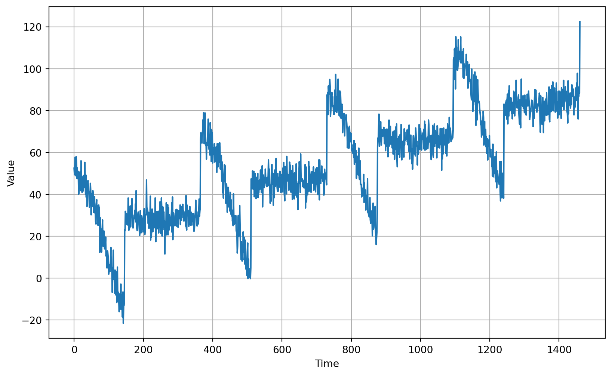
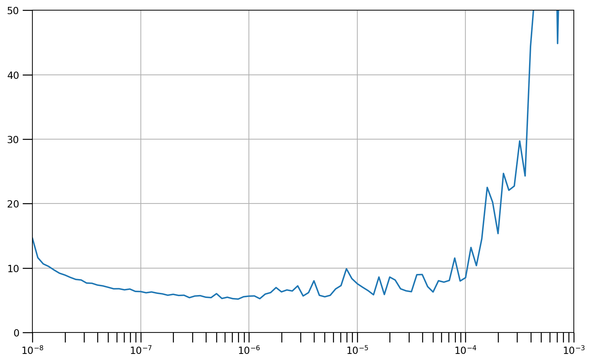

Code
import tensorflow as tf
import numpy as np
import matplotlib.pyplot as pltWeek 4 Real-world time series data
On top of DNNs and RNNs, let’s also add convolutions, and then put it all together using a real-world data series – one which measures sunspot activity over hundreds of years, and see if we can predict using it.
def plot_series(x, y, format="-", start=0, end=None,
title=None, xlabel=None, ylabel=None, legend=None ):
"""
Visualizes time series data
Args:
x (array of int) - contains values for the x-axis
y (array of int or tuple of arrays) - contains the values for the y-axis
format (string) - line style when plotting the graph
start (int) - first time step to plot
end (int) - last time step to plot
title (string) - title of the plot
xlabel (string) - label for the x-axis
ylabel (string) - label for the y-axis
legend (list of strings) - legend for the plot
"""
# Setup dimensions of the graph figure
plt.figure(figsize=(10, 6))
# Check if there are more than two series to plot
if type(y) is tuple:
# Loop over the y elements
for y_curr in y:
# Plot the x and current y values
plt.plot(x[start:end], y_curr[start:end], format)
else:
# Plot the x and y values
plt.plot(x[start:end], y[start:end], format)
# Label the x-axis
plt.xlabel(xlabel)
# Label the y-axis
plt.ylabel(ylabel)
# Set the legend
if legend:
plt.legend(legend)
# Set the title
plt.title(title)
# Overlay a grid on the graph
plt.grid(True)
# Draw the graph on screen
plt.show()
def trend(time, slope=0):
"""
Generates synthetic data that follows a straight line given a slope value.
Args:
time (array of int) - contains the time steps
slope (float) - determines the direction and steepness of the line
Returns:
series (array of float) - measurements that follow a straight line
"""
# Compute the linear series given the slope
series = slope * time
return series
def seasonal_pattern(season_time):
"""
Just an arbitrary pattern, you can change it if you wish
Args:
season_time (array of float) - contains the measurements per time step
Returns:
data_pattern (array of float) - contains revised measurement values according
to the defined pattern
"""
# Generate the values using an arbitrary pattern
data_pattern = np.where(season_time < 0.4,
np.cos(season_time * 2 * np.pi),
1 / np.exp(3 * season_time))
return data_pattern
def seasonality(time, period, amplitude=1, phase=0):
"""
Repeats the same pattern at each period
Args:
time (array of int) - contains the time steps
period (int) - number of time steps before the pattern repeats
amplitude (int) - peak measured value in a period
phase (int) - number of time steps to shift the measured values
Returns:
data_pattern (array of float) - seasonal data scaled by the defined amplitude
"""
# Define the measured values per period
season_time = ((time + phase) % period) / period
# Generates the seasonal data scaled by the defined amplitude
data_pattern = amplitude * seasonal_pattern(season_time)
return data_pattern
def noise(time, noise_level=1, seed=None):
"""Generates a normally distributed noisy signal
Args:
time (array of int) - contains the time steps
noise_level (float) - scaling factor for the generated signal
seed (int) - number generator seed for repeatability
Returns:
noise (array of float) - the noisy signal
"""
# Initialize the random number generator
rnd = np.random.RandomState(seed)
# Generate a random number for each time step and scale by the noise level
noise = rnd.randn(len(time)) * noise_level
return noise# Parameters
time = np.arange(4 * 365 + 1, dtype="float32")
baseline = 10
amplitude = 40
slope = 0.05
noise_level = 5
# Create the series
series = baseline + trend(time, slope) + seasonality(time, period=365, amplitude=amplitude)
# Update with noise
series += noise(time, noise_level, seed=42)
# Plot the results
plot_series(time, series, xlabel='Time', ylabel='Value')
def windowed_dataset(series, window_size, batch_size, shuffle_buffer):
"""Generates dataset windows
Args:
series (array of float) - contains the values of the time series
window_size (int) - the number of time steps to average
batch_size (int) - the batch size
shuffle_buffer(int) - buffer size to use for the shuffle method
Returns:
dataset (TF Dataset) - TF Dataset containing time windows
"""
# Generate a TF Dataset from the series values
dataset = tf.data.Dataset.from_tensor_slices(series)
# Window the data but only take those with the specified size
dataset = dataset.window(window_size + 1, shift=1, drop_remainder=True)
# Flatten the windows by putting its elements in a single batch
dataset = dataset.flat_map(lambda window: window.batch(window_size + 1))
# Create tuples with features and labels
dataset = dataset.map(lambda window: (window[:-1], window[-1]))
# Shuffle the windows
dataset = dataset.shuffle(shuffle_buffer)
# Create batches of windows
dataset = dataset.batch(batch_size).prefetch(1)
return dataset# Reset states generated by Keras
tf.keras.backend.clear_session()
# Build the model
model = tf.keras.models.Sequential([
tf.keras.layers.Conv1D(filters=64, kernel_size=3,
strides=1, padding="causal",
activation="relu",
input_shape=[window_size, 1]),
tf.keras.layers.LSTM(64, return_sequences=True),
tf.keras.layers.LSTM(64),
tf.keras.layers.Dense(1),
tf.keras.layers.Lambda(lambda x: x * 400)
])
# Print the model summary
model.summary()Model: "sequential"
┏━━━━━━━━━━━━━━━━━━━━━━━━━━━━━━━━━┳━━━━━━━━━━━━━━━━━━━━━━━━┳━━━━━━━━━━━━━━━┓ ┃ Layer (type) ┃ Output Shape ┃ Param # ┃ ┡━━━━━━━━━━━━━━━━━━━━━━━━━━━━━━━━━╇━━━━━━━━━━━━━━━━━━━━━━━━╇━━━━━━━━━━━━━━━┩ │ conv1d (Conv1D) │ (None, 20, 64) │ 256 │ ├─────────────────────────────────┼────────────────────────┼───────────────┤ │ lstm (LSTM) │ (None, 20, 64) │ 33,024 │ ├─────────────────────────────────┼────────────────────────┼───────────────┤ │ lstm_1 (LSTM) │ (None, 64) │ 33,024 │ ├─────────────────────────────────┼────────────────────────┼───────────────┤ │ dense (Dense) │ (None, 1) │ 65 │ ├─────────────────────────────────┼────────────────────────┼───────────────┤ │ lambda (Lambda) │ (None, 1) │ 0 │ └─────────────────────────────────┴────────────────────────┴───────────────┘
Total params: 66,369 (259.25 KB)
Trainable params: 66,369 (259.25 KB)
Non-trainable params: 0 (0.00 B)
# Set the learning rate scheduler
lr_schedule = tf.keras.callbacks.LearningRateScheduler(
lambda epoch: 1e-8 * 10**(epoch / 20))
# Initialize the optimizer
optimizer = tf.keras.optimizers.SGD(momentum=0.9)
# Set the training parameters
model.compile(loss=tf.keras.losses.Huber(), optimizer=optimizer)
# Train the model
history = model.fit(train_set, epochs=100, callbacks=[lr_schedule],verbose=0)# Define the learning rate array
lrs = 1e-8 * (10 ** (np.arange(100) / 20))
# Set the figure size
plt.figure(figsize=(10, 6))
# Set the grid
plt.grid(True)
# Plot the loss in log scale
plt.semilogx(lrs, history.history["loss"])
# Increase the tickmarks size
plt.tick_params('both', length=10, width=1, which='both')
# Set the plot boundaries
plt.axis([1e-8, 1e-3, 0, 50])
# Get mae and loss from history log
mae=history.history['mae']
loss=history.history['loss']
# Get number of epochs
epochs=range(len(loss))
# Plot mae and loss
plot_series(
x=epochs,
y=(mae, loss),
title='MAE and Loss',
xlabel='Epochs',
legend=['MAE', 'Loss']
)
# Only plot the last 80% of the epochs
zoom_split = int(epochs[-1] * 0.2)
epochs_zoom = epochs[zoom_split:]
mae_zoom = mae[zoom_split:]
loss_zoom = loss[zoom_split:]
# Plot zoomed mae and loss
plot_series(
x=epochs_zoom,
y=(mae_zoom, loss_zoom),
title='MAE and Loss',
xlabel='Epochs',
legend=['MAE', 'Loss']
)def model_forecast(model, series, window_size, batch_size):
"""Uses an input model to generate predictions on data windows
Args:
model (TF Keras Model) - model that accepts data windows
series (array of float) - contains the values of the time series
window_size (int) - the number of time steps to include in the window
batch_size (int) - the batch size
Returns:
forecast (numpy array) - array containing predictions
"""
# Generate a TF Dataset from the series values
dataset = tf.data.Dataset.from_tensor_slices(series)
# Window the data but only take those with the specified size
dataset = dataset.window(window_size, shift=1, drop_remainder=True)
# Flatten the windows by putting its elements in a single batch
dataset = dataset.flat_map(lambda w: w.batch(window_size))
# Create batches of windows
dataset = dataset.batch(batch_size).prefetch(1)
# Get predictions on the entire dataset
forecast = model.predict(dataset)
return forecast# Reduce the original series
forecast_series = series[split_time-window_size:-1]
# Use helper function to generate predictions
forecast = model_forecast(model, forecast_series, window_size, batch_size)
# Drop single dimensional axes
results = forecast.squeeze()
# Plot the results
plot_series(time_valid, (x_valid, results)) 1/Unknown 0s 152ms/step 29/Unknown 0s 6ms/step 29/29 ━━━━━━━━━━━━━━━━━━━━ 0s 6ms/step53.190613class myCallback(tf.keras.callbacks.Callback):
def on_epoch_end(self, epoch, logs={}):
'''
Halts the training when a certain metric is met
Args:
epoch (integer) - index of epoch (required but unused in the function definition below)
logs (dict) - metric results from the training epoch
'''
# Check the validation set MAE
if(logs.get('val_mae') < 4.9):
# Stop if threshold is met
print("\nRequired val MAE is met so cancelling training!")
self.model.stop_training = True# Set the learning rate
# 4e-8=0.00000004
learning_rate = 4e-8
# Set the optimizer
optimizer = tf.keras.optimizers.SGD(learning_rate=learning_rate, momentum=0.9)
# Set the training parameters
model.compile(loss=tf.keras.losses.Huber(),
optimizer=optimizer,
metrics=["mae"])
# Train the model
history = model.fit(train_set, epochs=500, validation_data=val_set, callbacks=[callbacks])Epoch 1/500
1/Unknown 1s 1s/step - loss: 3.1722 - mae: 3.6195 11/Unknown 1s 5ms/step - loss: 3.9195 - mae: 4.3847 21/Unknown 1s 5ms/step - loss: 3.9915 - mae: 4.4597 31/Unknown 1s 5ms/step - loss: 4.0281 - mae: 4.4981 41/Unknown 1s 5ms/step - loss: 4.0119 - mae: 4.4823 51/Unknown 2s 5ms/step - loss: 3.9914 - mae: 4.4619 61/Unknown 2s 5ms/step - loss: 3.9842 - mae: 4.454862/62 ━━━━━━━━━━━━━━━━━━━━ 2s 9ms/step - loss: 3.9810 - mae: 4.4533 - val_loss: 4.6316 - val_mae: 5.3145
Epoch 2/500
1/62 ━━━━━━━━━━━━━━━━━━━━ 2s 47ms/step - loss: 2.8562 - mae: 3.270711/62 ━━━━━━━━━━━━━━━━━━━━ 0s 5ms/step - loss: 3.1839 - mae: 3.6203 21/62 ━━━━━━━━━━━━━━━━━━━━ 0s 5ms/step - loss: 3.4287 - mae: 3.876031/62 ━━━━━━━━━━━━━━━━━━━━ 0s 5ms/step - loss: 3.5692 - mae: 4.022240/62 ━━━━━━━━━━━━━━━━━━━━ 0s 5ms/step - loss: 3.6598 - mae: 4.116549/62 ━━━━━━━━━━━━━━━━━━━━ 0s 6ms/step - loss: 3.7144 - mae: 4.173358/62 ━━━━━━━━━━━━━━━━━━━━ 0s 6ms/step - loss: 3.7547 - mae: 4.215462/62 ━━━━━━━━━━━━━━━━━━━━ 0s 7ms/step - loss: 3.7709 - mae: 4.2330 - val_loss: 4.5543 - val_mae: 5.1305
Epoch 3/500
1/62 ━━━━━━━━━━━━━━━━━━━━ 3s 49ms/step - loss: 6.2911 - mae: 6.791110/62 ━━━━━━━━━━━━━━━━━━━━ 0s 6ms/step - loss: 4.6455 - mae: 5.1211 19/62 ━━━━━━━━━━━━━━━━━━━━ 0s 6ms/step - loss: 4.3978 - mae: 4.871428/62 ━━━━━━━━━━━━━━━━━━━━ 0s 6ms/step - loss: 4.2892 - mae: 4.762937/62 ━━━━━━━━━━━━━━━━━━━━ 0s 6ms/step - loss: 4.2049 - mae: 4.678846/62 ━━━━━━━━━━━━━━━━━━━━ 0s 6ms/step - loss: 4.1670 - mae: 4.641055/62 ━━━━━━━━━━━━━━━━━━━━ 0s 6ms/step - loss: 4.1387 - mae: 4.612662/62 ━━━━━━━━━━━━━━━━━━━━ 0s 7ms/step - loss: 4.1162 - mae: 4.5907 - val_loss: 4.4680 - val_mae: 5.1156
Epoch 4/500
1/62 ━━━━━━━━━━━━━━━━━━━━ 2s 48ms/step - loss: 5.0755 - mae: 5.574610/62 ━━━━━━━━━━━━━━━━━━━━ 0s 6ms/step - loss: 3.9724 - mae: 4.4530 19/62 ━━━━━━━━━━━━━━━━━━━━ 0s 6ms/step - loss: 3.9640 - mae: 4.441928/62 ━━━━━━━━━━━━━━━━━━━━ 0s 6ms/step - loss: 3.9525 - mae: 4.429237/62 ━━━━━━━━━━━━━━━━━━━━ 0s 6ms/step - loss: 3.9184 - mae: 4.394446/62 ━━━━━━━━━━━━━━━━━━━━ 0s 6ms/step - loss: 3.9048 - mae: 4.380555/62 ━━━━━━━━━━━━━━━━━━━━ 0s 6ms/step - loss: 3.9087 - mae: 4.384362/62 ━━━━━━━━━━━━━━━━━━━━ 0s 7ms/step - loss: 3.9140 - mae: 4.3905 - val_loss: 4.4896 - val_mae: 5.1466
Epoch 5/500
1/62 ━━━━━━━━━━━━━━━━━━━━ 2s 49ms/step - loss: 3.7004 - mae: 4.184710/62 ━━━━━━━━━━━━━━━━━━━━ 0s 6ms/step - loss: 3.6519 - mae: 4.1313 19/62 ━━━━━━━━━━━━━━━━━━━━ 0s 6ms/step - loss: 3.7270 - mae: 4.204528/62 ━━━━━━━━━━━━━━━━━━━━ 0s 6ms/step - loss: 3.7927 - mae: 4.268237/62 ━━━━━━━━━━━━━━━━━━━━ 0s 6ms/step - loss: 3.8325 - mae: 4.306346/62 ━━━━━━━━━━━━━━━━━━━━ 0s 6ms/step - loss: 3.8501 - mae: 4.322955/62 ━━━━━━━━━━━━━━━━━━━━ 0s 6ms/step - loss: 3.8584 - mae: 4.330662/62 ━━━━━━━━━━━━━━━━━━━━ 0s 7ms/step - loss: 3.8670 - mae: 4.3395 - val_loss: 4.5401 - val_mae: 5.1419
Epoch 6/500
1/62 ━━━━━━━━━━━━━━━━━━━━ 3s 56ms/step - loss: 3.4223 - mae: 3.9101 9/62 ━━━━━━━━━━━━━━━━━━━━ 0s 7ms/step - loss: 3.7159 - mae: 4.1899 18/62 ━━━━━━━━━━━━━━━━━━━━ 0s 6ms/step - loss: 3.6691 - mae: 4.138326/62 ━━━━━━━━━━━━━━━━━━━━ 0s 6ms/step - loss: 3.6850 - mae: 4.154535/62 ━━━━━━━━━━━━━━━━━━━━ 0s 6ms/step - loss: 3.7094 - mae: 4.179444/62 ━━━━━━━━━━━━━━━━━━━━ 0s 6ms/step - loss: 3.7427 - mae: 4.213453/62 ━━━━━━━━━━━━━━━━━━━━ 0s 6ms/step - loss: 3.7708 - mae: 4.241862/62 ━━━━━━━━━━━━━━━━━━━━ 0s 6ms/step - loss: 3.8008 - mae: 4.272362/62 ━━━━━━━━━━━━━━━━━━━━ 1s 7ms/step - loss: 3.8025 - mae: 4.2750 - val_loss: 4.4876 - val_mae: 5.1245
Epoch 7/500
1/62 ━━━━━━━━━━━━━━━━━━━━ 2s 48ms/step - loss: 3.4089 - mae: 3.857710/62 ━━━━━━━━━━━━━━━━━━━━ 0s 6ms/step - loss: 4.0065 - mae: 4.4706 18/62 ━━━━━━━━━━━━━━━━━━━━ 0s 6ms/step - loss: 3.8604 - mae: 4.325826/62 ━━━━━━━━━━━━━━━━━━━━ 0s 6ms/step - loss: 3.8535 - mae: 4.318934/62 ━━━━━━━━━━━━━━━━━━━━ 0s 6ms/step - loss: 3.8614 - mae: 4.327342/62 ━━━━━━━━━━━━━━━━━━━━ 0s 6ms/step - loss: 3.8538 - mae: 4.319650/62 ━━━━━━━━━━━━━━━━━━━━ 0s 6ms/step - loss: 3.8480 - mae: 4.314059/62 ━━━━━━━━━━━━━━━━━━━━ 0s 6ms/step - loss: 3.8552 - mae: 4.321762/62 ━━━━━━━━━━━━━━━━━━━━ 1s 8ms/step - loss: 3.8595 - mae: 4.3269 - val_loss: 4.5173 - val_mae: 5.1480
Epoch 8/500
1/62 ━━━━━━━━━━━━━━━━━━━━ 2s 49ms/step - loss: 4.1754 - mae: 4.673210/62 ━━━━━━━━━━━━━━━━━━━━ 0s 6ms/step - loss: 4.2378 - mae: 4.7181 19/62 ━━━━━━━━━━━━━━━━━━━━ 0s 6ms/step - loss: 4.1605 - mae: 4.637627/62 ━━━━━━━━━━━━━━━━━━━━ 0s 6ms/step - loss: 4.1227 - mae: 4.600136/62 ━━━━━━━━━━━━━━━━━━━━ 0s 6ms/step - loss: 4.0788 - mae: 4.556245/62 ━━━━━━━━━━━━━━━━━━━━ 0s 6ms/step - loss: 4.0607 - mae: 4.537854/62 ━━━━━━━━━━━━━━━━━━━━ 0s 6ms/step - loss: 4.0491 - mae: 4.525662/62 ━━━━━━━━━━━━━━━━━━━━ 0s 7ms/step - loss: 4.0387 - mae: 4.5156 - val_loss: 4.4667 - val_mae: 5.0927
Epoch 9/500
1/62 ━━━━━━━━━━━━━━━━━━━━ 3s 53ms/step - loss: 6.5206 - mae: 7.0206 6/62 ━━━━━━━━━━━━━━━━━━━━ 0s 10ms/step - loss: 5.0432 - mae: 5.524412/62 ━━━━━━━━━━━━━━━━━━━━ 0s 10ms/step - loss: 4.7708 - mae: 5.250920/62 ━━━━━━━━━━━━━━━━━━━━ 0s 8ms/step - loss: 4.5900 - mae: 5.0694 28/62 ━━━━━━━━━━━━━━━━━━━━ 0s 8ms/step - loss: 4.4973 - mae: 4.975136/62 ━━━━━━━━━━━━━━━━━━━━ 0s 7ms/step - loss: 4.4267 - mae: 4.902945/62 ━━━━━━━━━━━━━━━━━━━━ 0s 7ms/step - loss: 4.3562 - mae: 4.830754/62 ━━━━━━━━━━━━━━━━━━━━ 0s 7ms/step - loss: 4.2983 - mae: 4.772262/62 ━━━━━━━━━━━━━━━━━━━━ 1s 8ms/step - loss: 4.2533 - mae: 4.7289 - val_loss: 4.4901 - val_mae: 5.1569
Epoch 10/500
1/62 ━━━━━━━━━━━━━━━━━━━━ 2s 48ms/step - loss: 4.2376 - mae: 4.720910/62 ━━━━━━━━━━━━━━━━━━━━ 0s 6ms/step - loss: 3.8390 - mae: 4.3150 19/62 ━━━━━━━━━━━━━━━━━━━━ 0s 6ms/step - loss: 3.7989 - mae: 4.273128/62 ━━━━━━━━━━━━━━━━━━━━ 0s 6ms/step - loss: 3.7979 - mae: 4.270937/62 ━━━━━━━━━━━━━━━━━━━━ 0s 6ms/step - loss: 3.8353 - mae: 4.308046/62 ━━━━━━━━━━━━━━━━━━━━ 0s 6ms/step - loss: 3.8630 - mae: 4.335755/62 ━━━━━━━━━━━━━━━━━━━━ 0s 6ms/step - loss: 3.8879 - mae: 4.360562/62 ━━━━━━━━━━━━━━━━━━━━ 0s 7ms/step - loss: 3.8945 - mae: 4.3684 - val_loss: 4.5738 - val_mae: 5.2215
Epoch 11/500
1/62 ━━━━━━━━━━━━━━━━━━━━ 2s 48ms/step - loss: 3.7724 - mae: 4.256610/62 ━━━━━━━━━━━━━━━━━━━━ 0s 6ms/step - loss: 3.6497 - mae: 4.1170 19/62 ━━━━━━━━━━━━━━━━━━━━ 0s 6ms/step - loss: 3.7655 - mae: 4.234726/62 ━━━━━━━━━━━━━━━━━━━━ 0s 6ms/step - loss: 3.8484 - mae: 4.319035/62 ━━━━━━━━━━━━━━━━━━━━ 0s 6ms/step - loss: 3.8861 - mae: 4.357544/62 ━━━━━━━━━━━━━━━━━━━━ 0s 6ms/step - loss: 3.8900 - mae: 4.361653/62 ━━━━━━━━━━━━━━━━━━━━ 0s 6ms/step - loss: 3.8930 - mae: 4.364762/62 ━━━━━━━━━━━━━━━━━━━━ 0s 6ms/step - loss: 3.8986 - mae: 4.369762/62 ━━━━━━━━━━━━━━━━━━━━ 0s 7ms/step - loss: 3.8988 - mae: 4.3706 - val_loss: 4.4759 - val_mae: 5.1294
Epoch 12/500
1/62 ━━━━━━━━━━━━━━━━━━━━ 2s 48ms/step - loss: 4.4696 - mae: 4.911310/62 ━━━━━━━━━━━━━━━━━━━━ 0s 6ms/step - loss: 4.2697 - mae: 4.7352 19/62 ━━━━━━━━━━━━━━━━━━━━ 0s 6ms/step - loss: 4.0970 - mae: 4.567728/62 ━━━━━━━━━━━━━━━━━━━━ 0s 6ms/step - loss: 4.0451 - mae: 4.517637/62 ━━━━━━━━━━━━━━━━━━━━ 0s 6ms/step - loss: 4.0095 - mae: 4.482646/62 ━━━━━━━━━━━━━━━━━━━━ 0s 6ms/step - loss: 3.9846 - mae: 4.457755/62 ━━━━━━━━━━━━━━━━━━━━ 0s 6ms/step - loss: 3.9796 - mae: 4.452462/62 ━━━━━━━━━━━━━━━━━━━━ 0s 7ms/step - loss: 3.9801 - mae: 4.4539 - val_loss: 4.4779 - val_mae: 5.0763
Epoch 13/500
1/62 ━━━━━━━━━━━━━━━━━━━━ 2s 49ms/step - loss: 3.3473 - mae: 3.832010/62 ━━━━━━━━━━━━━━━━━━━━ 0s 6ms/step - loss: 3.3013 - mae: 3.7695 19/62 ━━━━━━━━━━━━━━━━━━━━ 0s 6ms/step - loss: 3.4427 - mae: 3.910628/62 ━━━━━━━━━━━━━━━━━━━━ 0s 6ms/step - loss: 3.5471 - mae: 4.015437/62 ━━━━━━━━━━━━━━━━━━━━ 0s 6ms/step - loss: 3.6463 - mae: 4.115846/62 ━━━━━━━━━━━━━━━━━━━━ 0s 6ms/step - loss: 3.7231 - mae: 4.193555/62 ━━━━━━━━━━━━━━━━━━━━ 0s 6ms/step - loss: 3.7687 - mae: 4.239762/62 ━━━━━━━━━━━━━━━━━━━━ 0s 7ms/step - loss: 3.7912 - mae: 4.2629 - val_loss: 4.4247 - val_mae: 5.1008
Epoch 14/500
1/62 ━━━━━━━━━━━━━━━━━━━━ 2s 48ms/step - loss: 3.8598 - mae: 4.312610/62 ━━━━━━━━━━━━━━━━━━━━ 0s 6ms/step - loss: 3.4204 - mae: 3.8723 19/62 ━━━━━━━━━━━━━━━━━━━━ 0s 6ms/step - loss: 3.5992 - mae: 4.055128/62 ━━━━━━━━━━━━━━━━━━━━ 0s 6ms/step - loss: 3.6877 - mae: 4.147637/62 ━━━━━━━━━━━━━━━━━━━━ 0s 6ms/step - loss: 3.7366 - mae: 4.199246/62 ━━━━━━━━━━━━━━━━━━━━ 0s 6ms/step - loss: 3.7598 - mae: 4.224255/62 ━━━━━━━━━━━━━━━━━━━━ 0s 6ms/step - loss: 3.7817 - mae: 4.247262/62 ━━━━━━━━━━━━━━━━━━━━ 0s 7ms/step - loss: 3.8005 - mae: 4.2686 - val_loss: 4.6518 - val_mae: 5.2776
Epoch 15/500
1/62 ━━━━━━━━━━━━━━━━━━━━ 2s 49ms/step - loss: 2.7479 - mae: 3.193210/62 ━━━━━━━━━━━━━━━━━━━━ 0s 6ms/step - loss: 3.5261 - mae: 3.9899 19/62 ━━━━━━━━━━━━━━━━━━━━ 0s 6ms/step - loss: 3.9413 - mae: 4.409328/62 ━━━━━━━━━━━━━━━━━━━━ 0s 6ms/step - loss: 4.0096 - mae: 4.478737/62 ━━━━━━━━━━━━━━━━━━━━ 0s 6ms/step - loss: 3.9886 - mae: 4.457846/62 ━━━━━━━━━━━━━━━━━━━━ 0s 6ms/step - loss: 3.9757 - mae: 4.445255/62 ━━━━━━━━━━━━━━━━━━━━ 0s 6ms/step - loss: 3.9644 - mae: 4.434062/62 ━━━━━━━━━━━━━━━━━━━━ 0s 7ms/step - loss: 3.9558 - mae: 4.4259 - val_loss: 4.6028 - val_mae: 5.2529
Epoch 16/500
1/62 ━━━━━━━━━━━━━━━━━━━━ 2s 47ms/step - loss: 4.1769 - mae: 4.675910/62 ━━━━━━━━━━━━━━━━━━━━ 0s 6ms/step - loss: 3.8496 - mae: 4.3095 19/62 ━━━━━━━━━━━━━━━━━━━━ 0s 6ms/step - loss: 4.0456 - mae: 4.507728/62 ━━━━━━━━━━━━━━━━━━━━ 0s 6ms/step - loss: 4.1225 - mae: 4.588037/62 ━━━━━━━━━━━━━━━━━━━━ 0s 6ms/step - loss: 4.1439 - mae: 4.611846/62 ━━━━━━━━━━━━━━━━━━━━ 0s 6ms/step - loss: 4.1514 - mae: 4.621055/62 ━━━━━━━━━━━━━━━━━━━━ 0s 6ms/step - loss: 4.1370 - mae: 4.607462/62 ━━━━━━━━━━━━━━━━━━━━ 0s 7ms/step - loss: 4.1183 - mae: 4.5910 - val_loss: 4.6915 - val_mae: 5.3651
Epoch 17/500
1/62 ━━━━━━━━━━━━━━━━━━━━ 2s 48ms/step - loss: 7.1346 - mae: 7.613710/62 ━━━━━━━━━━━━━━━━━━━━ 0s 6ms/step - loss: 4.8483 - mae: 5.3163 19/62 ━━━━━━━━━━━━━━━━━━━━ 0s 6ms/step - loss: 4.4955 - mae: 4.964328/62 ━━━━━━━━━━━━━━━━━━━━ 0s 6ms/step - loss: 4.3171 - mae: 4.786937/62 ━━━━━━━━━━━━━━━━━━━━ 0s 6ms/step - loss: 4.2191 - mae: 4.689646/62 ━━━━━━━━━━━━━━━━━━━━ 0s 6ms/step - loss: 4.1603 - mae: 4.631855/62 ━━━━━━━━━━━━━━━━━━━━ 0s 6ms/step - loss: 4.1287 - mae: 4.600562/62 ━━━━━━━━━━━━━━━━━━━━ 0s 7ms/step - loss: 4.1061 - mae: 4.5800 - val_loss: 4.5025 - val_mae: 5.1263
Epoch 18/500
1/62 ━━━━━━━━━━━━━━━━━━━━ 2s 47ms/step - loss: 2.8084 - mae: 3.223910/62 ━━━━━━━━━━━━━━━━━━━━ 0s 6ms/step - loss: 3.6686 - mae: 4.1317 19/62 ━━━━━━━━━━━━━━━━━━━━ 0s 6ms/step - loss: 3.7303 - mae: 4.195928/62 ━━━━━━━━━━━━━━━━━━━━ 0s 6ms/step - loss: 3.7543 - mae: 4.220937/62 ━━━━━━━━━━━━━━━━━━━━ 0s 6ms/step - loss: 3.7981 - mae: 4.265446/62 ━━━━━━━━━━━━━━━━━━━━ 0s 6ms/step - loss: 3.8268 - mae: 4.295155/62 ━━━━━━━━━━━━━━━━━━━━ 0s 6ms/step - loss: 3.8447 - mae: 4.313762/62 ━━━━━━━━━━━━━━━━━━━━ 0s 7ms/step - loss: 3.8543 - mae: 4.3247 - val_loss: 4.4654 - val_mae: 5.0945
Epoch 19/500
1/62 ━━━━━━━━━━━━━━━━━━━━ 2s 49ms/step - loss: 3.7648 - mae: 4.229010/62 ━━━━━━━━━━━━━━━━━━━━ 0s 6ms/step - loss: 3.5552 - mae: 4.0189 19/62 ━━━━━━━━━━━━━━━━━━━━ 0s 6ms/step - loss: 3.7718 - mae: 4.236428/62 ━━━━━━━━━━━━━━━━━━━━ 0s 6ms/step - loss: 3.7921 - mae: 4.257737/62 ━━━━━━━━━━━━━━━━━━━━ 0s 6ms/step - loss: 3.8121 - mae: 4.278646/62 ━━━━━━━━━━━━━━━━━━━━ 0s 6ms/step - loss: 3.8304 - mae: 4.297655/62 ━━━━━━━━━━━━━━━━━━━━ 0s 6ms/step - loss: 3.8447 - mae: 4.312662/62 ━━━━━━━━━━━━━━━━━━━━ 0s 7ms/step - loss: 3.8565 - mae: 4.3254 - val_loss: 4.7297 - val_mae: 5.4062
Epoch 20/500
1/62 ━━━━━━━━━━━━━━━━━━━━ 2s 48ms/step - loss: 3.7144 - mae: 4.184210/62 ━━━━━━━━━━━━━━━━━━━━ 0s 6ms/step - loss: 3.8705 - mae: 4.3441 19/62 ━━━━━━━━━━━━━━━━━━━━ 0s 6ms/step - loss: 3.9145 - mae: 4.389528/62 ━━━━━━━━━━━━━━━━━━━━ 0s 6ms/step - loss: 3.9633 - mae: 4.438737/62 ━━━━━━━━━━━━━━━━━━━━ 0s 6ms/step - loss: 3.9578 - mae: 4.433046/62 ━━━━━━━━━━━━━━━━━━━━ 0s 6ms/step - loss: 3.9521 - mae: 4.427155/62 ━━━━━━━━━━━━━━━━━━━━ 0s 6ms/step - loss: 3.9495 - mae: 4.424362/62 ━━━━━━━━━━━━━━━━━━━━ 0s 7ms/step - loss: 3.9504 - mae: 4.4227 - val_loss: 4.4591 - val_mae: 5.1126
Epoch 21/500
1/62 ━━━━━━━━━━━━━━━━━━━━ 2s 48ms/step - loss: 4.4884 - mae: 4.964610/62 ━━━━━━━━━━━━━━━━━━━━ 0s 6ms/step - loss: 4.3088 - mae: 4.7860 19/62 ━━━━━━━━━━━━━━━━━━━━ 0s 6ms/step - loss: 4.1840 - mae: 4.660628/62 ━━━━━━━━━━━━━━━━━━━━ 0s 6ms/step - loss: 4.1319 - mae: 4.607537/62 ━━━━━━━━━━━━━━━━━━━━ 0s 6ms/step - loss: 4.1020 - mae: 4.576546/62 ━━━━━━━━━━━━━━━━━━━━ 0s 6ms/step - loss: 4.0900 - mae: 4.564155/62 ━━━━━━━━━━━━━━━━━━━━ 0s 6ms/step - loss: 4.0761 - mae: 4.549962/62 ━━━━━━━━━━━━━━━━━━━━ 0s 7ms/step - loss: 4.0574 - mae: 4.5333 - val_loss: 4.6618 - val_mae: 5.3018
Epoch 22/500
1/62 ━━━━━━━━━━━━━━━━━━━━ 2s 48ms/step - loss: 3.6356 - mae: 4.088910/62 ━━━━━━━━━━━━━━━━━━━━ 0s 6ms/step - loss: 4.0208 - mae: 4.4900 19/62 ━━━━━━━━━━━━━━━━━━━━ 0s 6ms/step - loss: 4.0548 - mae: 4.527228/62 ━━━━━━━━━━━━━━━━━━━━ 0s 6ms/step - loss: 4.0508 - mae: 4.524137/62 ━━━━━━━━━━━━━━━━━━━━ 0s 6ms/step - loss: 4.0472 - mae: 4.520646/62 ━━━━━━━━━━━━━━━━━━━━ 0s 6ms/step - loss: 4.0433 - mae: 4.516355/62 ━━━━━━━━━━━━━━━━━━━━ 0s 6ms/step - loss: 4.0361 - mae: 4.508862/62 ━━━━━━━━━━━━━━━━━━━━ 0s 7ms/step - loss: 4.0261 - mae: 4.4996 - val_loss: 4.3900 - val_mae: 5.0652
Epoch 23/500
1/62 ━━━━━━━━━━━━━━━━━━━━ 2s 48ms/step - loss: 4.2276 - mae: 4.700910/62 ━━━━━━━━━━━━━━━━━━━━ 0s 6ms/step - loss: 4.1936 - mae: 4.6687 19/62 ━━━━━━━━━━━━━━━━━━━━ 0s 6ms/step - loss: 4.0556 - mae: 4.526628/62 ━━━━━━━━━━━━━━━━━━━━ 0s 6ms/step - loss: 4.0335 - mae: 4.505337/62 ━━━━━━━━━━━━━━━━━━━━ 0s 6ms/step - loss: 4.0375 - mae: 4.510246/62 ━━━━━━━━━━━━━━━━━━━━ 0s 6ms/step - loss: 4.0429 - mae: 4.516355/62 ━━━━━━━━━━━━━━━━━━━━ 0s 6ms/step - loss: 4.0328 - mae: 4.506662/62 ━━━━━━━━━━━━━━━━━━━━ 0s 7ms/step - loss: 4.0267 - mae: 4.5002 - val_loss: 4.5106 - val_mae: 5.1598
Epoch 24/500
1/62 ━━━━━━━━━━━━━━━━━━━━ 2s 48ms/step - loss: 2.8622 - mae: 3.276610/62 ━━━━━━━━━━━━━━━━━━━━ 0s 6ms/step - loss: 3.5913 - mae: 4.0553 19/62 ━━━━━━━━━━━━━━━━━━━━ 0s 6ms/step - loss: 3.6781 - mae: 4.144428/62 ━━━━━━━━━━━━━━━━━━━━ 0s 6ms/step - loss: 3.7043 - mae: 4.172237/62 ━━━━━━━━━━━━━━━━━━━━ 0s 6ms/step - loss: 3.7321 - mae: 4.201046/62 ━━━━━━━━━━━━━━━━━━━━ 0s 6ms/step - loss: 3.7673 - mae: 4.236855/62 ━━━━━━━━━━━━━━━━━━━━ 0s 6ms/step - loss: 3.7973 - mae: 4.267162/62 ━━━━━━━━━━━━━━━━━━━━ 0s 7ms/step - loss: 3.8146 - mae: 4.2861 - val_loss: 4.4514 - val_mae: 5.0860
Epoch 25/500
1/62 ━━━━━━━━━━━━━━━━━━━━ 2s 48ms/step - loss: 4.4144 - mae: 4.899910/62 ━━━━━━━━━━━━━━━━━━━━ 0s 6ms/step - loss: 3.7887 - mae: 4.2704 19/62 ━━━━━━━━━━━━━━━━━━━━ 0s 6ms/step - loss: 3.7635 - mae: 4.241728/62 ━━━━━━━━━━━━━━━━━━━━ 0s 6ms/step - loss: 3.7477 - mae: 4.223637/62 ━━━━━━━━━━━━━━━━━━━━ 0s 6ms/step - loss: 3.7750 - mae: 4.250646/62 ━━━━━━━━━━━━━━━━━━━━ 0s 6ms/step - loss: 3.7986 - mae: 4.274555/62 ━━━━━━━━━━━━━━━━━━━━ 0s 6ms/step - loss: 3.8187 - mae: 4.294862/62 ━━━━━━━━━━━━━━━━━━━━ 0s 7ms/step - loss: 3.8349 - mae: 4.3116 - val_loss: 4.8637 - val_mae: 5.4832
Epoch 26/500
1/62 ━━━━━━━━━━━━━━━━━━━━ 2s 49ms/step - loss: 3.7782 - mae: 4.238410/62 ━━━━━━━━━━━━━━━━━━━━ 0s 6ms/step - loss: 3.8537 - mae: 4.3211 19/62 ━━━━━━━━━━━━━━━━━━━━ 0s 6ms/step - loss: 3.8902 - mae: 4.355628/62 ━━━━━━━━━━━━━━━━━━━━ 0s 6ms/step - loss: 3.8842 - mae: 4.350137/62 ━━━━━━━━━━━━━━━━━━━━ 0s 6ms/step - loss: 3.8837 - mae: 4.350046/62 ━━━━━━━━━━━━━━━━━━━━ 0s 6ms/step - loss: 3.8859 - mae: 4.352455/62 ━━━━━━━━━━━━━━━━━━━━ 0s 6ms/step - loss: 3.8910 - mae: 4.357362/62 ━━━━━━━━━━━━━━━━━━━━ 0s 7ms/step - loss: 3.8952 - mae: 4.3632 - val_loss: 4.6918 - val_mae: 5.3489
Epoch 27/500
1/62 ━━━━━━━━━━━━━━━━━━━━ 2s 48ms/step - loss: 3.0607 - mae: 3.509810/62 ━━━━━━━━━━━━━━━━━━━━ 0s 6ms/step - loss: 3.8576 - mae: 4.3251 18/62 ━━━━━━━━━━━━━━━━━━━━ 0s 6ms/step - loss: 3.8584 - mae: 4.329327/62 ━━━━━━━━━━━━━━━━━━━━ 0s 6ms/step - loss: 3.8576 - mae: 4.329636/62 ━━━━━━━━━━━━━━━━━━━━ 0s 6ms/step - loss: 3.8490 - mae: 4.321145/62 ━━━━━━━━━━━━━━━━━━━━ 0s 6ms/step - loss: 3.8634 - mae: 4.335654/62 ━━━━━━━━━━━━━━━━━━━━ 0s 6ms/step - loss: 3.8745 - mae: 4.346762/62 ━━━━━━━━━━━━━━━━━━━━ 0s 7ms/step - loss: 3.8835 - mae: 4.3566 - val_loss: 4.4271 - val_mae: 5.0659
Epoch 28/500
1/62 ━━━━━━━━━━━━━━━━━━━━ 2s 48ms/step - loss: 3.9908 - mae: 4.490510/62 ━━━━━━━━━━━━━━━━━━━━ 0s 6ms/step - loss: 4.2467 - mae: 4.7330 19/62 ━━━━━━━━━━━━━━━━━━━━ 0s 6ms/step - loss: 4.1970 - mae: 4.681228/62 ━━━━━━━━━━━━━━━━━━━━ 0s 6ms/step - loss: 4.1185 - mae: 4.600337/62 ━━━━━━━━━━━━━━━━━━━━ 0s 6ms/step - loss: 4.0653 - mae: 4.544746/62 ━━━━━━━━━━━━━━━━━━━━ 0s 6ms/step - loss: 4.0404 - mae: 4.518155/62 ━━━━━━━━━━━━━━━━━━━━ 0s 6ms/step - loss: 4.0232 - mae: 4.499862/62 ━━━━━━━━━━━━━━━━━━━━ 0s 7ms/step - loss: 4.0134 - mae: 4.4902 - val_loss: 4.6960 - val_mae: 5.3513
Epoch 29/500
1/62 ━━━━━━━━━━━━━━━━━━━━ 2s 49ms/step - loss: 3.3669 - mae: 3.841310/62 ━━━━━━━━━━━━━━━━━━━━ 0s 6ms/step - loss: 3.8817 - mae: 4.3639 19/62 ━━━━━━━━━━━━━━━━━━━━ 0s 6ms/step - loss: 3.9754 - mae: 4.458628/62 ━━━━━━━━━━━━━━━━━━━━ 0s 6ms/step - loss: 3.9885 - mae: 4.470537/62 ━━━━━━━━━━━━━━━━━━━━ 0s 6ms/step - loss: 3.9883 - mae: 4.469046/62 ━━━━━━━━━━━━━━━━━━━━ 0s 6ms/step - loss: 3.9928 - mae: 4.472155/62 ━━━━━━━━━━━━━━━━━━━━ 0s 6ms/step - loss: 3.9913 - mae: 4.469662/62 ━━━━━━━━━━━━━━━━━━━━ 0s 7ms/step - loss: 3.9897 - mae: 4.4685 - val_loss: 4.5378 - val_mae: 5.1976
Epoch 30/500
1/62 ━━━━━━━━━━━━━━━━━━━━ 2s 48ms/step - loss: 4.5667 - mae: 5.020210/62 ━━━━━━━━━━━━━━━━━━━━ 0s 6ms/step - loss: 4.2515 - mae: 4.7157 19/62 ━━━━━━━━━━━━━━━━━━━━ 0s 6ms/step - loss: 4.1182 - mae: 4.584528/62 ━━━━━━━━━━━━━━━━━━━━ 0s 6ms/step - loss: 4.0522 - mae: 4.518737/62 ━━━━━━━━━━━━━━━━━━━━ 0s 6ms/step - loss: 4.0510 - mae: 4.518246/62 ━━━━━━━━━━━━━━━━━━━━ 0s 6ms/step - loss: 4.0348 - mae: 4.502455/62 ━━━━━━━━━━━━━━━━━━━━ 0s 6ms/step - loss: 4.0134 - mae: 4.481462/62 ━━━━━━━━━━━━━━━━━━━━ 0s 7ms/step - loss: 4.0009 - mae: 4.4708 - val_loss: 4.4651 - val_mae: 5.1111
Epoch 31/500
1/62 ━━━━━━━━━━━━━━━━━━━━ 2s 47ms/step - loss: 3.8000 - mae: 4.274210/62 ━━━━━━━━━━━━━━━━━━━━ 0s 6ms/step - loss: 4.0481 - mae: 4.5284 19/62 ━━━━━━━━━━━━━━━━━━━━ 0s 6ms/step - loss: 4.1109 - mae: 4.590128/62 ━━━━━━━━━━━━━━━━━━━━ 0s 6ms/step - loss: 4.1232 - mae: 4.599937/62 ━━━━━━━━━━━━━━━━━━━━ 0s 6ms/step - loss: 4.1046 - mae: 4.580046/62 ━━━━━━━━━━━━━━━━━━━━ 0s 6ms/step - loss: 4.0757 - mae: 4.550355/62 ━━━━━━━━━━━━━━━━━━━━ 0s 6ms/step - loss: 4.0672 - mae: 4.541562/62 ━━━━━━━━━━━━━━━━━━━━ 0s 7ms/step - loss: 4.0581 - mae: 4.5334 - val_loss: 4.8500 - val_mae: 5.5067
Epoch 32/500
1/62 ━━━━━━━━━━━━━━━━━━━━ 2s 48ms/step - loss: 6.0585 - mae: 6.558310/62 ━━━━━━━━━━━━━━━━━━━━ 0s 6ms/step - loss: 4.9620 - mae: 5.4423 19/62 ━━━━━━━━━━━━━━━━━━━━ 0s 6ms/step - loss: 4.7341 - mae: 5.213828/62 ━━━━━━━━━━━━━━━━━━━━ 0s 6ms/step - loss: 4.6042 - mae: 5.083037/62 ━━━━━━━━━━━━━━━━━━━━ 0s 6ms/step - loss: 4.5063 - mae: 4.984246/62 ━━━━━━━━━━━━━━━━━━━━ 0s 6ms/step - loss: 4.4144 - mae: 4.891255/62 ━━━━━━━━━━━━━━━━━━━━ 0s 6ms/step - loss: 4.3355 - mae: 4.811662/62 ━━━━━━━━━━━━━━━━━━━━ 0s 7ms/step - loss: 4.2893 - mae: 4.7666 - val_loss: 4.6976 - val_mae: 5.3396
Epoch 33/500
1/62 ━━━━━━━━━━━━━━━━━━━━ 2s 48ms/step - loss: 3.1839 - mae: 3.644210/62 ━━━━━━━━━━━━━━━━━━━━ 0s 6ms/step - loss: 3.6722 - mae: 4.1490 19/62 ━━━━━━━━━━━━━━━━━━━━ 0s 6ms/step - loss: 3.8097 - mae: 4.286528/62 ━━━━━━━━━━━━━━━━━━━━ 0s 6ms/step - loss: 3.8743 - mae: 4.351237/62 ━━━━━━━━━━━━━━━━━━━━ 0s 6ms/step - loss: 3.9070 - mae: 4.382846/62 ━━━━━━━━━━━━━━━━━━━━ 0s 6ms/step - loss: 3.9322 - mae: 4.407055/62 ━━━━━━━━━━━━━━━━━━━━ 0s 6ms/step - loss: 3.9523 - mae: 4.426962/62 ━━━━━━━━━━━━━━━━━━━━ 0s 7ms/step - loss: 3.9536 - mae: 4.4296 - val_loss: 4.5934 - val_mae: 5.2433
Epoch 34/500
1/62 ━━━━━━━━━━━━━━━━━━━━ 2s 48ms/step - loss: 4.2029 - mae: 4.687910/62 ━━━━━━━━━━━━━━━━━━━━ 0s 6ms/step - loss: 3.9493 - mae: 4.4234 19/62 ━━━━━━━━━━━━━━━━━━━━ 0s 6ms/step - loss: 3.9853 - mae: 4.460128/62 ━━━━━━━━━━━━━━━━━━━━ 0s 6ms/step - loss: 4.0185 - mae: 4.493737/62 ━━━━━━━━━━━━━━━━━━━━ 0s 6ms/step - loss: 4.0286 - mae: 4.504046/62 ━━━━━━━━━━━━━━━━━━━━ 0s 6ms/step - loss: 4.0317 - mae: 4.507355/62 ━━━━━━━━━━━━━━━━━━━━ 0s 6ms/step - loss: 4.0379 - mae: 4.513762/62 ━━━━━━━━━━━━━━━━━━━━ 0s 7ms/step - loss: 4.0361 - mae: 4.5125 - val_loss: 5.0597 - val_mae: 5.6955
Epoch 35/500
1/62 ━━━━━━━━━━━━━━━━━━━━ 2s 48ms/step - loss: 4.8969 - mae: 5.396910/62 ━━━━━━━━━━━━━━━━━━━━ 0s 6ms/step - loss: 3.8449 - mae: 4.3252 19/62 ━━━━━━━━━━━━━━━━━━━━ 0s 6ms/step - loss: 3.8100 - mae: 4.289128/62 ━━━━━━━━━━━━━━━━━━━━ 0s 6ms/step - loss: 3.8514 - mae: 4.330437/62 ━━━━━━━━━━━━━━━━━━━━ 0s 6ms/step - loss: 3.8657 - mae: 4.343746/62 ━━━━━━━━━━━━━━━━━━━━ 0s 6ms/step - loss: 3.8735 - mae: 4.350555/62 ━━━━━━━━━━━━━━━━━━━━ 0s 6ms/step - loss: 3.8801 - mae: 4.356362/62 ━━━━━━━━━━━━━━━━━━━━ 0s 7ms/step - loss: 3.8879 - mae: 4.3633 - val_loss: 4.6833 - val_mae: 5.3240
Epoch 36/500
1/62 ━━━━━━━━━━━━━━━━━━━━ 2s 48ms/step - loss: 5.0067 - mae: 5.500310/62 ━━━━━━━━━━━━━━━━━━━━ 0s 6ms/step - loss: 3.7040 - mae: 4.1719 19/62 ━━━━━━━━━━━━━━━━━━━━ 0s 6ms/step - loss: 3.6011 - mae: 4.069628/62 ━━━━━━━━━━━━━━━━━━━━ 0s 6ms/step - loss: 3.5878 - mae: 4.058237/62 ━━━━━━━━━━━━━━━━━━━━ 0s 6ms/step - loss: 3.6241 - mae: 4.095446/62 ━━━━━━━━━━━━━━━━━━━━ 0s 6ms/step - loss: 3.6602 - mae: 4.132255/62 ━━━━━━━━━━━━━━━━━━━━ 0s 6ms/step - loss: 3.6941 - mae: 4.166662/62 ━━━━━━━━━━━━━━━━━━━━ 0s 7ms/step - loss: 3.7208 - mae: 4.1940 - val_loss: 4.8955 - val_mae: 5.5383
Epoch 37/500
1/62 ━━━━━━━━━━━━━━━━━━━━ 2s 48ms/step - loss: 3.8895 - mae: 4.370110/62 ━━━━━━━━━━━━━━━━━━━━ 0s 6ms/step - loss: 4.1301 - mae: 4.5996 19/62 ━━━━━━━━━━━━━━━━━━━━ 0s 6ms/step - loss: 4.0920 - mae: 4.561628/62 ━━━━━━━━━━━━━━━━━━━━ 0s 6ms/step - loss: 4.0561 - mae: 4.525837/62 ━━━━━━━━━━━━━━━━━━━━ 0s 6ms/step - loss: 4.0148 - mae: 4.484246/62 ━━━━━━━━━━━━━━━━━━━━ 0s 6ms/step - loss: 4.0083 - mae: 4.477955/62 ━━━━━━━━━━━━━━━━━━━━ 0s 6ms/step - loss: 3.9967 - mae: 4.466562/62 ━━━━━━━━━━━━━━━━━━━━ 0s 7ms/step - loss: 3.9874 - mae: 4.4551 - val_loss: 4.3635 - val_mae: 5.0067
Epoch 38/500
1/62 ━━━━━━━━━━━━━━━━━━━━ 2s 47ms/step - loss: 3.7788 - mae: 4.243110/62 ━━━━━━━━━━━━━━━━━━━━ 0s 6ms/step - loss: 3.7452 - mae: 4.2219 19/62 ━━━━━━━━━━━━━━━━━━━━ 0s 6ms/step - loss: 3.8190 - mae: 4.295928/62 ━━━━━━━━━━━━━━━━━━━━ 0s 6ms/step - loss: 3.8520 - mae: 4.327637/62 ━━━━━━━━━━━━━━━━━━━━ 0s 6ms/step - loss: 3.8840 - mae: 4.359043/62 ━━━━━━━━━━━━━━━━━━━━ 0s 6ms/step - loss: 3.8949 - mae: 4.369752/62 ━━━━━━━━━━━━━━━━━━━━ 0s 6ms/step - loss: 3.9091 - mae: 4.383461/62 ━━━━━━━━━━━━━━━━━━━━ 0s 6ms/step - loss: 3.9245 - mae: 4.398662/62 ━━━━━━━━━━━━━━━━━━━━ 0s 7ms/step - loss: 3.9272 - mae: 4.4019 - val_loss: 4.5882 - val_mae: 5.2461
Epoch 39/500
1/62 ━━━━━━━━━━━━━━━━━━━━ 2s 48ms/step - loss: 4.1066 - mae: 4.583810/62 ━━━━━━━━━━━━━━━━━━━━ 0s 6ms/step - loss: 3.6089 - mae: 4.0869 19/62 ━━━━━━━━━━━━━━━━━━━━ 0s 6ms/step - loss: 3.6454 - mae: 4.122528/62 ━━━━━━━━━━━━━━━━━━━━ 0s 6ms/step - loss: 3.7102 - mae: 4.186237/62 ━━━━━━━━━━━━━━━━━━━━ 0s 6ms/step - loss: 3.7425 - mae: 4.217746/62 ━━━━━━━━━━━━━━━━━━━━ 0s 6ms/step - loss: 3.7559 - mae: 4.230755/62 ━━━━━━━━━━━━━━━━━━━━ 0s 6ms/step - loss: 3.7829 - mae: 4.257562/62 ━━━━━━━━━━━━━━━━━━━━ 0s 7ms/step - loss: 3.8014 - mae: 4.2771 - val_loss: 4.9752 - val_mae: 5.6188
Epoch 40/500
1/62 ━━━━━━━━━━━━━━━━━━━━ 2s 47ms/step - loss: 4.8729 - mae: 5.334610/62 ━━━━━━━━━━━━━━━━━━━━ 0s 6ms/step - loss: 4.4779 - mae: 4.9519 19/62 ━━━━━━━━━━━━━━━━━━━━ 0s 6ms/step - loss: 4.2640 - mae: 4.741728/62 ━━━━━━━━━━━━━━━━━━━━ 0s 6ms/step - loss: 4.1504 - mae: 4.629637/62 ━━━━━━━━━━━━━━━━━━━━ 0s 6ms/step - loss: 4.0803 - mae: 4.559346/62 ━━━━━━━━━━━━━━━━━━━━ 0s 6ms/step - loss: 4.0446 - mae: 4.523255/62 ━━━━━━━━━━━━━━━━━━━━ 0s 6ms/step - loss: 4.0472 - mae: 4.525662/62 ━━━━━━━━━━━━━━━━━━━━ 0s 7ms/step - loss: 4.0375 - mae: 4.5169 - val_loss: 4.5827 - val_mae: 5.2625
Epoch 41/500
1/62 ━━━━━━━━━━━━━━━━━━━━ 2s 47ms/step - loss: 4.6991 - mae: 5.199110/62 ━━━━━━━━━━━━━━━━━━━━ 0s 6ms/step - loss: 3.7836 - mae: 4.2528 19/62 ━━━━━━━━━━━━━━━━━━━━ 0s 6ms/step - loss: 3.7417 - mae: 4.209528/62 ━━━━━━━━━━━━━━━━━━━━ 0s 6ms/step - loss: 3.7125 - mae: 4.180437/62 ━━━━━━━━━━━━━━━━━━━━ 0s 6ms/step - loss: 3.7550 - mae: 4.223446/62 ━━━━━━━━━━━━━━━━━━━━ 0s 6ms/step - loss: 3.7798 - mae: 4.248355/62 ━━━━━━━━━━━━━━━━━━━━ 0s 6ms/step - loss: 3.8059 - mae: 4.274562/62 ━━━━━━━━━━━━━━━━━━━━ 0s 7ms/step - loss: 3.8257 - mae: 4.2945 - val_loss: 4.4565 - val_mae: 5.0886
Epoch 42/500
1/62 ━━━━━━━━━━━━━━━━━━━━ 2s 47ms/step - loss: 3.7717 - mae: 4.242810/62 ━━━━━━━━━━━━━━━━━━━━ 0s 6ms/step - loss: 4.1382 - mae: 4.6058 19/62 ━━━━━━━━━━━━━━━━━━━━ 0s 6ms/step - loss: 4.1627 - mae: 4.634328/62 ━━━━━━━━━━━━━━━━━━━━ 0s 6ms/step - loss: 4.1525 - mae: 4.625537/62 ━━━━━━━━━━━━━━━━━━━━ 0s 6ms/step - loss: 4.1142 - mae: 4.587346/62 ━━━━━━━━━━━━━━━━━━━━ 0s 6ms/step - loss: 4.0805 - mae: 4.553655/62 ━━━━━━━━━━━━━━━━━━━━ 0s 6ms/step - loss: 4.0614 - mae: 4.534662/62 ━━━━━━━━━━━━━━━━━━━━ 0s 7ms/step - loss: 4.0523 - mae: 4.5255 - val_loss: 4.5415 - val_mae: 5.1841
Epoch 43/500
1/62 ━━━━━━━━━━━━━━━━━━━━ 2s 47ms/step - loss: 4.6275 - mae: 5.084410/62 ━━━━━━━━━━━━━━━━━━━━ 0s 6ms/step - loss: 4.0124 - mae: 4.4732 19/62 ━━━━━━━━━━━━━━━━━━━━ 0s 6ms/step - loss: 4.0016 - mae: 4.467828/62 ━━━━━━━━━━━━━━━━━━━━ 0s 6ms/step - loss: 3.9467 - mae: 4.415837/62 ━━━━━━━━━━━━━━━━━━━━ 0s 6ms/step - loss: 3.9198 - mae: 4.390246/62 ━━━━━━━━━━━━━━━━━━━━ 0s 6ms/step - loss: 3.9404 - mae: 4.411455/62 ━━━━━━━━━━━━━━━━━━━━ 0s 6ms/step - loss: 3.9589 - mae: 4.430562/62 ━━━━━━━━━━━━━━━━━━━━ 0s 7ms/step - loss: 3.9584 - mae: 4.4315 - val_loss: 4.5484 - val_mae: 5.2061
Epoch 44/500
1/62 ━━━━━━━━━━━━━━━━━━━━ 2s 47ms/step - loss: 4.7898 - mae: 5.289810/62 ━━━━━━━━━━━━━━━━━━━━ 0s 6ms/step - loss: 4.0563 - mae: 4.5294 19/62 ━━━━━━━━━━━━━━━━━━━━ 0s 6ms/step - loss: 4.1180 - mae: 4.592428/62 ━━━━━━━━━━━━━━━━━━━━ 0s 6ms/step - loss: 4.0596 - mae: 4.534537/62 ━━━━━━━━━━━━━━━━━━━━ 0s 6ms/step - loss: 4.0421 - mae: 4.516546/62 ━━━━━━━━━━━━━━━━━━━━ 0s 6ms/step - loss: 4.0303 - mae: 4.504455/62 ━━━━━━━━━━━━━━━━━━━━ 0s 6ms/step - loss: 4.0209 - mae: 4.494862/62 ━━━━━━━━━━━━━━━━━━━━ 0s 7ms/step - loss: 4.0167 - mae: 4.4910 - val_loss: 4.7715 - val_mae: 5.4537
Epoch 45/500
1/62 ━━━━━━━━━━━━━━━━━━━━ 2s 47ms/step - loss: 5.3676 - mae: 5.850710/62 ━━━━━━━━━━━━━━━━━━━━ 0s 6ms/step - loss: 4.5969 - mae: 5.0707 19/62 ━━━━━━━━━━━━━━━━━━━━ 0s 6ms/step - loss: 4.5346 - mae: 5.005628/62 ━━━━━━━━━━━━━━━━━━━━ 0s 6ms/step - loss: 4.4145 - mae: 4.885537/62 ━━━━━━━━━━━━━━━━━━━━ 0s 6ms/step - loss: 4.3259 - mae: 4.797346/62 ━━━━━━━━━━━━━━━━━━━━ 0s 6ms/step - loss: 4.2539 - mae: 4.725155/62 ━━━━━━━━━━━━━━━━━━━━ 0s 6ms/step - loss: 4.2021 - mae: 4.673062/62 ━━━━━━━━━━━━━━━━━━━━ 0s 7ms/step - loss: 4.1729 - mae: 4.6459 - val_loss: 4.6810 - val_mae: 5.3352
Epoch 46/500
1/62 ━━━━━━━━━━━━━━━━━━━━ 2s 47ms/step - loss: 4.0197 - mae: 4.492810/62 ━━━━━━━━━━━━━━━━━━━━ 0s 6ms/step - loss: 3.6741 - mae: 4.1497 19/62 ━━━━━━━━━━━━━━━━━━━━ 0s 6ms/step - loss: 3.6479 - mae: 4.124427/62 ━━━━━━━━━━━━━━━━━━━━ 0s 6ms/step - loss: 3.6687 - mae: 4.145335/62 ━━━━━━━━━━━━━━━━━━━━ 0s 6ms/step - loss: 3.7160 - mae: 4.192144/62 ━━━━━━━━━━━━━━━━━━━━ 0s 6ms/step - loss: 3.7426 - mae: 4.218253/62 ━━━━━━━━━━━━━━━━━━━━ 0s 6ms/step - loss: 3.7641 - mae: 4.239462/62 ━━━━━━━━━━━━━━━━━━━━ 0s 6ms/step - loss: 3.7828 - mae: 4.257662/62 ━━━━━━━━━━━━━━━━━━━━ 0s 7ms/step - loss: 3.7845 - mae: 4.2600 - val_loss: 4.8850 - val_mae: 5.5630
Epoch 47/500
1/62 ━━━━━━━━━━━━━━━━━━━━ 2s 47ms/step - loss: 3.7963 - mae: 4.284910/62 ━━━━━━━━━━━━━━━━━━━━ 0s 6ms/step - loss: 3.4063 - mae: 3.8666 19/62 ━━━━━━━━━━━━━━━━━━━━ 0s 6ms/step - loss: 3.4888 - mae: 3.952228/62 ━━━━━━━━━━━━━━━━━━━━ 0s 6ms/step - loss: 3.6335 - mae: 4.098937/62 ━━━━━━━━━━━━━━━━━━━━ 0s 6ms/step - loss: 3.7264 - mae: 4.192646/62 ━━━━━━━━━━━━━━━━━━━━ 0s 6ms/step - loss: 3.7630 - mae: 4.229755/62 ━━━━━━━━━━━━━━━━━━━━ 0s 6ms/step - loss: 3.7856 - mae: 4.253062/62 ━━━━━━━━━━━━━━━━━━━━ 0s 7ms/step - loss: 3.8099 - mae: 4.2791 - val_loss: 4.8212 - val_mae: 5.4157
Epoch 48/500
1/62 ━━━━━━━━━━━━━━━━━━━━ 2s 47ms/step - loss: 4.4958 - mae: 4.973510/62 ━━━━━━━━━━━━━━━━━━━━ 0s 6ms/step - loss: 3.5762 - mae: 4.0467 19/62 ━━━━━━━━━━━━━━━━━━━━ 0s 6ms/step - loss: 3.5802 - mae: 4.047828/62 ━━━━━━━━━━━━━━━━━━━━ 0s 6ms/step - loss: 3.6662 - mae: 4.133437/62 ━━━━━━━━━━━━━━━━━━━━ 0s 6ms/step - loss: 3.7158 - mae: 4.183546/62 ━━━━━━━━━━━━━━━━━━━━ 0s 6ms/step - loss: 3.7431 - mae: 4.211355/62 ━━━━━━━━━━━━━━━━━━━━ 0s 6ms/step - loss: 3.7777 - mae: 4.246662/62 ━━━━━━━━━━━━━━━━━━━━ 0s 7ms/step - loss: 3.8018 - mae: 4.2709 - val_loss: 4.6076 - val_mae: 5.2896
Epoch 49/500
1/62 ━━━━━━━━━━━━━━━━━━━━ 2s 47ms/step - loss: 2.6029 - mae: 3.094810/62 ━━━━━━━━━━━━━━━━━━━━ 0s 6ms/step - loss: 3.6437 - mae: 4.1252 19/62 ━━━━━━━━━━━━━━━━━━━━ 0s 6ms/step - loss: 3.8086 - mae: 4.287628/62 ━━━━━━━━━━━━━━━━━━━━ 0s 6ms/step - loss: 3.8626 - mae: 4.338737/62 ━━━━━━━━━━━━━━━━━━━━ 0s 6ms/step - loss: 3.8989 - mae: 4.373446/62 ━━━━━━━━━━━━━━━━━━━━ 0s 6ms/step - loss: 3.9174 - mae: 4.391155/62 ━━━━━━━━━━━━━━━━━━━━ 0s 6ms/step - loss: 3.9263 - mae: 4.399362/62 ━━━━━━━━━━━━━━━━━━━━ 0s 7ms/step - loss: 3.9252 - mae: 4.3986 - val_loss: 4.3806 - val_mae: 5.0078
Epoch 50/500
1/62 ━━━━━━━━━━━━━━━━━━━━ 2s 47ms/step - loss: 2.9199 - mae: 3.388110/62 ━━━━━━━━━━━━━━━━━━━━ 0s 6ms/step - loss: 3.8370 - mae: 4.3171 19/62 ━━━━━━━━━━━━━━━━━━━━ 0s 6ms/step - loss: 3.8581 - mae: 4.338328/62 ━━━━━━━━━━━━━━━━━━━━ 0s 6ms/step - loss: 3.8544 - mae: 4.333937/62 ━━━━━━━━━━━━━━━━━━━━ 0s 6ms/step - loss: 3.8348 - mae: 4.313746/62 ━━━━━━━━━━━━━━━━━━━━ 0s 6ms/step - loss: 3.8533 - mae: 4.331655/62 ━━━━━━━━━━━━━━━━━━━━ 0s 6ms/step - loss: 3.8668 - mae: 4.344562/62 ━━━━━━━━━━━━━━━━━━━━ 0s 7ms/step - loss: 3.8767 - mae: 4.3550 - val_loss: 4.5608 - val_mae: 5.2098
Epoch 51/500
1/62 ━━━━━━━━━━━━━━━━━━━━ 2s 47ms/step - loss: 3.9218 - mae: 4.376910/62 ━━━━━━━━━━━━━━━━━━━━ 0s 6ms/step - loss: 3.8488 - mae: 4.3160 19/62 ━━━━━━━━━━━━━━━━━━━━ 0s 6ms/step - loss: 4.0208 - mae: 4.488328/62 ━━━━━━━━━━━━━━━━━━━━ 0s 6ms/step - loss: 4.0228 - mae: 4.490237/62 ━━━━━━━━━━━━━━━━━━━━ 0s 6ms/step - loss: 4.0094 - mae: 4.476646/62 ━━━━━━━━━━━━━━━━━━━━ 0s 6ms/step - loss: 4.0042 - mae: 4.471255/62 ━━━━━━━━━━━━━━━━━━━━ 0s 6ms/step - loss: 3.9943 - mae: 4.461262/62 ━━━━━━━━━━━━━━━━━━━━ 0s 7ms/step - loss: 3.9832 - mae: 4.4510 - val_loss: 4.7007 - val_mae: 5.3155
Epoch 52/500
1/62 ━━━━━━━━━━━━━━━━━━━━ 2s 47ms/step - loss: 4.0894 - mae: 4.560410/62 ━━━━━━━━━━━━━━━━━━━━ 0s 6ms/step - loss: 3.3563 - mae: 3.8237 19/62 ━━━━━━━━━━━━━━━━━━━━ 0s 6ms/step - loss: 3.5079 - mae: 3.978528/62 ━━━━━━━━━━━━━━━━━━━━ 0s 6ms/step - loss: 3.6338 - mae: 4.105937/62 ━━━━━━━━━━━━━━━━━━━━ 0s 6ms/step - loss: 3.7173 - mae: 4.190546/62 ━━━━━━━━━━━━━━━━━━━━ 0s 6ms/step - loss: 3.7672 - mae: 4.240955/62 ━━━━━━━━━━━━━━━━━━━━ 0s 6ms/step - loss: 3.7875 - mae: 4.261262/62 ━━━━━━━━━━━━━━━━━━━━ 0s 7ms/step - loss: 3.8042 - mae: 4.2793 - val_loss: 4.5672 - val_mae: 5.2076
Epoch 53/500
1/62 ━━━━━━━━━━━━━━━━━━━━ 2s 47ms/step - loss: 3.1706 - mae: 3.643410/62 ━━━━━━━━━━━━━━━━━━━━ 0s 6ms/step - loss: 3.4571 - mae: 3.9194 19/62 ━━━━━━━━━━━━━━━━━━━━ 0s 6ms/step - loss: 3.6427 - mae: 4.107128/62 ━━━━━━━━━━━━━━━━━━━━ 0s 6ms/step - loss: 3.7384 - mae: 4.204437/62 ━━━━━━━━━━━━━━━━━━━━ 0s 6ms/step - loss: 3.7944 - mae: 4.261446/62 ━━━━━━━━━━━━━━━━━━━━ 0s 6ms/step - loss: 3.8177 - mae: 4.285755/62 ━━━━━━━━━━━━━━━━━━━━ 0s 6ms/step - loss: 3.8439 - mae: 4.312862/62 ━━━━━━━━━━━━━━━━━━━━ 0s 7ms/step - loss: 3.8588 - mae: 4.3274 - val_loss: 4.4860 - val_mae: 5.1077
Epoch 54/500
1/62 ━━━━━━━━━━━━━━━━━━━━ 2s 47ms/step - loss: 6.2024 - mae: 6.693610/62 ━━━━━━━━━━━━━━━━━━━━ 0s 6ms/step - loss: 4.2741 - mae: 4.7504 19/62 ━━━━━━━━━━━━━━━━━━━━ 0s 6ms/step - loss: 4.0605 - mae: 4.534428/62 ━━━━━━━━━━━━━━━━━━━━ 0s 6ms/step - loss: 3.9640 - mae: 4.438237/62 ━━━━━━━━━━━━━━━━━━━━ 0s 6ms/step - loss: 3.9221 - mae: 4.396846/62 ━━━━━━━━━━━━━━━━━━━━ 0s 6ms/step - loss: 3.9062 - mae: 4.381155/62 ━━━━━━━━━━━━━━━━━━━━ 0s 6ms/step - loss: 3.9126 - mae: 4.387762/62 ━━━━━━━━━━━━━━━━━━━━ 0s 7ms/step - loss: 3.9178 - mae: 4.3941 - val_loss: 4.7852 - val_mae: 5.4649
Epoch 55/500
1/62 ━━━━━━━━━━━━━━━━━━━━ 2s 47ms/step - loss: 3.6055 - mae: 4.077110/62 ━━━━━━━━━━━━━━━━━━━━ 0s 6ms/step - loss: 3.8167 - mae: 4.2864 19/62 ━━━━━━━━━━━━━━━━━━━━ 0s 6ms/step - loss: 3.9500 - mae: 4.419928/62 ━━━━━━━━━━━━━━━━━━━━ 0s 6ms/step - loss: 4.0333 - mae: 4.503537/62 ━━━━━━━━━━━━━━━━━━━━ 0s 6ms/step - loss: 4.0693 - mae: 4.540046/62 ━━━━━━━━━━━━━━━━━━━━ 0s 6ms/step - loss: 4.0799 - mae: 4.550955/62 ━━━━━━━━━━━━━━━━━━━━ 0s 6ms/step - loss: 4.0772 - mae: 4.548762/62 ━━━━━━━━━━━━━━━━━━━━ 0s 7ms/step - loss: 4.0664 - mae: 4.5399 - val_loss: 4.7103 - val_mae: 5.3662
Epoch 56/500
1/62 ━━━━━━━━━━━━━━━━━━━━ 2s 48ms/step - loss: 2.2654 - mae: 2.733910/62 ━━━━━━━━━━━━━━━━━━━━ 0s 6ms/step - loss: 3.0794 - mae: 3.5419 19/62 ━━━━━━━━━━━━━━━━━━━━ 0s 6ms/step - loss: 3.2953 - mae: 3.760128/62 ━━━━━━━━━━━━━━━━━━━━ 0s 6ms/step - loss: 3.3954 - mae: 3.861537/62 ━━━━━━━━━━━━━━━━━━━━ 0s 6ms/step - loss: 3.4464 - mae: 3.913046/62 ━━━━━━━━━━━━━━━━━━━━ 0s 6ms/step - loss: 3.5008 - mae: 3.968155/62 ━━━━━━━━━━━━━━━━━━━━ 0s 6ms/step - loss: 3.5536 - mae: 4.021662/62 ━━━━━━━━━━━━━━━━━━━━ 0s 7ms/step - loss: 3.5955 - mae: 4.0654 - val_loss: 4.7997 - val_mae: 5.4133
Epoch 57/500
1/62 ━━━━━━━━━━━━━━━━━━━━ 2s 44ms/step - loss: 2.7211 - mae: 3.172610/62 ━━━━━━━━━━━━━━━━━━━━ 0s 6ms/step - loss: 3.4022 - mae: 3.8635 19/62 ━━━━━━━━━━━━━━━━━━━━ 0s 6ms/step - loss: 3.4373 - mae: 3.900328/62 ━━━━━━━━━━━━━━━━━━━━ 0s 6ms/step - loss: 3.5314 - mae: 3.995837/62 ━━━━━━━━━━━━━━━━━━━━ 0s 6ms/step - loss: 3.6054 - mae: 4.070746/62 ━━━━━━━━━━━━━━━━━━━━ 0s 6ms/step - loss: 3.6540 - mae: 4.120055/62 ━━━━━━━━━━━━━━━━━━━━ 0s 6ms/step - loss: 3.6933 - mae: 4.160162/62 ━━━━━━━━━━━━━━━━━━━━ 0s 7ms/step - loss: 3.7233 - mae: 4.1921 - val_loss: 4.6077 - val_mae: 5.2400
Epoch 58/500
1/62 ━━━━━━━━━━━━━━━━━━━━ 2s 47ms/step - loss: 3.8930 - mae: 4.370410/62 ━━━━━━━━━━━━━━━━━━━━ 0s 6ms/step - loss: 4.2080 - mae: 4.6889 19/62 ━━━━━━━━━━━━━━━━━━━━ 0s 6ms/step - loss: 4.2310 - mae: 4.709928/62 ━━━━━━━━━━━━━━━━━━━━ 0s 6ms/step - loss: 4.1807 - mae: 4.657837/62 ━━━━━━━━━━━━━━━━━━━━ 0s 6ms/step - loss: 4.1445 - mae: 4.620846/62 ━━━━━━━━━━━━━━━━━━━━ 0s 6ms/step - loss: 4.1220 - mae: 4.597755/62 ━━━━━━━━━━━━━━━━━━━━ 0s 6ms/step - loss: 4.0996 - mae: 4.574662/62 ━━━━━━━━━━━━━━━━━━━━ 0s 7ms/step - loss: 4.0850 - mae: 4.5617 - val_loss: 4.5571 - val_mae: 5.1969
Epoch 59/500
1/62 ━━━━━━━━━━━━━━━━━━━━ 2s 47ms/step - loss: 4.1310 - mae: 4.595510/62 ━━━━━━━━━━━━━━━━━━━━ 0s 6ms/step - loss: 3.8550 - mae: 4.3226 19/62 ━━━━━━━━━━━━━━━━━━━━ 0s 6ms/step - loss: 3.8075 - mae: 4.274228/62 ━━━━━━━━━━━━━━━━━━━━ 0s 6ms/step - loss: 3.8703 - mae: 4.337237/62 ━━━━━━━━━━━━━━━━━━━━ 0s 6ms/step - loss: 3.9163 - mae: 4.384046/62 ━━━━━━━━━━━━━━━━━━━━ 0s 6ms/step - loss: 3.9393 - mae: 4.407553/62 ━━━━━━━━━━━━━━━━━━━━ 0s 6ms/step - loss: 3.9454 - mae: 4.413862/62 ━━━━━━━━━━━━━━━━━━━━ 0s 6ms/step - loss: 3.9460 - mae: 4.414962/62 ━━━━━━━━━━━━━━━━━━━━ 0s 7ms/step - loss: 3.9445 - mae: 4.4147 - val_loss: 4.5042 - val_mae: 5.1584
Epoch 60/500
1/62 ━━━━━━━━━━━━━━━━━━━━ 2s 43ms/step - loss: 4.0155 - mae: 4.507610/62 ━━━━━━━━━━━━━━━━━━━━ 0s 6ms/step - loss: 4.2827 - mae: 4.7626 19/62 ━━━━━━━━━━━━━━━━━━━━ 0s 6ms/step - loss: 4.1452 - mae: 4.621628/62 ━━━━━━━━━━━━━━━━━━━━ 0s 6ms/step - loss: 4.0686 - mae: 4.544437/62 ━━━━━━━━━━━━━━━━━━━━ 0s 6ms/step - loss: 4.0200 - mae: 4.495046/62 ━━━━━━━━━━━━━━━━━━━━ 0s 6ms/step - loss: 4.0168 - mae: 4.491255/62 ━━━━━━━━━━━━━━━━━━━━ 0s 6ms/step - loss: 4.0078 - mae: 4.481962/62 ━━━━━━━━━━━━━━━━━━━━ 0s 7ms/step - loss: 4.0021 - mae: 4.4779 - val_loss: 4.4758 - val_mae: 5.1125
Epoch 61/500
1/62 ━━━━━━━━━━━━━━━━━━━━ 2s 48ms/step - loss: 2.7108 - mae: 3.186510/62 ━━━━━━━━━━━━━━━━━━━━ 0s 6ms/step - loss: 3.5766 - mae: 4.0527 19/62 ━━━━━━━━━━━━━━━━━━━━ 0s 6ms/step - loss: 3.7676 - mae: 4.239628/62 ━━━━━━━━━━━━━━━━━━━━ 0s 6ms/step - loss: 3.8494 - mae: 4.320737/62 ━━━━━━━━━━━━━━━━━━━━ 0s 6ms/step - loss: 3.8427 - mae: 4.313646/62 ━━━━━━━━━━━━━━━━━━━━ 0s 6ms/step - loss: 3.8452 - mae: 4.316155/62 ━━━━━━━━━━━━━━━━━━━━ 0s 6ms/step - loss: 3.8600 - mae: 4.331062/62 ━━━━━━━━━━━━━━━━━━━━ 0s 7ms/step - loss: 3.8733 - mae: 4.3451 - val_loss: 4.6699 - val_mae: 5.3143
Epoch 62/500
1/62 ━━━━━━━━━━━━━━━━━━━━ 2s 47ms/step - loss: 2.4498 - mae: 2.913310/62 ━━━━━━━━━━━━━━━━━━━━ 0s 6ms/step - loss: 3.2247 - mae: 3.6860 19/62 ━━━━━━━━━━━━━━━━━━━━ 0s 6ms/step - loss: 3.4119 - mae: 3.878028/62 ━━━━━━━━━━━━━━━━━━━━ 0s 6ms/step - loss: 3.4662 - mae: 3.934037/62 ━━━━━━━━━━━━━━━━━━━━ 0s 6ms/step - loss: 3.5065 - mae: 3.974946/62 ━━━━━━━━━━━━━━━━━━━━ 0s 6ms/step - loss: 3.5412 - mae: 4.010155/62 ━━━━━━━━━━━━━━━━━━━━ 0s 6ms/step - loss: 3.5888 - mae: 4.058162/62 ━━━━━━━━━━━━━━━━━━━━ 0s 7ms/step - loss: 3.6308 - mae: 4.1020 - val_loss: 4.4654 - val_mae: 5.0968
Epoch 63/500
1/62 ━━━━━━━━━━━━━━━━━━━━ 2s 47ms/step - loss: 3.7420 - mae: 4.239510/62 ━━━━━━━━━━━━━━━━━━━━ 0s 6ms/step - loss: 3.8539 - mae: 4.3358 19/62 ━━━━━━━━━━━━━━━━━━━━ 0s 6ms/step - loss: 3.9394 - mae: 4.419128/62 ━━━━━━━━━━━━━━━━━━━━ 0s 6ms/step - loss: 3.9573 - mae: 4.435636/62 ━━━━━━━━━━━━━━━━━━━━ 0s 6ms/step - loss: 3.9767 - mae: 4.454145/62 ━━━━━━━━━━━━━━━━━━━━ 0s 6ms/step - loss: 3.9875 - mae: 4.464354/62 ━━━━━━━━━━━━━━━━━━━━ 0s 6ms/step - loss: 3.9883 - mae: 4.464962/62 ━━━━━━━━━━━━━━━━━━━━ 0s 7ms/step - loss: 3.9825 - mae: 4.4604 - val_loss: 4.4317 - val_mae: 5.0882
Epoch 64/500
1/62 ━━━━━━━━━━━━━━━━━━━━ 2s 47ms/step - loss: 3.0163 - mae: 3.511010/62 ━━━━━━━━━━━━━━━━━━━━ 0s 6ms/step - loss: 3.7225 - mae: 4.1964 19/62 ━━━━━━━━━━━━━━━━━━━━ 0s 6ms/step - loss: 3.7350 - mae: 4.207528/62 ━━━━━━━━━━━━━━━━━━━━ 0s 6ms/step - loss: 3.7322 - mae: 4.203237/62 ━━━━━━━━━━━━━━━━━━━━ 0s 6ms/step - loss: 3.7304 - mae: 4.200846/62 ━━━━━━━━━━━━━━━━━━━━ 0s 6ms/step - loss: 3.7550 - mae: 4.225255/62 ━━━━━━━━━━━━━━━━━━━━ 0s 6ms/step - loss: 3.7852 - mae: 4.255562/62 ━━━━━━━━━━━━━━━━━━━━ 0s 7ms/step - loss: 3.8047 - mae: 4.2752 - val_loss: 4.4228 - val_mae: 5.0546
Epoch 65/500
1/62 ━━━━━━━━━━━━━━━━━━━━ 2s 47ms/step - loss: 3.8459 - mae: 4.309910/62 ━━━━━━━━━━━━━━━━━━━━ 0s 6ms/step - loss: 4.4304 - mae: 4.9042 19/62 ━━━━━━━━━━━━━━━━━━━━ 0s 6ms/step - loss: 4.3492 - mae: 4.824928/62 ━━━━━━━━━━━━━━━━━━━━ 0s 6ms/step - loss: 4.2811 - mae: 4.757437/62 ━━━━━━━━━━━━━━━━━━━━ 0s 6ms/step - loss: 4.2083 - mae: 4.684846/62 ━━━━━━━━━━━━━━━━━━━━ 0s 6ms/step - loss: 4.1528 - mae: 4.628855/62 ━━━━━━━━━━━━━━━━━━━━ 0s 6ms/step - loss: 4.1130 - mae: 4.588562/62 ━━━━━━━━━━━━━━━━━━━━ 0s 7ms/step - loss: 4.0855 - mae: 4.5628 - val_loss: 4.4321 - val_mae: 5.0729
Epoch 66/500
1/62 ━━━━━━━━━━━━━━━━━━━━ 2s 47ms/step - loss: 4.0637 - mae: 4.550110/62 ━━━━━━━━━━━━━━━━━━━━ 0s 6ms/step - loss: 3.8425 - mae: 4.3230 19/62 ━━━━━━━━━━━━━━━━━━━━ 0s 6ms/step - loss: 3.9507 - mae: 4.432328/62 ━━━━━━━━━━━━━━━━━━━━ 0s 6ms/step - loss: 3.9832 - mae: 4.463937/62 ━━━━━━━━━━━━━━━━━━━━ 0s 6ms/step - loss: 3.9854 - mae: 4.464946/62 ━━━━━━━━━━━━━━━━━━━━ 0s 6ms/step - loss: 3.9904 - mae: 4.469555/62 ━━━━━━━━━━━━━━━━━━━━ 0s 6ms/step - loss: 3.9869 - mae: 4.465762/62 ━━━━━━━━━━━━━━━━━━━━ 0s 7ms/step - loss: 3.9833 - mae: 4.4626 - val_loss: 4.3624 - val_mae: 5.0176
Epoch 67/500
1/62 ━━━━━━━━━━━━━━━━━━━━ 2s 47ms/step - loss: 4.1839 - mae: 4.651110/62 ━━━━━━━━━━━━━━━━━━━━ 0s 6ms/step - loss: 3.9764 - mae: 4.4481 19/62 ━━━━━━━━━━━━━━━━━━━━ 0s 6ms/step - loss: 3.9506 - mae: 4.421228/62 ━━━━━━━━━━━━━━━━━━━━ 0s 6ms/step - loss: 3.9197 - mae: 4.390037/62 ━━━━━━━━━━━━━━━━━━━━ 0s 6ms/step - loss: 3.9259 - mae: 4.396445/62 ━━━━━━━━━━━━━━━━━━━━ 0s 6ms/step - loss: 3.9268 - mae: 4.397554/62 ━━━━━━━━━━━━━━━━━━━━ 0s 6ms/step - loss: 3.9325 - mae: 4.403662/62 ━━━━━━━━━━━━━━━━━━━━ 0s 7ms/step - loss: 3.9371 - mae: 4.4102 - val_loss: 4.3727 - val_mae: 5.0198
Epoch 68/500
1/62 ━━━━━━━━━━━━━━━━━━━━ 2s 49ms/step - loss: 8.0086 - mae: 8.505110/62 ━━━━━━━━━━━━━━━━━━━━ 0s 6ms/step - loss: 5.1291 - mae: 5.6135 19/62 ━━━━━━━━━━━━━━━━━━━━ 0s 6ms/step - loss: 4.5834 - mae: 5.060728/62 ━━━━━━━━━━━━━━━━━━━━ 0s 6ms/step - loss: 4.3587 - mae: 4.833037/62 ━━━━━━━━━━━━━━━━━━━━ 0s 6ms/step - loss: 4.2660 - mae: 4.739546/62 ━━━━━━━━━━━━━━━━━━━━ 0s 6ms/step - loss: 4.2001 - mae: 4.673555/62 ━━━━━━━━━━━━━━━━━━━━ 0s 6ms/step - loss: 4.1473 - mae: 4.620762/62 ━━━━━━━━━━━━━━━━━━━━ 0s 7ms/step - loss: 4.1203 - mae: 4.5943 - val_loss: 4.5250 - val_mae: 5.1868
Epoch 69/500
1/62 ━━━━━━━━━━━━━━━━━━━━ 2s 47ms/step - loss: 2.9025 - mae: 3.354410/62 ━━━━━━━━━━━━━━━━━━━━ 0s 6ms/step - loss: 3.8087 - mae: 4.2816 19/62 ━━━━━━━━━━━━━━━━━━━━ 0s 6ms/step - loss: 4.0313 - mae: 4.504727/62 ━━━━━━━━━━━━━━━━━━━━ 0s 6ms/step - loss: 4.0621 - mae: 4.536235/62 ━━━━━━━━━━━━━━━━━━━━ 0s 6ms/step - loss: 4.0669 - mae: 4.541144/62 ━━━━━━━━━━━━━━━━━━━━ 0s 6ms/step - loss: 4.0728 - mae: 4.547353/62 ━━━━━━━━━━━━━━━━━━━━ 0s 6ms/step - loss: 4.0725 - mae: 4.547162/62 ━━━━━━━━━━━━━━━━━━━━ 0s 6ms/step - loss: 4.0586 - mae: 4.533362/62 ━━━━━━━━━━━━━━━━━━━━ 0s 7ms/step - loss: 4.0558 - mae: 4.5315 - val_loss: 4.5298 - val_mae: 5.1731
Epoch 70/500
1/62 ━━━━━━━━━━━━━━━━━━━━ 2s 48ms/step - loss: 3.0175 - mae: 3.517510/62 ━━━━━━━━━━━━━━━━━━━━ 0s 6ms/step - loss: 3.4969 - mae: 3.9696 19/62 ━━━━━━━━━━━━━━━━━━━━ 0s 6ms/step - loss: 3.6403 - mae: 4.114828/62 ━━━━━━━━━━━━━━━━━━━━ 0s 6ms/step - loss: 3.6856 - mae: 4.159537/62 ━━━━━━━━━━━━━━━━━━━━ 0s 6ms/step - loss: 3.7201 - mae: 4.193546/62 ━━━━━━━━━━━━━━━━━━━━ 0s 6ms/step - loss: 3.7512 - mae: 4.224655/62 ━━━━━━━━━━━━━━━━━━━━ 0s 6ms/step - loss: 3.7785 - mae: 4.251862/62 ━━━━━━━━━━━━━━━━━━━━ 0s 7ms/step - loss: 3.7986 - mae: 4.2725 - val_loss: 4.3868 - val_mae: 5.0421
Epoch 71/500
1/62 ━━━━━━━━━━━━━━━━━━━━ 2s 48ms/step - loss: 5.0195 - mae: 5.496910/62 ━━━━━━━━━━━━━━━━━━━━ 0s 6ms/step - loss: 4.1899 - mae: 4.6715 19/62 ━━━━━━━━━━━━━━━━━━━━ 0s 6ms/step - loss: 4.1713 - mae: 4.652128/62 ━━━━━━━━━━━━━━━━━━━━ 0s 6ms/step - loss: 4.1412 - mae: 4.621637/62 ━━━━━━━━━━━━━━━━━━━━ 0s 6ms/step - loss: 4.1106 - mae: 4.590346/62 ━━━━━━━━━━━━━━━━━━━━ 0s 6ms/step - loss: 4.0837 - mae: 4.562355/62 ━━━━━━━━━━━━━━━━━━━━ 0s 6ms/step - loss: 4.0665 - mae: 4.544162/62 ━━━━━━━━━━━━━━━━━━━━ 0s 7ms/step - loss: 4.0513 - mae: 4.5292 - val_loss: 4.6854 - val_mae: 5.3782
Epoch 72/500
1/62 ━━━━━━━━━━━━━━━━━━━━ 2s 47ms/step - loss: 4.4483 - mae: 4.942110/62 ━━━━━━━━━━━━━━━━━━━━ 0s 6ms/step - loss: 3.9429 - mae: 4.4204 19/62 ━━━━━━━━━━━━━━━━━━━━ 0s 6ms/step - loss: 3.9344 - mae: 4.408628/62 ━━━━━━━━━━━━━━━━━━━━ 0s 6ms/step - loss: 3.8923 - mae: 4.364337/62 ━━━━━━━━━━━━━━━━━━━━ 0s 6ms/step - loss: 3.9033 - mae: 4.374246/62 ━━━━━━━━━━━━━━━━━━━━ 0s 6ms/step - loss: 3.9165 - mae: 4.387055/62 ━━━━━━━━━━━━━━━━━━━━ 0s 6ms/step - loss: 3.9284 - mae: 4.398862/62 ━━━━━━━━━━━━━━━━━━━━ 0s 7ms/step - loss: 3.9334 - mae: 4.4045 - val_loss: 4.8290 - val_mae: 5.4707
Epoch 73/500
1/62 ━━━━━━━━━━━━━━━━━━━━ 2s 47ms/step - loss: 4.7940 - mae: 5.294010/62 ━━━━━━━━━━━━━━━━━━━━ 0s 6ms/step - loss: 4.4689 - mae: 4.9435 19/62 ━━━━━━━━━━━━━━━━━━━━ 0s 6ms/step - loss: 4.3922 - mae: 4.864928/62 ━━━━━━━━━━━━━━━━━━━━ 0s 6ms/step - loss: 4.2840 - mae: 4.755637/62 ━━━━━━━━━━━━━━━━━━━━ 0s 6ms/step - loss: 4.2235 - mae: 4.694846/62 ━━━━━━━━━━━━━━━━━━━━ 0s 6ms/step - loss: 4.1881 - mae: 4.658755/62 ━━━━━━━━━━━━━━━━━━━━ 0s 6ms/step - loss: 4.1588 - mae: 4.628862/62 ━━━━━━━━━━━━━━━━━━━━ 0s 7ms/step - loss: 4.1320 - mae: 4.6036 - val_loss: 4.9115 - val_mae: 5.5695
Epoch 74/500
1/62 ━━━━━━━━━━━━━━━━━━━━ 2s 47ms/step - loss: 2.4689 - mae: 2.962810/62 ━━━━━━━━━━━━━━━━━━━━ 0s 6ms/step - loss: 3.6629 - mae: 4.1379 19/62 ━━━━━━━━━━━━━━━━━━━━ 0s 6ms/step - loss: 3.8392 - mae: 4.315628/62 ━━━━━━━━━━━━━━━━━━━━ 0s 6ms/step - loss: 3.9127 - mae: 4.390037/62 ━━━━━━━━━━━━━━━━━━━━ 0s 6ms/step - loss: 3.9459 - mae: 4.423346/62 ━━━━━━━━━━━━━━━━━━━━ 0s 6ms/step - loss: 3.9596 - mae: 4.436355/62 ━━━━━━━━━━━━━━━━━━━━ 0s 6ms/step - loss: 3.9693 - mae: 4.445562/62 ━━━━━━━━━━━━━━━━━━━━ 0s 7ms/step - loss: 3.9723 - mae: 4.4492 - val_loss: 4.4841 - val_mae: 5.1369
Epoch 75/500
1/62 ━━━━━━━━━━━━━━━━━━━━ 2s 48ms/step - loss: 5.4569 - mae: 5.895510/62 ━━━━━━━━━━━━━━━━━━━━ 0s 6ms/step - loss: 4.8091 - mae: 5.2781 19/62 ━━━━━━━━━━━━━━━━━━━━ 0s 6ms/step - loss: 4.4345 - mae: 4.905728/62 ━━━━━━━━━━━━━━━━━━━━ 0s 6ms/step - loss: 4.3370 - mae: 4.809137/62 ━━━━━━━━━━━━━━━━━━━━ 0s 6ms/step - loss: 4.2677 - mae: 4.740246/62 ━━━━━━━━━━━━━━━━━━━━ 0s 6ms/step - loss: 4.2250 - mae: 4.697655/62 ━━━━━━━━━━━━━━━━━━━━ 0s 6ms/step - loss: 4.1857 - mae: 4.658262/62 ━━━━━━━━━━━━━━━━━━━━ 0s 7ms/step - loss: 4.1563 - mae: 4.6304 - val_loss: 4.5651 - val_mae: 5.1690
Epoch 76/500
1/62 ━━━━━━━━━━━━━━━━━━━━ 2s 48ms/step - loss: 3.6320 - mae: 4.094010/62 ━━━━━━━━━━━━━━━━━━━━ 0s 6ms/step - loss: 3.9774 - mae: 4.4412 19/62 ━━━━━━━━━━━━━━━━━━━━ 0s 6ms/step - loss: 4.0849 - mae: 4.552128/62 ━━━━━━━━━━━━━━━━━━━━ 0s 6ms/step - loss: 4.1394 - mae: 4.607437/62 ━━━━━━━━━━━━━━━━━━━━ 0s 6ms/step - loss: 4.1235 - mae: 4.591846/62 ━━━━━━━━━━━━━━━━━━━━ 0s 6ms/step - loss: 4.0844 - mae: 4.553155/62 ━━━━━━━━━━━━━━━━━━━━ 0s 6ms/step - loss: 4.0653 - mae: 4.534462/62 ━━━━━━━━━━━━━━━━━━━━ 0s 7ms/step - loss: 4.0471 - mae: 4.5179 - val_loss: 4.4780 - val_mae: 5.1504
Epoch 77/500
1/62 ━━━━━━━━━━━━━━━━━━━━ 2s 47ms/step - loss: 3.3569 - mae: 3.808310/62 ━━━━━━━━━━━━━━━━━━━━ 0s 6ms/step - loss: 4.1016 - mae: 4.5663 19/62 ━━━━━━━━━━━━━━━━━━━━ 0s 6ms/step - loss: 4.1681 - mae: 4.634628/62 ━━━━━━━━━━━━━━━━━━━━ 0s 6ms/step - loss: 4.1889 - mae: 4.656537/62 ━━━━━━━━━━━━━━━━━━━━ 0s 6ms/step - loss: 4.1976 - mae: 4.666546/62 ━━━━━━━━━━━━━━━━━━━━ 0s 6ms/step - loss: 4.1768 - mae: 4.646955/62 ━━━━━━━━━━━━━━━━━━━━ 0s 6ms/step - loss: 4.1468 - mae: 4.617462/62 ━━━━━━━━━━━━━━━━━━━━ 0s 7ms/step - loss: 4.1224 - mae: 4.5943 - val_loss: 4.5571 - val_mae: 5.2153
Epoch 78/500
1/62 ━━━━━━━━━━━━━━━━━━━━ 2s 47ms/step - loss: 3.1086 - mae: 3.577510/62 ━━━━━━━━━━━━━━━━━━━━ 0s 6ms/step - loss: 3.8192 - mae: 4.2875 19/62 ━━━━━━━━━━━━━━━━━━━━ 0s 6ms/step - loss: 3.9094 - mae: 4.379128/62 ━━━━━━━━━━━━━━━━━━━━ 0s 6ms/step - loss: 3.9291 - mae: 4.400737/62 ━━━━━━━━━━━━━━━━━━━━ 0s 6ms/step - loss: 3.9273 - mae: 4.399746/62 ━━━━━━━━━━━━━━━━━━━━ 0s 6ms/step - loss: 3.9123 - mae: 4.385055/62 ━━━━━━━━━━━━━━━━━━━━ 0s 6ms/step - loss: 3.9036 - mae: 4.376362/62 ━━━━━━━━━━━━━━━━━━━━ 0s 7ms/step - loss: 3.9027 - mae: 4.3768 - val_loss: 4.5109 - val_mae: 5.1580
Epoch 79/500
1/62 ━━━━━━━━━━━━━━━━━━━━ 2s 47ms/step - loss: 4.0955 - mae: 4.555110/62 ━━━━━━━━━━━━━━━━━━━━ 0s 6ms/step - loss: 3.7460 - mae: 4.2107 19/62 ━━━━━━━━━━━━━━━━━━━━ 0s 6ms/step - loss: 3.7744 - mae: 4.242528/62 ━━━━━━━━━━━━━━━━━━━━ 0s 6ms/step - loss: 3.8006 - mae: 4.270337/62 ━━━━━━━━━━━━━━━━━━━━ 0s 6ms/step - loss: 3.8451 - mae: 4.315846/62 ━━━━━━━━━━━━━━━━━━━━ 0s 6ms/step - loss: 3.8639 - mae: 4.335355/62 ━━━━━━━━━━━━━━━━━━━━ 0s 6ms/step - loss: 3.8826 - mae: 4.354662/62 ━━━━━━━━━━━━━━━━━━━━ 0s 7ms/step - loss: 3.8922 - mae: 4.3650 - val_loss: 4.4008 - val_mae: 5.0404
Epoch 80/500
1/62 ━━━━━━━━━━━━━━━━━━━━ 2s 47ms/step - loss: 2.1831 - mae: 2.597710/62 ━━━━━━━━━━━━━━━━━━━━ 0s 6ms/step - loss: 3.1789 - mae: 3.6363 19/62 ━━━━━━━━━━━━━━━━━━━━ 0s 6ms/step - loss: 3.5079 - mae: 3.970828/62 ━━━━━━━━━━━━━━━━━━━━ 0s 6ms/step - loss: 3.6294 - mae: 4.095337/62 ━━━━━━━━━━━━━━━━━━━━ 0s 6ms/step - loss: 3.6784 - mae: 4.146046/62 ━━━━━━━━━━━━━━━━━━━━ 0s 6ms/step - loss: 3.7090 - mae: 4.177755/62 ━━━━━━━━━━━━━━━━━━━━ 0s 6ms/step - loss: 3.7440 - mae: 4.213462/62 ━━━━━━━━━━━━━━━━━━━━ 0s 7ms/step - loss: 3.7676 - mae: 4.2388 - val_loss: 4.4461 - val_mae: 5.1055
Epoch 81/500
1/62 ━━━━━━━━━━━━━━━━━━━━ 2s 47ms/step - loss: 3.1898 - mae: 3.678210/62 ━━━━━━━━━━━━━━━━━━━━ 0s 6ms/step - loss: 3.8537 - mae: 4.3323 19/62 ━━━━━━━━━━━━━━━━━━━━ 0s 6ms/step - loss: 3.8138 - mae: 4.289528/62 ━━━━━━━━━━━━━━━━━━━━ 0s 6ms/step - loss: 3.8688 - mae: 4.343637/62 ━━━━━━━━━━━━━━━━━━━━ 0s 6ms/step - loss: 3.8839 - mae: 4.358846/62 ━━━━━━━━━━━━━━━━━━━━ 0s 6ms/step - loss: 3.8893 - mae: 4.364355/62 ━━━━━━━━━━━━━━━━━━━━ 0s 6ms/step - loss: 3.8973 - mae: 4.372362/62 ━━━━━━━━━━━━━━━━━━━━ 0s 7ms/step - loss: 3.8980 - mae: 4.3734 - val_loss: 4.6331 - val_mae: 5.3066
Epoch 82/500
1/62 ━━━━━━━━━━━━━━━━━━━━ 2s 47ms/step - loss: 5.0403 - mae: 5.481010/62 ━━━━━━━━━━━━━━━━━━━━ 0s 6ms/step - loss: 3.8849 - mae: 4.3476 19/62 ━━━━━━━━━━━━━━━━━━━━ 0s 6ms/step - loss: 3.7125 - mae: 4.178128/62 ━━━━━━━━━━━━━━━━━━━━ 0s 6ms/step - loss: 3.7040 - mae: 4.171537/62 ━━━━━━━━━━━━━━━━━━━━ 0s 6ms/step - loss: 3.7721 - mae: 4.240446/62 ━━━━━━━━━━━━━━━━━━━━ 0s 6ms/step - loss: 3.8263 - mae: 4.294755/62 ━━━━━━━━━━━━━━━━━━━━ 0s 6ms/step - loss: 3.8541 - mae: 4.322862/62 ━━━━━━━━━━━━━━━━━━━━ 0s 7ms/step - loss: 3.8632 - mae: 4.3334 - val_loss: 4.6542 - val_mae: 5.3111
Epoch 83/500
1/62 ━━━━━━━━━━━━━━━━━━━━ 2s 47ms/step - loss: 4.5632 - mae: 4.995710/62 ━━━━━━━━━━━━━━━━━━━━ 0s 6ms/step - loss: 4.2060 - mae: 4.6646 19/62 ━━━━━━━━━━━━━━━━━━━━ 0s 6ms/step - loss: 3.9782 - mae: 4.439728/62 ━━━━━━━━━━━━━━━━━━━━ 0s 6ms/step - loss: 3.9208 - mae: 4.384037/62 ━━━━━━━━━━━━━━━━━━━━ 0s 6ms/step - loss: 3.9020 - mae: 4.367146/62 ━━━━━━━━━━━━━━━━━━━━ 0s 6ms/step - loss: 3.8943 - mae: 4.360955/62 ━━━━━━━━━━━━━━━━━━━━ 0s 6ms/step - loss: 3.8981 - mae: 4.366162/62 ━━━━━━━━━━━━━━━━━━━━ 0s 7ms/step - loss: 3.9063 - mae: 4.3769 - val_loss: 4.5829 - val_mae: 5.2316
Epoch 84/500
1/62 ━━━━━━━━━━━━━━━━━━━━ 2s 47ms/step - loss: 3.5679 - mae: 4.048310/62 ━━━━━━━━━━━━━━━━━━━━ 0s 6ms/step - loss: 3.3327 - mae: 3.7950 19/62 ━━━━━━━━━━━━━━━━━━━━ 0s 6ms/step - loss: 3.4346 - mae: 3.900728/62 ━━━━━━━━━━━━━━━━━━━━ 0s 6ms/step - loss: 3.5484 - mae: 4.017037/62 ━━━━━━━━━━━━━━━━━━━━ 0s 6ms/step - loss: 3.6434 - mae: 4.113546/62 ━━━━━━━━━━━━━━━━━━━━ 0s 6ms/step - loss: 3.6988 - mae: 4.169953/62 ━━━━━━━━━━━━━━━━━━━━ 0s 6ms/step - loss: 3.7332 - mae: 4.205262/62 ━━━━━━━━━━━━━━━━━━━━ 0s 6ms/step - loss: 3.7701 - mae: 4.242462/62 ━━━━━━━━━━━━━━━━━━━━ 0s 7ms/step - loss: 3.7730 - mae: 4.2462 - val_loss: 4.4791 - val_mae: 5.1171
Epoch 85/500
1/62 ━━━━━━━━━━━━━━━━━━━━ 2s 45ms/step - loss: 3.4484 - mae: 3.8841 9/62 ━━━━━━━━━━━━━━━━━━━━ 0s 7ms/step - loss: 3.9597 - mae: 4.4257 16/62 ━━━━━━━━━━━━━━━━━━━━ 0s 7ms/step - loss: 3.9949 - mae: 4.464022/62 ━━━━━━━━━━━━━━━━━━━━ 0s 8ms/step - loss: 3.9701 - mae: 4.440430/62 ━━━━━━━━━━━━━━━━━━━━ 0s 7ms/step - loss: 3.9731 - mae: 4.443838/62 ━━━━━━━━━━━━━━━━━━━━ 0s 7ms/step - loss: 4.0038 - mae: 4.475347/62 ━━━━━━━━━━━━━━━━━━━━ 0s 7ms/step - loss: 4.0169 - mae: 4.489055/62 ━━━━━━━━━━━━━━━━━━━━ 0s 7ms/step - loss: 4.0165 - mae: 4.488762/62 ━━━━━━━━━━━━━━━━━━━━ 1s 8ms/step - loss: 4.0084 - mae: 4.4819 - val_loss: 4.4346 - val_mae: 5.0743
Epoch 86/500
1/62 ━━━━━━━━━━━━━━━━━━━━ 2s 48ms/step - loss: 4.0381 - mae: 4.528210/62 ━━━━━━━━━━━━━━━━━━━━ 0s 6ms/step - loss: 3.8853 - mae: 4.3549 19/62 ━━━━━━━━━━━━━━━━━━━━ 0s 6ms/step - loss: 3.8108 - mae: 4.278127/62 ━━━━━━━━━━━━━━━━━━━━ 0s 6ms/step - loss: 3.8269 - mae: 4.294236/62 ━━━━━━━━━━━━━━━━━━━━ 0s 6ms/step - loss: 3.8580 - mae: 4.325745/62 ━━━━━━━━━━━━━━━━━━━━ 0s 6ms/step - loss: 3.8739 - mae: 4.341953/62 ━━━━━━━━━━━━━━━━━━━━ 0s 6ms/step - loss: 3.8891 - mae: 4.357562/62 ━━━━━━━━━━━━━━━━━━━━ 0s 6ms/step - loss: 3.8966 - mae: 4.363562/62 ━━━━━━━━━━━━━━━━━━━━ 1s 8ms/step - loss: 3.8980 - mae: 4.3642 - val_loss: 4.4253 - val_mae: 5.0834
Epoch 87/500
1/62 ━━━━━━━━━━━━━━━━━━━━ 3s 51ms/step - loss: 3.4235 - mae: 3.9011 8/62 ━━━━━━━━━━━━━━━━━━━━ 0s 8ms/step - loss: 4.0513 - mae: 4.5219 16/62 ━━━━━━━━━━━━━━━━━━━━ 0s 7ms/step - loss: 4.0487 - mae: 4.518824/62 ━━━━━━━━━━━━━━━━━━━━ 0s 7ms/step - loss: 4.1105 - mae: 4.581833/62 ━━━━━━━━━━━━━━━━━━━━ 0s 7ms/step - loss: 4.1241 - mae: 4.596541/62 ━━━━━━━━━━━━━━━━━━━━ 0s 7ms/step - loss: 4.1208 - mae: 4.593349/62 ━━━━━━━━━━━━━━━━━━━━ 0s 7ms/step - loss: 4.0933 - mae: 4.565557/62 ━━━━━━━━━━━━━━━━━━━━ 0s 7ms/step - loss: 4.0777 - mae: 4.549562/62 ━━━━━━━━━━━━━━━━━━━━ 1s 8ms/step - loss: 4.0650 - mae: 4.5364 - val_loss: 4.5710 - val_mae: 5.2206
Epoch 88/500
1/62 ━━━━━━━━━━━━━━━━━━━━ 2s 46ms/step - loss: 2.4069 - mae: 2.9066 8/62 ━━━━━━━━━━━━━━━━━━━━ 0s 7ms/step - loss: 3.8226 - mae: 4.3084 17/62 ━━━━━━━━━━━━━━━━━━━━ 0s 7ms/step - loss: 3.9758 - mae: 4.457025/62 ━━━━━━━━━━━━━━━━━━━━ 0s 7ms/step - loss: 3.9908 - mae: 4.470134/62 ━━━━━━━━━━━━━━━━━━━━ 0s 6ms/step - loss: 3.9958 - mae: 4.473943/62 ━━━━━━━━━━━━━━━━━━━━ 0s 6ms/step - loss: 4.0039 - mae: 4.481052/62 ━━━━━━━━━━━━━━━━━━━━ 0s 6ms/step - loss: 4.0068 - mae: 4.483261/62 ━━━━━━━━━━━━━━━━━━━━ 0s 6ms/step - loss: 4.0033 - mae: 4.479062/62 ━━━━━━━━━━━━━━━━━━━━ 1s 8ms/step - loss: 4.0027 - mae: 4.4778 - val_loss: 4.6417 - val_mae: 5.2528
Epoch 89/500
1/62 ━━━━━━━━━━━━━━━━━━━━ 3s 50ms/step - loss: 3.3922 - mae: 3.8876 9/62 ━━━━━━━━━━━━━━━━━━━━ 0s 7ms/step - loss: 3.7492 - mae: 4.2272 17/62 ━━━━━━━━━━━━━━━━━━━━ 0s 7ms/step - loss: 3.8818 - mae: 4.358525/62 ━━━━━━━━━━━━━━━━━━━━ 0s 7ms/step - loss: 3.9247 - mae: 4.401133/62 ━━━━━━━━━━━━━━━━━━━━ 0s 7ms/step - loss: 3.9166 - mae: 4.392640/62 ━━━━━━━━━━━━━━━━━━━━ 0s 7ms/step - loss: 3.9307 - mae: 4.406448/62 ━━━━━━━━━━━━━━━━━━━━ 0s 7ms/step - loss: 3.9459 - mae: 4.421457/62 ━━━━━━━━━━━━━━━━━━━━ 0s 7ms/step - loss: 3.9433 - mae: 4.418162/62 ━━━━━━━━━━━━━━━━━━━━ 1s 8ms/step - loss: 3.9406 - mae: 4.4163 - val_loss: 4.5208 - val_mae: 5.1457
Epoch 90/500
1/62 ━━━━━━━━━━━━━━━━━━━━ 3s 50ms/step - loss: 4.4491 - mae: 4.909910/62 ━━━━━━━━━━━━━━━━━━━━ 0s 6ms/step - loss: 4.2964 - mae: 4.7657 19/62 ━━━━━━━━━━━━━━━━━━━━ 0s 6ms/step - loss: 4.1748 - mae: 4.647427/62 ━━━━━━━━━━━━━━━━━━━━ 0s 6ms/step - loss: 4.1446 - mae: 4.618736/62 ━━━━━━━━━━━━━━━━━━━━ 0s 6ms/step - loss: 4.1291 - mae: 4.603745/62 ━━━━━━━━━━━━━━━━━━━━ 0s 6ms/step - loss: 4.1089 - mae: 4.583654/62 ━━━━━━━━━━━━━━━━━━━━ 0s 6ms/step - loss: 4.0845 - mae: 4.558962/62 ━━━━━━━━━━━━━━━━━━━━ 0s 7ms/step - loss: 4.0680 - mae: 4.5428 - val_loss: 4.4903 - val_mae: 5.1426
Epoch 91/500
1/62 ━━━━━━━━━━━━━━━━━━━━ 2s 47ms/step - loss: 6.0745 - mae: 6.574510/62 ━━━━━━━━━━━━━━━━━━━━ 0s 6ms/step - loss: 4.7124 - mae: 5.1925 19/62 ━━━━━━━━━━━━━━━━━━━━ 0s 6ms/step - loss: 4.4642 - mae: 4.940828/62 ━━━━━━━━━━━━━━━━━━━━ 0s 6ms/step - loss: 4.3557 - mae: 4.831337/62 ━━━━━━━━━━━━━━━━━━━━ 0s 6ms/step - loss: 4.3179 - mae: 4.792846/62 ━━━━━━━━━━━━━━━━━━━━ 0s 6ms/step - loss: 4.2690 - mae: 4.743255/62 ━━━━━━━━━━━━━━━━━━━━ 0s 6ms/step - loss: 4.2229 - mae: 4.696661/62 ━━━━━━━━━━━━━━━━━━━━ 0s 6ms/step - loss: 4.1962 - mae: 4.669762/62 ━━━━━━━━━━━━━━━━━━━━ 0s 7ms/step - loss: 4.1882 - mae: 4.6626 - val_loss: 4.4591 - val_mae: 5.1319
Epoch 92/500
1/62 ━━━━━━━━━━━━━━━━━━━━ 2s 48ms/step - loss: 3.1417 - mae: 3.614510/62 ━━━━━━━━━━━━━━━━━━━━ 0s 6ms/step - loss: 3.6985 - mae: 4.1739 19/62 ━━━━━━━━━━━━━━━━━━━━ 0s 6ms/step - loss: 3.6811 - mae: 4.154428/62 ━━━━━━━━━━━━━━━━━━━━ 0s 6ms/step - loss: 3.6952 - mae: 4.167837/62 ━━━━━━━━━━━━━━━━━━━━ 0s 6ms/step - loss: 3.7313 - mae: 4.203746/62 ━━━━━━━━━━━━━━━━━━━━ 0s 6ms/step - loss: 3.7605 - mae: 4.233055/62 ━━━━━━━━━━━━━━━━━━━━ 0s 6ms/step - loss: 3.7824 - mae: 4.255062/62 ━━━━━━━━━━━━━━━━━━━━ 0s 7ms/step - loss: 3.7974 - mae: 4.2722 - val_loss: 4.7461 - val_mae: 5.3860
Epoch 93/500
1/62 ━━━━━━━━━━━━━━━━━━━━ 2s 49ms/step - loss: 2.7541 - mae: 3.203210/62 ━━━━━━━━━━━━━━━━━━━━ 0s 6ms/step - loss: 3.9460 - mae: 4.4114 19/62 ━━━━━━━━━━━━━━━━━━━━ 0s 6ms/step - loss: 3.9027 - mae: 4.370127/62 ━━━━━━━━━━━━━━━━━━━━ 0s 6ms/step - loss: 3.8873 - mae: 4.355933/62 ━━━━━━━━━━━━━━━━━━━━ 0s 7ms/step - loss: 3.8913 - mae: 4.360538/62 ━━━━━━━━━━━━━━━━━━━━ 0s 7ms/step - loss: 3.8886 - mae: 4.358145/62 ━━━━━━━━━━━━━━━━━━━━ 0s 7ms/step - loss: 3.8987 - mae: 4.368653/62 ━━━━━━━━━━━━━━━━━━━━ 0s 7ms/step - loss: 3.9003 - mae: 4.370261/62 ━━━━━━━━━━━━━━━━━━━━ 0s 7ms/step - loss: 3.9049 - mae: 4.374862/62 ━━━━━━━━━━━━━━━━━━━━ 1s 9ms/step - loss: 3.9032 - mae: 4.3752 - val_loss: 4.4110 - val_mae: 5.0442
Epoch 94/500
1/62 ━━━━━━━━━━━━━━━━━━━━ 2s 45ms/step - loss: 4.1431 - mae: 4.643110/62 ━━━━━━━━━━━━━━━━━━━━ 0s 6ms/step - loss: 3.7103 - mae: 4.1839 19/62 ━━━━━━━━━━━━━━━━━━━━ 0s 6ms/step - loss: 3.6925 - mae: 4.166228/62 ━━━━━━━━━━━━━━━━━━━━ 0s 6ms/step - loss: 3.6445 - mae: 4.118437/62 ━━━━━━━━━━━━━━━━━━━━ 0s 6ms/step - loss: 3.6843 - mae: 4.158646/62 ━━━━━━━━━━━━━━━━━━━━ 0s 6ms/step - loss: 3.7281 - mae: 4.202554/62 ━━━━━━━━━━━━━━━━━━━━ 0s 6ms/step - loss: 3.7600 - mae: 4.234661/62 ━━━━━━━━━━━━━━━━━━━━ 0s 6ms/step - loss: 3.7835 - mae: 4.258262/62 ━━━━━━━━━━━━━━━━━━━━ 1s 9ms/step - loss: 3.7902 - mae: 4.2640 - val_loss: 4.4087 - val_mae: 5.0499
Epoch 95/500
1/62 ━━━━━━━━━━━━━━━━━━━━ 5s 91ms/step - loss: 2.3260 - mae: 2.7824 8/62 ━━━━━━━━━━━━━━━━━━━━ 0s 7ms/step - loss: 3.6009 - mae: 4.0708 12/62 ━━━━━━━━━━━━━━━━━━━━ 0s 10ms/step - loss: 3.7474 - mae: 4.220316/62 ━━━━━━━━━━━━━━━━━━━━ 0s 12ms/step - loss: 3.8604 - mae: 4.334322/62 ━━━━━━━━━━━━━━━━━━━━ 0s 11ms/step - loss: 3.9725 - mae: 4.447726/62 ━━━━━━━━━━━━━━━━━━━━ 0s 12ms/step - loss: 4.0244 - mae: 4.499930/62 ━━━━━━━━━━━━━━━━━━━━ 0s 12ms/step - loss: 4.0512 - mae: 4.526836/62 ━━━━━━━━━━━━━━━━━━━━ 0s 11ms/step - loss: 4.0735 - mae: 4.549242/62 ━━━━━━━━━━━━━━━━━━━━ 0s 11ms/step - loss: 4.0773 - mae: 4.552748/62 ━━━━━━━━━━━━━━━━━━━━ 0s 11ms/step - loss: 4.0686 - mae: 4.543857/62 ━━━━━━━━━━━━━━━━━━━━ 0s 10ms/step - loss: 4.0496 - mae: 4.524362/62 ━━━━━━━━━━━━━━━━━━━━ 1s 11ms/step - loss: 4.0392 - mae: 4.5147 - val_loss: 4.6594 - val_mae: 5.3049
Epoch 96/500
1/62 ━━━━━━━━━━━━━━━━━━━━ 2s 48ms/step - loss: 4.1197 - mae: 4.609210/62 ━━━━━━━━━━━━━━━━━━━━ 0s 6ms/step - loss: 3.8685 - mae: 4.3412 19/62 ━━━━━━━━━━━━━━━━━━━━ 0s 6ms/step - loss: 3.7871 - mae: 4.258928/62 ━━━━━━━━━━━━━━━━━━━━ 0s 6ms/step - loss: 3.8110 - mae: 4.282436/62 ━━━━━━━━━━━━━━━━━━━━ 0s 6ms/step - loss: 3.8231 - mae: 4.294345/62 ━━━━━━━━━━━━━━━━━━━━ 0s 6ms/step - loss: 3.8438 - mae: 4.315253/62 ━━━━━━━━━━━━━━━━━━━━ 0s 6ms/step - loss: 3.8719 - mae: 4.343762/62 ━━━━━━━━━━━━━━━━━━━━ 0s 6ms/step - loss: 3.8872 - mae: 4.359162/62 ━━━━━━━━━━━━━━━━━━━━ 1s 8ms/step - loss: 3.8876 - mae: 4.3603 - val_loss: 4.7930 - val_mae: 5.4615
Epoch 97/500
1/62 ━━━━━━━━━━━━━━━━━━━━ 2s 43ms/step - loss: 4.3349 - mae: 4.821810/62 ━━━━━━━━━━━━━━━━━━━━ 0s 6ms/step - loss: 4.3967 - mae: 4.8748 19/62 ━━━━━━━━━━━━━━━━━━━━ 0s 6ms/step - loss: 4.2198 - mae: 4.694728/62 ━━━━━━━━━━━━━━━━━━━━ 0s 6ms/step - loss: 4.1164 - mae: 4.591137/62 ━━━━━━━━━━━━━━━━━━━━ 0s 6ms/step - loss: 4.0704 - mae: 4.545046/62 ━━━━━━━━━━━━━━━━━━━━ 0s 6ms/step - loss: 4.0313 - mae: 4.505755/62 ━━━━━━━━━━━━━━━━━━━━ 0s 6ms/step - loss: 4.0139 - mae: 4.488062/62 ━━━━━━━━━━━━━━━━━━━━ 0s 6ms/step - loss: 4.0024 - mae: 4.475962/62 ━━━━━━━━━━━━━━━━━━━━ 1s 8ms/step - loss: 4.0004 - mae: 4.4748 - val_loss: 4.9741 - val_mae: 5.6008
Epoch 98/500
1/62 ━━━━━━━━━━━━━━━━━━━━ 2s 49ms/step - loss: 4.8789 - mae: 5.3417 7/62 ━━━━━━━━━━━━━━━━━━━━ 0s 10ms/step - loss: 4.1923 - mae: 4.661815/62 ━━━━━━━━━━━━━━━━━━━━ 0s 8ms/step - loss: 4.1126 - mae: 4.5842 24/62 ━━━━━━━━━━━━━━━━━━━━ 0s 7ms/step - loss: 4.0723 - mae: 4.544233/62 ━━━━━━━━━━━━━━━━━━━━ 0s 7ms/step - loss: 4.0702 - mae: 4.542542/62 ━━━━━━━━━━━━━━━━━━━━ 0s 7ms/step - loss: 4.0692 - mae: 4.541449/62 ━━━━━━━━━━━━━━━━━━━━ 0s 7ms/step - loss: 4.0582 - mae: 4.530157/62 ━━━━━━━━━━━━━━━━━━━━ 0s 7ms/step - loss: 4.0499 - mae: 4.521562/62 ━━━━━━━━━━━━━━━━━━━━ 1s 8ms/step - loss: 4.0449 - mae: 4.5175 - val_loss: 4.5371 - val_mae: 5.1590
Epoch 99/500
1/62 ━━━━━━━━━━━━━━━━━━━━ 2s 48ms/step - loss: 3.2705 - mae: 3.699910/62 ━━━━━━━━━━━━━━━━━━━━ 0s 6ms/step - loss: 4.0675 - mae: 4.5233 18/62 ━━━━━━━━━━━━━━━━━━━━ 0s 6ms/step - loss: 4.0815 - mae: 4.539527/62 ━━━━━━━━━━━━━━━━━━━━ 0s 6ms/step - loss: 4.0466 - mae: 4.506836/62 ━━━━━━━━━━━━━━━━━━━━ 0s 6ms/step - loss: 4.0271 - mae: 4.488845/62 ━━━━━━━━━━━━━━━━━━━━ 0s 6ms/step - loss: 3.9896 - mae: 4.452354/62 ━━━━━━━━━━━━━━━━━━━━ 0s 6ms/step - loss: 3.9675 - mae: 4.431462/62 ━━━━━━━━━━━━━━━━━━━━ 1s 7ms/step - loss: 3.9589 - mae: 4.4234 - val_loss: 4.5720 - val_mae: 5.2314
Epoch 100/500
1/62 ━━━━━━━━━━━━━━━━━━━━ 2s 41ms/step - loss: 3.6129 - mae: 4.0764 9/62 ━━━━━━━━━━━━━━━━━━━━ 0s 6ms/step - loss: 3.4065 - mae: 3.8575 18/62 ━━━━━━━━━━━━━━━━━━━━ 0s 6ms/step - loss: 3.6420 - mae: 4.099827/62 ━━━━━━━━━━━━━━━━━━━━ 0s 6ms/step - loss: 3.7253 - mae: 4.186436/62 ━━━━━━━━━━━━━━━━━━━━ 0s 6ms/step - loss: 3.7621 - mae: 4.224645/62 ━━━━━━━━━━━━━━━━━━━━ 0s 6ms/step - loss: 3.8021 - mae: 4.265654/62 ━━━━━━━━━━━━━━━━━━━━ 0s 6ms/step - loss: 3.8364 - mae: 4.301062/62 ━━━━━━━━━━━━━━━━━━━━ 0s 7ms/step - loss: 3.8504 - mae: 4.3174 - val_loss: 4.5239 - val_mae: 5.1690
Epoch 101/500
1/62 ━━━━━━━━━━━━━━━━━━━━ 2s 47ms/step - loss: 4.7736 - mae: 5.230810/62 ━━━━━━━━━━━━━━━━━━━━ 0s 6ms/step - loss: 3.8584 - mae: 4.3068 19/62 ━━━━━━━━━━━━━━━━━━━━ 0s 6ms/step - loss: 3.7903 - mae: 4.244828/62 ━━━━━━━━━━━━━━━━━━━━ 0s 6ms/step - loss: 3.7964 - mae: 4.254737/62 ━━━━━━━━━━━━━━━━━━━━ 0s 6ms/step - loss: 3.8384 - mae: 4.299846/62 ━━━━━━━━━━━━━━━━━━━━ 0s 6ms/step - loss: 3.8572 - mae: 4.320555/62 ━━━━━━━━━━━━━━━━━━━━ 0s 6ms/step - loss: 3.8677 - mae: 4.332262/62 ━━━━━━━━━━━━━━━━━━━━ 0s 7ms/step - loss: 3.8740 - mae: 4.3398 - val_loss: 4.4532 - val_mae: 5.1062
Epoch 102/500
1/62 ━━━━━━━━━━━━━━━━━━━━ 2s 48ms/step - loss: 3.1568 - mae: 3.6229 4/62 ━━━━━━━━━━━━━━━━━━━━ 1s 22ms/step - loss: 3.2829 - mae: 3.7501 9/62 ━━━━━━━━━━━━━━━━━━━━ 0s 15ms/step - loss: 3.3904 - mae: 3.857917/62 ━━━━━━━━━━━━━━━━━━━━ 0s 11ms/step - loss: 3.5865 - mae: 4.055225/62 ━━━━━━━━━━━━━━━━━━━━ 0s 9ms/step - loss: 3.6758 - mae: 4.1450 33/62 ━━━━━━━━━━━━━━━━━━━━ 0s 9ms/step - loss: 3.7403 - mae: 4.209842/62 ━━━━━━━━━━━━━━━━━━━━ 0s 8ms/step - loss: 3.8032 - mae: 4.272949/62 ━━━━━━━━━━━━━━━━━━━━ 0s 8ms/step - loss: 3.8306 - mae: 4.300358/62 ━━━━━━━━━━━━━━━━━━━━ 0s 8ms/step - loss: 3.8488 - mae: 4.318662/62 ━━━━━━━━━━━━━━━━━━━━ 1s 9ms/step - loss: 3.8566 - mae: 4.3244 - val_loss: 4.7587 - val_mae: 5.4071
Epoch 103/500
1/62 ━━━━━━━━━━━━━━━━━━━━ 2s 47ms/step - loss: 3.6889 - mae: 4.186710/62 ━━━━━━━━━━━━━━━━━━━━ 0s 6ms/step - loss: 4.0308 - mae: 4.5115 19/62 ━━━━━━━━━━━━━━━━━━━━ 0s 6ms/step - loss: 3.9817 - mae: 4.461128/62 ━━━━━━━━━━━━━━━━━━━━ 0s 6ms/step - loss: 3.9745 - mae: 4.452937/62 ━━━━━━━━━━━━━━━━━━━━ 0s 6ms/step - loss: 3.9675 - mae: 4.445446/62 ━━━━━━━━━━━━━━━━━━━━ 0s 6ms/step - loss: 3.9657 - mae: 4.443355/62 ━━━━━━━━━━━━━━━━━━━━ 0s 6ms/step - loss: 3.9678 - mae: 4.444962/62 ━━━━━━━━━━━━━━━━━━━━ 0s 7ms/step - loss: 3.9670 - mae: 4.4450 - val_loss: 4.5962 - val_mae: 5.2428
Epoch 104/500
1/62 ━━━━━━━━━━━━━━━━━━━━ 2s 47ms/step - loss: 3.9441 - mae: 4.438710/62 ━━━━━━━━━━━━━━━━━━━━ 0s 6ms/step - loss: 3.8557 - mae: 4.3308 19/62 ━━━━━━━━━━━━━━━━━━━━ 0s 6ms/step - loss: 3.8297 - mae: 4.301728/62 ━━━━━━━━━━━━━━━━━━━━ 0s 6ms/step - loss: 3.8656 - mae: 4.337537/62 ━━━━━━━━━━━━━━━━━━━━ 0s 6ms/step - loss: 3.8991 - mae: 4.371346/62 ━━━━━━━━━━━━━━━━━━━━ 0s 6ms/step - loss: 3.9168 - mae: 4.389055/62 ━━━━━━━━━━━━━━━━━━━━ 0s 6ms/step - loss: 3.9185 - mae: 4.390762/62 ━━━━━━━━━━━━━━━━━━━━ 0s 7ms/step - loss: 3.9166 - mae: 4.3904 - val_loss: 4.4894 - val_mae: 5.0878
Epoch 105/500
1/62 ━━━━━━━━━━━━━━━━━━━━ 2s 46ms/step - loss: 5.3459 - mae: 5.821410/62 ━━━━━━━━━━━━━━━━━━━━ 0s 6ms/step - loss: 4.9114 - mae: 5.3887 19/62 ━━━━━━━━━━━━━━━━━━━━ 0s 6ms/step - loss: 4.5985 - mae: 5.074728/62 ━━━━━━━━━━━━━━━━━━━━ 0s 6ms/step - loss: 4.3629 - mae: 4.837137/62 ━━━━━━━━━━━━━━━━━━━━ 0s 6ms/step - loss: 4.2278 - mae: 4.701246/62 ━━━━━━━━━━━━━━━━━━━━ 0s 6ms/step - loss: 4.1672 - mae: 4.640355/62 ━━━━━━━━━━━━━━━━━━━━ 0s 6ms/step - loss: 4.1210 - mae: 4.594162/62 ━━━━━━━━━━━━━━━━━━━━ 0s 7ms/step - loss: 4.0906 - mae: 4.5657 - val_loss: 4.7385 - val_mae: 5.4071
Epoch 106/500
1/62 ━━━━━━━━━━━━━━━━━━━━ 2s 47ms/step - loss: 3.9582 - mae: 4.437710/62 ━━━━━━━━━━━━━━━━━━━━ 0s 6ms/step - loss: 4.2271 - mae: 4.7011 19/62 ━━━━━━━━━━━━━━━━━━━━ 0s 6ms/step - loss: 4.1317 - mae: 4.601428/62 ━━━━━━━━━━━━━━━━━━━━ 0s 6ms/step - loss: 4.0838 - mae: 4.553437/62 ━━━━━━━━━━━━━━━━━━━━ 0s 6ms/step - loss: 4.0471 - mae: 4.516646/62 ━━━━━━━━━━━━━━━━━━━━ 0s 6ms/step - loss: 4.0204 - mae: 4.489955/62 ━━━━━━━━━━━━━━━━━━━━ 0s 6ms/step - loss: 3.9955 - mae: 4.464762/62 ━━━━━━━━━━━━━━━━━━━━ 0s 7ms/step - loss: 3.9863 - mae: 4.4565 - val_loss: 4.6282 - val_mae: 5.2605
Epoch 107/500
1/62 ━━━━━━━━━━━━━━━━━━━━ 2s 47ms/step - loss: 2.9091 - mae: 3.346110/62 ━━━━━━━━━━━━━━━━━━━━ 0s 6ms/step - loss: 3.9410 - mae: 4.4106 18/62 ━━━━━━━━━━━━━━━━━━━━ 0s 6ms/step - loss: 3.9205 - mae: 4.392227/62 ━━━━━━━━━━━━━━━━━━━━ 0s 6ms/step - loss: 3.9959 - mae: 4.468236/62 ━━━━━━━━━━━━━━━━━━━━ 0s 6ms/step - loss: 4.0270 - mae: 4.499445/62 ━━━━━━━━━━━━━━━━━━━━ 0s 6ms/step - loss: 4.0336 - mae: 4.505954/62 ━━━━━━━━━━━━━━━━━━━━ 0s 6ms/step - loss: 4.0260 - mae: 4.498562/62 ━━━━━━━━━━━━━━━━━━━━ 0s 7ms/step - loss: 4.0141 - mae: 4.4874 - val_loss: 4.6259 - val_mae: 5.2826
Epoch 108/500
1/62 ━━━━━━━━━━━━━━━━━━━━ 2s 47ms/step - loss: 3.9309 - mae: 4.410710/62 ━━━━━━━━━━━━━━━━━━━━ 0s 6ms/step - loss: 4.4263 - mae: 4.9103 19/62 ━━━━━━━━━━━━━━━━━━━━ 0s 6ms/step - loss: 4.3044 - mae: 4.784628/62 ━━━━━━━━━━━━━━━━━━━━ 0s 6ms/step - loss: 4.2630 - mae: 4.742437/62 ━━━━━━━━━━━━━━━━━━━━ 0s 6ms/step - loss: 4.1969 - mae: 4.675646/62 ━━━━━━━━━━━━━━━━━━━━ 0s 6ms/step - loss: 4.1658 - mae: 4.644355/62 ━━━━━━━━━━━━━━━━━━━━ 0s 6ms/step - loss: 4.1498 - mae: 4.627962/62 ━━━━━━━━━━━━━━━━━━━━ 0s 7ms/step - loss: 4.1312 - mae: 4.6096 - val_loss: 4.4091 - val_mae: 5.0338
Epoch 109/500
1/62 ━━━━━━━━━━━━━━━━━━━━ 2s 47ms/step - loss: 2.8696 - mae: 3.266810/62 ━━━━━━━━━━━━━━━━━━━━ 0s 6ms/step - loss: 3.2887 - mae: 3.7315 19/62 ━━━━━━━━━━━━━━━━━━━━ 0s 6ms/step - loss: 3.4916 - mae: 3.945628/62 ━━━━━━━━━━━━━━━━━━━━ 0s 6ms/step - loss: 3.6189 - mae: 4.077937/62 ━━━━━━━━━━━━━━━━━━━━ 0s 6ms/step - loss: 3.6787 - mae: 4.140246/62 ━━━━━━━━━━━━━━━━━━━━ 0s 6ms/step - loss: 3.7362 - mae: 4.199455/62 ━━━━━━━━━━━━━━━━━━━━ 0s 6ms/step - loss: 3.7773 - mae: 4.241562/62 ━━━━━━━━━━━━━━━━━━━━ 0s 7ms/step - loss: 3.8001 - mae: 4.2670 - val_loss: 4.6890 - val_mae: 5.2843
Epoch 110/500
1/62 ━━━━━━━━━━━━━━━━━━━━ 2s 47ms/step - loss: 2.3308 - mae: 2.776110/62 ━━━━━━━━━━━━━━━━━━━━ 0s 6ms/step - loss: 3.1675 - mae: 3.6287 19/62 ━━━━━━━━━━━━━━━━━━━━ 0s 6ms/step - loss: 3.4026 - mae: 3.866128/62 ━━━━━━━━━━━━━━━━━━━━ 0s 6ms/step - loss: 3.5034 - mae: 3.968937/62 ━━━━━━━━━━━━━━━━━━━━ 0s 6ms/step - loss: 3.6014 - mae: 4.068646/62 ━━━━━━━━━━━━━━━━━━━━ 0s 6ms/step - loss: 3.6497 - mae: 4.117755/62 ━━━━━━━━━━━━━━━━━━━━ 0s 6ms/step - loss: 3.6826 - mae: 4.151362/62 ━━━━━━━━━━━━━━━━━━━━ 0s 7ms/step - loss: 3.7123 - mae: 4.1836 - val_loss: 4.5652 - val_mae: 5.1992
Epoch 111/500
1/62 ━━━━━━━━━━━━━━━━━━━━ 2s 47ms/step - loss: 4.6471 - mae: 5.136310/62 ━━━━━━━━━━━━━━━━━━━━ 0s 6ms/step - loss: 4.0011 - mae: 4.4793 19/62 ━━━━━━━━━━━━━━━━━━━━ 0s 6ms/step - loss: 3.9330 - mae: 4.411228/62 ━━━━━━━━━━━━━━━━━━━━ 0s 6ms/step - loss: 3.8915 - mae: 4.369337/62 ━━━━━━━━━━━━━━━━━━━━ 0s 6ms/step - loss: 3.8878 - mae: 4.365646/62 ━━━━━━━━━━━━━━━━━━━━ 0s 6ms/step - loss: 3.8722 - mae: 4.349555/62 ━━━━━━━━━━━━━━━━━━━━ 0s 6ms/step - loss: 3.8668 - mae: 4.343862/62 ━━━━━━━━━━━━━━━━━━━━ 0s 7ms/step - loss: 3.8686 - mae: 4.3472 - val_loss: 4.6147 - val_mae: 5.2550
Epoch 112/500
1/62 ━━━━━━━━━━━━━━━━━━━━ 2s 47ms/step - loss: 2.8254 - mae: 3.320610/62 ━━━━━━━━━━━━━━━━━━━━ 0s 6ms/step - loss: 3.5668 - mae: 4.0413 19/62 ━━━━━━━━━━━━━━━━━━━━ 0s 6ms/step - loss: 3.7008 - mae: 4.174628/62 ━━━━━━━━━━━━━━━━━━━━ 0s 6ms/step - loss: 3.7779 - mae: 4.251937/62 ━━━━━━━━━━━━━━━━━━━━ 0s 6ms/step - loss: 3.8110 - mae: 4.285546/62 ━━━━━━━━━━━━━━━━━━━━ 0s 6ms/step - loss: 3.8233 - mae: 4.298355/62 ━━━━━━━━━━━━━━━━━━━━ 0s 6ms/step - loss: 3.8470 - mae: 4.322262/62 ━━━━━━━━━━━━━━━━━━━━ 0s 7ms/step - loss: 3.8556 - mae: 4.3321 - val_loss: 4.6713 - val_mae: 5.2329
Epoch 113/500
1/62 ━━━━━━━━━━━━━━━━━━━━ 2s 47ms/step - loss: 4.3440 - mae: 4.832110/62 ━━━━━━━━━━━━━━━━━━━━ 0s 6ms/step - loss: 4.1513 - mae: 4.6243 17/62 ━━━━━━━━━━━━━━━━━━━━ 0s 7ms/step - loss: 4.1514 - mae: 4.624526/62 ━━━━━━━━━━━━━━━━━━━━ 0s 6ms/step - loss: 4.0857 - mae: 4.559135/62 ━━━━━━━━━━━━━━━━━━━━ 0s 6ms/step - loss: 4.0420 - mae: 4.515944/62 ━━━━━━━━━━━━━━━━━━━━ 0s 6ms/step - loss: 4.0080 - mae: 4.482253/62 ━━━━━━━━━━━━━━━━━━━━ 0s 6ms/step - loss: 3.9960 - mae: 4.470462/62 ━━━━━━━━━━━━━━━━━━━━ 0s 6ms/step - loss: 3.9846 - mae: 4.459062/62 ━━━━━━━━━━━━━━━━━━━━ 0s 7ms/step - loss: 3.9829 - mae: 4.4584 - val_loss: 4.5664 - val_mae: 5.2289
Epoch 114/500
1/62 ━━━━━━━━━━━━━━━━━━━━ 2s 47ms/step - loss: 4.5251 - mae: 4.995410/62 ━━━━━━━━━━━━━━━━━━━━ 0s 6ms/step - loss: 4.0163 - mae: 4.4919 19/62 ━━━━━━━━━━━━━━━━━━━━ 0s 6ms/step - loss: 3.8990 - mae: 4.371728/62 ━━━━━━━━━━━━━━━━━━━━ 0s 6ms/step - loss: 3.8886 - mae: 4.359637/62 ━━━━━━━━━━━━━━━━━━━━ 0s 6ms/step - loss: 3.9059 - mae: 4.376146/62 ━━━━━━━━━━━━━━━━━━━━ 0s 6ms/step - loss: 3.9300 - mae: 4.400055/62 ━━━━━━━━━━━━━━━━━━━━ 0s 6ms/step - loss: 3.9372 - mae: 4.407062/62 ━━━━━━━━━━━━━━━━━━━━ 0s 7ms/step - loss: 3.9408 - mae: 4.4121 - val_loss: 4.4304 - val_mae: 5.0959
Epoch 115/500
1/62 ━━━━━━━━━━━━━━━━━━━━ 2s 47ms/step - loss: 2.7172 - mae: 3.205710/62 ━━━━━━━━━━━━━━━━━━━━ 0s 6ms/step - loss: 3.6791 - mae: 4.1564 19/62 ━━━━━━━━━━━━━━━━━━━━ 0s 6ms/step - loss: 3.7698 - mae: 4.243628/62 ━━━━━━━━━━━━━━━━━━━━ 0s 6ms/step - loss: 3.7822 - mae: 4.254137/62 ━━━━━━━━━━━━━━━━━━━━ 0s 6ms/step - loss: 3.7956 - mae: 4.267146/62 ━━━━━━━━━━━━━━━━━━━━ 0s 6ms/step - loss: 3.7919 - mae: 4.263355/62 ━━━━━━━━━━━━━━━━━━━━ 0s 6ms/step - loss: 3.7932 - mae: 4.264662/62 ━━━━━━━━━━━━━━━━━━━━ 0s 7ms/step - loss: 3.8084 - mae: 4.2811 - val_loss: 4.6591 - val_mae: 5.3058
Epoch 116/500
1/62 ━━━━━━━━━━━━━━━━━━━━ 2s 47ms/step - loss: 3.3354 - mae: 3.827910/62 ━━━━━━━━━━━━━━━━━━━━ 0s 6ms/step - loss: 3.6916 - mae: 4.1659 19/62 ━━━━━━━━━━━━━━━━━━━━ 0s 6ms/step - loss: 3.7193 - mae: 4.193528/62 ━━━━━━━━━━━━━━━━━━━━ 0s 6ms/step - loss: 3.7791 - mae: 4.253437/62 ━━━━━━━━━━━━━━━━━━━━ 0s 6ms/step - loss: 3.8341 - mae: 4.308846/62 ━━━━━━━━━━━━━━━━━━━━ 0s 6ms/step - loss: 3.8638 - mae: 4.338455/62 ━━━━━━━━━━━━━━━━━━━━ 0s 6ms/step - loss: 3.8835 - mae: 4.358362/62 ━━━━━━━━━━━━━━━━━━━━ 0s 7ms/step - loss: 3.8884 - mae: 4.3639 - val_loss: 4.5862 - val_mae: 5.2363
Epoch 117/500
1/62 ━━━━━━━━━━━━━━━━━━━━ 2s 47ms/step - loss: 5.0314 - mae: 5.512210/62 ━━━━━━━━━━━━━━━━━━━━ 0s 6ms/step - loss: 4.2448 - mae: 4.7136 19/62 ━━━━━━━━━━━━━━━━━━━━ 0s 6ms/step - loss: 4.1353 - mae: 4.604128/62 ━━━━━━━━━━━━━━━━━━━━ 0s 6ms/step - loss: 4.0741 - mae: 4.543337/62 ━━━━━━━━━━━━━━━━━━━━ 0s 6ms/step - loss: 4.0126 - mae: 4.481646/62 ━━━━━━━━━━━━━━━━━━━━ 0s 6ms/step - loss: 3.9835 - mae: 4.452655/62 ━━━━━━━━━━━━━━━━━━━━ 0s 6ms/step - loss: 3.9738 - mae: 4.443262/62 ━━━━━━━━━━━━━━━━━━━━ 0s 7ms/step - loss: 3.9678 - mae: 4.4393 - val_loss: 4.5478 - val_mae: 5.1892
Epoch 118/500
1/62 ━━━━━━━━━━━━━━━━━━━━ 2s 47ms/step - loss: 3.6651 - mae: 4.113710/62 ━━━━━━━━━━━━━━━━━━━━ 0s 6ms/step - loss: 4.0168 - mae: 4.4847 19/62 ━━━━━━━━━━━━━━━━━━━━ 0s 6ms/step - loss: 3.9708 - mae: 4.441928/62 ━━━━━━━━━━━━━━━━━━━━ 0s 6ms/step - loss: 3.9404 - mae: 4.412537/62 ━━━━━━━━━━━━━━━━━━━━ 0s 6ms/step - loss: 3.9120 - mae: 4.384046/62 ━━━━━━━━━━━━━━━━━━━━ 0s 6ms/step - loss: 3.9009 - mae: 4.372555/62 ━━━━━━━━━━━━━━━━━━━━ 0s 6ms/step - loss: 3.9052 - mae: 4.376562/62 ━━━━━━━━━━━━━━━━━━━━ 0s 7ms/step - loss: 3.9089 - mae: 4.3800 - val_loss: 4.5344 - val_mae: 5.1807
Epoch 119/500
1/62 ━━━━━━━━━━━━━━━━━━━━ 2s 46ms/step - loss: 3.9790 - mae: 4.470610/62 ━━━━━━━━━━━━━━━━━━━━ 0s 6ms/step - loss: 4.0858 - mae: 4.5665 19/62 ━━━━━━━━━━━━━━━━━━━━ 0s 6ms/step - loss: 4.0304 - mae: 4.508028/62 ━━━━━━━━━━━━━━━━━━━━ 0s 6ms/step - loss: 4.0069 - mae: 4.483237/62 ━━━━━━━━━━━━━━━━━━━━ 0s 6ms/step - loss: 3.9883 - mae: 4.464346/62 ━━━━━━━━━━━━━━━━━━━━ 0s 6ms/step - loss: 3.9684 - mae: 4.444055/62 ━━━━━━━━━━━━━━━━━━━━ 0s 6ms/step - loss: 3.9551 - mae: 4.430562/62 ━━━━━━━━━━━━━━━━━━━━ 0s 7ms/step - loss: 3.9467 - mae: 4.4236 - val_loss: 4.5183 - val_mae: 5.1757
Epoch 120/500
1/62 ━━━━━━━━━━━━━━━━━━━━ 2s 47ms/step - loss: 3.4354 - mae: 3.925710/62 ━━━━━━━━━━━━━━━━━━━━ 0s 6ms/step - loss: 3.8468 - mae: 4.3337 19/62 ━━━━━━━━━━━━━━━━━━━━ 0s 6ms/step - loss: 3.9021 - mae: 4.385928/62 ━━━━━━━━━━━━━━━━━━━━ 0s 6ms/step - loss: 3.9429 - mae: 4.424337/62 ━━━━━━━━━━━━━━━━━━━━ 0s 6ms/step - loss: 3.9322 - mae: 4.411246/62 ━━━━━━━━━━━━━━━━━━━━ 0s 6ms/step - loss: 3.9197 - mae: 4.397155/62 ━━━━━━━━━━━━━━━━━━━━ 0s 6ms/step - loss: 3.9280 - mae: 4.404362/62 ━━━━━━━━━━━━━━━━━━━━ 0s 7ms/step - loss: 3.9294 - mae: 4.4066 - val_loss: 4.5589 - val_mae: 5.1922
Epoch 121/500
1/62 ━━━━━━━━━━━━━━━━━━━━ 2s 47ms/step - loss: 2.8440 - mae: 3.332410/62 ━━━━━━━━━━━━━━━━━━━━ 0s 6ms/step - loss: 3.5364 - mae: 4.0107 19/62 ━━━━━━━━━━━━━━━━━━━━ 0s 6ms/step - loss: 3.7012 - mae: 4.174928/62 ━━━━━━━━━━━━━━━━━━━━ 0s 6ms/step - loss: 3.7746 - mae: 4.247937/62 ━━━━━━━━━━━━━━━━━━━━ 0s 6ms/step - loss: 3.8442 - mae: 4.317746/62 ━━━━━━━━━━━━━━━━━━━━ 0s 6ms/step - loss: 3.8719 - mae: 4.345355/62 ━━━━━━━━━━━━━━━━━━━━ 0s 6ms/step - loss: 3.8836 - mae: 4.356862/62 ━━━━━━━━━━━━━━━━━━━━ 0s 7ms/step - loss: 3.8885 - mae: 4.3619 - val_loss: 4.6375 - val_mae: 5.3240
Epoch 122/500
1/62 ━━━━━━━━━━━━━━━━━━━━ 2s 46ms/step - loss: 2.6497 - mae: 3.117310/62 ━━━━━━━━━━━━━━━━━━━━ 0s 6ms/step - loss: 3.4815 - mae: 3.9500 19/62 ━━━━━━━━━━━━━━━━━━━━ 0s 6ms/step - loss: 3.6390 - mae: 4.109428/62 ━━━━━━━━━━━━━━━━━━━━ 0s 6ms/step - loss: 3.7310 - mae: 4.201737/62 ━━━━━━━━━━━━━━━━━━━━ 0s 6ms/step - loss: 3.7806 - mae: 4.251946/62 ━━━━━━━━━━━━━━━━━━━━ 0s 6ms/step - loss: 3.8030 - mae: 4.274455/62 ━━━━━━━━━━━━━━━━━━━━ 0s 6ms/step - loss: 3.8173 - mae: 4.289062/62 ━━━━━━━━━━━━━━━━━━━━ 0s 7ms/step - loss: 3.8279 - mae: 4.2986 - val_loss: 4.7034 - val_mae: 5.3570
Epoch 123/500
1/62 ━━━━━━━━━━━━━━━━━━━━ 2s 47ms/step - loss: 2.7317 - mae: 3.135710/62 ━━━━━━━━━━━━━━━━━━━━ 0s 6ms/step - loss: 3.7968 - mae: 4.2581 19/62 ━━━━━━━━━━━━━━━━━━━━ 0s 6ms/step - loss: 3.8952 - mae: 4.364628/62 ━━━━━━━━━━━━━━━━━━━━ 0s 6ms/step - loss: 3.9548 - mae: 4.427237/62 ━━━━━━━━━━━━━━━━━━━━ 0s 6ms/step - loss: 3.9693 - mae: 4.442646/62 ━━━━━━━━━━━━━━━━━━━━ 0s 6ms/step - loss: 3.9597 - mae: 4.433055/62 ━━━━━━━━━━━━━━━━━━━━ 0s 6ms/step - loss: 3.9508 - mae: 4.424162/62 ━━━━━━━━━━━━━━━━━━━━ 0s 7ms/step - loss: 3.9457 - mae: 4.4195 - val_loss: 4.6218 - val_mae: 5.2583
Epoch 124/500
1/62 ━━━━━━━━━━━━━━━━━━━━ 2s 46ms/step - loss: 4.0388 - mae: 4.531710/62 ━━━━━━━━━━━━━━━━━━━━ 0s 6ms/step - loss: 3.8652 - mae: 4.3470 19/62 ━━━━━━━━━━━━━━━━━━━━ 0s 6ms/step - loss: 3.8852 - mae: 4.361928/62 ━━━━━━━━━━━━━━━━━━━━ 0s 6ms/step - loss: 3.8846 - mae: 4.358037/62 ━━━━━━━━━━━━━━━━━━━━ 0s 6ms/step - loss: 3.8848 - mae: 4.357246/62 ━━━━━━━━━━━━━━━━━━━━ 0s 6ms/step - loss: 3.8918 - mae: 4.363755/62 ━━━━━━━━━━━━━━━━━━━━ 0s 6ms/step - loss: 3.8950 - mae: 4.366762/62 ━━━━━━━━━━━━━━━━━━━━ 0s 7ms/step - loss: 3.8969 - mae: 4.3697 - val_loss: 4.6598 - val_mae: 5.3012
Epoch 125/500
1/62 ━━━━━━━━━━━━━━━━━━━━ 3s 58ms/step - loss: 3.1474 - mae: 3.6237 9/62 ━━━━━━━━━━━━━━━━━━━━ 0s 6ms/step - loss: 4.0954 - mae: 4.5686 17/62 ━━━━━━━━━━━━━━━━━━━━ 0s 7ms/step - loss: 4.1444 - mae: 4.618325/62 ━━━━━━━━━━━━━━━━━━━━ 0s 7ms/step - loss: 4.0985 - mae: 4.572533/62 ━━━━━━━━━━━━━━━━━━━━ 0s 7ms/step - loss: 4.0529 - mae: 4.527342/62 ━━━━━━━━━━━━━━━━━━━━ 0s 6ms/step - loss: 4.0221 - mae: 4.496051/62 ━━━━━━━━━━━━━━━━━━━━ 0s 6ms/step - loss: 4.0038 - mae: 4.477760/62 ━━━━━━━━━━━━━━━━━━━━ 0s 6ms/step - loss: 3.9915 - mae: 4.465462/62 ━━━━━━━━━━━━━━━━━━━━ 1s 8ms/step - loss: 3.9870 - mae: 4.4623 - val_loss: 4.7894 - val_mae: 5.4280
Epoch 126/500
1/62 ━━━━━━━━━━━━━━━━━━━━ 2s 46ms/step - loss: 2.9134 - mae: 3.331210/62 ━━━━━━━━━━━━━━━━━━━━ 0s 6ms/step - loss: 3.7181 - mae: 4.1822 19/62 ━━━━━━━━━━━━━━━━━━━━ 0s 6ms/step - loss: 3.7930 - mae: 4.260328/62 ━━━━━━━━━━━━━━━━━━━━ 0s 6ms/step - loss: 3.8003 - mae: 4.268837/62 ━━━━━━━━━━━━━━━━━━━━ 0s 6ms/step - loss: 3.7884 - mae: 4.257646/62 ━━━━━━━━━━━━━━━━━━━━ 0s 6ms/step - loss: 3.8011 - mae: 4.271055/62 ━━━━━━━━━━━━━━━━━━━━ 0s 6ms/step - loss: 3.8168 - mae: 4.287162/62 ━━━━━━━━━━━━━━━━━━━━ 0s 7ms/step - loss: 3.8288 - mae: 4.3008 - val_loss: 4.4488 - val_mae: 5.1041
Epoch 127/500
1/62 ━━━━━━━━━━━━━━━━━━━━ 2s 46ms/step - loss: 5.0012 - mae: 5.470510/62 ━━━━━━━━━━━━━━━━━━━━ 0s 6ms/step - loss: 4.1947 - mae: 4.6707 19/62 ━━━━━━━━━━━━━━━━━━━━ 0s 6ms/step - loss: 3.9840 - mae: 4.458428/62 ━━━━━━━━━━━━━━━━━━━━ 0s 6ms/step - loss: 3.9388 - mae: 4.413437/62 ━━━━━━━━━━━━━━━━━━━━ 0s 6ms/step - loss: 3.9592 - mae: 4.434346/62 ━━━━━━━━━━━━━━━━━━━━ 0s 6ms/step - loss: 3.9737 - mae: 4.448855/62 ━━━━━━━━━━━━━━━━━━━━ 0s 6ms/step - loss: 3.9739 - mae: 4.448862/62 ━━━━━━━━━━━━━━━━━━━━ 0s 7ms/step - loss: 3.9661 - mae: 4.4428 - val_loss: 4.6747 - val_mae: 5.2873
Epoch 128/500
1/62 ━━━━━━━━━━━━━━━━━━━━ 2s 47ms/step - loss: 5.2167 - mae: 5.699910/62 ━━━━━━━━━━━━━━━━━━━━ 0s 6ms/step - loss: 4.7850 - mae: 5.2723 19/62 ━━━━━━━━━━━━━━━━━━━━ 0s 6ms/step - loss: 4.4318 - mae: 4.915328/62 ━━━━━━━━━━━━━━━━━━━━ 0s 6ms/step - loss: 4.2581 - mae: 4.739837/62 ━━━━━━━━━━━━━━━━━━━━ 0s 6ms/step - loss: 4.1582 - mae: 4.638046/62 ━━━━━━━━━━━━━━━━━━━━ 0s 6ms/step - loss: 4.1126 - mae: 4.591155/62 ━━━━━━━━━━━━━━━━━━━━ 0s 6ms/step - loss: 4.0833 - mae: 4.560962/62 ━━━━━━━━━━━━━━━━━━━━ 0s 7ms/step - loss: 4.0612 - mae: 4.5399 - val_loss: 4.6032 - val_mae: 5.2701
Epoch 129/500
1/62 ━━━━━━━━━━━━━━━━━━━━ 2s 47ms/step - loss: 3.2515 - mae: 3.718910/62 ━━━━━━━━━━━━━━━━━━━━ 0s 6ms/step - loss: 3.6066 - mae: 4.0811 19/62 ━━━━━━━━━━━━━━━━━━━━ 0s 6ms/step - loss: 3.6479 - mae: 4.119828/62 ━━━━━━━━━━━━━━━━━━━━ 0s 6ms/step - loss: 3.7018 - mae: 4.172637/62 ━━━━━━━━━━━━━━━━━━━━ 0s 6ms/step - loss: 3.7204 - mae: 4.190546/62 ━━━━━━━━━━━━━━━━━━━━ 0s 6ms/step - loss: 3.7609 - mae: 4.230355/62 ━━━━━━━━━━━━━━━━━━━━ 0s 6ms/step - loss: 3.7842 - mae: 4.253062/62 ━━━━━━━━━━━━━━━━━━━━ 0s 6ms/step - loss: 3.7973 - mae: 4.266262/62 ━━━━━━━━━━━━━━━━━━━━ 1s 8ms/step - loss: 3.7978 - mae: 4.2681 - val_loss: 4.6129 - val_mae: 5.2442
Epoch 130/500
1/62 ━━━━━━━━━━━━━━━━━━━━ 3s 51ms/step - loss: 3.9814 - mae: 4.4502 8/62 ━━━━━━━━━━━━━━━━━━━━ 0s 8ms/step - loss: 4.1100 - mae: 4.5784 15/62 ━━━━━━━━━━━━━━━━━━━━ 0s 8ms/step - loss: 3.9841 - mae: 4.456222/62 ━━━━━━━━━━━━━━━━━━━━ 0s 8ms/step - loss: 3.9851 - mae: 4.458629/62 ━━━━━━━━━━━━━━━━━━━━ 0s 8ms/step - loss: 4.0111 - mae: 4.485436/62 ━━━━━━━━━━━━━━━━━━━━ 0s 8ms/step - loss: 3.9844 - mae: 4.458743/62 ━━━━━━━━━━━━━━━━━━━━ 0s 8ms/step - loss: 3.9712 - mae: 4.445450/62 ━━━━━━━━━━━━━━━━━━━━ 0s 8ms/step - loss: 3.9620 - mae: 4.436257/62 ━━━━━━━━━━━━━━━━━━━━ 0s 8ms/step - loss: 3.9562 - mae: 4.430462/62 ━━━━━━━━━━━━━━━━━━━━ 1s 9ms/step - loss: 3.9518 - mae: 4.4267 - val_loss: 4.6127 - val_mae: 5.2825
Epoch 131/500
1/62 ━━━━━━━━━━━━━━━━━━━━ 2s 48ms/step - loss: 2.8221 - mae: 3.311310/62 ━━━━━━━━━━━━━━━━━━━━ 0s 6ms/step - loss: 3.8700 - mae: 4.3482 19/62 ━━━━━━━━━━━━━━━━━━━━ 0s 6ms/step - loss: 3.8323 - mae: 4.303528/62 ━━━━━━━━━━━━━━━━━━━━ 0s 6ms/step - loss: 3.8225 - mae: 4.291337/62 ━━━━━━━━━━━━━━━━━━━━ 0s 6ms/step - loss: 3.8061 - mae: 4.274146/62 ━━━━━━━━━━━━━━━━━━━━ 0s 6ms/step - loss: 3.8176 - mae: 4.285655/62 ━━━━━━━━━━━━━━━━━━━━ 0s 6ms/step - loss: 3.8266 - mae: 4.294562/62 ━━━━━━━━━━━━━━━━━━━━ 0s 7ms/step - loss: 3.8356 - mae: 4.3037 - val_loss: 4.4632 - val_mae: 5.1080
Epoch 132/500
1/62 ━━━━━━━━━━━━━━━━━━━━ 2s 46ms/step - loss: 4.2307 - mae: 4.730210/62 ━━━━━━━━━━━━━━━━━━━━ 0s 6ms/step - loss: 4.4083 - mae: 4.8947 19/62 ━━━━━━━━━━━━━━━━━━━━ 0s 6ms/step - loss: 4.3370 - mae: 4.819328/62 ━━━━━━━━━━━━━━━━━━━━ 0s 6ms/step - loss: 4.2384 - mae: 4.718737/62 ━━━━━━━━━━━━━━━━━━━━ 0s 6ms/step - loss: 4.1887 - mae: 4.667546/62 ━━━━━━━━━━━━━━━━━━━━ 0s 6ms/step - loss: 4.1632 - mae: 4.641055/62 ━━━━━━━━━━━━━━━━━━━━ 0s 6ms/step - loss: 4.1372 - mae: 4.614262/62 ━━━━━━━━━━━━━━━━━━━━ 0s 7ms/step - loss: 4.1139 - mae: 4.5902 - val_loss: 4.4377 - val_mae: 5.0907
Epoch 133/500
1/62 ━━━━━━━━━━━━━━━━━━━━ 2s 46ms/step - loss: 3.9216 - mae: 4.398910/62 ━━━━━━━━━━━━━━━━━━━━ 0s 6ms/step - loss: 3.8579 - mae: 4.3341 19/62 ━━━━━━━━━━━━━━━━━━━━ 0s 6ms/step - loss: 3.8328 - mae: 4.309128/62 ━━━━━━━━━━━━━━━━━━━━ 0s 6ms/step - loss: 3.8168 - mae: 4.292437/62 ━━━━━━━━━━━━━━━━━━━━ 0s 6ms/step - loss: 3.8421 - mae: 4.317446/62 ━━━━━━━━━━━━━━━━━━━━ 0s 6ms/step - loss: 3.8834 - mae: 4.358855/62 ━━━━━━━━━━━━━━━━━━━━ 0s 6ms/step - loss: 3.8967 - mae: 4.371962/62 ━━━━━━━━━━━━━━━━━━━━ 0s 7ms/step - loss: 3.9030 - mae: 4.3791 - val_loss: 4.5001 - val_mae: 5.1305
Epoch 134/500
1/62 ━━━━━━━━━━━━━━━━━━━━ 2s 46ms/step - loss: 2.6371 - mae: 3.044910/62 ━━━━━━━━━━━━━━━━━━━━ 0s 6ms/step - loss: 3.5747 - mae: 4.0283 19/62 ━━━━━━━━━━━━━━━━━━━━ 0s 6ms/step - loss: 3.7078 - mae: 4.165428/62 ━━━━━━━━━━━━━━━━━━━━ 0s 6ms/step - loss: 3.7666 - mae: 4.226837/62 ━━━━━━━━━━━━━━━━━━━━ 0s 6ms/step - loss: 3.7628 - mae: 4.224246/62 ━━━━━━━━━━━━━━━━━━━━ 0s 6ms/step - loss: 3.7696 - mae: 4.231955/62 ━━━━━━━━━━━━━━━━━━━━ 0s 6ms/step - loss: 3.7899 - mae: 4.253262/62 ━━━━━━━━━━━━━━━━━━━━ 0s 7ms/step - loss: 3.8090 - mae: 4.2738 - val_loss: 4.3755 - val_mae: 5.0002
Epoch 135/500
1/62 ━━━━━━━━━━━━━━━━━━━━ 2s 46ms/step - loss: 2.8287 - mae: 3.295110/62 ━━━━━━━━━━━━━━━━━━━━ 0s 6ms/step - loss: 3.9634 - mae: 4.4384 19/62 ━━━━━━━━━━━━━━━━━━━━ 0s 6ms/step - loss: 3.9315 - mae: 4.404928/62 ━━━━━━━━━━━━━━━━━━━━ 0s 6ms/step - loss: 3.9243 - mae: 4.397337/62 ━━━━━━━━━━━━━━━━━━━━ 0s 6ms/step - loss: 3.9122 - mae: 4.385646/62 ━━━━━━━━━━━━━━━━━━━━ 0s 6ms/step - loss: 3.9021 - mae: 4.375955/62 ━━━━━━━━━━━━━━━━━━━━ 0s 6ms/step - loss: 3.9025 - mae: 4.376362/62 ━━━━━━━━━━━━━━━━━━━━ 0s 7ms/step - loss: 3.9028 - mae: 4.3781 - val_loss: 4.6908 - val_mae: 5.3387
Epoch 136/500
1/62 ━━━━━━━━━━━━━━━━━━━━ 2s 46ms/step - loss: 1.7353 - mae: 2.120310/62 ━━━━━━━━━━━━━━━━━━━━ 0s 6ms/step - loss: 3.5689 - mae: 4.0187 19/62 ━━━━━━━━━━━━━━━━━━━━ 0s 6ms/step - loss: 3.7607 - mae: 4.216828/62 ━━━━━━━━━━━━━━━━━━━━ 0s 6ms/step - loss: 3.8298 - mae: 4.289537/62 ━━━━━━━━━━━━━━━━━━━━ 0s 6ms/step - loss: 3.8824 - mae: 4.344646/62 ━━━━━━━━━━━━━━━━━━━━ 0s 6ms/step - loss: 3.9066 - mae: 4.370655/62 ━━━━━━━━━━━━━━━━━━━━ 0s 6ms/step - loss: 3.9142 - mae: 4.379362/62 ━━━━━━━━━━━━━━━━━━━━ 0s 7ms/step - loss: 3.9144 - mae: 4.3818 - val_loss: 4.6651 - val_mae: 5.2857
Epoch 137/500
1/62 ━━━━━━━━━━━━━━━━━━━━ 2s 47ms/step - loss: 4.0087 - mae: 4.498810/62 ━━━━━━━━━━━━━━━━━━━━ 0s 6ms/step - loss: 3.6915 - mae: 4.1492 19/62 ━━━━━━━━━━━━━━━━━━━━ 0s 6ms/step - loss: 3.8593 - mae: 4.320128/62 ━━━━━━━━━━━━━━━━━━━━ 0s 6ms/step - loss: 3.9046 - mae: 4.367037/62 ━━━━━━━━━━━━━━━━━━━━ 0s 6ms/step - loss: 3.9167 - mae: 4.380746/62 ━━━━━━━━━━━━━━━━━━━━ 0s 6ms/step - loss: 3.9316 - mae: 4.396655/62 ━━━━━━━━━━━━━━━━━━━━ 0s 6ms/step - loss: 3.9454 - mae: 4.411062/62 ━━━━━━━━━━━━━━━━━━━━ 0s 7ms/step - loss: 3.9450 - mae: 4.4117 - val_loss: 4.7308 - val_mae: 5.3827
Epoch 138/500
1/62 ━━━━━━━━━━━━━━━━━━━━ 2s 47ms/step - loss: 3.1887 - mae: 3.659210/62 ━━━━━━━━━━━━━━━━━━━━ 0s 6ms/step - loss: 3.8763 - mae: 4.3465 19/62 ━━━━━━━━━━━━━━━━━━━━ 0s 6ms/step - loss: 3.8283 - mae: 4.299128/62 ━━━━━━━━━━━━━━━━━━━━ 0s 6ms/step - loss: 3.8439 - mae: 4.315437/62 ━━━━━━━━━━━━━━━━━━━━ 0s 6ms/step - loss: 3.8420 - mae: 4.314046/62 ━━━━━━━━━━━━━━━━━━━━ 0s 6ms/step - loss: 3.8459 - mae: 4.318055/62 ━━━━━━━━━━━━━━━━━━━━ 0s 6ms/step - loss: 3.8580 - mae: 4.329862/62 ━━━━━━━━━━━━━━━━━━━━ 0s 7ms/step - loss: 3.8706 - mae: 4.3429 - val_loss: 4.7617 - val_mae: 5.4347
Epoch 139/500
1/62 ━━━━━━━━━━━━━━━━━━━━ 2s 46ms/step - loss: 5.5100 - mae: 5.983610/62 ━━━━━━━━━━━━━━━━━━━━ 0s 6ms/step - loss: 4.0932 - mae: 4.5548 19/62 ━━━━━━━━━━━━━━━━━━━━ 0s 6ms/step - loss: 3.9959 - mae: 4.458328/62 ━━━━━━━━━━━━━━━━━━━━ 0s 6ms/step - loss: 3.9706 - mae: 4.433637/62 ━━━━━━━━━━━━━━━━━━━━ 0s 6ms/step - loss: 3.9720 - mae: 4.436246/62 ━━━━━━━━━━━━━━━━━━━━ 0s 6ms/step - loss: 3.9672 - mae: 4.432455/62 ━━━━━━━━━━━━━━━━━━━━ 0s 6ms/step - loss: 3.9582 - mae: 4.424562/62 ━━━━━━━━━━━━━━━━━━━━ 0s 7ms/step - loss: 3.9516 - mae: 4.4192 - val_loss: 4.5001 - val_mae: 5.1261
Epoch 140/500
1/62 ━━━━━━━━━━━━━━━━━━━━ 2s 47ms/step - loss: 3.2732 - mae: 3.767310/62 ━━━━━━━━━━━━━━━━━━━━ 0s 6ms/step - loss: 3.7323 - mae: 4.2134 19/62 ━━━━━━━━━━━━━━━━━━━━ 0s 6ms/step - loss: 3.8394 - mae: 4.319128/62 ━━━━━━━━━━━━━━━━━━━━ 0s 6ms/step - loss: 3.9382 - mae: 4.416337/62 ━━━━━━━━━━━━━━━━━━━━ 0s 6ms/step - loss: 3.9729 - mae: 4.450246/62 ━━━━━━━━━━━━━━━━━━━━ 0s 6ms/step - loss: 3.9819 - mae: 4.458555/62 ━━━━━━━━━━━━━━━━━━━━ 0s 6ms/step - loss: 3.9815 - mae: 4.457562/62 ━━━━━━━━━━━━━━━━━━━━ 0s 7ms/step - loss: 3.9752 - mae: 4.4529 - val_loss: 4.3845 - val_mae: 5.0387
Epoch 141/500
1/62 ━━━━━━━━━━━━━━━━━━━━ 2s 46ms/step - loss: 3.5174 - mae: 3.999010/62 ━━━━━━━━━━━━━━━━━━━━ 0s 6ms/step - loss: 3.8090 - mae: 4.2814 19/62 ━━━━━━━━━━━━━━━━━━━━ 0s 6ms/step - loss: 3.9639 - mae: 4.436428/62 ━━━━━━━━━━━━━━━━━━━━ 0s 6ms/step - loss: 4.0107 - mae: 4.484137/62 ━━━━━━━━━━━━━━━━━━━━ 0s 6ms/step - loss: 3.9937 - mae: 4.467146/62 ━━━━━━━━━━━━━━━━━━━━ 0s 6ms/step - loss: 3.9768 - mae: 4.450155/62 ━━━━━━━━━━━━━━━━━━━━ 0s 6ms/step - loss: 3.9607 - mae: 4.434062/62 ━━━━━━━━━━━━━━━━━━━━ 0s 7ms/step - loss: 3.9559 - mae: 4.4306 - val_loss: 4.5880 - val_mae: 5.2510
Epoch 142/500
1/62 ━━━━━━━━━━━━━━━━━━━━ 2s 46ms/step - loss: 2.8752 - mae: 3.322610/62 ━━━━━━━━━━━━━━━━━━━━ 0s 6ms/step - loss: 3.7472 - mae: 4.2160 19/62 ━━━━━━━━━━━━━━━━━━━━ 0s 6ms/step - loss: 3.9138 - mae: 4.383928/62 ━━━━━━━━━━━━━━━━━━━━ 0s 6ms/step - loss: 4.0055 - mae: 4.476437/62 ━━━━━━━━━━━━━━━━━━━━ 0s 6ms/step - loss: 4.0273 - mae: 4.498046/62 ━━━━━━━━━━━━━━━━━━━━ 0s 6ms/step - loss: 4.0280 - mae: 4.498955/62 ━━━━━━━━━━━━━━━━━━━━ 0s 6ms/step - loss: 4.0198 - mae: 4.490962/62 ━━━━━━━━━━━━━━━━━━━━ 0s 7ms/step - loss: 4.0135 - mae: 4.4844 - val_loss: 4.4500 - val_mae: 5.0979
Epoch 143/500
1/62 ━━━━━━━━━━━━━━━━━━━━ 2s 48ms/step - loss: 4.5567 - mae: 5.0283 9/62 ━━━━━━━━━━━━━━━━━━━━ 0s 6ms/step - loss: 3.9781 - mae: 4.4548 18/62 ━━━━━━━━━━━━━━━━━━━━ 0s 6ms/step - loss: 3.8587 - mae: 4.336627/62 ━━━━━━━━━━━━━━━━━━━━ 0s 6ms/step - loss: 3.8065 - mae: 4.282936/62 ━━━━━━━━━━━━━━━━━━━━ 0s 6ms/step - loss: 3.8022 - mae: 4.277745/62 ━━━━━━━━━━━━━━━━━━━━ 0s 6ms/step - loss: 3.8074 - mae: 4.282854/62 ━━━━━━━━━━━━━━━━━━━━ 0s 6ms/step - loss: 3.8240 - mae: 4.299162/62 ━━━━━━━━━━━━━━━━━━━━ 0s 7ms/step - loss: 3.8397 - mae: 4.3160 - val_loss: 4.6781 - val_mae: 5.3121
Epoch 144/500
1/62 ━━━━━━━━━━━━━━━━━━━━ 2s 46ms/step - loss: 3.5903 - mae: 4.064510/62 ━━━━━━━━━━━━━━━━━━━━ 0s 6ms/step - loss: 3.5704 - mae: 4.0486 19/62 ━━━━━━━━━━━━━━━━━━━━ 0s 6ms/step - loss: 3.6664 - mae: 4.143028/62 ━━━━━━━━━━━━━━━━━━━━ 0s 6ms/step - loss: 3.7109 - mae: 4.185937/62 ━━━━━━━━━━━━━━━━━━━━ 0s 6ms/step - loss: 3.7150 - mae: 4.188946/62 ━━━━━━━━━━━━━━━━━━━━ 0s 6ms/step - loss: 3.7226 - mae: 4.196055/62 ━━━━━━━━━━━━━━━━━━━━ 0s 6ms/step - loss: 3.7408 - mae: 4.213962/62 ━━━━━━━━━━━━━━━━━━━━ 0s 7ms/step - loss: 3.7569 - mae: 4.2297 - val_loss: 4.5198 - val_mae: 5.1464
Epoch 145/500
1/62 ━━━━━━━━━━━━━━━━━━━━ 2s 46ms/step - loss: 3.4111 - mae: 3.8443 9/62 ━━━━━━━━━━━━━━━━━━━━ 0s 6ms/step - loss: 3.6736 - mae: 4.1228 18/62 ━━━━━━━━━━━━━━━━━━━━ 0s 6ms/step - loss: 3.7530 - mae: 4.210427/62 ━━━━━━━━━━━━━━━━━━━━ 0s 6ms/step - loss: 3.7372 - mae: 4.197836/62 ━━━━━━━━━━━━━━━━━━━━ 0s 6ms/step - loss: 3.7322 - mae: 4.195045/62 ━━━━━━━━━━━━━━━━━━━━ 0s 6ms/step - loss: 3.7392 - mae: 4.203654/62 ━━━━━━━━━━━━━━━━━━━━ 0s 6ms/step - loss: 3.7538 - mae: 4.219462/62 ━━━━━━━━━━━━━━━━━━━━ 0s 7ms/step - loss: 3.7756 - mae: 4.2429 - val_loss: 4.5097 - val_mae: 5.1526
Epoch 146/500
1/62 ━━━━━━━━━━━━━━━━━━━━ 2s 46ms/step - loss: 5.0118 - mae: 5.479410/62 ━━━━━━━━━━━━━━━━━━━━ 0s 6ms/step - loss: 4.0889 - mae: 4.5618 19/62 ━━━━━━━━━━━━━━━━━━━━ 0s 6ms/step - loss: 3.9178 - mae: 4.387828/62 ━━━━━━━━━━━━━━━━━━━━ 0s 6ms/step - loss: 3.9464 - mae: 4.416537/62 ━━━━━━━━━━━━━━━━━━━━ 0s 6ms/step - loss: 3.9581 - mae: 4.427446/62 ━━━━━━━━━━━━━━━━━━━━ 0s 6ms/step - loss: 3.9644 - mae: 4.433655/62 ━━━━━━━━━━━━━━━━━━━━ 0s 6ms/step - loss: 3.9608 - mae: 4.430262/62 ━━━━━━━━━━━━━━━━━━━━ 0s 7ms/step - loss: 3.9535 - mae: 4.4252 - val_loss: 4.9294 - val_mae: 5.5766
Epoch 147/500
1/62 ━━━━━━━━━━━━━━━━━━━━ 2s 46ms/step - loss: 2.5476 - mae: 3.047510/62 ━━━━━━━━━━━━━━━━━━━━ 0s 6ms/step - loss: 3.6296 - mae: 4.1072 19/62 ━━━━━━━━━━━━━━━━━━━━ 0s 6ms/step - loss: 3.7687 - mae: 4.246128/62 ━━━━━━━━━━━━━━━━━━━━ 0s 6ms/step - loss: 3.8192 - mae: 4.295637/62 ━━━━━━━━━━━━━━━━━━━━ 0s 6ms/step - loss: 3.8297 - mae: 4.305546/62 ━━━━━━━━━━━━━━━━━━━━ 0s 6ms/step - loss: 3.8411 - mae: 4.316654/62 ━━━━━━━━━━━━━━━━━━━━ 0s 6ms/step - loss: 3.8508 - mae: 4.325961/62 ━━━━━━━━━━━━━━━━━━━━ 0s 6ms/step - loss: 3.8588 - mae: 4.333762/62 ━━━━━━━━━━━━━━━━━━━━ 1s 8ms/step - loss: 3.8598 - mae: 4.3358 - val_loss: 4.5407 - val_mae: 5.1961
Epoch 148/500
1/62 ━━━━━━━━━━━━━━━━━━━━ 3s 51ms/step - loss: 3.8846 - mae: 4.3662 8/62 ━━━━━━━━━━━━━━━━━━━━ 0s 8ms/step - loss: 3.9153 - mae: 4.3826 15/62 ━━━━━━━━━━━━━━━━━━━━ 0s 8ms/step - loss: 3.8272 - mae: 4.293422/62 ━━━━━━━━━━━━━━━━━━━━ 0s 8ms/step - loss: 3.7393 - mae: 4.204929/62 ━━━━━━━━━━━━━━━━━━━━ 0s 8ms/step - loss: 3.7133 - mae: 4.179936/62 ━━━━━━━━━━━━━━━━━━━━ 0s 8ms/step - loss: 3.7083 - mae: 4.175643/62 ━━━━━━━━━━━━━━━━━━━━ 0s 8ms/step - loss: 3.7127 - mae: 4.180650/62 ━━━━━━━━━━━━━━━━━━━━ 0s 8ms/step - loss: 3.7219 - mae: 4.190457/62 ━━━━━━━━━━━━━━━━━━━━ 0s 8ms/step - loss: 3.7305 - mae: 4.199362/62 ━━━━━━━━━━━━━━━━━━━━ 1s 9ms/step - loss: 3.7477 - mae: 4.2147 - val_loss: 4.4844 - val_mae: 5.1337
Epoch 149/500
1/62 ━━━━━━━━━━━━━━━━━━━━ 2s 47ms/step - loss: 3.2573 - mae: 3.726710/62 ━━━━━━━━━━━━━━━━━━━━ 0s 6ms/step - loss: 3.5195 - mae: 3.9951 19/62 ━━━━━━━━━━━━━━━━━━━━ 0s 6ms/step - loss: 3.5295 - mae: 4.005128/62 ━━━━━━━━━━━━━━━━━━━━ 0s 6ms/step - loss: 3.6063 - mae: 4.081537/62 ━━━━━━━━━━━━━━━━━━━━ 0s 6ms/step - loss: 3.6969 - mae: 4.171746/62 ━━━━━━━━━━━━━━━━━━━━ 0s 6ms/step - loss: 3.7398 - mae: 4.214355/62 ━━━━━━━━━━━━━━━━━━━━ 0s 6ms/step - loss: 3.7687 - mae: 4.242962/62 ━━━━━━━━━━━━━━━━━━━━ 0s 7ms/step - loss: 3.7886 - mae: 4.2644 - val_loss: 4.4383 - val_mae: 5.0955
Epoch 150/500
1/62 ━━━━━━━━━━━━━━━━━━━━ 2s 46ms/step - loss: 4.3156 - mae: 4.812310/62 ━━━━━━━━━━━━━━━━━━━━ 0s 6ms/step - loss: 3.6167 - mae: 4.0839 19/62 ━━━━━━━━━━━━━━━━━━━━ 0s 6ms/step - loss: 3.7381 - mae: 4.205028/62 ━━━━━━━━━━━━━━━━━━━━ 0s 6ms/step - loss: 3.7993 - mae: 4.266837/62 ━━━━━━━━━━━━━━━━━━━━ 0s 6ms/step - loss: 3.8125 - mae: 4.280046/62 ━━━━━━━━━━━━━━━━━━━━ 0s 6ms/step - loss: 3.8242 - mae: 4.291755/62 ━━━━━━━━━━━━━━━━━━━━ 0s 6ms/step - loss: 3.8293 - mae: 4.296962/62 ━━━━━━━━━━━━━━━━━━━━ 0s 7ms/step - loss: 3.8385 - mae: 4.3081 - val_loss: 4.5940 - val_mae: 5.2328
Epoch 151/500
1/62 ━━━━━━━━━━━━━━━━━━━━ 2s 46ms/step - loss: 3.2007 - mae: 3.657610/62 ━━━━━━━━━━━━━━━━━━━━ 0s 6ms/step - loss: 3.6206 - mae: 4.0862 19/62 ━━━━━━━━━━━━━━━━━━━━ 0s 6ms/step - loss: 3.7952 - mae: 4.261328/62 ━━━━━━━━━━━━━━━━━━━━ 0s 6ms/step - loss: 3.8390 - mae: 4.304137/62 ━━━━━━━━━━━━━━━━━━━━ 0s 6ms/step - loss: 3.8399 - mae: 4.305146/62 ━━━━━━━━━━━━━━━━━━━━ 0s 6ms/step - loss: 3.8537 - mae: 4.319555/62 ━━━━━━━━━━━━━━━━━━━━ 0s 6ms/step - loss: 3.8695 - mae: 4.336062/62 ━━━━━━━━━━━━━━━━━━━━ 0s 7ms/step - loss: 3.8738 - mae: 4.3418 - val_loss: 4.6287 - val_mae: 5.2616
Epoch 152/500
1/62 ━━━━━━━━━━━━━━━━━━━━ 2s 46ms/step - loss: 5.1954 - mae: 5.684410/62 ━━━━━━━━━━━━━━━━━━━━ 0s 6ms/step - loss: 4.2469 - mae: 4.7282 19/62 ━━━━━━━━━━━━━━━━━━━━ 0s 6ms/step - loss: 4.1441 - mae: 4.621028/62 ━━━━━━━━━━━━━━━━━━━━ 0s 6ms/step - loss: 4.0836 - mae: 4.558137/62 ━━━━━━━━━━━━━━━━━━━━ 0s 6ms/step - loss: 4.0469 - mae: 4.520046/62 ━━━━━━━━━━━━━━━━━━━━ 0s 6ms/step - loss: 4.0233 - mae: 4.495455/62 ━━━━━━━━━━━━━━━━━━━━ 0s 6ms/step - loss: 4.0099 - mae: 4.481262/62 ━━━━━━━━━━━━━━━━━━━━ 0s 7ms/step - loss: 3.9989 - mae: 4.4711 - val_loss: 4.5243 - val_mae: 5.1407
Epoch 153/500
1/62 ━━━━━━━━━━━━━━━━━━━━ 2s 46ms/step - loss: 3.3937 - mae: 3.839410/62 ━━━━━━━━━━━━━━━━━━━━ 0s 6ms/step - loss: 3.8226 - mae: 4.2875 19/62 ━━━━━━━━━━━━━━━━━━━━ 0s 6ms/step - loss: 3.9142 - mae: 4.383628/62 ━━━━━━━━━━━━━━━━━━━━ 0s 6ms/step - loss: 3.9012 - mae: 4.371536/62 ━━━━━━━━━━━━━━━━━━━━ 0s 6ms/step - loss: 3.8970 - mae: 4.367745/62 ━━━━━━━━━━━━━━━━━━━━ 0s 6ms/step - loss: 3.8839 - mae: 4.355154/62 ━━━━━━━━━━━━━━━━━━━━ 0s 6ms/step - loss: 3.8825 - mae: 4.353962/62 ━━━━━━━━━━━━━━━━━━━━ 0s 7ms/step - loss: 3.8847 - mae: 4.3563 - val_loss: 4.4255 - val_mae: 5.0803
Epoch 154/500
1/62 ━━━━━━━━━━━━━━━━━━━━ 2s 46ms/step - loss: 3.4577 - mae: 3.957010/62 ━━━━━━━━━━━━━━━━━━━━ 0s 6ms/step - loss: 3.8853 - mae: 4.3613 19/62 ━━━━━━━━━━━━━━━━━━━━ 0s 6ms/step - loss: 3.9683 - mae: 4.443428/62 ━━━━━━━━━━━━━━━━━━━━ 0s 6ms/step - loss: 3.9563 - mae: 4.431237/62 ━━━━━━━━━━━━━━━━━━━━ 0s 6ms/step - loss: 3.9590 - mae: 4.434246/62 ━━━━━━━━━━━━━━━━━━━━ 0s 6ms/step - loss: 3.9779 - mae: 4.453255/62 ━━━━━━━━━━━━━━━━━━━━ 0s 6ms/step - loss: 3.9887 - mae: 4.464062/62 ━━━━━━━━━━━━━━━━━━━━ 0s 6ms/step - loss: 3.9855 - mae: 4.460862/62 ━━━━━━━━━━━━━━━━━━━━ 0s 7ms/step - loss: 3.9835 - mae: 4.4601 - val_loss: 4.5793 - val_mae: 5.2137
Epoch 155/500
1/62 ━━━━━━━━━━━━━━━━━━━━ 2s 47ms/step - loss: 3.7429 - mae: 4.215610/62 ━━━━━━━━━━━━━━━━━━━━ 0s 6ms/step - loss: 3.6570 - mae: 4.1297 19/62 ━━━━━━━━━━━━━━━━━━━━ 0s 6ms/step - loss: 3.8101 - mae: 4.282628/62 ━━━━━━━━━━━━━━━━━━━━ 0s 6ms/step - loss: 3.8766 - mae: 4.348337/62 ━━━━━━━━━━━━━━━━━━━━ 0s 6ms/step - loss: 3.8989 - mae: 4.370646/62 ━━━━━━━━━━━━━━━━━━━━ 0s 6ms/step - loss: 3.9174 - mae: 4.389355/62 ━━━━━━━━━━━━━━━━━━━━ 0s 6ms/step - loss: 3.9365 - mae: 4.408862/62 ━━━━━━━━━━━━━━━━━━━━ 0s 7ms/step - loss: 3.9398 - mae: 4.4139 - val_loss: 4.7309 - val_mae: 5.3471
Epoch 156/500
1/62 ━━━━━━━━━━━━━━━━━━━━ 3s 53ms/step - loss: 3.9894 - mae: 4.457810/62 ━━━━━━━━━━━━━━━━━━━━ 0s 6ms/step - loss: 3.7997 - mae: 4.2494 19/62 ━━━━━━━━━━━━━━━━━━━━ 0s 6ms/step - loss: 3.9226 - mae: 4.378128/62 ━━━━━━━━━━━━━━━━━━━━ 0s 6ms/step - loss: 3.9507 - mae: 4.409837/62 ━━━━━━━━━━━━━━━━━━━━ 0s 6ms/step - loss: 3.9466 - mae: 4.408446/62 ━━━━━━━━━━━━━━━━━━━━ 0s 6ms/step - loss: 3.9445 - mae: 4.408055/62 ━━━━━━━━━━━━━━━━━━━━ 0s 6ms/step - loss: 3.9429 - mae: 4.407562/62 ━━━━━━━━━━━━━━━━━━━━ 0s 7ms/step - loss: 3.9407 - mae: 4.4067 - val_loss: 5.0060 - val_mae: 5.6639
Epoch 157/500
1/62 ━━━━━━━━━━━━━━━━━━━━ 2s 46ms/step - loss: 4.2703 - mae: 4.766310/62 ━━━━━━━━━━━━━━━━━━━━ 0s 6ms/step - loss: 4.0215 - mae: 4.5056 18/62 ━━━━━━━━━━━━━━━━━━━━ 0s 6ms/step - loss: 4.0729 - mae: 4.554427/62 ━━━━━━━━━━━━━━━━━━━━ 0s 6ms/step - loss: 4.0658 - mae: 4.545436/62 ━━━━━━━━━━━━━━━━━━━━ 0s 6ms/step - loss: 4.0285 - mae: 4.506845/62 ━━━━━━━━━━━━━━━━━━━━ 0s 6ms/step - loss: 3.9980 - mae: 4.475854/62 ━━━━━━━━━━━━━━━━━━━━ 0s 6ms/step - loss: 3.9791 - mae: 4.456762/62 ━━━━━━━━━━━━━━━━━━━━ 0s 7ms/step - loss: 3.9680 - mae: 4.4464 - val_loss: 4.3865 - val_mae: 5.0143
Epoch 158/500
1/62 ━━━━━━━━━━━━━━━━━━━━ 2s 46ms/step - loss: 5.0430 - mae: 5.478110/62 ━━━━━━━━━━━━━━━━━━━━ 0s 6ms/step - loss: 4.1293 - mae: 4.5974 19/62 ━━━━━━━━━━━━━━━━━━━━ 0s 6ms/step - loss: 4.0324 - mae: 4.505228/62 ━━━━━━━━━━━━━━━━━━━━ 0s 6ms/step - loss: 4.0507 - mae: 4.524437/62 ━━━━━━━━━━━━━━━━━━━━ 0s 6ms/step - loss: 4.0774 - mae: 4.551546/62 ━━━━━━━━━━━━━━━━━━━━ 0s 6ms/step - loss: 4.0618 - mae: 4.536055/62 ━━━━━━━━━━━━━━━━━━━━ 0s 6ms/step - loss: 4.0403 - mae: 4.514362/62 ━━━━━━━━━━━━━━━━━━━━ 0s 7ms/step - loss: 4.0229 - mae: 4.4961 - val_loss: 4.7385 - val_mae: 5.3715
Epoch 159/500
1/62 ━━━━━━━━━━━━━━━━━━━━ 2s 46ms/step - loss: 4.2851 - mae: 4.736410/62 ━━━━━━━━━━━━━━━━━━━━ 0s 6ms/step - loss: 4.1525 - mae: 4.6178 19/62 ━━━━━━━━━━━━━━━━━━━━ 0s 6ms/step - loss: 4.0377 - mae: 4.507228/62 ━━━━━━━━━━━━━━━━━━━━ 0s 6ms/step - loss: 3.9995 - mae: 4.471337/62 ━━━━━━━━━━━━━━━━━━━━ 0s 6ms/step - loss: 4.0129 - mae: 4.486046/62 ━━━━━━━━━━━━━━━━━━━━ 0s 6ms/step - loss: 4.0252 - mae: 4.499255/62 ━━━━━━━━━━━━━━━━━━━━ 0s 6ms/step - loss: 4.0141 - mae: 4.488562/62 ━━━━━━━━━━━━━━━━━━━━ 0s 7ms/step - loss: 3.9999 - mae: 4.4756 - val_loss: 4.6393 - val_mae: 5.2665
Epoch 160/500
1/62 ━━━━━━━━━━━━━━━━━━━━ 2s 46ms/step - loss: 4.5697 - mae: 5.032410/62 ━━━━━━━━━━━━━━━━━━━━ 0s 6ms/step - loss: 3.9731 - mae: 4.4313 19/62 ━━━━━━━━━━━━━━━━━━━━ 0s 6ms/step - loss: 3.8852 - mae: 4.346228/62 ━━━━━━━━━━━━━━━━━━━━ 0s 6ms/step - loss: 3.8237 - mae: 4.286437/62 ━━━━━━━━━━━━━━━━━━━━ 0s 6ms/step - loss: 3.8246 - mae: 4.288146/62 ━━━━━━━━━━━━━━━━━━━━ 0s 6ms/step - loss: 3.8113 - mae: 4.275355/62 ━━━━━━━━━━━━━━━━━━━━ 0s 6ms/step - loss: 3.8076 - mae: 4.272162/62 ━━━━━━━━━━━━━━━━━━━━ 0s 7ms/step - loss: 3.8132 - mae: 4.2784 - val_loss: 4.7248 - val_mae: 5.3931
Epoch 161/500
1/62 ━━━━━━━━━━━━━━━━━━━━ 2s 46ms/step - loss: 1.6967 - mae: 2.114310/62 ━━━━━━━━━━━━━━━━━━━━ 0s 6ms/step - loss: 3.3957 - mae: 3.8586 19/62 ━━━━━━━━━━━━━━━━━━━━ 0s 6ms/step - loss: 3.5973 - mae: 4.063128/62 ━━━━━━━━━━━━━━━━━━━━ 0s 6ms/step - loss: 3.6533 - mae: 4.121237/62 ━━━━━━━━━━━━━━━━━━━━ 0s 6ms/step - loss: 3.7059 - mae: 4.175046/62 ━━━━━━━━━━━━━━━━━━━━ 0s 6ms/step - loss: 3.7262 - mae: 4.196255/62 ━━━━━━━━━━━━━━━━━━━━ 0s 6ms/step - loss: 3.7424 - mae: 4.213162/62 ━━━━━━━━━━━━━━━━━━━━ 0s 7ms/step - loss: 3.7593 - mae: 4.2324 - val_loss: 4.6229 - val_mae: 5.2671
Epoch 162/500
1/62 ━━━━━━━━━━━━━━━━━━━━ 2s 46ms/step - loss: 3.2136 - mae: 3.655710/62 ━━━━━━━━━━━━━━━━━━━━ 0s 6ms/step - loss: 3.6866 - mae: 4.1480 19/62 ━━━━━━━━━━━━━━━━━━━━ 0s 6ms/step - loss: 3.8601 - mae: 4.325728/62 ━━━━━━━━━━━━━━━━━━━━ 0s 6ms/step - loss: 3.8926 - mae: 4.358837/62 ━━━━━━━━━━━━━━━━━━━━ 0s 6ms/step - loss: 3.9095 - mae: 4.376346/62 ━━━━━━━━━━━━━━━━━━━━ 0s 6ms/step - loss: 3.9136 - mae: 4.380355/62 ━━━━━━━━━━━━━━━━━━━━ 0s 6ms/step - loss: 3.9113 - mae: 4.378362/62 ━━━━━━━━━━━━━━━━━━━━ 0s 7ms/step - loss: 3.9109 - mae: 4.3788 - val_loss: 4.9387 - val_mae: 5.5862
Epoch 163/500
1/62 ━━━━━━━━━━━━━━━━━━━━ 2s 46ms/step - loss: 3.4026 - mae: 3.874510/62 ━━━━━━━━━━━━━━━━━━━━ 0s 6ms/step - loss: 3.7197 - mae: 4.1926 19/62 ━━━━━━━━━━━━━━━━━━━━ 0s 6ms/step - loss: 3.8930 - mae: 4.365528/62 ━━━━━━━━━━━━━━━━━━━━ 0s 6ms/step - loss: 3.9327 - mae: 4.405437/62 ━━━━━━━━━━━━━━━━━━━━ 0s 6ms/step - loss: 3.9646 - mae: 4.437646/62 ━━━━━━━━━━━━━━━━━━━━ 0s 6ms/step - loss: 3.9689 - mae: 4.441955/62 ━━━━━━━━━━━━━━━━━━━━ 0s 6ms/step - loss: 3.9714 - mae: 4.444462/62 ━━━━━━━━━━━━━━━━━━━━ 0s 7ms/step - loss: 3.9681 - mae: 4.4421 - val_loss: 4.4572 - val_mae: 5.1215
Epoch 164/500
1/62 ━━━━━━━━━━━━━━━━━━━━ 2s 46ms/step - loss: 2.9707 - mae: 3.464810/62 ━━━━━━━━━━━━━━━━━━━━ 0s 6ms/step - loss: 3.3449 - mae: 3.8238 19/62 ━━━━━━━━━━━━━━━━━━━━ 0s 6ms/step - loss: 3.5531 - mae: 4.028728/62 ━━━━━━━━━━━━━━━━━━━━ 0s 6ms/step - loss: 3.6695 - mae: 4.143337/62 ━━━━━━━━━━━━━━━━━━━━ 0s 6ms/step - loss: 3.7332 - mae: 4.205846/62 ━━━━━━━━━━━━━━━━━━━━ 0s 6ms/step - loss: 3.7658 - mae: 4.237855/62 ━━━━━━━━━━━━━━━━━━━━ 0s 6ms/step - loss: 3.7979 - mae: 4.269862/62 ━━━━━━━━━━━━━━━━━━━━ 0s 7ms/step - loss: 3.8173 - mae: 4.2902 - val_loss: 4.3889 - val_mae: 5.0147
Epoch 165/500
1/62 ━━━━━━━━━━━━━━━━━━━━ 2s 47ms/step - loss: 3.6774 - mae: 4.145210/62 ━━━━━━━━━━━━━━━━━━━━ 0s 6ms/step - loss: 3.8075 - mae: 4.2680 19/62 ━━━━━━━━━━━━━━━━━━━━ 0s 6ms/step - loss: 3.9468 - mae: 4.409128/62 ━━━━━━━━━━━━━━━━━━━━ 0s 6ms/step - loss: 3.9662 - mae: 4.429637/62 ━━━━━━━━━━━━━━━━━━━━ 0s 6ms/step - loss: 3.9413 - mae: 4.405646/62 ━━━━━━━━━━━━━━━━━━━━ 0s 6ms/step - loss: 3.9326 - mae: 4.397855/62 ━━━━━━━━━━━━━━━━━━━━ 0s 6ms/step - loss: 3.9313 - mae: 4.397562/62 ━━━━━━━━━━━━━━━━━━━━ 0s 7ms/step - loss: 3.9355 - mae: 4.4039 - val_loss: 4.4647 - val_mae: 5.1004
Epoch 166/500
1/62 ━━━━━━━━━━━━━━━━━━━━ 2s 46ms/step - loss: 4.0575 - mae: 4.549410/62 ━━━━━━━━━━━━━━━━━━━━ 0s 6ms/step - loss: 4.0200 - mae: 4.4917 17/62 ━━━━━━━━━━━━━━━━━━━━ 0s 7ms/step - loss: 3.9648 - mae: 4.436525/62 ━━━━━━━━━━━━━━━━━━━━ 0s 7ms/step - loss: 3.9479 - mae: 4.421133/62 ━━━━━━━━━━━━━━━━━━━━ 0s 7ms/step - loss: 3.9457 - mae: 4.419642/62 ━━━━━━━━━━━━━━━━━━━━ 0s 6ms/step - loss: 3.9536 - mae: 4.428151/62 ━━━━━━━━━━━━━━━━━━━━ 0s 6ms/step - loss: 3.9709 - mae: 4.445860/62 ━━━━━━━━━━━━━━━━━━━━ 0s 6ms/step - loss: 3.9755 - mae: 4.450462/62 ━━━━━━━━━━━━━━━━━━━━ 1s 8ms/step - loss: 3.9728 - mae: 4.4493 - val_loss: 4.5583 - val_mae: 5.2220
Epoch 167/500
1/62 ━━━━━━━━━━━━━━━━━━━━ 2s 43ms/step - loss: 6.2743 - mae: 6.752110/62 ━━━━━━━━━━━━━━━━━━━━ 0s 6ms/step - loss: 4.4178 - mae: 4.8936 19/62 ━━━━━━━━━━━━━━━━━━━━ 0s 6ms/step - loss: 4.2154 - mae: 4.688528/62 ━━━━━━━━━━━━━━━━━━━━ 0s 6ms/step - loss: 4.1219 - mae: 4.593637/62 ━━━━━━━━━━━━━━━━━━━━ 0s 6ms/step - loss: 4.0777 - mae: 4.549446/62 ━━━━━━━━━━━━━━━━━━━━ 0s 6ms/step - loss: 4.0597 - mae: 4.531754/62 ━━━━━━━━━━━━━━━━━━━━ 0s 6ms/step - loss: 4.0452 - mae: 4.517362/62 ━━━━━━━━━━━━━━━━━━━━ 1s 8ms/step - loss: 4.0309 - mae: 4.5033 - val_loss: 4.6944 - val_mae: 5.3508
Epoch 168/500
1/62 ━━━━━━━━━━━━━━━━━━━━ 2s 42ms/step - loss: 2.4266 - mae: 2.8585 9/62 ━━━━━━━━━━━━━━━━━━━━ 0s 6ms/step - loss: 3.2354 - mae: 3.6895 17/62 ━━━━━━━━━━━━━━━━━━━━ 0s 6ms/step - loss: 3.4668 - mae: 3.924326/62 ━━━━━━━━━━━━━━━━━━━━ 0s 6ms/step - loss: 3.6654 - mae: 4.125934/62 ━━━━━━━━━━━━━━━━━━━━ 0s 6ms/step - loss: 3.7609 - mae: 4.223142/62 ━━━━━━━━━━━━━━━━━━━━ 0s 6ms/step - loss: 3.8117 - mae: 4.275150/62 ━━━━━━━━━━━━━━━━━━━━ 0s 6ms/step - loss: 3.8420 - mae: 4.306558/62 ━━━━━━━━━━━━━━━━━━━━ 0s 6ms/step - loss: 3.8558 - mae: 4.321362/62 ━━━━━━━━━━━━━━━━━━━━ 1s 8ms/step - loss: 3.8594 - mae: 4.3269 - val_loss: 5.0092 - val_mae: 5.6730
Epoch 169/500
1/62 ━━━━━━━━━━━━━━━━━━━━ 2s 43ms/step - loss: 3.8960 - mae: 4.3814 9/62 ━━━━━━━━━━━━━━━━━━━━ 0s 6ms/step - loss: 4.3134 - mae: 4.7986 17/62 ━━━━━━━━━━━━━━━━━━━━ 0s 6ms/step - loss: 4.2052 - mae: 4.687825/62 ━━━━━━━━━━━━━━━━━━━━ 0s 6ms/step - loss: 4.1109 - mae: 4.591133/62 ━━━━━━━━━━━━━━━━━━━━ 0s 6ms/step - loss: 4.0285 - mae: 4.507041/62 ━━━━━━━━━━━━━━━━━━━━ 0s 6ms/step - loss: 3.9842 - mae: 4.461649/62 ━━━━━━━━━━━━━━━━━━━━ 0s 6ms/step - loss: 3.9638 - mae: 4.440157/62 ━━━━━━━━━━━━━━━━━━━━ 0s 6ms/step - loss: 3.9659 - mae: 4.441362/62 ━━━━━━━━━━━━━━━━━━━━ 1s 8ms/step - loss: 3.9646 - mae: 4.4404 - val_loss: 4.6098 - val_mae: 5.2640
Epoch 170/500
1/62 ━━━━━━━━━━━━━━━━━━━━ 2s 49ms/step - loss: 3.4118 - mae: 3.9019 9/62 ━━━━━━━━━━━━━━━━━━━━ 0s 6ms/step - loss: 3.6187 - mae: 4.0931 17/62 ━━━━━━━━━━━━━━━━━━━━ 0s 6ms/step - loss: 3.5933 - mae: 4.061626/62 ━━━━━━━━━━━━━━━━━━━━ 0s 6ms/step - loss: 3.5722 - mae: 4.038435/62 ━━━━━━━━━━━━━━━━━━━━ 0s 6ms/step - loss: 3.6342 - mae: 4.100843/62 ━━━━━━━━━━━━━━━━━━━━ 0s 6ms/step - loss: 3.6814 - mae: 4.148551/62 ━━━━━━━━━━━━━━━━━━━━ 0s 6ms/step - loss: 3.7107 - mae: 4.178359/62 ━━━━━━━━━━━━━━━━━━━━ 0s 6ms/step - loss: 3.7445 - mae: 4.212962/62 ━━━━━━━━━━━━━━━━━━━━ 1s 8ms/step - loss: 3.7540 - mae: 4.2243 - val_loss: 4.4894 - val_mae: 5.1502
Epoch 171/500
1/62 ━━━━━━━━━━━━━━━━━━━━ 3s 62ms/step - loss: 4.4754 - mae: 4.9499 9/62 ━━━━━━━━━━━━━━━━━━━━ 0s 6ms/step - loss: 4.0638 - mae: 4.5344 17/62 ━━━━━━━━━━━━━━━━━━━━ 0s 6ms/step - loss: 4.0474 - mae: 4.520425/62 ━━━━━━━━━━━━━━━━━━━━ 0s 6ms/step - loss: 3.9935 - mae: 4.466534/62 ━━━━━━━━━━━━━━━━━━━━ 0s 6ms/step - loss: 3.9883 - mae: 4.461142/62 ━━━━━━━━━━━━━━━━━━━━ 0s 6ms/step - loss: 3.9993 - mae: 4.472350/62 ━━━━━━━━━━━━━━━━━━━━ 0s 6ms/step - loss: 4.0008 - mae: 4.474058/62 ━━━━━━━━━━━━━━━━━━━━ 0s 6ms/step - loss: 3.9956 - mae: 4.469062/62 ━━━━━━━━━━━━━━━━━━━━ 1s 8ms/step - loss: 3.9891 - mae: 4.4632 - val_loss: 4.4615 - val_mae: 5.1278
Epoch 172/500
1/62 ━━━━━━━━━━━━━━━━━━━━ 2s 43ms/step - loss: 4.6397 - mae: 5.1236 9/62 ━━━━━━━━━━━━━━━━━━━━ 0s 6ms/step - loss: 4.5040 - mae: 4.9866 17/62 ━━━━━━━━━━━━━━━━━━━━ 0s 6ms/step - loss: 4.3855 - mae: 4.867025/62 ━━━━━━━━━━━━━━━━━━━━ 0s 6ms/step - loss: 4.2776 - mae: 4.757433/62 ━━━━━━━━━━━━━━━━━━━━ 0s 6ms/step - loss: 4.2193 - mae: 4.698342/62 ━━━━━━━━━━━━━━━━━━━━ 0s 6ms/step - loss: 4.1621 - mae: 4.640050/62 ━━━━━━━━━━━━━━━━━━━━ 0s 6ms/step - loss: 4.1300 - mae: 4.607358/62 ━━━━━━━━━━━━━━━━━━━━ 0s 6ms/step - loss: 4.0995 - mae: 4.576062/62 ━━━━━━━━━━━━━━━━━━━━ 1s 8ms/step - loss: 4.0839 - mae: 4.5609 - val_loss: 4.6049 - val_mae: 5.2161
Epoch 173/500
1/62 ━━━━━━━━━━━━━━━━━━━━ 2s 47ms/step - loss: 3.3493 - mae: 3.805110/62 ━━━━━━━━━━━━━━━━━━━━ 0s 6ms/step - loss: 3.8667 - mae: 4.3350 18/62 ━━━━━━━━━━━━━━━━━━━━ 0s 6ms/step - loss: 3.9326 - mae: 4.404526/62 ━━━━━━━━━━━━━━━━━━━━ 0s 6ms/step - loss: 3.9434 - mae: 4.416535/62 ━━━━━━━━━━━━━━━━━━━━ 0s 6ms/step - loss: 3.9570 - mae: 4.430644/62 ━━━━━━━━━━━━━━━━━━━━ 0s 6ms/step - loss: 3.9706 - mae: 4.444352/62 ━━━━━━━━━━━━━━━━━━━━ 0s 6ms/step - loss: 3.9732 - mae: 4.446760/62 ━━━━━━━━━━━━━━━━━━━━ 0s 6ms/step - loss: 3.9700 - mae: 4.443662/62 ━━━━━━━━━━━━━━━━━━━━ 1s 8ms/step - loss: 3.9671 - mae: 4.4420 - val_loss: 4.5281 - val_mae: 5.1417
Epoch 174/500
1/62 ━━━━━━━━━━━━━━━━━━━━ 2s 48ms/step - loss: 3.6763 - mae: 4.1152 9/62 ━━━━━━━━━━━━━━━━━━━━ 0s 6ms/step - loss: 3.8781 - mae: 4.3438 18/62 ━━━━━━━━━━━━━━━━━━━━ 0s 6ms/step - loss: 3.7928 - mae: 4.264726/62 ━━━━━━━━━━━━━━━━━━━━ 0s 6ms/step - loss: 3.8018 - mae: 4.275235/62 ━━━━━━━━━━━━━━━━━━━━ 0s 6ms/step - loss: 3.7888 - mae: 4.263043/62 ━━━━━━━━━━━━━━━━━━━━ 0s 6ms/step - loss: 3.7867 - mae: 4.261652/62 ━━━━━━━━━━━━━━━━━━━━ 0s 6ms/step - loss: 3.7966 - mae: 4.271861/62 ━━━━━━━━━━━━━━━━━━━━ 0s 6ms/step - loss: 3.8193 - mae: 4.294762/62 ━━━━━━━━━━━━━━━━━━━━ 1s 8ms/step - loss: 3.8224 - mae: 4.2992 - val_loss: 4.4515 - val_mae: 5.0949
Epoch 175/500
1/62 ━━━━━━━━━━━━━━━━━━━━ 2s 48ms/step - loss: 4.0922 - mae: 4.5884 9/62 ━━━━━━━━━━━━━━━━━━━━ 0s 6ms/step - loss: 4.0719 - mae: 4.5509 18/62 ━━━━━━━━━━━━━━━━━━━━ 0s 6ms/step - loss: 4.0353 - mae: 4.509626/62 ━━━━━━━━━━━━━━━━━━━━ 0s 6ms/step - loss: 3.9733 - mae: 4.446635/62 ━━━━━━━━━━━━━━━━━━━━ 0s 6ms/step - loss: 3.9597 - mae: 4.432743/62 ━━━━━━━━━━━━━━━━━━━━ 0s 6ms/step - loss: 3.9543 - mae: 4.426751/62 ━━━━━━━━━━━━━━━━━━━━ 0s 6ms/step - loss: 3.9510 - mae: 4.423060/62 ━━━━━━━━━━━━━━━━━━━━ 0s 6ms/step - loss: 3.9493 - mae: 4.421062/62 ━━━━━━━━━━━━━━━━━━━━ 1s 8ms/step - loss: 3.9475 - mae: 4.4189 - val_loss: 4.6016 - val_mae: 5.1829
Epoch 176/500
1/62 ━━━━━━━━━━━━━━━━━━━━ 2s 43ms/step - loss: 4.2200 - mae: 4.6752 9/62 ━━━━━━━━━━━━━━━━━━━━ 0s 6ms/step - loss: 3.9294 - mae: 4.4014 17/62 ━━━━━━━━━━━━━━━━━━━━ 0s 6ms/step - loss: 3.7534 - mae: 4.224625/62 ━━━━━━━━━━━━━━━━━━━━ 0s 6ms/step - loss: 3.7431 - mae: 4.215234/62 ━━━━━━━━━━━━━━━━━━━━ 0s 6ms/step - loss: 3.7841 - mae: 4.257242/62 ━━━━━━━━━━━━━━━━━━━━ 0s 6ms/step - loss: 3.7934 - mae: 4.266650/62 ━━━━━━━━━━━━━━━━━━━━ 0s 6ms/step - loss: 3.8021 - mae: 4.275058/62 ━━━━━━━━━━━━━━━━━━━━ 0s 6ms/step - loss: 3.8151 - mae: 4.287862/62 ━━━━━━━━━━━━━━━━━━━━ 1s 8ms/step - loss: 3.8244 - mae: 4.2952 - val_loss: 4.4557 - val_mae: 5.1138
Epoch 177/500
1/62 ━━━━━━━━━━━━━━━━━━━━ 3s 49ms/step - loss: 4.9374 - mae: 5.4374 9/62 ━━━━━━━━━━━━━━━━━━━━ 0s 6ms/step - loss: 4.1893 - mae: 4.6758 17/62 ━━━━━━━━━━━━━━━━━━━━ 0s 6ms/step - loss: 4.1410 - mae: 4.623626/62 ━━━━━━━━━━━━━━━━━━━━ 0s 6ms/step - loss: 4.1190 - mae: 4.598934/62 ━━━━━━━━━━━━━━━━━━━━ 0s 6ms/step - loss: 4.0995 - mae: 4.578142/62 ━━━━━━━━━━━━━━━━━━━━ 0s 6ms/step - loss: 4.0732 - mae: 4.551050/62 ━━━━━━━━━━━━━━━━━━━━ 0s 6ms/step - loss: 4.0486 - mae: 4.525759/62 ━━━━━━━━━━━━━━━━━━━━ 0s 6ms/step - loss: 4.0226 - mae: 4.499262/62 ━━━━━━━━━━━━━━━━━━━━ 1s 8ms/step - loss: 4.0150 - mae: 4.4919 - val_loss: 4.3572 - val_mae: 5.0243
Epoch 178/500
1/62 ━━━━━━━━━━━━━━━━━━━━ 2s 48ms/step - loss: 3.3422 - mae: 3.7838 9/62 ━━━━━━━━━━━━━━━━━━━━ 0s 6ms/step - loss: 4.2012 - mae: 4.6651 18/62 ━━━━━━━━━━━━━━━━━━━━ 0s 6ms/step - loss: 4.2653 - mae: 4.732427/62 ━━━━━━━━━━━━━━━━━━━━ 0s 6ms/step - loss: 4.1979 - mae: 4.665135/62 ━━━━━━━━━━━━━━━━━━━━ 0s 6ms/step - loss: 4.1846 - mae: 4.652543/62 ━━━━━━━━━━━━━━━━━━━━ 0s 6ms/step - loss: 4.1602 - mae: 4.628551/62 ━━━━━━━━━━━━━━━━━━━━ 0s 6ms/step - loss: 4.1421 - mae: 4.610659/62 ━━━━━━━━━━━━━━━━━━━━ 0s 6ms/step - loss: 4.1216 - mae: 4.590462/62 ━━━━━━━━━━━━━━━━━━━━ 1s 8ms/step - loss: 4.1096 - mae: 4.5802 - val_loss: 4.5373 - val_mae: 5.1638
Epoch 179/500
1/62 ━━━━━━━━━━━━━━━━━━━━ 2s 42ms/step - loss: 3.9733 - mae: 4.442410/62 ━━━━━━━━━━━━━━━━━━━━ 0s 6ms/step - loss: 4.1882 - mae: 4.6699 18/62 ━━━━━━━━━━━━━━━━━━━━ 0s 6ms/step - loss: 4.1990 - mae: 4.679427/62 ━━━━━━━━━━━━━━━━━━━━ 0s 6ms/step - loss: 4.1813 - mae: 4.661435/62 ━━━━━━━━━━━━━━━━━━━━ 0s 6ms/step - loss: 4.1326 - mae: 4.612243/62 ━━━━━━━━━━━━━━━━━━━━ 0s 6ms/step - loss: 4.0886 - mae: 4.567351/62 ━━━━━━━━━━━━━━━━━━━━ 0s 6ms/step - loss: 4.0623 - mae: 4.540359/62 ━━━━━━━━━━━━━━━━━━━━ 0s 6ms/step - loss: 4.0490 - mae: 4.526362/62 ━━━━━━━━━━━━━━━━━━━━ 1s 8ms/step - loss: 4.0388 - mae: 4.5178 - val_loss: 4.6059 - val_mae: 5.2526
Epoch 180/500
1/62 ━━━━━━━━━━━━━━━━━━━━ 2s 47ms/step - loss: 4.5599 - mae: 5.0471 9/62 ━━━━━━━━━━━━━━━━━━━━ 0s 6ms/step - loss: 4.1904 - mae: 4.6688 17/62 ━━━━━━━━━━━━━━━━━━━━ 0s 6ms/step - loss: 4.0648 - mae: 4.539526/62 ━━━━━━━━━━━━━━━━━━━━ 0s 6ms/step - loss: 4.0340 - mae: 4.508134/62 ━━━━━━━━━━━━━━━━━━━━ 0s 6ms/step - loss: 4.0135 - mae: 4.487143/62 ━━━━━━━━━━━━━━━━━━━━ 0s 6ms/step - loss: 3.9833 - mae: 4.457151/62 ━━━━━━━━━━━━━━━━━━━━ 0s 6ms/step - loss: 3.9573 - mae: 4.431059/62 ━━━━━━━━━━━━━━━━━━━━ 0s 6ms/step - loss: 3.9403 - mae: 4.414062/62 ━━━━━━━━━━━━━━━━━━━━ 1s 8ms/step - loss: 3.9366 - mae: 4.4117 - val_loss: 4.4731 - val_mae: 5.1319
Epoch 181/500
1/62 ━━━━━━━━━━━━━━━━━━━━ 3s 50ms/step - loss: 3.4823 - mae: 3.9563 9/62 ━━━━━━━━━━━━━━━━━━━━ 0s 6ms/step - loss: 3.7985 - mae: 4.2732 17/62 ━━━━━━━━━━━━━━━━━━━━ 0s 6ms/step - loss: 3.9286 - mae: 4.404025/62 ━━━━━━━━━━━━━━━━━━━━ 0s 6ms/step - loss: 3.9229 - mae: 4.398433/62 ━━━━━━━━━━━━━━━━━━━━ 0s 6ms/step - loss: 3.9140 - mae: 4.390041/62 ━━━━━━━━━━━━━━━━━━━━ 0s 6ms/step - loss: 3.9297 - mae: 4.405849/62 ━━━━━━━━━━━━━━━━━━━━ 0s 6ms/step - loss: 3.9430 - mae: 4.418957/62 ━━━━━━━━━━━━━━━━━━━━ 0s 6ms/step - loss: 3.9513 - mae: 4.427162/62 ━━━━━━━━━━━━━━━━━━━━ 1s 10ms/step - loss: 3.9478 - mae: 4.4248 - val_loss: 4.8048 - val_mae: 5.4397
Epoch 182/500
1/62 ━━━━━━━━━━━━━━━━━━━━ 2s 43ms/step - loss: 5.4185 - mae: 5.856010/62 ━━━━━━━━━━━━━━━━━━━━ 0s 6ms/step - loss: 4.0195 - mae: 4.4829 18/62 ━━━━━━━━━━━━━━━━━━━━ 0s 6ms/step - loss: 3.9035 - mae: 4.369627/62 ━━━━━━━━━━━━━━━━━━━━ 0s 6ms/step - loss: 3.9330 - mae: 4.401935/62 ━━━━━━━━━━━━━━━━━━━━ 0s 6ms/step - loss: 3.9807 - mae: 4.451243/62 ━━━━━━━━━━━━━━━━━━━━ 0s 6ms/step - loss: 4.0009 - mae: 4.472151/62 ━━━━━━━━━━━━━━━━━━━━ 0s 6ms/step - loss: 4.0028 - mae: 4.474459/62 ━━━━━━━━━━━━━━━━━━━━ 0s 6ms/step - loss: 3.9943 - mae: 4.466262/62 ━━━━━━━━━━━━━━━━━━━━ 1s 8ms/step - loss: 3.9911 - mae: 4.4649 - val_loss: 4.6427 - val_mae: 5.2850
Epoch 183/500
1/62 ━━━━━━━━━━━━━━━━━━━━ 2s 49ms/step - loss: 2.6727 - mae: 3.1158 9/62 ━━━━━━━━━━━━━━━━━━━━ 0s 6ms/step - loss: 3.7962 - mae: 4.2572 18/62 ━━━━━━━━━━━━━━━━━━━━ 0s 6ms/step - loss: 3.7149 - mae: 4.181527/62 ━━━━━━━━━━━━━━━━━━━━ 0s 6ms/step - loss: 3.7373 - mae: 4.206535/62 ━━━━━━━━━━━━━━━━━━━━ 0s 6ms/step - loss: 3.7414 - mae: 4.211544/62 ━━━━━━━━━━━━━━━━━━━━ 0s 6ms/step - loss: 3.7551 - mae: 4.226052/62 ━━━━━━━━━━━━━━━━━━━━ 0s 6ms/step - loss: 3.7694 - mae: 4.240560/62 ━━━━━━━━━━━━━━━━━━━━ 0s 6ms/step - loss: 3.7864 - mae: 4.257962/62 ━━━━━━━━━━━━━━━━━━━━ 1s 8ms/step - loss: 3.7917 - mae: 4.2647 - val_loss: 4.6746 - val_mae: 5.3047
Epoch 184/500
1/62 ━━━━━━━━━━━━━━━━━━━━ 3s 49ms/step - loss: 4.8320 - mae: 5.3320 9/62 ━━━━━━━━━━━━━━━━━━━━ 0s 6ms/step - loss: 4.5302 - mae: 5.0069 17/62 ━━━━━━━━━━━━━━━━━━━━ 0s 6ms/step - loss: 4.2974 - mae: 4.771225/62 ━━━━━━━━━━━━━━━━━━━━ 0s 6ms/step - loss: 4.2191 - mae: 4.691834/62 ━━━━━━━━━━━━━━━━━━━━ 0s 6ms/step - loss: 4.1479 - mae: 4.620443/62 ━━━━━━━━━━━━━━━━━━━━ 0s 6ms/step - loss: 4.1079 - mae: 4.580751/62 ━━━━━━━━━━━━━━━━━━━━ 0s 6ms/step - loss: 4.0717 - mae: 4.544859/62 ━━━━━━━━━━━━━━━━━━━━ 0s 6ms/step - loss: 4.0417 - mae: 4.514962/62 ━━━━━━━━━━━━━━━━━━━━ 1s 8ms/step - loss: 4.0338 - mae: 4.5088 - val_loss: 4.7412 - val_mae: 5.3669
Epoch 185/500
1/62 ━━━━━━━━━━━━━━━━━━━━ 2s 43ms/step - loss: 3.3376 - mae: 3.7970 9/62 ━━━━━━━━━━━━━━━━━━━━ 0s 6ms/step - loss: 3.9248 - mae: 4.3909 18/62 ━━━━━━━━━━━━━━━━━━━━ 0s 6ms/step - loss: 3.9085 - mae: 4.374526/62 ━━━━━━━━━━━━━━━━━━━━ 0s 6ms/step - loss: 3.9301 - mae: 4.397535/62 ━━━━━━━━━━━━━━━━━━━━ 0s 6ms/step - loss: 3.9329 - mae: 4.400943/62 ━━━━━━━━━━━━━━━━━━━━ 0s 6ms/step - loss: 3.9452 - mae: 4.413852/62 ━━━━━━━━━━━━━━━━━━━━ 0s 6ms/step - loss: 3.9539 - mae: 4.423260/62 ━━━━━━━━━━━━━━━━━━━━ 0s 6ms/step - loss: 3.9496 - mae: 4.419162/62 ━━━━━━━━━━━━━━━━━━━━ 1s 8ms/step - loss: 3.9463 - mae: 4.4166 - val_loss: 4.6335 - val_mae: 5.2917
Epoch 186/500
1/62 ━━━━━━━━━━━━━━━━━━━━ 3s 50ms/step - loss: 4.7001 - mae: 5.1633 9/62 ━━━━━━━━━━━━━━━━━━━━ 0s 6ms/step - loss: 4.2010 - mae: 4.6664 17/62 ━━━━━━━━━━━━━━━━━━━━ 0s 6ms/step - loss: 4.0893 - mae: 4.557125/62 ━━━━━━━━━━━━━━━━━━━━ 0s 6ms/step - loss: 4.0635 - mae: 4.532133/62 ━━━━━━━━━━━━━━━━━━━━ 0s 6ms/step - loss: 4.0441 - mae: 4.513141/62 ━━━━━━━━━━━━━━━━━━━━ 0s 6ms/step - loss: 4.0272 - mae: 4.496750/62 ━━━━━━━━━━━━━━━━━━━━ 0s 6ms/step - loss: 4.0105 - mae: 4.479958/62 ━━━━━━━━━━━━━━━━━━━━ 0s 6ms/step - loss: 3.9997 - mae: 4.469062/62 ━━━━━━━━━━━━━━━━━━━━ 1s 8ms/step - loss: 3.9910 - mae: 4.4621 - val_loss: 4.6864 - val_mae: 5.3347
Epoch 187/500
1/62 ━━━━━━━━━━━━━━━━━━━━ 2s 49ms/step - loss: 3.3917 - mae: 3.8424 9/62 ━━━━━━━━━━━━━━━━━━━━ 0s 6ms/step - loss: 3.2160 - mae: 3.6639 18/62 ━━━━━━━━━━━━━━━━━━━━ 0s 6ms/step - loss: 3.4503 - mae: 3.909326/62 ━━━━━━━━━━━━━━━━━━━━ 0s 6ms/step - loss: 3.5495 - mae: 4.011735/62 ━━━━━━━━━━━━━━━━━━━━ 0s 6ms/step - loss: 3.6261 - mae: 4.090344/62 ━━━━━━━━━━━━━━━━━━━━ 0s 6ms/step - loss: 3.6938 - mae: 4.159552/62 ━━━━━━━━━━━━━━━━━━━━ 0s 6ms/step - loss: 3.7333 - mae: 4.199960/62 ━━━━━━━━━━━━━━━━━━━━ 0s 6ms/step - loss: 3.7594 - mae: 4.226762/62 ━━━━━━━━━━━━━━━━━━━━ 1s 8ms/step - loss: 3.7650 - mae: 4.2337 - val_loss: 4.5800 - val_mae: 5.1893
Epoch 188/500
1/62 ━━━━━━━━━━━━━━━━━━━━ 3s 50ms/step - loss: 3.4278 - mae: 3.8847 9/62 ━━━━━━━━━━━━━━━━━━━━ 0s 6ms/step - loss: 3.6333 - mae: 4.1002 17/62 ━━━━━━━━━━━━━━━━━━━━ 0s 6ms/step - loss: 3.6960 - mae: 4.164425/62 ━━━━━━━━━━━━━━━━━━━━ 0s 6ms/step - loss: 3.7401 - mae: 4.209033/62 ━━━━━━━━━━━━━━━━━━━━ 0s 6ms/step - loss: 3.7591 - mae: 4.228542/62 ━━━━━━━━━━━━━━━━━━━━ 0s 6ms/step - loss: 3.7856 - mae: 4.255451/62 ━━━━━━━━━━━━━━━━━━━━ 0s 6ms/step - loss: 3.8009 - mae: 4.271259/62 ━━━━━━━━━━━━━━━━━━━━ 0s 6ms/step - loss: 3.8186 - mae: 4.289362/62 ━━━━━━━━━━━━━━━━━━━━ 1s 8ms/step - loss: 3.8241 - mae: 4.2961 - val_loss: 4.7923 - val_mae: 5.4115
Epoch 189/500
1/62 ━━━━━━━━━━━━━━━━━━━━ 2s 48ms/step - loss: 5.4000 - mae: 5.8286 9/62 ━━━━━━━━━━━━━━━━━━━━ 0s 6ms/step - loss: 3.9817 - mae: 4.4381 17/62 ━━━━━━━━━━━━━━━━━━━━ 0s 6ms/step - loss: 4.1137 - mae: 4.576226/62 ━━━━━━━━━━━━━━━━━━━━ 0s 6ms/step - loss: 4.0789 - mae: 4.543435/62 ━━━━━━━━━━━━━━━━━━━━ 0s 6ms/step - loss: 4.0381 - mae: 4.504143/62 ━━━━━━━━━━━━━━━━━━━━ 0s 6ms/step - loss: 4.0142 - mae: 4.481151/62 ━━━━━━━━━━━━━━━━━━━━ 0s 6ms/step - loss: 4.0089 - mae: 4.476660/62 ━━━━━━━━━━━━━━━━━━━━ 0s 6ms/step - loss: 3.9933 - mae: 4.461762/62 ━━━━━━━━━━━━━━━━━━━━ 1s 8ms/step - loss: 3.9901 - mae: 4.4584 - val_loss: 4.6818 - val_mae: 5.3359
Epoch 190/500
1/62 ━━━━━━━━━━━━━━━━━━━━ 2s 48ms/step - loss: 4.3695 - mae: 4.8343 9/62 ━━━━━━━━━━━━━━━━━━━━ 0s 6ms/step - loss: 3.8626 - mae: 4.3301 18/62 ━━━━━━━━━━━━━━━━━━━━ 0s 6ms/step - loss: 3.7559 - mae: 4.226426/62 ━━━━━━━━━━━━━━━━━━━━ 0s 6ms/step - loss: 3.7269 - mae: 4.198934/62 ━━━━━━━━━━━━━━━━━━━━ 0s 6ms/step - loss: 3.7558 - mae: 4.228743/62 ━━━━━━━━━━━━━━━━━━━━ 0s 6ms/step - loss: 3.7743 - mae: 4.247952/62 ━━━━━━━━━━━━━━━━━━━━ 0s 6ms/step - loss: 3.7900 - mae: 4.264060/62 ━━━━━━━━━━━━━━━━━━━━ 0s 6ms/step - loss: 3.8108 - mae: 4.285162/62 ━━━━━━━━━━━━━━━━━━━━ 1s 8ms/step - loss: 3.8150 - mae: 4.2903 - val_loss: 4.5124 - val_mae: 5.1628
Epoch 191/500
1/62 ━━━━━━━━━━━━━━━━━━━━ 2s 47ms/step - loss: 7.9397 - mae: 8.4378 9/62 ━━━━━━━━━━━━━━━━━━━━ 0s 6ms/step - loss: 4.5292 - mae: 4.9964 17/62 ━━━━━━━━━━━━━━━━━━━━ 0s 6ms/step - loss: 4.2011 - mae: 4.670825/62 ━━━━━━━━━━━━━━━━━━━━ 0s 6ms/step - loss: 4.0762 - mae: 4.546934/62 ━━━━━━━━━━━━━━━━━━━━ 0s 6ms/step - loss: 4.0283 - mae: 4.499943/62 ━━━━━━━━━━━━━━━━━━━━ 0s 6ms/step - loss: 4.0064 - mae: 4.478951/62 ━━━━━━━━━━━━━━━━━━━━ 0s 6ms/step - loss: 3.9991 - mae: 4.472060/62 ━━━━━━━━━━━━━━━━━━━━ 0s 6ms/step - loss: 3.9920 - mae: 4.464962/62 ━━━━━━━━━━━━━━━━━━━━ 1s 8ms/step - loss: 3.9864 - mae: 4.4613 - val_loss: 4.4593 - val_mae: 5.0864
Epoch 192/500
1/62 ━━━━━━━━━━━━━━━━━━━━ 2s 42ms/step - loss: 3.3649 - mae: 3.7831 9/62 ━━━━━━━━━━━━━━━━━━━━ 0s 6ms/step - loss: 3.7005 - mae: 4.1524 18/62 ━━━━━━━━━━━━━━━━━━━━ 0s 6ms/step - loss: 3.9212 - mae: 4.381227/62 ━━━━━━━━━━━━━━━━━━━━ 0s 6ms/step - loss: 3.9898 - mae: 4.454135/62 ━━━━━━━━━━━━━━━━━━━━ 0s 6ms/step - loss: 4.0599 - mae: 4.526644/62 ━━━━━━━━━━━━━━━━━━━━ 0s 6ms/step - loss: 4.0837 - mae: 4.552253/62 ━━━━━━━━━━━━━━━━━━━━ 0s 6ms/step - loss: 4.0877 - mae: 4.556961/62 ━━━━━━━━━━━━━━━━━━━━ 0s 6ms/step - loss: 4.0803 - mae: 4.550062/62 ━━━━━━━━━━━━━━━━━━━━ 1s 8ms/step - loss: 4.0751 - mae: 4.5463 - val_loss: 4.4759 - val_mae: 5.1439
Epoch 193/500
1/62 ━━━━━━━━━━━━━━━━━━━━ 2s 49ms/step - loss: 4.6593 - mae: 5.1300 9/62 ━━━━━━━━━━━━━━━━━━━━ 0s 6ms/step - loss: 4.3612 - mae: 4.8330 17/62 ━━━━━━━━━━━━━━━━━━━━ 0s 6ms/step - loss: 4.2889 - mae: 4.763426/62 ━━━━━━━━━━━━━━━━━━━━ 0s 6ms/step - loss: 4.2063 - mae: 4.681434/62 ━━━━━━━━━━━━━━━━━━━━ 0s 6ms/step - loss: 4.1540 - mae: 4.628942/62 ━━━━━━━━━━━━━━━━━━━━ 0s 6ms/step - loss: 4.1124 - mae: 4.587050/62 ━━━━━━━━━━━━━━━━━━━━ 0s 6ms/step - loss: 4.0780 - mae: 4.552358/62 ━━━━━━━━━━━━━━━━━━━━ 0s 6ms/step - loss: 4.0576 - mae: 4.531962/62 ━━━━━━━━━━━━━━━━━━━━ 1s 8ms/step - loss: 4.0448 - mae: 4.5216 - val_loss: 4.7713 - val_mae: 5.4255
Epoch 194/500
1/62 ━━━━━━━━━━━━━━━━━━━━ 3s 49ms/step - loss: 3.8658 - mae: 4.3163 9/62 ━━━━━━━━━━━━━━━━━━━━ 0s 6ms/step - loss: 3.6798 - mae: 4.1421 17/62 ━━━━━━━━━━━━━━━━━━━━ 0s 6ms/step - loss: 3.6853 - mae: 4.150525/62 ━━━━━━━━━━━━━━━━━━━━ 0s 6ms/step - loss: 3.7302 - mae: 4.196834/62 ━━━━━━━━━━━━━━━━━━━━ 0s 6ms/step - loss: 3.7435 - mae: 4.210542/62 ━━━━━━━━━━━━━━━━━━━━ 0s 6ms/step - loss: 3.7747 - mae: 4.241849/62 ━━━━━━━━━━━━━━━━━━━━ 0s 6ms/step - loss: 3.7965 - mae: 4.264057/62 ━━━━━━━━━━━━━━━━━━━━ 0s 6ms/step - loss: 3.8205 - mae: 4.288562/62 ━━━━━━━━━━━━━━━━━━━━ 1s 8ms/step - loss: 3.8333 - mae: 4.3011 - val_loss: 4.9368 - val_mae: 5.6013
Epoch 195/500
1/62 ━━━━━━━━━━━━━━━━━━━━ 2s 42ms/step - loss: 3.6207 - mae: 4.0839 9/62 ━━━━━━━━━━━━━━━━━━━━ 0s 6ms/step - loss: 3.8362 - mae: 4.3092 18/62 ━━━━━━━━━━━━━━━━━━━━ 0s 6ms/step - loss: 3.8192 - mae: 4.293127/62 ━━━━━━━━━━━━━━━━━━━━ 0s 6ms/step - loss: 3.8210 - mae: 4.294535/62 ━━━━━━━━━━━━━━━━━━━━ 0s 6ms/step - loss: 3.8422 - mae: 4.315343/62 ━━━━━━━━━━━━━━━━━━━━ 0s 6ms/step - loss: 3.8563 - mae: 4.329451/62 ━━━━━━━━━━━━━━━━━━━━ 0s 6ms/step - loss: 3.8675 - mae: 4.340759/62 ━━━━━━━━━━━━━━━━━━━━ 0s 6ms/step - loss: 3.8749 - mae: 4.348262/62 ━━━━━━━━━━━━━━━━━━━━ 1s 8ms/step - loss: 3.8768 - mae: 4.3514 - val_loss: 4.4479 - val_mae: 5.1134
Epoch 196/500
1/62 ━━━━━━━━━━━━━━━━━━━━ 2s 49ms/step - loss: 2.7728 - mae: 3.1740 9/62 ━━━━━━━━━━━━━━━━━━━━ 0s 6ms/step - loss: 3.6334 - mae: 4.0815 17/62 ━━━━━━━━━━━━━━━━━━━━ 0s 6ms/step - loss: 3.7253 - mae: 4.181625/62 ━━━━━━━━━━━━━━━━━━━━ 0s 6ms/step - loss: 3.7562 - mae: 4.215733/62 ━━━━━━━━━━━━━━━━━━━━ 0s 6ms/step - loss: 3.7574 - mae: 4.218742/62 ━━━━━━━━━━━━━━━━━━━━ 0s 6ms/step - loss: 3.7634 - mae: 4.226151/62 ━━━━━━━━━━━━━━━━━━━━ 0s 6ms/step - loss: 3.7838 - mae: 4.247959/62 ━━━━━━━━━━━━━━━━━━━━ 0s 6ms/step - loss: 3.8026 - mae: 4.267862/62 ━━━━━━━━━━━━━━━━━━━━ 1s 8ms/step - loss: 3.8090 - mae: 4.2755 - val_loss: 4.3649 - val_mae: 5.0233
Epoch 197/500
1/62 ━━━━━━━━━━━━━━━━━━━━ 2s 48ms/step - loss: 3.0764 - mae: 3.574110/62 ━━━━━━━━━━━━━━━━━━━━ 0s 6ms/step - loss: 3.5827 - mae: 4.0732 19/62 ━━━━━━━━━━━━━━━━━━━━ 0s 6ms/step - loss: 3.5739 - mae: 4.055827/62 ━━━━━━━━━━━━━━━━━━━━ 0s 6ms/step - loss: 3.6380 - mae: 4.116635/62 ━━━━━━━━━━━━━━━━━━━━ 0s 6ms/step - loss: 3.6845 - mae: 4.161944/62 ━━━━━━━━━━━━━━━━━━━━ 0s 6ms/step - loss: 3.7384 - mae: 4.215352/62 ━━━━━━━━━━━━━━━━━━━━ 0s 6ms/step - loss: 3.7701 - mae: 4.246760/62 ━━━━━━━━━━━━━━━━━━━━ 0s 6ms/step - loss: 3.7943 - mae: 4.270762/62 ━━━━━━━━━━━━━━━━━━━━ 1s 8ms/step - loss: 3.7992 - mae: 4.2775 - val_loss: 4.4291 - val_mae: 5.0728
Epoch 198/500
1/62 ━━━━━━━━━━━━━━━━━━━━ 2s 42ms/step - loss: 3.3033 - mae: 3.791410/62 ━━━━━━━━━━━━━━━━━━━━ 0s 6ms/step - loss: 3.9181 - mae: 4.3916 19/62 ━━━━━━━━━━━━━━━━━━━━ 0s 6ms/step - loss: 4.0419 - mae: 4.515428/62 ━━━━━━━━━━━━━━━━━━━━ 0s 6ms/step - loss: 4.0212 - mae: 4.493637/62 ━━━━━━━━━━━━━━━━━━━━ 0s 6ms/step - loss: 3.9919 - mae: 4.463646/62 ━━━━━━━━━━━━━━━━━━━━ 0s 6ms/step - loss: 3.9674 - mae: 4.438755/62 ━━━━━━━━━━━━━━━━━━━━ 0s 6ms/step - loss: 3.9493 - mae: 4.420462/62 ━━━━━━━━━━━━━━━━━━━━ 0s 7ms/step - loss: 3.9388 - mae: 4.4118 - val_loss: 4.3809 - val_mae: 5.0285
Epoch 199/500
1/62 ━━━━━━━━━━━━━━━━━━━━ 2s 47ms/step - loss: 2.6749 - mae: 3.1584 9/62 ━━━━━━━━━━━━━━━━━━━━ 0s 6ms/step - loss: 3.5440 - mae: 4.0282 17/62 ━━━━━━━━━━━━━━━━━━━━ 0s 6ms/step - loss: 3.7545 - mae: 4.236225/62 ━━━━━━━━━━━━━━━━━━━━ 0s 6ms/step - loss: 3.9154 - mae: 4.396433/62 ━━━━━━━━━━━━━━━━━━━━ 0s 6ms/step - loss: 3.9613 - mae: 4.441741/62 ━━━━━━━━━━━━━━━━━━━━ 0s 6ms/step - loss: 3.9783 - mae: 4.458050/62 ━━━━━━━━━━━━━━━━━━━━ 0s 6ms/step - loss: 3.9888 - mae: 4.467859/62 ━━━━━━━━━━━━━━━━━━━━ 0s 6ms/step - loss: 3.9866 - mae: 4.464862/62 ━━━━━━━━━━━━━━━━━━━━ 1s 8ms/step - loss: 3.9815 - mae: 4.4614 - val_loss: 4.5102 - val_mae: 5.1833
Epoch 200/500
1/62 ━━━━━━━━━━━━━━━━━━━━ 2s 47ms/step - loss: 3.2312 - mae: 3.699810/62 ━━━━━━━━━━━━━━━━━━━━ 0s 6ms/step - loss: 3.9225 - mae: 4.3937 18/62 ━━━━━━━━━━━━━━━━━━━━ 0s 6ms/step - loss: 3.9756 - mae: 4.446826/62 ━━━━━━━━━━━━━━━━━━━━ 0s 6ms/step - loss: 3.9948 - mae: 4.465234/62 ━━━━━━━━━━━━━━━━━━━━ 0s 6ms/step - loss: 4.0197 - mae: 4.490142/62 ━━━━━━━━━━━━━━━━━━━━ 0s 6ms/step - loss: 4.0235 - mae: 4.494050/62 ━━━━━━━━━━━━━━━━━━━━ 0s 6ms/step - loss: 4.0129 - mae: 4.483558/62 ━━━━━━━━━━━━━━━━━━━━ 0s 6ms/step - loss: 3.9984 - mae: 4.469162/62 ━━━━━━━━━━━━━━━━━━━━ 1s 8ms/step - loss: 3.9897 - mae: 4.4611 - val_loss: 4.7965 - val_mae: 5.3793
Epoch 201/500
1/62 ━━━━━━━━━━━━━━━━━━━━ 2s 47ms/step - loss: 2.3648 - mae: 2.8010 9/62 ━━━━━━━━━━━━━━━━━━━━ 0s 6ms/step - loss: 3.2931 - mae: 3.7486 17/62 ━━━━━━━━━━━━━━━━━━━━ 0s 6ms/step - loss: 3.4936 - mae: 3.956825/62 ━━━━━━━━━━━━━━━━━━━━ 0s 6ms/step - loss: 3.6178 - mae: 4.083833/62 ━━━━━━━━━━━━━━━━━━━━ 0s 6ms/step - loss: 3.6942 - mae: 4.161541/62 ━━━━━━━━━━━━━━━━━━━━ 0s 6ms/step - loss: 3.7427 - mae: 4.211049/62 ━━━━━━━━━━━━━━━━━━━━ 0s 6ms/step - loss: 3.7767 - mae: 4.245957/62 ━━━━━━━━━━━━━━━━━━━━ 0s 6ms/step - loss: 3.7883 - mae: 4.257762/62 ━━━━━━━━━━━━━━━━━━━━ 1s 8ms/step - loss: 3.7982 - mae: 4.2687 - val_loss: 4.5311 - val_mae: 5.1648
Epoch 202/500
1/62 ━━━━━━━━━━━━━━━━━━━━ 2s 49ms/step - loss: 4.8706 - mae: 5.3457 8/62 ━━━━━━━━━━━━━━━━━━━━ 0s 9ms/step - loss: 4.5799 - mae: 5.0544 16/62 ━━━━━━━━━━━━━━━━━━━━ 0s 8ms/step - loss: 4.3229 - mae: 4.794524/62 ━━━━━━━━━━━━━━━━━━━━ 0s 7ms/step - loss: 4.2258 - mae: 4.695732/62 ━━━━━━━━━━━━━━━━━━━━ 0s 7ms/step - loss: 4.1997 - mae: 4.669341/62 ━━━━━━━━━━━━━━━━━━━━ 0s 7ms/step - loss: 4.1556 - mae: 4.625149/62 ━━━━━━━━━━━━━━━━━━━━ 0s 7ms/step - loss: 4.1243 - mae: 4.594157/62 ━━━━━━━━━━━━━━━━━━━━ 0s 7ms/step - loss: 4.1016 - mae: 4.571562/62 ━━━━━━━━━━━━━━━━━━━━ 1s 8ms/step - loss: 4.0866 - mae: 4.5564 - val_loss: 4.3799 - val_mae: 5.0228
Epoch 203/500
1/62 ━━━━━━━━━━━━━━━━━━━━ 2s 47ms/step - loss: 4.2462 - mae: 4.7012 9/62 ━━━━━━━━━━━━━━━━━━━━ 0s 6ms/step - loss: 4.3440 - mae: 4.8183 18/62 ━━━━━━━━━━━━━━━━━━━━ 0s 6ms/step - loss: 4.1730 - mae: 4.647926/62 ━━━━━━━━━━━━━━━━━━━━ 0s 6ms/step - loss: 4.0627 - mae: 4.536334/62 ━━━━━━━━━━━━━━━━━━━━ 0s 6ms/step - loss: 3.9989 - mae: 4.471743/62 ━━━━━━━━━━━━━━━━━━━━ 0s 6ms/step - loss: 3.9681 - mae: 4.440251/62 ━━━━━━━━━━━━━━━━━━━━ 0s 6ms/step - loss: 3.9564 - mae: 4.428359/62 ━━━━━━━━━━━━━━━━━━━━ 0s 6ms/step - loss: 3.9490 - mae: 4.420862/62 ━━━━━━━━━━━━━━━━━━━━ 1s 8ms/step - loss: 3.9457 - mae: 4.4184 - val_loss: 4.4786 - val_mae: 5.1297
Epoch 204/500
1/62 ━━━━━━━━━━━━━━━━━━━━ 3s 56ms/step - loss: 2.7808 - mae: 3.2523 9/62 ━━━━━━━━━━━━━━━━━━━━ 0s 6ms/step - loss: 3.5159 - mae: 3.9981 17/62 ━━━━━━━━━━━━━━━━━━━━ 0s 6ms/step - loss: 3.7636 - mae: 4.243325/62 ━━━━━━━━━━━━━━━━━━━━ 0s 6ms/step - loss: 3.8644 - mae: 4.342234/62 ━━━━━━━━━━━━━━━━━━━━ 0s 6ms/step - loss: 3.8672 - mae: 4.343342/62 ━━━━━━━━━━━━━━━━━━━━ 0s 6ms/step - loss: 3.8685 - mae: 4.344051/62 ━━━━━━━━━━━━━━━━━━━━ 0s 6ms/step - loss: 3.8773 - mae: 4.352460/62 ━━━━━━━━━━━━━━━━━━━━ 0s 6ms/step - loss: 3.8905 - mae: 4.365362/62 ━━━━━━━━━━━━━━━━━━━━ 1s 8ms/step - loss: 3.8913 - mae: 4.3676 - val_loss: 4.4118 - val_mae: 5.0760
Epoch 205/500
1/62 ━━━━━━━━━━━━━━━━━━━━ 2s 42ms/step - loss: 1.9830 - mae: 2.4259 9/62 ━━━━━━━━━━━━━━━━━━━━ 0s 6ms/step - loss: 4.0071 - mae: 4.4787 17/62 ━━━━━━━━━━━━━━━━━━━━ 0s 6ms/step - loss: 4.0163 - mae: 4.491725/62 ━━━━━━━━━━━━━━━━━━━━ 0s 6ms/step - loss: 4.0138 - mae: 4.491132/62 ━━━━━━━━━━━━━━━━━━━━ 0s 7ms/step - loss: 3.9680 - mae: 4.445040/62 ━━━━━━━━━━━━━━━━━━━━ 0s 7ms/step - loss: 3.9458 - mae: 4.422248/62 ━━━━━━━━━━━━━━━━━━━━ 0s 7ms/step - loss: 3.9459 - mae: 4.421956/62 ━━━━━━━━━━━━━━━━━━━━ 0s 7ms/step - loss: 3.9472 - mae: 4.422762/62 ━━━━━━━━━━━━━━━━━━━━ 1s 8ms/step - loss: 3.9450 - mae: 4.4200 - val_loss: 4.4341 - val_mae: 5.0555
Epoch 206/500
1/62 ━━━━━━━━━━━━━━━━━━━━ 2s 48ms/step - loss: 3.7620 - mae: 4.192110/62 ━━━━━━━━━━━━━━━━━━━━ 0s 6ms/step - loss: 3.6897 - mae: 4.1409 18/62 ━━━━━━━━━━━━━━━━━━━━ 0s 6ms/step - loss: 3.8764 - mae: 4.333826/62 ━━━━━━━━━━━━━━━━━━━━ 0s 6ms/step - loss: 3.9002 - mae: 4.360134/62 ━━━━━━━━━━━━━━━━━━━━ 0s 6ms/step - loss: 3.9315 - mae: 4.393642/62 ━━━━━━━━━━━━━━━━━━━━ 0s 6ms/step - loss: 3.9493 - mae: 4.413150/62 ━━━━━━━━━━━━━━━━━━━━ 0s 6ms/step - loss: 3.9544 - mae: 4.419559/62 ━━━━━━━━━━━━━━━━━━━━ 0s 6ms/step - loss: 3.9510 - mae: 4.417062/62 ━━━━━━━━━━━━━━━━━━━━ 1s 8ms/step - loss: 3.9472 - mae: 4.4151 - val_loss: 4.3830 - val_mae: 5.0408
Epoch 207/500
1/62 ━━━━━━━━━━━━━━━━━━━━ 2s 49ms/step - loss: 4.3306 - mae: 4.8284 9/62 ━━━━━━━━━━━━━━━━━━━━ 0s 6ms/step - loss: 3.9864 - mae: 4.4646 18/62 ━━━━━━━━━━━━━━━━━━━━ 0s 6ms/step - loss: 3.9844 - mae: 4.460826/62 ━━━━━━━━━━━━━━━━━━━━ 0s 6ms/step - loss: 3.9714 - mae: 4.446534/62 ━━━━━━━━━━━━━━━━━━━━ 0s 6ms/step - loss: 3.9552 - mae: 4.429643/62 ━━━━━━━━━━━━━━━━━━━━ 0s 6ms/step - loss: 3.9620 - mae: 4.435652/62 ━━━━━━━━━━━━━━━━━━━━ 0s 6ms/step - loss: 3.9608 - mae: 4.434060/62 ━━━━━━━━━━━━━━━━━━━━ 0s 6ms/step - loss: 3.9622 - mae: 4.435462/62 ━━━━━━━━━━━━━━━━━━━━ 1s 8ms/step - loss: 3.9596 - mae: 4.4334 - val_loss: 4.6120 - val_mae: 5.2913
Epoch 208/500
1/62 ━━━━━━━━━━━━━━━━━━━━ 2s 42ms/step - loss: 2.4701 - mae: 2.937510/62 ━━━━━━━━━━━━━━━━━━━━ 0s 6ms/step - loss: 3.2600 - mae: 3.7200 19/62 ━━━━━━━━━━━━━━━━━━━━ 0s 6ms/step - loss: 3.5052 - mae: 3.969428/62 ━━━━━━━━━━━━━━━━━━━━ 0s 6ms/step - loss: 3.6371 - mae: 4.103237/62 ━━━━━━━━━━━━━━━━━━━━ 0s 6ms/step - loss: 3.7043 - mae: 4.171045/62 ━━━━━━━━━━━━━━━━━━━━ 0s 6ms/step - loss: 3.7441 - mae: 4.211553/62 ━━━━━━━━━━━━━━━━━━━━ 0s 6ms/step - loss: 3.7660 - mae: 4.233661/62 ━━━━━━━━━━━━━━━━━━━━ 0s 6ms/step - loss: 3.7827 - mae: 4.250462/62 ━━━━━━━━━━━━━━━━━━━━ 1s 8ms/step - loss: 3.7853 - mae: 4.2546 - val_loss: 4.7279 - val_mae: 5.3987
Epoch 209/500
1/62 ━━━━━━━━━━━━━━━━━━━━ 2s 48ms/step - loss: 3.2011 - mae: 3.6795 9/62 ━━━━━━━━━━━━━━━━━━━━ 0s 6ms/step - loss: 3.9978 - mae: 4.4735 17/62 ━━━━━━━━━━━━━━━━━━━━ 0s 6ms/step - loss: 3.8157 - mae: 4.286826/62 ━━━━━━━━━━━━━━━━━━━━ 0s 6ms/step - loss: 3.8129 - mae: 4.283835/62 ━━━━━━━━━━━━━━━━━━━━ 0s 6ms/step - loss: 3.8448 - mae: 4.316344/62 ━━━━━━━━━━━━━━━━━━━━ 0s 6ms/step - loss: 3.8718 - mae: 4.343752/62 ━━━━━━━━━━━━━━━━━━━━ 0s 6ms/step - loss: 3.8884 - mae: 4.360460/62 ━━━━━━━━━━━━━━━━━━━━ 0s 6ms/step - loss: 3.8990 - mae: 4.371062/62 ━━━━━━━━━━━━━━━━━━━━ 1s 8ms/step - loss: 3.8998 - mae: 4.3740 - val_loss: 4.6233 - val_mae: 5.2761
Epoch 210/500
1/62 ━━━━━━━━━━━━━━━━━━━━ 2s 46ms/step - loss: 3.7082 - mae: 4.2078 9/62 ━━━━━━━━━━━━━━━━━━━━ 0s 6ms/step - loss: 3.8811 - mae: 4.3434 17/62 ━━━━━━━━━━━━━━━━━━━━ 0s 6ms/step - loss: 3.8727 - mae: 4.332825/62 ━━━━━━━━━━━━━━━━━━━━ 0s 6ms/step - loss: 3.9634 - mae: 4.425734/62 ━━━━━━━━━━━━━━━━━━━━ 0s 6ms/step - loss: 3.9636 - mae: 4.427442/62 ━━━━━━━━━━━━━━━━━━━━ 0s 6ms/step - loss: 3.9446 - mae: 4.409151/62 ━━━━━━━━━━━━━━━━━━━━ 0s 6ms/step - loss: 3.9319 - mae: 4.397160/62 ━━━━━━━━━━━━━━━━━━━━ 0s 6ms/step - loss: 3.9240 - mae: 4.390062/62 ━━━━━━━━━━━━━━━━━━━━ 1s 8ms/step - loss: 3.9222 - mae: 4.3897 - val_loss: 4.4883 - val_mae: 5.0865
Epoch 211/500
1/62 ━━━━━━━━━━━━━━━━━━━━ 2s 41ms/step - loss: 3.6363 - mae: 4.1096 9/62 ━━━━━━━━━━━━━━━━━━━━ 0s 6ms/step - loss: 3.8772 - mae: 4.3576 18/62 ━━━━━━━━━━━━━━━━━━━━ 0s 6ms/step - loss: 3.7765 - mae: 4.255126/62 ━━━━━━━━━━━━━━━━━━━━ 0s 6ms/step - loss: 3.7759 - mae: 4.253835/62 ━━━━━━━━━━━━━━━━━━━━ 0s 6ms/step - loss: 3.7977 - mae: 4.274543/62 ━━━━━━━━━━━━━━━━━━━━ 0s 6ms/step - loss: 3.8117 - mae: 4.287552/62 ━━━━━━━━━━━━━━━━━━━━ 0s 6ms/step - loss: 3.8345 - mae: 4.309760/62 ━━━━━━━━━━━━━━━━━━━━ 0s 6ms/step - loss: 3.8522 - mae: 4.327262/62 ━━━━━━━━━━━━━━━━━━━━ 1s 8ms/step - loss: 3.8535 - mae: 4.3308 - val_loss: 4.7973 - val_mae: 5.4533
Epoch 212/500
1/62 ━━━━━━━━━━━━━━━━━━━━ 2s 48ms/step - loss: 3.5458 - mae: 4.0038 9/62 ━━━━━━━━━━━━━━━━━━━━ 0s 6ms/step - loss: 3.8769 - mae: 4.3366 17/62 ━━━━━━━━━━━━━━━━━━━━ 0s 6ms/step - loss: 3.9800 - mae: 4.444725/62 ━━━━━━━━━━━━━━━━━━━━ 0s 6ms/step - loss: 3.9993 - mae: 4.465734/62 ━━━━━━━━━━━━━━━━━━━━ 0s 6ms/step - loss: 4.0045 - mae: 4.472542/62 ━━━━━━━━━━━━━━━━━━━━ 0s 6ms/step - loss: 4.0075 - mae: 4.476551/62 ━━━━━━━━━━━━━━━━━━━━ 0s 6ms/step - loss: 4.0054 - mae: 4.474859/62 ━━━━━━━━━━━━━━━━━━━━ 0s 6ms/step - loss: 3.9947 - mae: 4.464462/62 ━━━━━━━━━━━━━━━━━━━━ 1s 8ms/step - loss: 3.9887 - mae: 4.4597 - val_loss: 4.5021 - val_mae: 5.1440
Epoch 213/500
1/62 ━━━━━━━━━━━━━━━━━━━━ 2s 48ms/step - loss: 4.8490 - mae: 5.2974 9/62 ━━━━━━━━━━━━━━━━━━━━ 0s 6ms/step - loss: 4.4971 - mae: 4.9650 18/62 ━━━━━━━━━━━━━━━━━━━━ 0s 6ms/step - loss: 4.2769 - mae: 4.749726/62 ━━━━━━━━━━━━━━━━━━━━ 0s 6ms/step - loss: 4.2141 - mae: 4.689534/62 ━━━━━━━━━━━━━━━━━━━━ 0s 6ms/step - loss: 4.1962 - mae: 4.672642/62 ━━━━━━━━━━━━━━━━━━━━ 0s 6ms/step - loss: 4.1669 - mae: 4.643551/62 ━━━━━━━━━━━━━━━━━━━━ 0s 6ms/step - loss: 4.1370 - mae: 4.613259/62 ━━━━━━━━━━━━━━━━━━━━ 0s 6ms/step - loss: 4.1132 - mae: 4.589062/62 ━━━━━━━━━━━━━━━━━━━━ 1s 8ms/step - loss: 4.1005 - mae: 4.5782 - val_loss: 4.6191 - val_mae: 5.2668
Epoch 214/500
1/62 ━━━━━━━━━━━━━━━━━━━━ 2s 48ms/step - loss: 4.3613 - mae: 4.8482 9/62 ━━━━━━━━━━━━━━━━━━━━ 0s 6ms/step - loss: 4.3830 - mae: 4.8655 18/62 ━━━━━━━━━━━━━━━━━━━━ 0s 6ms/step - loss: 4.1541 - mae: 4.633926/62 ━━━━━━━━━━━━━━━━━━━━ 0s 6ms/step - loss: 4.0868 - mae: 4.566134/62 ━━━━━━━━━━━━━━━━━━━━ 0s 6ms/step - loss: 4.0194 - mae: 4.498442/62 ━━━━━━━━━━━━━━━━━━━━ 0s 6ms/step - loss: 3.9707 - mae: 4.449551/62 ━━━━━━━━━━━━━━━━━━━━ 0s 6ms/step - loss: 3.9502 - mae: 4.428760/62 ━━━━━━━━━━━━━━━━━━━━ 0s 6ms/step - loss: 3.9437 - mae: 4.421962/62 ━━━━━━━━━━━━━━━━━━━━ 1s 8ms/step - loss: 3.9413 - mae: 4.4204 - val_loss: 4.3973 - val_mae: 5.0354
Epoch 215/500
1/62 ━━━━━━━━━━━━━━━━━━━━ 2s 47ms/step - loss: 3.4490 - mae: 3.9339 9/62 ━━━━━━━━━━━━━━━━━━━━ 0s 6ms/step - loss: 3.7246 - mae: 4.2044 17/62 ━━━━━━━━━━━━━━━━━━━━ 0s 6ms/step - loss: 3.8318 - mae: 4.308325/62 ━━━━━━━━━━━━━━━━━━━━ 0s 6ms/step - loss: 3.8760 - mae: 4.352034/62 ━━━━━━━━━━━━━━━━━━━━ 0s 6ms/step - loss: 3.8969 - mae: 4.372243/62 ━━━━━━━━━━━━━━━━━━━━ 0s 6ms/step - loss: 3.8861 - mae: 4.361152/62 ━━━━━━━━━━━━━━━━━━━━ 0s 6ms/step - loss: 3.8844 - mae: 4.359261/62 ━━━━━━━━━━━━━━━━━━━━ 0s 6ms/step - loss: 3.8920 - mae: 4.366762/62 ━━━━━━━━━━━━━━━━━━━━ 1s 8ms/step - loss: 3.8912 - mae: 4.3675 - val_loss: 4.6199 - val_mae: 5.2591
Epoch 216/500
1/62 ━━━━━━━━━━━━━━━━━━━━ 3s 57ms/step - loss: 6.5272 - mae: 7.0272 9/62 ━━━━━━━━━━━━━━━━━━━━ 0s 6ms/step - loss: 5.3721 - mae: 5.8538 17/62 ━━━━━━━━━━━━━━━━━━━━ 0s 6ms/step - loss: 4.8470 - mae: 5.319325/62 ━━━━━━━━━━━━━━━━━━━━ 0s 6ms/step - loss: 4.6248 - mae: 5.095433/62 ━━━━━━━━━━━━━━━━━━━━ 0s 6ms/step - loss: 4.4949 - mae: 4.965241/62 ━━━━━━━━━━━━━━━━━━━━ 0s 6ms/step - loss: 4.4156 - mae: 4.885950/62 ━━━━━━━━━━━━━━━━━━━━ 0s 6ms/step - loss: 4.3460 - mae: 4.816159/62 ━━━━━━━━━━━━━━━━━━━━ 0s 6ms/step - loss: 4.2926 - mae: 4.762862/62 ━━━━━━━━━━━━━━━━━━━━ 1s 8ms/step - loss: 4.2718 - mae: 4.7427 - val_loss: 4.8265 - val_mae: 5.4759
Epoch 217/500
1/62 ━━━━━━━━━━━━━━━━━━━━ 3s 50ms/step - loss: 3.6172 - mae: 4.0862 9/62 ━━━━━━━━━━━━━━━━━━━━ 0s 6ms/step - loss: 4.1733 - mae: 4.6492 17/62 ━━━━━━━━━━━━━━━━━━━━ 0s 6ms/step - loss: 4.0779 - mae: 4.551825/62 ━━━━━━━━━━━━━━━━━━━━ 0s 6ms/step - loss: 3.9948 - mae: 4.468033/62 ━━━━━━━━━━━━━━━━━━━━ 0s 6ms/step - loss: 3.9618 - mae: 4.434941/62 ━━━━━━━━━━━━━━━━━━━━ 0s 6ms/step - loss: 3.9591 - mae: 4.432249/62 ━━━━━━━━━━━━━━━━━━━━ 0s 6ms/step - loss: 3.9464 - mae: 4.419457/62 ━━━━━━━━━━━━━━━━━━━━ 0s 6ms/step - loss: 3.9357 - mae: 4.408662/62 ━━━━━━━━━━━━━━━━━━━━ 1s 8ms/step - loss: 3.9298 - mae: 4.4042 - val_loss: 4.3731 - val_mae: 5.0514
Epoch 218/500
1/62 ━━━━━━━━━━━━━━━━━━━━ 2s 45ms/step - loss: 5.9256 - mae: 6.4207 9/62 ━━━━━━━━━━━━━━━━━━━━ 0s 6ms/step - loss: 4.5317 - mae: 5.0151 17/62 ━━━━━━━━━━━━━━━━━━━━ 0s 6ms/step - loss: 4.3240 - mae: 4.804025/62 ━━━━━━━━━━━━━━━━━━━━ 0s 6ms/step - loss: 4.2407 - mae: 4.718434/62 ━━━━━━━━━━━━━━━━━━━━ 0s 6ms/step - loss: 4.1614 - mae: 4.637643/62 ━━━━━━━━━━━━━━━━━━━━ 0s 6ms/step - loss: 4.1167 - mae: 4.591951/62 ━━━━━━━━━━━━━━━━━━━━ 0s 6ms/step - loss: 4.0950 - mae: 4.569560/62 ━━━━━━━━━━━━━━━━━━━━ 0s 6ms/step - loss: 4.0827 - mae: 4.556962/62 ━━━━━━━━━━━━━━━━━━━━ 1s 8ms/step - loss: 4.0760 - mae: 4.5511 - val_loss: 4.4631 - val_mae: 5.1151
Epoch 219/500
1/62 ━━━━━━━━━━━━━━━━━━━━ 2s 47ms/step - loss: 3.3512 - mae: 3.795110/62 ━━━━━━━━━━━━━━━━━━━━ 0s 6ms/step - loss: 3.6912 - mae: 4.1576 18/62 ━━━━━━━━━━━━━━━━━━━━ 0s 6ms/step - loss: 3.7565 - mae: 4.225626/62 ━━━━━━━━━━━━━━━━━━━━ 0s 6ms/step - loss: 3.8002 - mae: 4.271835/62 ━━━━━━━━━━━━━━━━━━━━ 0s 6ms/step - loss: 3.8345 - mae: 4.307643/62 ━━━━━━━━━━━━━━━━━━━━ 0s 6ms/step - loss: 3.8482 - mae: 4.321652/62 ━━━━━━━━━━━━━━━━━━━━ 0s 6ms/step - loss: 3.8631 - mae: 4.336560/62 ━━━━━━━━━━━━━━━━━━━━ 0s 6ms/step - loss: 3.8658 - mae: 4.338962/62 ━━━━━━━━━━━━━━━━━━━━ 1s 8ms/step - loss: 3.8678 - mae: 4.3420 - val_loss: 4.3823 - val_mae: 5.0021
Epoch 220/500
1/62 ━━━━━━━━━━━━━━━━━━━━ 2s 48ms/step - loss: 3.4345 - mae: 3.9089 9/62 ━━━━━━━━━━━━━━━━━━━━ 0s 6ms/step - loss: 4.1041 - mae: 4.5806 17/62 ━━━━━━━━━━━━━━━━━━━━ 0s 6ms/step - loss: 4.0325 - mae: 4.508625/62 ━━━━━━━━━━━━━━━━━━━━ 0s 6ms/step - loss: 4.0003 - mae: 4.476533/62 ━━━━━━━━━━━━━━━━━━━━ 0s 6ms/step - loss: 4.0145 - mae: 4.490741/62 ━━━━━━━━━━━━━━━━━━━━ 0s 6ms/step - loss: 4.0164 - mae: 4.491849/62 ━━━━━━━━━━━━━━━━━━━━ 0s 6ms/step - loss: 3.9989 - mae: 4.473457/62 ━━━━━━━━━━━━━━━━━━━━ 0s 6ms/step - loss: 3.9881 - mae: 4.461862/62 ━━━━━━━━━━━━━━━━━━━━ 1s 8ms/step - loss: 3.9826 - mae: 4.4563 - val_loss: 4.5509 - val_mae: 5.1986
Epoch 221/500
1/62 ━━━━━━━━━━━━━━━━━━━━ 2s 46ms/step - loss: 3.3923 - mae: 3.8384 9/62 ━━━━━━━━━━━━━━━━━━━━ 0s 6ms/step - loss: 3.4665 - mae: 3.9243 17/62 ━━━━━━━━━━━━━━━━━━━━ 0s 6ms/step - loss: 3.6867 - mae: 4.150525/62 ━━━━━━━━━━━━━━━━━━━━ 0s 6ms/step - loss: 3.7693 - mae: 4.236634/62 ━━━━━━━━━━━━━━━━━━━━ 0s 6ms/step - loss: 3.8290 - mae: 4.297742/62 ━━━━━━━━━━━━━━━━━━━━ 0s 6ms/step - loss: 3.8490 - mae: 4.318250/62 ━━━━━━━━━━━━━━━━━━━━ 0s 6ms/step - loss: 3.8546 - mae: 4.324058/62 ━━━━━━━━━━━━━━━━━━━━ 0s 6ms/step - loss: 3.8523 - mae: 4.321862/62 ━━━━━━━━━━━━━━━━━━━━ 1s 8ms/step - loss: 3.8556 - mae: 4.3252 - val_loss: 4.6536 - val_mae: 5.3093
Epoch 222/500
1/62 ━━━━━━━━━━━━━━━━━━━━ 2s 46ms/step - loss: 4.1933 - mae: 4.6709 9/62 ━━━━━━━━━━━━━━━━━━━━ 0s 6ms/step - loss: 4.3218 - mae: 4.7985 17/62 ━━━━━━━━━━━━━━━━━━━━ 0s 6ms/step - loss: 4.2466 - mae: 4.719325/62 ━━━━━━━━━━━━━━━━━━━━ 0s 6ms/step - loss: 4.2043 - mae: 4.675733/62 ━━━━━━━━━━━━━━━━━━━━ 0s 6ms/step - loss: 4.1732 - mae: 4.644141/62 ━━━━━━━━━━━━━━━━━━━━ 0s 6ms/step - loss: 4.1400 - mae: 4.610749/62 ━━━━━━━━━━━━━━━━━━━━ 0s 6ms/step - loss: 4.1008 - mae: 4.571457/62 ━━━━━━━━━━━━━━━━━━━━ 0s 6ms/step - loss: 4.0685 - mae: 4.538962/62 ━━━━━━━━━━━━━━━━━━━━ 1s 8ms/step - loss: 4.0536 - mae: 4.5238 - val_loss: 4.5951 - val_mae: 5.2524
Epoch 223/500
1/62 ━━━━━━━━━━━━━━━━━━━━ 2s 47ms/step - loss: 2.6889 - mae: 3.1730 9/62 ━━━━━━━━━━━━━━━━━━━━ 0s 6ms/step - loss: 3.8414 - mae: 4.3166 17/62 ━━━━━━━━━━━━━━━━━━━━ 0s 6ms/step - loss: 4.0435 - mae: 4.518125/62 ━━━━━━━━━━━━━━━━━━━━ 0s 6ms/step - loss: 4.0949 - mae: 4.570133/62 ━━━━━━━━━━━━━━━━━━━━ 0s 6ms/step - loss: 4.1009 - mae: 4.576141/62 ━━━━━━━━━━━━━━━━━━━━ 0s 6ms/step - loss: 4.0970 - mae: 4.572250/62 ━━━━━━━━━━━━━━━━━━━━ 0s 6ms/step - loss: 4.0764 - mae: 4.551758/62 ━━━━━━━━━━━━━━━━━━━━ 0s 6ms/step - loss: 4.0519 - mae: 4.527162/62 ━━━━━━━━━━━━━━━━━━━━ 1s 8ms/step - loss: 4.0413 - mae: 4.5177 - val_loss: 4.5191 - val_mae: 5.1901
Epoch 224/500
1/62 ━━━━━━━━━━━━━━━━━━━━ 2s 45ms/step - loss: 4.0011 - mae: 4.4969 9/62 ━━━━━━━━━━━━━━━━━━━━ 0s 6ms/step - loss: 3.6644 - mae: 4.1474 18/62 ━━━━━━━━━━━━━━━━━━━━ 0s 6ms/step - loss: 3.8348 - mae: 4.314227/62 ━━━━━━━━━━━━━━━━━━━━ 0s 6ms/step - loss: 3.8489 - mae: 4.326335/62 ━━━━━━━━━━━━━━━━━━━━ 0s 6ms/step - loss: 3.8466 - mae: 4.322743/62 ━━━━━━━━━━━━━━━━━━━━ 0s 6ms/step - loss: 3.8632 - mae: 4.338852/62 ━━━━━━━━━━━━━━━━━━━━ 0s 6ms/step - loss: 3.8832 - mae: 4.358360/62 ━━━━━━━━━━━━━━━━━━━━ 0s 6ms/step - loss: 3.8870 - mae: 4.361662/62 ━━━━━━━━━━━━━━━━━━━━ 1s 8ms/step - loss: 3.8862 - mae: 4.3616 - val_loss: 4.7566 - val_mae: 5.3947
Epoch 225/500
1/62 ━━━━━━━━━━━━━━━━━━━━ 2s 48ms/step - loss: 4.9472 - mae: 5.4445 9/62 ━━━━━━━━━━━━━━━━━━━━ 0s 6ms/step - loss: 4.4224 - mae: 4.9018 18/62 ━━━━━━━━━━━━━━━━━━━━ 0s 6ms/step - loss: 4.1637 - mae: 4.637526/62 ━━━━━━━━━━━━━━━━━━━━ 0s 6ms/step - loss: 4.0314 - mae: 4.504035/62 ━━━━━━━━━━━━━━━━━━━━ 0s 6ms/step - loss: 3.9954 - mae: 4.467644/62 ━━━━━━━━━━━━━━━━━━━━ 0s 6ms/step - loss: 3.9788 - mae: 4.450852/62 ━━━━━━━━━━━━━━━━━━━━ 0s 6ms/step - loss: 3.9681 - mae: 4.440061/62 ━━━━━━━━━━━━━━━━━━━━ 0s 6ms/step - loss: 3.9563 - mae: 4.428062/62 ━━━━━━━━━━━━━━━━━━━━ 1s 8ms/step - loss: 3.9534 - mae: 4.4263 - val_loss: 4.5351 - val_mae: 5.1483
Epoch 226/500
1/62 ━━━━━━━━━━━━━━━━━━━━ 2s 47ms/step - loss: 3.1063 - mae: 3.6013 9/62 ━━━━━━━━━━━━━━━━━━━━ 0s 6ms/step - loss: 3.6082 - mae: 4.0888 18/62 ━━━━━━━━━━━━━━━━━━━━ 0s 6ms/step - loss: 3.8001 - mae: 4.279926/62 ━━━━━━━━━━━━━━━━━━━━ 0s 6ms/step - loss: 3.9100 - mae: 4.388134/62 ━━━━━━━━━━━━━━━━━━━━ 0s 6ms/step - loss: 3.9088 - mae: 4.385042/62 ━━━━━━━━━━━━━━━━━━━━ 0s 6ms/step - loss: 3.9017 - mae: 4.376650/62 ━━━━━━━━━━━━━━━━━━━━ 0s 6ms/step - loss: 3.9119 - mae: 4.386458/62 ━━━━━━━━━━━━━━━━━━━━ 0s 6ms/step - loss: 3.9198 - mae: 4.394062/62 ━━━━━━━━━━━━━━━━━━━━ 1s 8ms/step - loss: 3.9211 - mae: 4.3964 - val_loss: 4.3933 - val_mae: 5.0230
Epoch 227/500
1/62 ━━━━━━━━━━━━━━━━━━━━ 2s 44ms/step - loss: 2.8029 - mae: 3.275710/62 ━━━━━━━━━━━━━━━━━━━━ 0s 6ms/step - loss: 3.7919 - mae: 4.2657 18/62 ━━━━━━━━━━━━━━━━━━━━ 0s 6ms/step - loss: 3.9099 - mae: 4.382426/62 ━━━━━━━━━━━━━━━━━━━━ 0s 6ms/step - loss: 3.9707 - mae: 4.443834/62 ━━━━━━━━━━━━━━━━━━━━ 0s 6ms/step - loss: 3.9937 - mae: 4.466742/62 ━━━━━━━━━━━━━━━━━━━━ 0s 6ms/step - loss: 3.9901 - mae: 4.463451/62 ━━━━━━━━━━━━━━━━━━━━ 0s 6ms/step - loss: 3.9812 - mae: 4.454659/62 ━━━━━━━━━━━━━━━━━━━━ 0s 6ms/step - loss: 3.9700 - mae: 4.443162/62 ━━━━━━━━━━━━━━━━━━━━ 1s 8ms/step - loss: 3.9657 - mae: 4.4399 - val_loss: 4.5524 - val_mae: 5.2172
Epoch 228/500
1/62 ━━━━━━━━━━━━━━━━━━━━ 2s 47ms/step - loss: 4.7776 - mae: 5.231910/62 ━━━━━━━━━━━━━━━━━━━━ 0s 6ms/step - loss: 3.7915 - mae: 4.2587 19/62 ━━━━━━━━━━━━━━━━━━━━ 0s 6ms/step - loss: 3.7824 - mae: 4.249728/62 ━━━━━━━━━━━━━━━━━━━━ 0s 6ms/step - loss: 3.7574 - mae: 4.224237/62 ━━━━━━━━━━━━━━━━━━━━ 0s 6ms/step - loss: 3.7595 - mae: 4.226646/62 ━━━━━━━━━━━━━━━━━━━━ 0s 6ms/step - loss: 3.7541 - mae: 4.221655/62 ━━━━━━━━━━━━━━━━━━━━ 0s 6ms/step - loss: 3.7633 - mae: 4.231261/62 ━━━━━━━━━━━━━━━━━━━━ 0s 6ms/step - loss: 3.7766 - mae: 4.244762/62 ━━━━━━━━━━━━━━━━━━━━ 1s 8ms/step - loss: 3.7812 - mae: 4.2493 - val_loss: 4.4799 - val_mae: 5.1296
Epoch 229/500
1/62 ━━━━━━━━━━━━━━━━━━━━ 2s 48ms/step - loss: 3.4354 - mae: 3.8879 9/62 ━━━━━━━━━━━━━━━━━━━━ 0s 6ms/step - loss: 3.5314 - mae: 3.9910 17/62 ━━━━━━━━━━━━━━━━━━━━ 0s 6ms/step - loss: 3.7790 - mae: 4.245325/62 ━━━━━━━━━━━━━━━━━━━━ 0s 6ms/step - loss: 3.8737 - mae: 4.341933/62 ━━━━━━━━━━━━━━━━━━━━ 0s 6ms/step - loss: 3.9012 - mae: 4.370541/62 ━━━━━━━━━━━━━━━━━━━━ 0s 6ms/step - loss: 3.8983 - mae: 4.368349/62 ━━━━━━━━━━━━━━━━━━━━ 0s 6ms/step - loss: 3.8829 - mae: 4.353557/62 ━━━━━━━━━━━━━━━━━━━━ 0s 6ms/step - loss: 3.8801 - mae: 4.351262/62 ━━━━━━━━━━━━━━━━━━━━ 1s 8ms/step - loss: 3.8791 - mae: 4.3517 - val_loss: 4.4310 - val_mae: 5.0864
Epoch 230/500
1/62 ━━━━━━━━━━━━━━━━━━━━ 2s 42ms/step - loss: 4.5268 - mae: 4.9904 9/62 ━━━━━━━━━━━━━━━━━━━━ 0s 6ms/step - loss: 4.4980 - mae: 4.9708 17/62 ━━━━━━━━━━━━━━━━━━━━ 0s 6ms/step - loss: 4.3855 - mae: 4.858226/62 ━━━━━━━━━━━━━━━━━━━━ 0s 6ms/step - loss: 4.2639 - mae: 4.735534/62 ━━━━━━━━━━━━━━━━━━━━ 0s 6ms/step - loss: 4.2140 - mae: 4.685843/62 ━━━━━━━━━━━━━━━━━━━━ 0s 6ms/step - loss: 4.1795 - mae: 4.651751/62 ━━━━━━━━━━━━━━━━━━━━ 0s 6ms/step - loss: 4.1526 - mae: 4.625059/62 ━━━━━━━━━━━━━━━━━━━━ 0s 6ms/step - loss: 4.1298 - mae: 4.602262/62 ━━━━━━━━━━━━━━━━━━━━ 1s 8ms/step - loss: 4.1182 - mae: 4.5917 - val_loss: 4.6953 - val_mae: 5.3004
Epoch 231/500
1/62 ━━━━━━━━━━━━━━━━━━━━ 2s 46ms/step - loss: 2.4931 - mae: 2.9875 9/62 ━━━━━━━━━━━━━━━━━━━━ 0s 6ms/step - loss: 3.7834 - mae: 4.2564 17/62 ━━━━━━━━━━━━━━━━━━━━ 0s 6ms/step - loss: 3.9434 - mae: 4.417825/62 ━━━━━━━━━━━━━━━━━━━━ 0s 6ms/step - loss: 3.9086 - mae: 4.382334/62 ━━━━━━━━━━━━━━━━━━━━ 0s 6ms/step - loss: 3.8949 - mae: 4.368342/62 ━━━━━━━━━━━━━━━━━━━━ 0s 6ms/step - loss: 3.8949 - mae: 4.368650/62 ━━━━━━━━━━━━━━━━━━━━ 0s 6ms/step - loss: 3.8933 - mae: 4.367458/62 ━━━━━━━━━━━━━━━━━━━━ 0s 6ms/step - loss: 3.8933 - mae: 4.367762/62 ━━━━━━━━━━━━━━━━━━━━ 1s 8ms/step - loss: 3.8951 - mae: 4.3704 - val_loss: 4.5773 - val_mae: 5.2275
Epoch 232/500
1/62 ━━━━━━━━━━━━━━━━━━━━ 2s 44ms/step - loss: 2.4896 - mae: 2.9586 9/62 ━━━━━━━━━━━━━━━━━━━━ 0s 6ms/step - loss: 3.8995 - mae: 4.3746 17/62 ━━━━━━━━━━━━━━━━━━━━ 0s 6ms/step - loss: 3.9685 - mae: 4.443825/62 ━━━━━━━━━━━━━━━━━━━━ 0s 6ms/step - loss: 3.9864 - mae: 4.462634/62 ━━━━━━━━━━━━━━━━━━━━ 0s 6ms/step - loss: 3.9822 - mae: 4.458542/62 ━━━━━━━━━━━━━━━━━━━━ 0s 6ms/step - loss: 3.9774 - mae: 4.453250/62 ━━━━━━━━━━━━━━━━━━━━ 0s 6ms/step - loss: 3.9785 - mae: 4.453858/62 ━━━━━━━━━━━━━━━━━━━━ 0s 6ms/step - loss: 3.9768 - mae: 4.451662/62 ━━━━━━━━━━━━━━━━━━━━ 1s 8ms/step - loss: 3.9745 - mae: 4.4495 - val_loss: 4.8863 - val_mae: 5.5804
Epoch 233/500
1/62 ━━━━━━━━━━━━━━━━━━━━ 2s 47ms/step - loss: 3.2369 - mae: 3.6750 9/62 ━━━━━━━━━━━━━━━━━━━━ 0s 6ms/step - loss: 3.7437 - mae: 4.2080 18/62 ━━━━━━━━━━━━━━━━━━━━ 0s 6ms/step - loss: 3.7820 - mae: 4.248227/62 ━━━━━━━━━━━━━━━━━━━━ 0s 6ms/step - loss: 3.7669 - mae: 4.233935/62 ━━━━━━━━━━━━━━━━━━━━ 0s 6ms/step - loss: 3.7912 - mae: 4.259344/62 ━━━━━━━━━━━━━━━━━━━━ 0s 6ms/step - loss: 3.8104 - mae: 4.279653/62 ━━━━━━━━━━━━━━━━━━━━ 0s 6ms/step - loss: 3.8441 - mae: 4.314061/62 ━━━━━━━━━━━━━━━━━━━━ 0s 6ms/step - loss: 3.8639 - mae: 4.334362/62 ━━━━━━━━━━━━━━━━━━━━ 1s 8ms/step - loss: 3.8652 - mae: 4.3372 - val_loss: 4.6055 - val_mae: 5.2528
Epoch 234/500
1/62 ━━━━━━━━━━━━━━━━━━━━ 2s 47ms/step - loss: 5.3698 - mae: 5.8698 9/62 ━━━━━━━━━━━━━━━━━━━━ 0s 6ms/step - loss: 4.7495 - mae: 5.2210 17/62 ━━━━━━━━━━━━━━━━━━━━ 0s 6ms/step - loss: 4.3703 - mae: 4.839525/62 ━━━━━━━━━━━━━━━━━━━━ 0s 6ms/step - loss: 4.2370 - mae: 4.706533/62 ━━━━━━━━━━━━━━━━━━━━ 0s 6ms/step - loss: 4.1894 - mae: 4.659142/62 ━━━━━━━━━━━━━━━━━━━━ 0s 6ms/step - loss: 4.1440 - mae: 4.614151/62 ━━━━━━━━━━━━━━━━━━━━ 0s 6ms/step - loss: 4.1105 - mae: 4.581159/62 ━━━━━━━━━━━━━━━━━━━━ 0s 6ms/step - loss: 4.0817 - mae: 4.552762/62 ━━━━━━━━━━━━━━━━━━━━ 1s 8ms/step - loss: 4.0713 - mae: 4.5404 - val_loss: 4.5406 - val_mae: 5.1555
Epoch 235/500
1/62 ━━━━━━━━━━━━━━━━━━━━ 2s 48ms/step - loss: 2.9024 - mae: 3.3801 9/62 ━━━━━━━━━━━━━━━━━━━━ 0s 6ms/step - loss: 3.4342 - mae: 3.9082 18/62 ━━━━━━━━━━━━━━━━━━━━ 0s 6ms/step - loss: 3.6171 - mae: 4.091026/62 ━━━━━━━━━━━━━━━━━━━━ 0s 6ms/step - loss: 3.6983 - mae: 4.171634/62 ━━━━━━━━━━━━━━━━━━━━ 0s 6ms/step - loss: 3.7541 - mae: 4.227142/62 ━━━━━━━━━━━━━━━━━━━━ 0s 6ms/step - loss: 3.7974 - mae: 4.270650/62 ━━━━━━━━━━━━━━━━━━━━ 0s 6ms/step - loss: 3.8228 - mae: 4.296158/62 ━━━━━━━━━━━━━━━━━━━━ 0s 6ms/step - loss: 3.8488 - mae: 4.322162/62 ━━━━━━━━━━━━━━━━━━━━ 1s 8ms/step - loss: 3.8565 - mae: 4.3309 - val_loss: 4.4613 - val_mae: 5.0487
Epoch 236/500
1/62 ━━━━━━━━━━━━━━━━━━━━ 2s 46ms/step - loss: 3.5773 - mae: 4.0585 9/62 ━━━━━━━━━━━━━━━━━━━━ 0s 6ms/step - loss: 4.1891 - mae: 4.6736 17/62 ━━━━━━━━━━━━━━━━━━━━ 0s 6ms/step - loss: 4.1889 - mae: 4.672025/62 ━━━━━━━━━━━━━━━━━━━━ 0s 6ms/step - loss: 4.1697 - mae: 4.651133/62 ━━━━━━━━━━━━━━━━━━━━ 0s 6ms/step - loss: 4.1632 - mae: 4.643741/62 ━━━━━━━━━━━━━━━━━━━━ 0s 6ms/step - loss: 4.1373 - mae: 4.616950/62 ━━━━━━━━━━━━━━━━━━━━ 0s 6ms/step - loss: 4.0973 - mae: 4.576159/62 ━━━━━━━━━━━━━━━━━━━━ 0s 6ms/step - loss: 4.0686 - mae: 4.546862/62 ━━━━━━━━━━━━━━━━━━━━ 1s 8ms/step - loss: 4.0576 - mae: 4.5373 - val_loss: 4.7942 - val_mae: 5.4155
Epoch 237/500
1/62 ━━━━━━━━━━━━━━━━━━━━ 2s 48ms/step - loss: 4.4513 - mae: 4.9322 9/62 ━━━━━━━━━━━━━━━━━━━━ 0s 6ms/step - loss: 4.5139 - mae: 4.9843 18/62 ━━━━━━━━━━━━━━━━━━━━ 0s 6ms/step - loss: 4.2817 - mae: 4.753926/62 ━━━━━━━━━━━━━━━━━━━━ 0s 6ms/step - loss: 4.2105 - mae: 4.683934/62 ━━━━━━━━━━━━━━━━━━━━ 0s 6ms/step - loss: 4.1650 - mae: 4.638443/62 ━━━━━━━━━━━━━━━━━━━━ 0s 6ms/step - loss: 4.1245 - mae: 4.597951/62 ━━━━━━━━━━━━━━━━━━━━ 0s 6ms/step - loss: 4.0911 - mae: 4.564559/62 ━━━━━━━━━━━━━━━━━━━━ 0s 6ms/step - loss: 4.0609 - mae: 4.534162/62 ━━━━━━━━━━━━━━━━━━━━ 1s 8ms/step - loss: 4.0499 - mae: 4.5234 - val_loss: 4.5613 - val_mae: 5.2189
Epoch 238/500
1/62 ━━━━━━━━━━━━━━━━━━━━ 2s 47ms/step - loss: 2.8709 - mae: 3.341210/62 ━━━━━━━━━━━━━━━━━━━━ 0s 7ms/step - loss: 3.5035 - mae: 3.9749 13/62 ━━━━━━━━━━━━━━━━━━━━ 0s 9ms/step - loss: 3.5638 - mae: 4.035221/62 ━━━━━━━━━━━━━━━━━━━━ 0s 8ms/step - loss: 3.6612 - mae: 4.132029/62 ━━━━━━━━━━━━━━━━━━━━ 0s 8ms/step - loss: 3.7365 - mae: 4.207538/62 ━━━━━━━━━━━━━━━━━━━━ 0s 7ms/step - loss: 3.8160 - mae: 4.287647/62 ━━━━━━━━━━━━━━━━━━━━ 0s 7ms/step - loss: 3.8526 - mae: 4.324654/62 ━━━━━━━━━━━━━━━━━━━━ 0s 7ms/step - loss: 3.8661 - mae: 4.338262/62 ━━━━━━━━━━━━━━━━━━━━ 0s 7ms/step - loss: 3.8731 - mae: 4.345662/62 ━━━━━━━━━━━━━━━━━━━━ 1s 8ms/step - loss: 3.8727 - mae: 4.3466 - val_loss: 4.3862 - val_mae: 5.0209
Epoch 239/500
1/62 ━━━━━━━━━━━━━━━━━━━━ 2s 45ms/step - loss: 3.2118 - mae: 3.7086 9/62 ━━━━━━━━━━━━━━━━━━━━ 0s 7ms/step - loss: 4.6405 - mae: 5.1176 17/62 ━━━━━━━━━━━━━━━━━━━━ 0s 7ms/step - loss: 4.4132 - mae: 4.888725/62 ━━━━━━━━━━━━━━━━━━━━ 0s 6ms/step - loss: 4.2343 - mae: 4.709034/62 ━━━━━━━━━━━━━━━━━━━━ 0s 6ms/step - loss: 4.1447 - mae: 4.619143/62 ━━━━━━━━━━━━━━━━━━━━ 0s 6ms/step - loss: 4.0946 - mae: 4.568952/62 ━━━━━━━━━━━━━━━━━━━━ 0s 6ms/step - loss: 4.0617 - mae: 4.535861/62 ━━━━━━━━━━━━━━━━━━━━ 0s 6ms/step - loss: 4.0413 - mae: 4.515262/62 ━━━━━━━━━━━━━━━━━━━━ 1s 8ms/step - loss: 4.0379 - mae: 4.5124 - val_loss: 4.5194 - val_mae: 5.1718
Epoch 240/500
1/62 ━━━━━━━━━━━━━━━━━━━━ 2s 48ms/step - loss: 5.3245 - mae: 5.824510/62 ━━━━━━━━━━━━━━━━━━━━ 0s 6ms/step - loss: 4.1895 - mae: 4.6638 19/62 ━━━━━━━━━━━━━━━━━━━━ 0s 6ms/step - loss: 4.1360 - mae: 4.607627/62 ━━━━━━━━━━━━━━━━━━━━ 0s 6ms/step - loss: 4.0727 - mae: 4.542635/62 ━━━━━━━━━━━━━━━━━━━━ 0s 6ms/step - loss: 4.0384 - mae: 4.507944/62 ━━━━━━━━━━━━━━━━━━━━ 0s 6ms/step - loss: 4.0102 - mae: 4.479453/62 ━━━━━━━━━━━━━━━━━━━━ 0s 6ms/step - loss: 3.9996 - mae: 4.468662/62 ━━━━━━━━━━━━━━━━━━━━ 0s 6ms/step - loss: 3.9846 - mae: 4.453662/62 ━━━━━━━━━━━━━━━━━━━━ 1s 8ms/step - loss: 3.9827 - mae: 4.4527 - val_loss: 4.5934 - val_mae: 5.2457
Epoch 241/500
1/62 ━━━━━━━━━━━━━━━━━━━━ 2s 47ms/step - loss: 4.2773 - mae: 4.730210/62 ━━━━━━━━━━━━━━━━━━━━ 0s 6ms/step - loss: 3.7424 - mae: 4.2033 18/62 ━━━━━━━━━━━━━━━━━━━━ 0s 6ms/step - loss: 3.7278 - mae: 4.192624/62 ━━━━━━━━━━━━━━━━━━━━ 0s 7ms/step - loss: 3.7482 - mae: 4.214231/62 ━━━━━━━━━━━━━━━━━━━━ 0s 7ms/step - loss: 3.7441 - mae: 4.210839/62 ━━━━━━━━━━━━━━━━━━━━ 0s 7ms/step - loss: 3.7638 - mae: 4.230747/62 ━━━━━━━━━━━━━━━━━━━━ 0s 7ms/step - loss: 3.7887 - mae: 4.256155/62 ━━━━━━━━━━━━━━━━━━━━ 0s 7ms/step - loss: 3.8021 - mae: 4.270062/62 ━━━━━━━━━━━━━━━━━━━━ 1s 8ms/step - loss: 3.8137 - mae: 4.2832 - val_loss: 4.4109 - val_mae: 5.0564
Epoch 242/500
1/62 ━━━━━━━━━━━━━━━━━━━━ 3s 65ms/step - loss: 3.7511 - mae: 4.2383 8/62 ━━━━━━━━━━━━━━━━━━━━ 0s 7ms/step - loss: 3.8394 - mae: 4.3162 16/62 ━━━━━━━━━━━━━━━━━━━━ 0s 7ms/step - loss: 3.9998 - mae: 4.477924/62 ━━━━━━━━━━━━━━━━━━━━ 0s 7ms/step - loss: 4.0286 - mae: 4.507431/62 ━━━━━━━━━━━━━━━━━━━━ 0s 7ms/step - loss: 4.0104 - mae: 4.489139/62 ━━━━━━━━━━━━━━━━━━━━ 0s 7ms/step - loss: 3.9617 - mae: 4.439447/62 ━━━━━━━━━━━━━━━━━━━━ 0s 7ms/step - loss: 3.9419 - mae: 4.418955/62 ━━━━━━━━━━━━━━━━━━━━ 0s 7ms/step - loss: 3.9328 - mae: 4.409462/62 ━━━━━━━━━━━━━━━━━━━━ 0s 7ms/step - loss: 3.9337 - mae: 4.409562/62 ━━━━━━━━━━━━━━━━━━━━ 1s 9ms/step - loss: 3.9332 - mae: 4.4096 - val_loss: 4.5291 - val_mae: 5.1224
Epoch 243/500
1/62 ━━━━━━━━━━━━━━━━━━━━ 4s 75ms/step - loss: 4.3998 - mae: 4.8880 8/62 ━━━━━━━━━━━━━━━━━━━━ 0s 8ms/step - loss: 3.8741 - mae: 4.3386 14/62 ━━━━━━━━━━━━━━━━━━━━ 0s 8ms/step - loss: 3.8426 - mae: 4.305722/62 ━━━━━━━━━━━━━━━━━━━━ 0s 8ms/step - loss: 3.8751 - mae: 4.340429/62 ━━━━━━━━━━━━━━━━━━━━ 0s 8ms/step - loss: 3.9079 - mae: 4.374137/62 ━━━━━━━━━━━━━━━━━━━━ 0s 7ms/step - loss: 3.9103 - mae: 4.377245/62 ━━━━━━━━━━━━━━━━━━━━ 0s 7ms/step - loss: 3.9096 - mae: 4.376853/62 ━━━━━━━━━━━━━━━━━━━━ 0s 7ms/step - loss: 3.9117 - mae: 4.378861/62 ━━━━━━━━━━━━━━━━━━━━ 0s 7ms/step - loss: 3.9187 - mae: 4.386062/62 ━━━━━━━━━━━━━━━━━━━━ 1s 9ms/step - loss: 3.9163 - mae: 4.3858 - val_loss: 4.5871 - val_mae: 5.2218
Epoch 244/500
1/62 ━━━━━━━━━━━━━━━━━━━━ 3s 53ms/step - loss: 3.0116 - mae: 3.4285 9/62 ━━━━━━━━━━━━━━━━━━━━ 0s 7ms/step - loss: 3.4405 - mae: 3.8884 17/62 ━━━━━━━━━━━━━━━━━━━━ 0s 7ms/step - loss: 3.7294 - mae: 4.188226/62 ━━━━━━━━━━━━━━━━━━━━ 0s 6ms/step - loss: 3.8436 - mae: 4.305735/62 ━━━━━━━━━━━━━━━━━━━━ 0s 6ms/step - loss: 3.8954 - mae: 4.359542/62 ━━━━━━━━━━━━━━━━━━━━ 0s 7ms/step - loss: 3.9112 - mae: 4.376750/62 ━━━━━━━━━━━━━━━━━━━━ 0s 7ms/step - loss: 3.9269 - mae: 4.393659/62 ━━━━━━━━━━━━━━━━━━━━ 0s 6ms/step - loss: 3.9270 - mae: 4.394862/62 ━━━━━━━━━━━━━━━━━━━━ 1s 8ms/step - loss: 3.9244 - mae: 4.3943 - val_loss: 4.7600 - val_mae: 5.3969
Epoch 245/500
1/62 ━━━━━━━━━━━━━━━━━━━━ 2s 48ms/step - loss: 4.8332 - mae: 5.3066 9/62 ━━━━━━━━━━━━━━━━━━━━ 0s 6ms/step - loss: 4.5278 - mae: 5.0073 17/62 ━━━━━━━━━━━━━━━━━━━━ 0s 6ms/step - loss: 4.2541 - mae: 4.726926/62 ━━━━━━━━━━━━━━━━━━━━ 0s 6ms/step - loss: 4.1475 - mae: 4.619535/62 ━━━━━━━━━━━━━━━━━━━━ 0s 6ms/step - loss: 4.1181 - mae: 4.590343/62 ━━━━━━━━━━━━━━━━━━━━ 0s 6ms/step - loss: 4.0844 - mae: 4.556851/62 ━━━━━━━━━━━━━━━━━━━━ 0s 6ms/step - loss: 4.0582 - mae: 4.530559/62 ━━━━━━━━━━━━━━━━━━━━ 0s 6ms/step - loss: 4.0405 - mae: 4.512962/62 ━━━━━━━━━━━━━━━━━━━━ 1s 8ms/step - loss: 4.0329 - mae: 4.5072 - val_loss: 4.5775 - val_mae: 5.1786
Epoch 246/500
1/62 ━━━━━━━━━━━━━━━━━━━━ 3s 56ms/step - loss: 5.2750 - mae: 5.7585 9/62 ━━━━━━━━━━━━━━━━━━━━ 0s 7ms/step - loss: 4.3545 - mae: 4.8241 17/62 ━━━━━━━━━━━━━━━━━━━━ 0s 6ms/step - loss: 4.2706 - mae: 4.741526/62 ━━━━━━━━━━━━━━━━━━━━ 0s 6ms/step - loss: 4.1981 - mae: 4.669135/62 ━━━━━━━━━━━━━━━━━━━━ 0s 6ms/step - loss: 4.1577 - mae: 4.629144/62 ━━━━━━━━━━━━━━━━━━━━ 0s 6ms/step - loss: 4.1106 - mae: 4.581953/62 ━━━━━━━━━━━━━━━━━━━━ 0s 6ms/step - loss: 4.0751 - mae: 4.546562/62 ━━━━━━━━━━━━━━━━━━━━ 0s 6ms/step - loss: 4.0496 - mae: 4.520662/62 ━━━━━━━━━━━━━━━━━━━━ 1s 8ms/step - loss: 4.0466 - mae: 4.5182 - val_loss: 4.5499 - val_mae: 5.1760
Epoch 247/500
1/62 ━━━━━━━━━━━━━━━━━━━━ 2s 46ms/step - loss: 3.5986 - mae: 4.056410/62 ━━━━━━━━━━━━━━━━━━━━ 0s 6ms/step - loss: 3.5477 - mae: 4.0152 18/62 ━━━━━━━━━━━━━━━━━━━━ 0s 6ms/step - loss: 3.7476 - mae: 4.214527/62 ━━━━━━━━━━━━━━━━━━━━ 0s 6ms/step - loss: 3.8373 - mae: 4.304235/62 ━━━━━━━━━━━━━━━━━━━━ 0s 6ms/step - loss: 3.8673 - mae: 4.334444/62 ━━━━━━━━━━━━━━━━━━━━ 0s 6ms/step - loss: 3.8785 - mae: 4.346051/62 ━━━━━━━━━━━━━━━━━━━━ 0s 6ms/step - loss: 3.8871 - mae: 4.355059/62 ━━━━━━━━━━━━━━━━━━━━ 0s 6ms/step - loss: 3.8931 - mae: 4.361262/62 ━━━━━━━━━━━━━━━━━━━━ 1s 8ms/step - loss: 3.8939 - mae: 4.3620 - val_loss: 4.3536 - val_mae: 5.0060
Epoch 248/500
1/62 ━━━━━━━━━━━━━━━━━━━━ 3s 50ms/step - loss: 2.2381 - mae: 2.6934 9/62 ━━━━━━━━━━━━━━━━━━━━ 0s 6ms/step - loss: 3.8858 - mae: 4.3510 17/62 ━━━━━━━━━━━━━━━━━━━━ 0s 7ms/step - loss: 3.9424 - mae: 4.408425/62 ━━━━━━━━━━━━━━━━━━━━ 0s 7ms/step - loss: 3.9182 - mae: 4.384434/62 ━━━━━━━━━━━━━━━━━━━━ 0s 6ms/step - loss: 3.9108 - mae: 4.377343/62 ━━━━━━━━━━━━━━━━━━━━ 0s 6ms/step - loss: 3.9093 - mae: 4.376052/62 ━━━━━━━━━━━━━━━━━━━━ 0s 6ms/step - loss: 3.9145 - mae: 4.381661/62 ━━━━━━━━━━━━━━━━━━━━ 0s 6ms/step - loss: 3.9196 - mae: 4.387462/62 ━━━━━━━━━━━━━━━━━━━━ 1s 8ms/step - loss: 3.9199 - mae: 4.3885 - val_loss: 4.4363 - val_mae: 5.0624
Epoch 249/500
1/62 ━━━━━━━━━━━━━━━━━━━━ 3s 50ms/step - loss: 4.7074 - mae: 5.164810/62 ━━━━━━━━━━━━━━━━━━━━ 0s 6ms/step - loss: 3.7207 - mae: 4.1883 18/62 ━━━━━━━━━━━━━━━━━━━━ 0s 6ms/step - loss: 3.7090 - mae: 4.179525/62 ━━━━━━━━━━━━━━━━━━━━ 0s 7ms/step - loss: 3.7508 - mae: 4.222034/62 ━━━━━━━━━━━━━━━━━━━━ 0s 6ms/step - loss: 3.7866 - mae: 4.258143/62 ━━━━━━━━━━━━━━━━━━━━ 0s 6ms/step - loss: 3.8221 - mae: 4.294152/62 ━━━━━━━━━━━━━━━━━━━━ 0s 6ms/step - loss: 3.8483 - mae: 4.320961/62 ━━━━━━━━━━━━━━━━━━━━ 0s 6ms/step - loss: 3.8616 - mae: 4.334562/62 ━━━━━━━━━━━━━━━━━━━━ 1s 8ms/step - loss: 3.8623 - mae: 4.3367 - val_loss: 4.4477 - val_mae: 5.0721
Epoch 250/500
1/62 ━━━━━━━━━━━━━━━━━━━━ 3s 49ms/step - loss: 5.6783 - mae: 6.073410/62 ━━━━━━━━━━━━━━━━━━━━ 0s 6ms/step - loss: 4.4420 - mae: 4.8902 19/62 ━━━━━━━━━━━━━━━━━━━━ 0s 6ms/step - loss: 4.3683 - mae: 4.825727/62 ━━━━━━━━━━━━━━━━━━━━ 0s 6ms/step - loss: 4.2997 - mae: 4.761436/62 ━━━━━━━━━━━━━━━━━━━━ 0s 6ms/step - loss: 4.2407 - mae: 4.705245/62 ━━━━━━━━━━━━━━━━━━━━ 0s 6ms/step - loss: 4.2025 - mae: 4.668354/62 ━━━━━━━━━━━━━━━━━━━━ 0s 6ms/step - loss: 4.1648 - mae: 4.631462/62 ━━━━━━━━━━━━━━━━━━━━ 1s 7ms/step - loss: 4.1330 - mae: 4.6003 - val_loss: 4.7788 - val_mae: 5.3891
Epoch 251/500
1/62 ━━━━━━━━━━━━━━━━━━━━ 2s 47ms/step - loss: 4.3503 - mae: 4.805210/62 ━━━━━━━━━━━━━━━━━━━━ 0s 6ms/step - loss: 4.1695 - mae: 4.6408 19/62 ━━━━━━━━━━━━━━━━━━━━ 0s 6ms/step - loss: 4.1236 - mae: 4.597928/62 ━━━━━━━━━━━━━━━━━━━━ 0s 6ms/step - loss: 4.1087 - mae: 4.583037/62 ━━━━━━━━━━━━━━━━━━━━ 0s 6ms/step - loss: 4.0767 - mae: 4.551046/62 ━━━━━━━━━━━━━━━━━━━━ 0s 6ms/step - loss: 4.0684 - mae: 4.542855/62 ━━━━━━━━━━━━━━━━━━━━ 0s 6ms/step - loss: 4.0512 - mae: 4.525562/62 ━━━━━━━━━━━━━━━━━━━━ 0s 7ms/step - loss: 4.0353 - mae: 4.5114 - val_loss: 4.8008 - val_mae: 5.4309
Epoch 252/500
1/62 ━━━━━━━━━━━━━━━━━━━━ 2s 47ms/step - loss: 3.2099 - mae: 3.667910/62 ━━━━━━━━━━━━━━━━━━━━ 0s 6ms/step - loss: 4.5957 - mae: 5.0761 19/62 ━━━━━━━━━━━━━━━━━━━━ 0s 6ms/step - loss: 4.5467 - mae: 5.027928/62 ━━━━━━━━━━━━━━━━━━━━ 0s 6ms/step - loss: 4.4773 - mae: 4.958137/62 ━━━━━━━━━━━━━━━━━━━━ 0s 6ms/step - loss: 4.3948 - mae: 4.873846/62 ━━━━━━━━━━━━━━━━━━━━ 0s 6ms/step - loss: 4.3234 - mae: 4.801355/62 ━━━━━━━━━━━━━━━━━━━━ 0s 6ms/step - loss: 4.2689 - mae: 4.746262/62 ━━━━━━━━━━━━━━━━━━━━ 0s 7ms/step - loss: 4.2231 - mae: 4.7008 - val_loss: 4.5676 - val_mae: 5.2410
Epoch 253/500
1/62 ━━━━━━━━━━━━━━━━━━━━ 2s 42ms/step - loss: 2.5356 - mae: 3.009610/62 ━━━━━━━━━━━━━━━━━━━━ 0s 6ms/step - loss: 3.1127 - mae: 3.5802 19/62 ━━━━━━━━━━━━━━━━━━━━ 0s 6ms/step - loss: 3.4086 - mae: 3.877628/62 ━━━━━━━━━━━━━━━━━━━━ 0s 6ms/step - loss: 3.5845 - mae: 4.054537/62 ━━━━━━━━━━━━━━━━━━━━ 0s 6ms/step - loss: 3.6606 - mae: 4.131146/62 ━━━━━━━━━━━━━━━━━━━━ 0s 6ms/step - loss: 3.6904 - mae: 4.160955/62 ━━━━━━━━━━━━━━━━━━━━ 0s 6ms/step - loss: 3.7192 - mae: 4.189862/62 ━━━━━━━━━━━━━━━━━━━━ 0s 7ms/step - loss: 3.7410 - mae: 4.2127 - val_loss: 4.3706 - val_mae: 5.0351
Epoch 254/500
1/62 ━━━━━━━━━━━━━━━━━━━━ 2s 42ms/step - loss: 5.6164 - mae: 6.108010/62 ━━━━━━━━━━━━━━━━━━━━ 0s 6ms/step - loss: 4.2781 - mae: 4.7507 19/62 ━━━━━━━━━━━━━━━━━━━━ 0s 6ms/step - loss: 4.1320 - mae: 4.604728/62 ━━━━━━━━━━━━━━━━━━━━ 0s 6ms/step - loss: 4.0730 - mae: 4.546637/62 ━━━━━━━━━━━━━━━━━━━━ 0s 6ms/step - loss: 4.0474 - mae: 4.521346/62 ━━━━━━━━━━━━━━━━━━━━ 0s 6ms/step - loss: 4.0243 - mae: 4.498155/62 ━━━━━━━━━━━━━━━━━━━━ 0s 6ms/step - loss: 4.0119 - mae: 4.485762/62 ━━━━━━━━━━━━━━━━━━━━ 0s 7ms/step - loss: 4.0018 - mae: 4.4768 - val_loss: 4.7597 - val_mae: 5.3524
Epoch 255/500
1/62 ━━━━━━━━━━━━━━━━━━━━ 2s 41ms/step - loss: 4.3461 - mae: 4.815010/62 ━━━━━━━━━━━━━━━━━━━━ 0s 6ms/step - loss: 3.9588 - mae: 4.4230 19/62 ━━━━━━━━━━━━━━━━━━━━ 0s 6ms/step - loss: 4.0195 - mae: 4.485028/62 ━━━━━━━━━━━━━━━━━━━━ 0s 6ms/step - loss: 4.0090 - mae: 4.475537/62 ━━━━━━━━━━━━━━━━━━━━ 0s 6ms/step - loss: 3.9922 - mae: 4.459246/62 ━━━━━━━━━━━━━━━━━━━━ 0s 6ms/step - loss: 3.9702 - mae: 4.437155/62 ━━━━━━━━━━━━━━━━━━━━ 0s 6ms/step - loss: 3.9604 - mae: 4.427362/62 ━━━━━━━━━━━━━━━━━━━━ 0s 7ms/step - loss: 3.9529 - mae: 4.4214 - val_loss: 4.4018 - val_mae: 5.0275
Epoch 256/500
1/62 ━━━━━━━━━━━━━━━━━━━━ 2s 42ms/step - loss: 7.1747 - mae: 7.674410/62 ━━━━━━━━━━━━━━━━━━━━ 0s 6ms/step - loss: 5.2573 - mae: 5.7401 19/62 ━━━━━━━━━━━━━━━━━━━━ 0s 6ms/step - loss: 4.9396 - mae: 5.416428/62 ━━━━━━━━━━━━━━━━━━━━ 0s 6ms/step - loss: 4.7317 - mae: 5.206537/62 ━━━━━━━━━━━━━━━━━━━━ 0s 6ms/step - loss: 4.5965 - mae: 5.070546/62 ━━━━━━━━━━━━━━━━━━━━ 0s 6ms/step - loss: 4.5069 - mae: 4.980255/62 ━━━━━━━━━━━━━━━━━━━━ 0s 6ms/step - loss: 4.4299 - mae: 4.902562/62 ━━━━━━━━━━━━━━━━━━━━ 0s 7ms/step - loss: 4.3697 - mae: 4.8427 - val_loss: 4.7951 - val_mae: 5.3673
Epoch 257/500
1/62 ━━━━━━━━━━━━━━━━━━━━ 2s 42ms/step - loss: 8.2940 - mae: 8.766810/62 ━━━━━━━━━━━━━━━━━━━━ 0s 6ms/step - loss: 5.0066 - mae: 5.4895 19/62 ━━━━━━━━━━━━━━━━━━━━ 0s 6ms/step - loss: 4.6179 - mae: 5.099128/62 ━━━━━━━━━━━━━━━━━━━━ 0s 6ms/step - loss: 4.4407 - mae: 4.919837/62 ━━━━━━━━━━━━━━━━━━━━ 0s 6ms/step - loss: 4.3245 - mae: 4.802046/62 ━━━━━━━━━━━━━━━━━━━━ 0s 6ms/step - loss: 4.2522 - mae: 4.729155/62 ━━━━━━━━━━━━━━━━━━━━ 0s 6ms/step - loss: 4.2087 - mae: 4.685362/62 ━━━━━━━━━━━━━━━━━━━━ 0s 7ms/step - loss: 4.1738 - mae: 4.6510 - val_loss: 4.7596 - val_mae: 5.4073
Epoch 258/500
1/62 ━━━━━━━━━━━━━━━━━━━━ 2s 42ms/step - loss: 6.7233 - mae: 7.202110/62 ━━━━━━━━━━━━━━━━━━━━ 0s 6ms/step - loss: 4.4969 - mae: 4.9696 19/62 ━━━━━━━━━━━━━━━━━━━━ 0s 6ms/step - loss: 4.2170 - mae: 4.687428/62 ━━━━━━━━━━━━━━━━━━━━ 0s 6ms/step - loss: 4.1056 - mae: 4.575437/62 ━━━━━━━━━━━━━━━━━━━━ 0s 6ms/step - loss: 4.0311 - mae: 4.499946/62 ━━━━━━━━━━━━━━━━━━━━ 0s 6ms/step - loss: 4.0003 - mae: 4.468755/62 ━━━━━━━━━━━━━━━━━━━━ 0s 6ms/step - loss: 3.9850 - mae: 4.453562/62 ━━━━━━━━━━━━━━━━━━━━ 0s 7ms/step - loss: 3.9750 - mae: 4.4449 - val_loss: 4.4502 - val_mae: 5.1118
Epoch 259/500
1/62 ━━━━━━━━━━━━━━━━━━━━ 2s 42ms/step - loss: 4.2089 - mae: 4.692910/62 ━━━━━━━━━━━━━━━━━━━━ 0s 6ms/step - loss: 3.9346 - mae: 4.4066 19/62 ━━━━━━━━━━━━━━━━━━━━ 0s 6ms/step - loss: 3.9789 - mae: 4.450828/62 ━━━━━━━━━━━━━━━━━━━━ 0s 6ms/step - loss: 3.9652 - mae: 4.435937/62 ━━━━━━━━━━━━━━━━━━━━ 0s 6ms/step - loss: 3.9469 - mae: 4.417145/62 ━━━━━━━━━━━━━━━━━━━━ 0s 6ms/step - loss: 3.9527 - mae: 4.423154/62 ━━━━━━━━━━━━━━━━━━━━ 0s 6ms/step - loss: 3.9672 - mae: 4.437762/62 ━━━━━━━━━━━━━━━━━━━━ 0s 7ms/step - loss: 3.9644 - mae: 4.4362 - val_loss: 4.7135 - val_mae: 5.3497
Epoch 260/500
1/62 ━━━━━━━━━━━━━━━━━━━━ 2s 42ms/step - loss: 3.1732 - mae: 3.6412 9/62 ━━━━━━━━━━━━━━━━━━━━ 0s 7ms/step - loss: 4.0150 - mae: 4.4967 18/62 ━━━━━━━━━━━━━━━━━━━━ 0s 6ms/step - loss: 4.0995 - mae: 4.581127/62 ━━━━━━━━━━━━━━━━━━━━ 0s 6ms/step - loss: 4.0378 - mae: 4.517836/62 ━━━━━━━━━━━━━━━━━━━━ 0s 6ms/step - loss: 4.0206 - mae: 4.499745/62 ━━━━━━━━━━━━━━━━━━━━ 0s 6ms/step - loss: 4.0091 - mae: 4.487554/62 ━━━━━━━━━━━━━━━━━━━━ 0s 6ms/step - loss: 4.0036 - mae: 4.481062/62 ━━━━━━━━━━━━━━━━━━━━ 0s 7ms/step - loss: 3.9900 - mae: 4.4675 - val_loss: 4.4128 - val_mae: 5.0453
Epoch 261/500
1/62 ━━━━━━━━━━━━━━━━━━━━ 2s 42ms/step - loss: 5.6238 - mae: 6.109410/62 ━━━━━━━━━━━━━━━━━━━━ 0s 6ms/step - loss: 3.9209 - mae: 4.3968 19/62 ━━━━━━━━━━━━━━━━━━━━ 0s 6ms/step - loss: 3.9660 - mae: 4.439828/62 ━━━━━━━━━━━━━━━━━━━━ 0s 6ms/step - loss: 4.0479 - mae: 4.521837/62 ━━━━━━━━━━━━━━━━━━━━ 0s 6ms/step - loss: 4.0557 - mae: 4.529846/62 ━━━━━━━━━━━━━━━━━━━━ 0s 6ms/step - loss: 4.0402 - mae: 4.514255/62 ━━━━━━━━━━━━━━━━━━━━ 0s 6ms/step - loss: 4.0317 - mae: 4.505562/62 ━━━━━━━━━━━━━━━━━━━━ 0s 7ms/step - loss: 4.0233 - mae: 4.4980 - val_loss: 4.5422 - val_mae: 5.1435
Epoch 262/500
1/62 ━━━━━━━━━━━━━━━━━━━━ 2s 41ms/step - loss: 2.7823 - mae: 3.212310/62 ━━━━━━━━━━━━━━━━━━━━ 0s 6ms/step - loss: 3.8874 - mae: 4.3393 19/62 ━━━━━━━━━━━━━━━━━━━━ 0s 6ms/step - loss: 4.0781 - mae: 4.537628/62 ━━━━━━━━━━━━━━━━━━━━ 0s 6ms/step - loss: 4.1804 - mae: 4.643337/62 ━━━━━━━━━━━━━━━━━━━━ 0s 6ms/step - loss: 4.2099 - mae: 4.674746/62 ━━━━━━━━━━━━━━━━━━━━ 0s 6ms/step - loss: 4.2060 - mae: 4.671655/62 ━━━━━━━━━━━━━━━━━━━━ 0s 6ms/step - loss: 4.1862 - mae: 4.652862/62 ━━━━━━━━━━━━━━━━━━━━ 0s 7ms/step - loss: 4.1647 - mae: 4.6327 - val_loss: 4.5172 - val_mae: 5.1288
Epoch 263/500
1/62 ━━━━━━━━━━━━━━━━━━━━ 2s 42ms/step - loss: 4.3841 - mae: 4.847110/62 ━━━━━━━━━━━━━━━━━━━━ 0s 6ms/step - loss: 3.5682 - mae: 4.0382 19/62 ━━━━━━━━━━━━━━━━━━━━ 0s 6ms/step - loss: 3.4918 - mae: 3.963528/62 ━━━━━━━━━━━━━━━━━━━━ 0s 6ms/step - loss: 3.5009 - mae: 3.973237/62 ━━━━━━━━━━━━━━━━━━━━ 0s 6ms/step - loss: 3.5443 - mae: 4.016946/62 ━━━━━━━━━━━━━━━━━━━━ 0s 6ms/step - loss: 3.6025 - mae: 4.075355/62 ━━━━━━━━━━━━━━━━━━━━ 0s 6ms/step - loss: 3.6545 - mae: 4.127462/62 ━━━━━━━━━━━━━━━━━━━━ 0s 7ms/step - loss: 3.6828 - mae: 4.1571 - val_loss: 4.5049 - val_mae: 5.1646
Epoch 264/500
1/62 ━━━━━━━━━━━━━━━━━━━━ 2s 42ms/step - loss: 4.4266 - mae: 4.926610/62 ━━━━━━━━━━━━━━━━━━━━ 0s 6ms/step - loss: 4.0086 - mae: 4.4951 19/62 ━━━━━━━━━━━━━━━━━━━━ 0s 6ms/step - loss: 3.8983 - mae: 4.379528/62 ━━━━━━━━━━━━━━━━━━━━ 0s 6ms/step - loss: 3.8684 - mae: 4.347337/62 ━━━━━━━━━━━━━━━━━━━━ 0s 6ms/step - loss: 3.8586 - mae: 4.335746/62 ━━━━━━━━━━━━━━━━━━━━ 0s 6ms/step - loss: 3.8708 - mae: 4.347255/62 ━━━━━━━━━━━━━━━━━━━━ 0s 6ms/step - loss: 3.8733 - mae: 4.349462/62 ━━━━━━━━━━━━━━━━━━━━ 0s 7ms/step - loss: 3.8757 - mae: 4.3524 - val_loss: 4.5442 - val_mae: 5.2059
Epoch 265/500
1/62 ━━━━━━━━━━━━━━━━━━━━ 2s 42ms/step - loss: 3.8794 - mae: 4.340510/62 ━━━━━━━━━━━━━━━━━━━━ 0s 6ms/step - loss: 3.9305 - mae: 4.4093 17/62 ━━━━━━━━━━━━━━━━━━━━ 0s 7ms/step - loss: 3.9395 - mae: 4.416925/62 ━━━━━━━━━━━━━━━━━━━━ 0s 7ms/step - loss: 3.9528 - mae: 4.428834/62 ━━━━━━━━━━━━━━━━━━━━ 0s 7ms/step - loss: 4.0093 - mae: 4.485143/62 ━━━━━━━━━━━━━━━━━━━━ 0s 6ms/step - loss: 4.0360 - mae: 4.511652/62 ━━━━━━━━━━━━━━━━━━━━ 0s 6ms/step - loss: 4.0392 - mae: 4.515061/62 ━━━━━━━━━━━━━━━━━━━━ 0s 6ms/step - loss: 4.0388 - mae: 4.514662/62 ━━━━━━━━━━━━━━━━━━━━ 1s 8ms/step - loss: 4.0337 - mae: 4.5117 - val_loss: 4.3929 - val_mae: 5.0357
Epoch 266/500
1/62 ━━━━━━━━━━━━━━━━━━━━ 2s 41ms/step - loss: 4.0041 - mae: 4.4596 9/62 ━━━━━━━━━━━━━━━━━━━━ 0s 6ms/step - loss: 4.0776 - mae: 4.5481 18/62 ━━━━━━━━━━━━━━━━━━━━ 0s 6ms/step - loss: 4.0843 - mae: 4.556926/62 ━━━━━━━━━━━━━━━━━━━━ 0s 6ms/step - loss: 4.1038 - mae: 4.576634/62 ━━━━━━━━━━━━━━━━━━━━ 0s 6ms/step - loss: 4.0732 - mae: 4.546142/62 ━━━━━━━━━━━━━━━━━━━━ 0s 6ms/step - loss: 4.0490 - mae: 4.522251/62 ━━━━━━━━━━━━━━━━━━━━ 0s 6ms/step - loss: 4.0200 - mae: 4.493160/62 ━━━━━━━━━━━━━━━━━━━━ 0s 6ms/step - loss: 4.0023 - mae: 4.475362/62 ━━━━━━━━━━━━━━━━━━━━ 1s 8ms/step - loss: 3.9979 - mae: 4.4718 - val_loss: 4.6901 - val_mae: 5.2881
Epoch 267/500
1/62 ━━━━━━━━━━━━━━━━━━━━ 2s 49ms/step - loss: 3.9975 - mae: 4.485610/62 ━━━━━━━━━━━━━━━━━━━━ 0s 6ms/step - loss: 3.9095 - mae: 4.3907 17/62 ━━━━━━━━━━━━━━━━━━━━ 0s 7ms/step - loss: 3.8340 - mae: 4.314122/62 ━━━━━━━━━━━━━━━━━━━━ 0s 8ms/step - loss: 3.8371 - mae: 4.316430/62 ━━━━━━━━━━━━━━━━━━━━ 0s 8ms/step - loss: 3.8600 - mae: 4.338139/62 ━━━━━━━━━━━━━━━━━━━━ 0s 7ms/step - loss: 3.8749 - mae: 4.351548/62 ━━━━━━━━━━━━━━━━━━━━ 0s 7ms/step - loss: 3.8823 - mae: 4.357957/62 ━━━━━━━━━━━━━━━━━━━━ 0s 7ms/step - loss: 3.8810 - mae: 4.355862/62 ━━━━━━━━━━━━━━━━━━━━ 1s 8ms/step - loss: 3.8799 - mae: 4.3554 - val_loss: 4.5145 - val_mae: 5.1192
Epoch 268/500
1/62 ━━━━━━━━━━━━━━━━━━━━ 2s 46ms/step - loss: 3.8260 - mae: 4.307210/62 ━━━━━━━━━━━━━━━━━━━━ 0s 6ms/step - loss: 4.0416 - mae: 4.5043 19/62 ━━━━━━━━━━━━━━━━━━━━ 0s 6ms/step - loss: 3.9980 - mae: 4.464828/62 ━━━━━━━━━━━━━━━━━━━━ 0s 6ms/step - loss: 3.9829 - mae: 4.451537/62 ━━━━━━━━━━━━━━━━━━━━ 0s 6ms/step - loss: 3.9909 - mae: 4.460846/62 ━━━━━━━━━━━━━━━━━━━━ 0s 6ms/step - loss: 3.9848 - mae: 4.455255/62 ━━━━━━━━━━━━━━━━━━━━ 0s 6ms/step - loss: 3.9698 - mae: 4.440362/62 ━━━━━━━━━━━━━━━━━━━━ 0s 7ms/step - loss: 3.9611 - mae: 4.4326 - val_loss: 4.7095 - val_mae: 5.3731
Epoch 269/500
1/62 ━━━━━━━━━━━━━━━━━━━━ 2s 48ms/step - loss: 6.6894 - mae: 7.093510/62 ━━━━━━━━━━━━━━━━━━━━ 0s 6ms/step - loss: 4.6382 - mae: 5.0879 19/62 ━━━━━━━━━━━━━━━━━━━━ 0s 6ms/step - loss: 4.3052 - mae: 4.764628/62 ━━━━━━━━━━━━━━━━━━━━ 0s 6ms/step - loss: 4.1715 - mae: 4.635337/62 ━━━━━━━━━━━━━━━━━━━━ 0s 6ms/step - loss: 4.0864 - mae: 4.553046/62 ━━━━━━━━━━━━━━━━━━━━ 0s 6ms/step - loss: 4.0375 - mae: 4.505955/62 ━━━━━━━━━━━━━━━━━━━━ 0s 6ms/step - loss: 4.0095 - mae: 4.478862/62 ━━━━━━━━━━━━━━━━━━━━ 0s 7ms/step - loss: 3.9942 - mae: 4.4645 - val_loss: 4.6252 - val_mae: 5.2871
Epoch 270/500
1/62 ━━━━━━━━━━━━━━━━━━━━ 2s 47ms/step - loss: 2.5041 - mae: 2.9465 9/62 ━━━━━━━━━━━━━━━━━━━━ 0s 7ms/step - loss: 3.5136 - mae: 3.9799 18/62 ━━━━━━━━━━━━━━━━━━━━ 0s 6ms/step - loss: 3.6819 - mae: 4.149227/62 ━━━━━━━━━━━━━━━━━━━━ 0s 6ms/step - loss: 3.7741 - mae: 4.240536/62 ━━━━━━━━━━━━━━━━━━━━ 0s 6ms/step - loss: 3.8138 - mae: 4.280144/62 ━━━━━━━━━━━━━━━━━━━━ 0s 6ms/step - loss: 3.8396 - mae: 4.306146/62 ━━━━━━━━━━━━━━━━━━━━ 0s 7ms/step - loss: 3.8460 - mae: 4.312653/62 ━━━━━━━━━━━━━━━━━━━━ 0s 7ms/step - loss: 3.8608 - mae: 4.327460/62 ━━━━━━━━━━━━━━━━━━━━ 0s 7ms/step - loss: 3.8679 - mae: 4.334762/62 ━━━━━━━━━━━━━━━━━━━━ 1s 9ms/step - loss: 3.8684 - mae: 4.3352 - val_loss: 4.5845 - val_mae: 5.2377
Epoch 271/500
1/62 ━━━━━━━━━━━━━━━━━━━━ 2s 49ms/step - loss: 6.4356 - mae: 6.9168 9/62 ━━━━━━━━━━━━━━━━━━━━ 0s 6ms/step - loss: 4.3481 - mae: 4.8232 18/62 ━━━━━━━━━━━━━━━━━━━━ 0s 6ms/step - loss: 4.2022 - mae: 4.674627/62 ━━━━━━━━━━━━━━━━━━━━ 0s 6ms/step - loss: 4.1055 - mae: 4.576536/62 ━━━━━━━━━━━━━━━━━━━━ 0s 6ms/step - loss: 4.0271 - mae: 4.497745/62 ━━━━━━━━━━━━━━━━━━━━ 0s 6ms/step - loss: 3.9955 - mae: 4.465954/62 ━━━━━━━━━━━━━━━━━━━━ 0s 6ms/step - loss: 3.9845 - mae: 4.455162/62 ━━━━━━━━━━━━━━━━━━━━ 1s 8ms/step - loss: 3.9776 - mae: 4.4493 - val_loss: 4.4206 - val_mae: 5.0425
Epoch 272/500
1/62 ━━━━━━━━━━━━━━━━━━━━ 2s 49ms/step - loss: 3.6913 - mae: 4.179110/62 ━━━━━━━━━━━━━━━━━━━━ 0s 6ms/step - loss: 4.2095 - mae: 4.6816 18/62 ━━━━━━━━━━━━━━━━━━━━ 0s 6ms/step - loss: 4.1629 - mae: 4.634826/62 ━━━━━━━━━━━━━━━━━━━━ 0s 6ms/step - loss: 4.1396 - mae: 4.612434/62 ━━━━━━━━━━━━━━━━━━━━ 0s 7ms/step - loss: 4.0825 - mae: 4.555142/62 ━━━━━━━━━━━━━━━━━━━━ 0s 7ms/step - loss: 4.0308 - mae: 4.503451/62 ━━━━━━━━━━━━━━━━━━━━ 0s 6ms/step - loss: 4.0085 - mae: 4.481460/62 ━━━━━━━━━━━━━━━━━━━━ 0s 6ms/step - loss: 3.9934 - mae: 4.466462/62 ━━━━━━━━━━━━━━━━━━━━ 1s 8ms/step - loss: 3.9877 - mae: 4.4626 - val_loss: 4.5809 - val_mae: 5.2271
Epoch 273/500
1/62 ━━━━━━━━━━━━━━━━━━━━ 2s 41ms/step - loss: 2.0345 - mae: 2.483610/62 ━━━━━━━━━━━━━━━━━━━━ 0s 6ms/step - loss: 3.1742 - mae: 3.6418 16/62 ━━━━━━━━━━━━━━━━━━━━ 0s 8ms/step - loss: 3.2779 - mae: 3.746523/62 ━━━━━━━━━━━━━━━━━━━━ 0s 8ms/step - loss: 3.3559 - mae: 3.825530/62 ━━━━━━━━━━━━━━━━━━━━ 0s 8ms/step - loss: 3.4229 - mae: 3.893138/62 ━━━━━━━━━━━━━━━━━━━━ 0s 8ms/step - loss: 3.4929 - mae: 3.964045/62 ━━━━━━━━━━━━━━━━━━━━ 0s 8ms/step - loss: 3.5593 - mae: 4.031053/62 ━━━━━━━━━━━━━━━━━━━━ 0s 8ms/step - loss: 3.6102 - mae: 4.082260/62 ━━━━━━━━━━━━━━━━━━━━ 0s 8ms/step - loss: 3.6426 - mae: 4.114962/62 ━━━━━━━━━━━━━━━━━━━━ 1s 9ms/step - loss: 3.6549 - mae: 4.1280 - val_loss: 4.5555 - val_mae: 5.2068
Epoch 274/500
1/62 ━━━━━━━━━━━━━━━━━━━━ 2s 42ms/step - loss: 4.2565 - mae: 4.697110/62 ━━━━━━━━━━━━━━━━━━━━ 0s 6ms/step - loss: 3.4372 - mae: 3.9038 19/62 ━━━━━━━━━━━━━━━━━━━━ 0s 6ms/step - loss: 3.5183 - mae: 3.989128/62 ━━━━━━━━━━━━━━━━━━━━ 0s 6ms/step - loss: 3.5682 - mae: 4.040437/62 ━━━━━━━━━━━━━━━━━━━━ 0s 6ms/step - loss: 3.6132 - mae: 4.086146/62 ━━━━━━━━━━━━━━━━━━━━ 0s 6ms/step - loss: 3.6446 - mae: 4.117855/62 ━━━━━━━━━━━━━━━━━━━━ 0s 6ms/step - loss: 3.6777 - mae: 4.151162/62 ━━━━━━━━━━━━━━━━━━━━ 0s 7ms/step - loss: 3.7092 - mae: 4.1827 - val_loss: 4.5889 - val_mae: 5.1820
Epoch 275/500
1/62 ━━━━━━━━━━━━━━━━━━━━ 2s 41ms/step - loss: 5.5304 - mae: 5.980310/62 ━━━━━━━━━━━━━━━━━━━━ 0s 6ms/step - loss: 4.2342 - mae: 4.7044 18/62 ━━━━━━━━━━━━━━━━━━━━ 0s 6ms/step - loss: 4.0972 - mae: 4.570026/62 ━━━━━━━━━━━━━━━━━━━━ 0s 7ms/step - loss: 4.0584 - mae: 4.532333/62 ━━━━━━━━━━━━━━━━━━━━ 0s 7ms/step - loss: 4.0360 - mae: 4.510041/62 ━━━━━━━━━━━━━━━━━━━━ 0s 7ms/step - loss: 4.0227 - mae: 4.496349/62 ━━━━━━━━━━━━━━━━━━━━ 0s 7ms/step - loss: 3.9943 - mae: 4.467358/62 ━━━━━━━━━━━━━━━━━━━━ 0s 6ms/step - loss: 3.9716 - mae: 4.444362/62 ━━━━━━━━━━━━━━━━━━━━ 1s 8ms/step - loss: 3.9683 - mae: 4.4403 - val_loss: 4.9686 - val_mae: 5.6455
Epoch 276/500
1/62 ━━━━━━━━━━━━━━━━━━━━ 2s 42ms/step - loss: 2.2114 - mae: 2.637310/62 ━━━━━━━━━━━━━━━━━━━━ 0s 6ms/step - loss: 4.2627 - mae: 4.7223 19/62 ━━━━━━━━━━━━━━━━━━━━ 0s 6ms/step - loss: 4.2955 - mae: 4.756928/62 ━━━━━━━━━━━━━━━━━━━━ 0s 6ms/step - loss: 4.2695 - mae: 4.733137/62 ━━━━━━━━━━━━━━━━━━━━ 0s 6ms/step - loss: 4.2387 - mae: 4.704146/62 ━━━━━━━━━━━━━━━━━━━━ 0s 6ms/step - loss: 4.2185 - mae: 4.685055/62 ━━━━━━━━━━━━━━━━━━━━ 0s 6ms/step - loss: 4.1911 - mae: 4.658662/62 ━━━━━━━━━━━━━━━━━━━━ 0s 7ms/step - loss: 4.1586 - mae: 4.6286 - val_loss: 4.7192 - val_mae: 5.3397
Epoch 277/500
1/62 ━━━━━━━━━━━━━━━━━━━━ 2s 42ms/step - loss: 3.2548 - mae: 3.725010/62 ━━━━━━━━━━━━━━━━━━━━ 0s 6ms/step - loss: 4.1178 - mae: 4.5959 19/62 ━━━━━━━━━━━━━━━━━━━━ 0s 6ms/step - loss: 4.0986 - mae: 4.575528/62 ━━━━━━━━━━━━━━━━━━━━ 0s 6ms/step - loss: 4.0622 - mae: 4.536937/62 ━━━━━━━━━━━━━━━━━━━━ 0s 6ms/step - loss: 4.0379 - mae: 4.511446/62 ━━━━━━━━━━━━━━━━━━━━ 0s 6ms/step - loss: 4.0123 - mae: 4.484955/62 ━━━━━━━━━━━━━━━━━━━━ 0s 6ms/step - loss: 3.9985 - mae: 4.470762/62 ━━━━━━━━━━━━━━━━━━━━ 0s 7ms/step - loss: 3.9893 - mae: 4.4628 - val_loss: 4.6442 - val_mae: 5.2836
Epoch 278/500
1/62 ━━━━━━━━━━━━━━━━━━━━ 2s 42ms/step - loss: 3.8286 - mae: 4.271510/62 ━━━━━━━━━━━━━━━━━━━━ 0s 6ms/step - loss: 3.7371 - mae: 4.1891 19/62 ━━━━━━━━━━━━━━━━━━━━ 0s 6ms/step - loss: 3.9633 - mae: 4.422228/62 ━━━━━━━━━━━━━━━━━━━━ 0s 6ms/step - loss: 3.9801 - mae: 4.440137/62 ━━━━━━━━━━━━━━━━━━━━ 0s 6ms/step - loss: 3.9602 - mae: 4.421646/62 ━━━━━━━━━━━━━━━━━━━━ 0s 6ms/step - loss: 3.9460 - mae: 4.409055/62 ━━━━━━━━━━━━━━━━━━━━ 0s 6ms/step - loss: 3.9321 - mae: 4.396162/62 ━━━━━━━━━━━━━━━━━━━━ 0s 7ms/step - loss: 3.9252 - mae: 4.3910 - val_loss: 4.5219 - val_mae: 5.1680
Epoch 279/500
1/62 ━━━━━━━━━━━━━━━━━━━━ 2s 43ms/step - loss: 4.6214 - mae: 5.076010/62 ━━━━━━━━━━━━━━━━━━━━ 0s 6ms/step - loss: 4.0302 - mae: 4.4909 18/62 ━━━━━━━━━━━━━━━━━━━━ 0s 6ms/step - loss: 4.0600 - mae: 4.524327/62 ━━━━━━━━━━━━━━━━━━━━ 0s 6ms/step - loss: 4.0631 - mae: 4.530135/62 ━━━━━━━━━━━━━━━━━━━━ 0s 6ms/step - loss: 4.0321 - mae: 4.499944/62 ━━━━━━━━━━━━━━━━━━━━ 0s 6ms/step - loss: 3.9987 - mae: 4.467352/62 ━━━━━━━━━━━━━━━━━━━━ 0s 6ms/step - loss: 3.9741 - mae: 4.443161/62 ━━━━━━━━━━━━━━━━━━━━ 0s 6ms/step - loss: 3.9621 - mae: 4.431262/62 ━━━━━━━━━━━━━━━━━━━━ 1s 8ms/step - loss: 3.9593 - mae: 4.4292 - val_loss: 4.8896 - val_mae: 5.5949
Epoch 280/500
1/62 ━━━━━━━━━━━━━━━━━━━━ 2s 42ms/step - loss: 4.3314 - mae: 4.800110/62 ━━━━━━━━━━━━━━━━━━━━ 0s 6ms/step - loss: 4.2832 - mae: 4.7578 19/62 ━━━━━━━━━━━━━━━━━━━━ 0s 6ms/step - loss: 4.2410 - mae: 4.714128/62 ━━━━━━━━━━━━━━━━━━━━ 0s 6ms/step - loss: 4.1840 - mae: 4.657136/62 ━━━━━━━━━━━━━━━━━━━━ 0s 6ms/step - loss: 4.1407 - mae: 4.613945/62 ━━━━━━━━━━━━━━━━━━━━ 0s 6ms/step - loss: 4.1144 - mae: 4.587854/62 ━━━━━━━━━━━━━━━━━━━━ 0s 6ms/step - loss: 4.0918 - mae: 4.565762/62 ━━━━━━━━━━━━━━━━━━━━ 1s 8ms/step - loss: 4.0685 - mae: 4.5433 - val_loss: 4.5752 - val_mae: 5.2135
Epoch 281/500
1/62 ━━━━━━━━━━━━━━━━━━━━ 2s 49ms/step - loss: 3.4017 - mae: 3.8711 9/62 ━━━━━━━━━━━━━━━━━━━━ 0s 6ms/step - loss: 3.8537 - mae: 4.3290 18/62 ━━━━━━━━━━━━━━━━━━━━ 0s 6ms/step - loss: 3.8994 - mae: 4.376326/62 ━━━━━━━━━━━━━━━━━━━━ 0s 6ms/step - loss: 3.9044 - mae: 4.381535/62 ━━━━━━━━━━━━━━━━━━━━ 0s 6ms/step - loss: 3.9139 - mae: 4.390544/62 ━━━━━━━━━━━━━━━━━━━━ 0s 6ms/step - loss: 3.9087 - mae: 4.384353/62 ━━━━━━━━━━━━━━━━━━━━ 0s 6ms/step - loss: 3.8982 - mae: 4.372962/62 ━━━━━━━━━━━━━━━━━━━━ 0s 6ms/step - loss: 3.8915 - mae: 4.365662/62 ━━━━━━━━━━━━━━━━━━━━ 1s 8ms/step - loss: 3.8905 - mae: 4.3654 - val_loss: 4.4391 - val_mae: 5.0700
Epoch 282/500
1/62 ━━━━━━━━━━━━━━━━━━━━ 2s 45ms/step - loss: 2.0593 - mae: 2.490010/62 ━━━━━━━━━━━━━━━━━━━━ 0s 6ms/step - loss: 3.5762 - mae: 4.0385 19/62 ━━━━━━━━━━━━━━━━━━━━ 0s 6ms/step - loss: 3.6585 - mae: 4.124027/62 ━━━━━━━━━━━━━━━━━━━━ 0s 6ms/step - loss: 3.7393 - mae: 4.206432/62 ━━━━━━━━━━━━━━━━━━━━ 0s 7ms/step - loss: 3.7772 - mae: 4.244939/62 ━━━━━━━━━━━━━━━━━━━━ 0s 7ms/step - loss: 3.8089 - mae: 4.276847/62 ━━━━━━━━━━━━━━━━━━━━ 0s 7ms/step - loss: 3.8320 - mae: 4.300355/62 ━━━━━━━━━━━━━━━━━━━━ 0s 7ms/step - loss: 3.8406 - mae: 4.309362/62 ━━━━━━━━━━━━━━━━━━━━ 1s 8ms/step - loss: 3.8480 - mae: 4.3188 - val_loss: 4.4703 - val_mae: 5.0772
Epoch 283/500
1/62 ━━━━━━━━━━━━━━━━━━━━ 2s 47ms/step - loss: 4.8408 - mae: 5.298610/62 ━━━━━━━━━━━━━━━━━━━━ 0s 6ms/step - loss: 4.1122 - mae: 4.5862 19/62 ━━━━━━━━━━━━━━━━━━━━ 0s 6ms/step - loss: 4.1154 - mae: 4.589627/62 ━━━━━━━━━━━━━━━━━━━━ 0s 6ms/step - loss: 4.1355 - mae: 4.608736/62 ━━━━━━━━━━━━━━━━━━━━ 0s 6ms/step - loss: 4.1193 - mae: 4.592545/62 ━━━━━━━━━━━━━━━━━━━━ 0s 6ms/step - loss: 4.0970 - mae: 4.570353/62 ━━━━━━━━━━━━━━━━━━━━ 0s 6ms/step - loss: 4.0697 - mae: 4.543161/62 ━━━━━━━━━━━━━━━━━━━━ 0s 6ms/step - loss: 4.0478 - mae: 4.521462/62 ━━━━━━━━━━━━━━━━━━━━ 1s 8ms/step - loss: 4.0421 - mae: 4.5169 - val_loss: 4.5212 - val_mae: 5.1770
Epoch 284/500
1/62 ━━━━━━━━━━━━━━━━━━━━ 2s 41ms/step - loss: 3.0912 - mae: 3.559110/62 ━━━━━━━━━━━━━━━━━━━━ 0s 6ms/step - loss: 3.9115 - mae: 4.3849 18/62 ━━━━━━━━━━━━━━━━━━━━ 0s 6ms/step - loss: 3.8150 - mae: 4.288226/62 ━━━━━━━━━━━━━━━━━━━━ 0s 6ms/step - loss: 3.7858 - mae: 4.259134/62 ━━━━━━━━━━━━━━━━━━━━ 0s 6ms/step - loss: 3.7833 - mae: 4.256742/62 ━━━━━━━━━━━━━━━━━━━━ 0s 6ms/step - loss: 3.8101 - mae: 4.283250/62 ━━━━━━━━━━━━━━━━━━━━ 0s 6ms/step - loss: 3.8231 - mae: 4.295858/62 ━━━━━━━━━━━━━━━━━━━━ 0s 6ms/step - loss: 3.8263 - mae: 4.298562/62 ━━━━━━━━━━━━━━━━━━━━ 1s 8ms/step - loss: 3.8294 - mae: 4.3019 - val_loss: 4.9462 - val_mae: 5.5949
Epoch 285/500
1/62 ━━━━━━━━━━━━━━━━━━━━ 2s 41ms/step - loss: 3.8496 - mae: 4.3097 9/62 ━━━━━━━━━━━━━━━━━━━━ 0s 6ms/step - loss: 3.8226 - mae: 4.2941 17/62 ━━━━━━━━━━━━━━━━━━━━ 0s 6ms/step - loss: 3.7757 - mae: 4.247425/62 ━━━━━━━━━━━━━━━━━━━━ 0s 6ms/step - loss: 3.7743 - mae: 4.246633/62 ━━━━━━━━━━━━━━━━━━━━ 0s 6ms/step - loss: 3.7694 - mae: 4.242341/62 ━━━━━━━━━━━━━━━━━━━━ 0s 6ms/step - loss: 3.7770 - mae: 4.250449/62 ━━━━━━━━━━━━━━━━━━━━ 0s 6ms/step - loss: 3.7915 - mae: 4.265357/62 ━━━━━━━━━━━━━━━━━━━━ 0s 6ms/step - loss: 3.8116 - mae: 4.285762/62 ━━━━━━━━━━━━━━━━━━━━ 1s 8ms/step - loss: 3.8236 - mae: 4.2988 - val_loss: 4.6195 - val_mae: 5.2159
Epoch 286/500
1/62 ━━━━━━━━━━━━━━━━━━━━ 2s 42ms/step - loss: 4.7762 - mae: 5.2295 9/62 ━━━━━━━━━━━━━━━━━━━━ 0s 7ms/step - loss: 4.3762 - mae: 4.8364 17/62 ━━━━━━━━━━━━━━━━━━━━ 0s 6ms/step - loss: 4.3253 - mae: 4.790225/62 ━━━━━━━━━━━━━━━━━━━━ 0s 6ms/step - loss: 4.2863 - mae: 4.754133/62 ━━━━━━━━━━━━━━━━━━━━ 0s 6ms/step - loss: 4.2250 - mae: 4.694241/62 ━━━━━━━━━━━━━━━━━━━━ 0s 6ms/step - loss: 4.1624 - mae: 4.632649/62 ━━━━━━━━━━━━━━━━━━━━ 0s 6ms/step - loss: 4.1060 - mae: 4.576757/62 ━━━━━━━━━━━━━━━━━━━━ 0s 6ms/step - loss: 4.0734 - mae: 4.544362/62 ━━━━━━━━━━━━━━━━━━━━ 1s 8ms/step - loss: 4.0576 - mae: 4.5290 - val_loss: 4.6435 - val_mae: 5.2703
Epoch 287/500
1/62 ━━━━━━━━━━━━━━━━━━━━ 2s 41ms/step - loss: 2.5434 - mae: 2.9128 8/62 ━━━━━━━━━━━━━━━━━━━━ 0s 8ms/step - loss: 3.7522 - mae: 4.1865 16/62 ━━━━━━━━━━━━━━━━━━━━ 0s 7ms/step - loss: 3.7805 - mae: 4.230619/62 ━━━━━━━━━━━━━━━━━━━━ 0s 9ms/step - loss: 3.8008 - mae: 4.253622/62 ━━━━━━━━━━━━━━━━━━━━ 0s 11ms/step - loss: 3.8210 - mae: 4.275929/62 ━━━━━━━━━━━━━━━━━━━━ 0s 10ms/step - loss: 3.8478 - mae: 4.306035/62 ━━━━━━━━━━━━━━━━━━━━ 0s 10ms/step - loss: 3.8650 - mae: 4.325343/62 ━━━━━━━━━━━━━━━━━━━━ 0s 9ms/step - loss: 3.8754 - mae: 4.3376 50/62 ━━━━━━━━━━━━━━━━━━━━ 0s 9ms/step - loss: 3.8815 - mae: 4.344657/62 ━━━━━━━━━━━━━━━━━━━━ 0s 9ms/step - loss: 3.8783 - mae: 4.342262/62 ━━━━━━━━━━━━━━━━━━━━ 1s 10ms/step - loss: 3.8774 - mae: 4.3435 - val_loss: 4.5648 - val_mae: 5.2248
Epoch 288/500
1/62 ━━━━━━━━━━━━━━━━━━━━ 2s 41ms/step - loss: 3.4441 - mae: 3.9437 9/62 ━━━━━━━━━━━━━━━━━━━━ 0s 6ms/step - loss: 3.7087 - mae: 4.1795 17/62 ━━━━━━━━━━━━━━━━━━━━ 0s 6ms/step - loss: 3.8564 - mae: 4.326225/62 ━━━━━━━━━━━━━━━━━━━━ 0s 7ms/step - loss: 3.9146 - mae: 4.383933/62 ━━━━━━━━━━━━━━━━━━━━ 0s 7ms/step - loss: 3.8889 - mae: 4.358041/62 ━━━━━━━━━━━━━━━━━━━━ 0s 7ms/step - loss: 3.8744 - mae: 4.343649/62 ━━━━━━━━━━━━━━━━━━━━ 0s 7ms/step - loss: 3.8766 - mae: 4.345957/62 ━━━━━━━━━━━━━━━━━━━━ 0s 7ms/step - loss: 3.8815 - mae: 4.351262/62 ━━━━━━━━━━━━━━━━━━━━ 1s 8ms/step - loss: 3.8872 - mae: 4.3592 - val_loss: 4.4688 - val_mae: 5.1095
Epoch 289/500
1/62 ━━━━━━━━━━━━━━━━━━━━ 2s 49ms/step - loss: 5.1398 - mae: 5.6095 9/62 ━━━━━━━━━━━━━━━━━━━━ 0s 7ms/step - loss: 3.9959 - mae: 4.4757 16/62 ━━━━━━━━━━━━━━━━━━━━ 0s 7ms/step - loss: 3.8633 - mae: 4.343519/62 ━━━━━━━━━━━━━━━━━━━━ 0s 9ms/step - loss: 3.8342 - mae: 4.313625/62 ━━━━━━━━━━━━━━━━━━━━ 0s 9ms/step - loss: 3.8330 - mae: 4.311432/62 ━━━━━━━━━━━━━━━━━━━━ 0s 8ms/step - loss: 3.8460 - mae: 4.323440/62 ━━━━━━━━━━━━━━━━━━━━ 0s 8ms/step - loss: 3.8720 - mae: 4.348847/62 ━━━━━━━━━━━━━━━━━━━━ 0s 8ms/step - loss: 3.8852 - mae: 4.361551/62 ━━━━━━━━━━━━━━━━━━━━ 0s 9ms/step - loss: 3.8883 - mae: 4.364356/62 ━━━━━━━━━━━━━━━━━━━━ 0s 9ms/step - loss: 3.8901 - mae: 4.365861/62 ━━━━━━━━━━━━━━━━━━━━ 0s 9ms/step - loss: 3.8915 - mae: 4.366962/62 ━━━━━━━━━━━━━━━━━━━━ 1s 12ms/step - loss: 3.8897 - mae: 4.3670 - val_loss: 4.4764 - val_mae: 5.1095
Epoch 290/500
1/62 ━━━━━━━━━━━━━━━━━━━━ 2s 48ms/step - loss: 3.2501 - mae: 3.7131 9/62 ━━━━━━━━━━━━━━━━━━━━ 0s 7ms/step - loss: 3.8371 - mae: 4.2986 15/62 ━━━━━━━━━━━━━━━━━━━━ 0s 8ms/step - loss: 3.8988 - mae: 4.363223/62 ━━━━━━━━━━━━━━━━━━━━ 0s 7ms/step - loss: 3.9045 - mae: 4.369831/62 ━━━━━━━━━━━━━━━━━━━━ 0s 7ms/step - loss: 3.9277 - mae: 4.393837/62 ━━━━━━━━━━━━━━━━━━━━ 0s 7ms/step - loss: 3.9348 - mae: 4.401345/62 ━━━━━━━━━━━━━━━━━━━━ 0s 7ms/step - loss: 3.9212 - mae: 4.388253/62 ━━━━━━━━━━━━━━━━━━━━ 0s 7ms/step - loss: 3.9059 - mae: 4.373361/62 ━━━━━━━━━━━━━━━━━━━━ 0s 7ms/step - loss: 3.9012 - mae: 4.369262/62 ━━━━━━━━━━━━━━━━━━━━ 1s 8ms/step - loss: 3.8987 - mae: 4.3688 - val_loss: 4.5519 - val_mae: 5.1764
Epoch 291/500
1/62 ━━━━━━━━━━━━━━━━━━━━ 2s 44ms/step - loss: 4.7988 - mae: 5.2893 9/62 ━━━━━━━━━━━━━━━━━━━━ 0s 7ms/step - loss: 4.0649 - mae: 4.5296 17/62 ━━━━━━━━━━━━━━━━━━━━ 0s 7ms/step - loss: 3.9369 - mae: 4.404926/62 ━━━━━━━━━━━━━━━━━━━━ 0s 6ms/step - loss: 3.8737 - mae: 4.342934/62 ━━━━━━━━━━━━━━━━━━━━ 0s 6ms/step - loss: 3.8350 - mae: 4.304943/62 ━━━━━━━━━━━━━━━━━━━━ 0s 6ms/step - loss: 3.8063 - mae: 4.276351/62 ━━━━━━━━━━━━━━━━━━━━ 0s 6ms/step - loss: 3.7961 - mae: 4.266558/62 ━━━━━━━━━━━━━━━━━━━━ 0s 7ms/step - loss: 3.7976 - mae: 4.268362/62 ━━━━━━━━━━━━━━━━━━━━ 1s 8ms/step - loss: 3.8039 - mae: 4.2756 - val_loss: 4.5734 - val_mae: 5.1637
Epoch 292/500
1/62 ━━━━━━━━━━━━━━━━━━━━ 3s 50ms/step - loss: 3.8153 - mae: 4.2847 9/62 ━━━━━━━━━━━━━━━━━━━━ 0s 7ms/step - loss: 4.2596 - mae: 4.7357 17/62 ━━━━━━━━━━━━━━━━━━━━ 0s 7ms/step - loss: 4.1491 - mae: 4.623925/62 ━━━━━━━━━━━━━━━━━━━━ 0s 7ms/step - loss: 4.0729 - mae: 4.546533/62 ━━━━━━━━━━━━━━━━━━━━ 0s 7ms/step - loss: 3.9971 - mae: 4.470241/62 ━━━━━━━━━━━━━━━━━━━━ 0s 6ms/step - loss: 3.9615 - mae: 4.434349/62 ━━━━━━━━━━━━━━━━━━━━ 0s 6ms/step - loss: 3.9540 - mae: 4.426757/62 ━━━━━━━━━━━━━━━━━━━━ 0s 6ms/step - loss: 3.9433 - mae: 4.415862/62 ━━━━━━━━━━━━━━━━━━━━ 1s 8ms/step - loss: 3.9363 - mae: 4.4101 - val_loss: 4.6048 - val_mae: 5.2740
Epoch 293/500
1/62 ━━━━━━━━━━━━━━━━━━━━ 2s 42ms/step - loss: 2.9273 - mae: 3.3782 9/62 ━━━━━━━━━━━━━━━━━━━━ 0s 7ms/step - loss: 3.2380 - mae: 3.6966 17/62 ━━━━━━━━━━━━━━━━━━━━ 0s 6ms/step - loss: 3.5050 - mae: 3.969226/62 ━━━━━━━━━━━━━━━━━━━━ 0s 6ms/step - loss: 3.5849 - mae: 4.052534/62 ━━━━━━━━━━━━━━━━━━━━ 0s 6ms/step - loss: 3.6416 - mae: 4.111042/62 ━━━━━━━━━━━━━━━━━━━━ 0s 6ms/step - loss: 3.6746 - mae: 4.145250/62 ━━━━━━━━━━━━━━━━━━━━ 0s 6ms/step - loss: 3.7027 - mae: 4.174159/62 ━━━━━━━━━━━━━━━━━━━━ 0s 6ms/step - loss: 3.7457 - mae: 4.217862/62 ━━━━━━━━━━━━━━━━━━━━ 1s 8ms/step - loss: 3.7587 - mae: 4.2328 - val_loss: 4.5241 - val_mae: 5.1539
Epoch 294/500
1/62 ━━━━━━━━━━━━━━━━━━━━ 5s 86ms/step - loss: 4.1054 - mae: 4.5974 7/62 ━━━━━━━━━━━━━━━━━━━━ 0s 9ms/step - loss: 4.0227 - mae: 4.5025 13/62 ━━━━━━━━━━━━━━━━━━━━ 0s 9ms/step - loss: 3.9224 - mae: 4.400419/62 ━━━━━━━━━━━━━━━━━━━━ 0s 9ms/step - loss: 3.9275 - mae: 4.404325/62 ━━━━━━━━━━━━━━━━━━━━ 0s 10ms/step - loss: 3.9672 - mae: 4.443731/62 ━━━━━━━━━━━━━━━━━━━━ 0s 9ms/step - loss: 3.9904 - mae: 4.4666 36/62 ━━━━━━━━━━━━━━━━━━━━ 0s 10ms/step - loss: 3.9979 - mae: 4.473642/62 ━━━━━━━━━━━━━━━━━━━━ 0s 10ms/step - loss: 4.0086 - mae: 4.483948/62 ━━━━━━━━━━━━━━━━━━━━ 0s 9ms/step - loss: 4.0136 - mae: 4.4884 54/62 ━━━━━━━━━━━━━━━━━━━━ 0s 9ms/step - loss: 4.0081 - mae: 4.482460/62 ━━━━━━━━━━━━━━━━━━━━ 0s 9ms/step - loss: 4.0023 - mae: 4.476162/62 ━━━━━━━━━━━━━━━━━━━━ 1s 12ms/step - loss: 3.9958 - mae: 4.4712 - val_loss: 4.6983 - val_mae: 5.3494
Epoch 295/500
1/62 ━━━━━━━━━━━━━━━━━━━━ 5s 84ms/step - loss: 5.8201 - mae: 6.2814 8/62 ━━━━━━━━━━━━━━━━━━━━ 0s 8ms/step - loss: 4.6140 - mae: 5.0813 15/62 ━━━━━━━━━━━━━━━━━━━━ 0s 7ms/step - loss: 4.4254 - mae: 4.895922/62 ━━━━━━━━━━━━━━━━━━━━ 0s 8ms/step - loss: 4.3802 - mae: 4.850829/62 ━━━━━━━━━━━━━━━━━━━━ 0s 8ms/step - loss: 4.3287 - mae: 4.799136/62 ━━━━━━━━━━━━━━━━━━━━ 0s 8ms/step - loss: 4.3018 - mae: 4.772343/62 ━━━━━━━━━━━━━━━━━━━━ 0s 8ms/step - loss: 4.2729 - mae: 4.743750/62 ━━━━━━━━━━━━━━━━━━━━ 0s 7ms/step - loss: 4.2374 - mae: 4.708458/62 ━━━━━━━━━━━━━━━━━━━━ 0s 7ms/step - loss: 4.2017 - mae: 4.672862/62 ━━━━━━━━━━━━━━━━━━━━ 1s 9ms/step - loss: 4.1801 - mae: 4.6518 - val_loss: 4.4653 - val_mae: 5.0904
Epoch 296/500
1/62 ━━━━━━━━━━━━━━━━━━━━ 4s 79ms/step - loss: 3.8246 - mae: 4.2774 8/62 ━━━━━━━━━━━━━━━━━━━━ 0s 8ms/step - loss: 4.2986 - mae: 4.7727 15/62 ━━━━━━━━━━━━━━━━━━━━ 0s 8ms/step - loss: 4.2992 - mae: 4.773122/62 ━━━━━━━━━━━━━━━━━━━━ 0s 8ms/step - loss: 4.2244 - mae: 4.697230/62 ━━━━━━━━━━━━━━━━━━━━ 0s 7ms/step - loss: 4.1599 - mae: 4.631237/62 ━━━━━━━━━━━━━━━━━━━━ 0s 7ms/step - loss: 4.1334 - mae: 4.604345/62 ━━━━━━━━━━━━━━━━━━━━ 0s 7ms/step - loss: 4.0977 - mae: 4.568452/62 ━━━━━━━━━━━━━━━━━━━━ 0s 7ms/step - loss: 4.0753 - mae: 4.545859/62 ━━━━━━━━━━━━━━━━━━━━ 0s 7ms/step - loss: 4.0578 - mae: 4.528462/62 ━━━━━━━━━━━━━━━━━━━━ 1s 9ms/step - loss: 4.0459 - mae: 4.5178 - val_loss: 4.6566 - val_mae: 5.3060
Epoch 297/500
1/62 ━━━━━━━━━━━━━━━━━━━━ 4s 73ms/step - loss: 2.4815 - mae: 2.9718 8/62 ━━━━━━━━━━━━━━━━━━━━ 0s 8ms/step - loss: 3.7683 - mae: 4.2345 15/62 ━━━━━━━━━━━━━━━━━━━━ 0s 8ms/step - loss: 3.9128 - mae: 4.373921/62 ━━━━━━━━━━━━━━━━━━━━ 0s 8ms/step - loss: 3.9077 - mae: 4.368428/62 ━━━━━━━━━━━━━━━━━━━━ 0s 8ms/step - loss: 3.8921 - mae: 4.353534/62 ━━━━━━━━━━━━━━━━━━━━ 0s 8ms/step - loss: 3.8849 - mae: 4.347041/62 ━━━━━━━━━━━━━━━━━━━━ 0s 8ms/step - loss: 3.8765 - mae: 4.339446/62 ━━━━━━━━━━━━━━━━━━━━ 0s 8ms/step - loss: 3.8694 - mae: 4.332852/62 ━━━━━━━━━━━━━━━━━━━━ 0s 8ms/step - loss: 3.8621 - mae: 4.325956/62 ━━━━━━━━━━━━━━━━━━━━ 0s 9ms/step - loss: 3.8612 - mae: 4.325362/62 ━━━━━━━━━━━━━━━━━━━━ 1s 10ms/step - loss: 3.8596 - mae: 4.3249 - val_loss: 4.4742 - val_mae: 5.1227
Epoch 298/500
1/62 ━━━━━━━━━━━━━━━━━━━━ 8s 141ms/step - loss: 2.2801 - mae: 2.7221 6/62 ━━━━━━━━━━━━━━━━━━━━ 0s 10ms/step - loss: 3.3465 - mae: 3.8166 13/62 ━━━━━━━━━━━━━━━━━━━━ 0s 9ms/step - loss: 3.5643 - mae: 4.0381 20/62 ━━━━━━━━━━━━━━━━━━━━ 0s 9ms/step - loss: 3.6613 - mae: 4.135326/62 ━━━━━━━━━━━━━━━━━━━━ 0s 9ms/step - loss: 3.7183 - mae: 4.192433/62 ━━━━━━━━━━━━━━━━━━━━ 0s 9ms/step - loss: 3.7522 - mae: 4.226439/62 ━━━━━━━━━━━━━━━━━━━━ 0s 9ms/step - loss: 3.7648 - mae: 4.238745/62 ━━━━━━━━━━━━━━━━━━━━ 0s 9ms/step - loss: 3.7761 - mae: 4.249851/62 ━━━━━━━━━━━━━━━━━━━━ 0s 9ms/step - loss: 3.7880 - mae: 4.261458/62 ━━━━━━━━━━━━━━━━━━━━ 0s 9ms/step - loss: 3.8023 - mae: 4.275662/62 ━━━━━━━━━━━━━━━━━━━━ 1s 11ms/step - loss: 3.8075 - mae: 4.2825 - val_loss: 4.8769 - val_mae: 5.4904
Epoch 299/500
1/62 ━━━━━━━━━━━━━━━━━━━━ 4s 73ms/step - loss: 4.1462 - mae: 4.5964 8/62 ━━━━━━━━━━━━━━━━━━━━ 0s 8ms/step - loss: 3.8739 - mae: 4.3414 14/62 ━━━━━━━━━━━━━━━━━━━━ 0s 9ms/step - loss: 3.8456 - mae: 4.315319/62 ━━━━━━━━━━━━━━━━━━━━ 0s 9ms/step - loss: 3.8363 - mae: 4.305724/62 ━━━━━━━━━━━━━━━━━━━━ 0s 10ms/step - loss: 3.8283 - mae: 4.297729/62 ━━━━━━━━━━━━━━━━━━━━ 0s 10ms/step - loss: 3.8481 - mae: 4.318234/62 ━━━━━━━━━━━━━━━━━━━━ 0s 10ms/step - loss: 3.8511 - mae: 4.321839/62 ━━━━━━━━━━━━━━━━━━━━ 0s 10ms/step - loss: 3.8537 - mae: 4.324743/62 ━━━━━━━━━━━━━━━━━━━━ 0s 10ms/step - loss: 3.8541 - mae: 4.325349/62 ━━━━━━━━━━━━━━━━━━━━ 0s 10ms/step - loss: 3.8579 - mae: 4.329555/62 ━━━━━━━━━━━━━━━━━━━━ 0s 10ms/step - loss: 3.8642 - mae: 4.336260/62 ━━━━━━━━━━━━━━━━━━━━ 0s 10ms/step - loss: 3.8696 - mae: 4.341762/62 ━━━━━━━━━━━━━━━━━━━━ 1s 13ms/step - loss: 3.8707 - mae: 4.3441 - val_loss: 4.6062 - val_mae: 5.2380
Epoch 300/500
1/62 ━━━━━━━━━━━━━━━━━━━━ 4s 78ms/step - loss: 3.8538 - mae: 4.2996 8/62 ━━━━━━━━━━━━━━━━━━━━ 0s 7ms/step - loss: 3.9364 - mae: 4.4040 14/62 ━━━━━━━━━━━━━━━━━━━━ 0s 8ms/step - loss: 3.8753 - mae: 4.341820/62 ━━━━━━━━━━━━━━━━━━━━ 0s 8ms/step - loss: 3.8286 - mae: 4.293326/62 ━━━━━━━━━━━━━━━━━━━━ 0s 9ms/step - loss: 3.8043 - mae: 4.268731/62 ━━━━━━━━━━━━━━━━━━━━ 0s 9ms/step - loss: 3.7978 - mae: 4.262234/62 ━━━━━━━━━━━━━━━━━━━━ 0s 10ms/step - loss: 3.7912 - mae: 4.255638/62 ━━━━━━━━━━━━━━━━━━━━ 0s 10ms/step - loss: 3.7847 - mae: 4.249344/62 ━━━━━━━━━━━━━━━━━━━━ 0s 10ms/step - loss: 3.7799 - mae: 4.244650/62 ━━━━━━━━━━━━━━━━━━━━ 0s 10ms/step - loss: 3.7851 - mae: 4.250052/62 ━━━━━━━━━━━━━━━━━━━━ 0s 11ms/step - loss: 3.7875 - mae: 4.252457/62 ━━━━━━━━━━━━━━━━━━━━ 0s 10ms/step - loss: 3.7965 - mae: 4.261762/62 ━━━━━━━━━━━━━━━━━━━━ 1s 12ms/step - loss: 3.8039 - mae: 4.2708 - val_loss: 4.4450 - val_mae: 5.0576
Epoch 301/500
1/62 ━━━━━━━━━━━━━━━━━━━━ 5s 92ms/step - loss: 3.4859 - mae: 3.9745 8/62 ━━━━━━━━━━━━━━━━━━━━ 0s 8ms/step - loss: 3.6083 - mae: 4.0856 15/62 ━━━━━━━━━━━━━━━━━━━━ 0s 8ms/step - loss: 3.7249 - mae: 4.200522/62 ━━━━━━━━━━━━━━━━━━━━ 0s 8ms/step - loss: 3.7073 - mae: 4.182229/62 ━━━━━━━━━━━━━━━━━━━━ 0s 8ms/step - loss: 3.6921 - mae: 4.166636/62 ━━━━━━━━━━━━━━━━━━━━ 0s 8ms/step - loss: 3.7086 - mae: 4.182743/62 ━━━━━━━━━━━━━━━━━━━━ 0s 8ms/step - loss: 3.7390 - mae: 4.213150/62 ━━━━━━━━━━━━━━━━━━━━ 0s 8ms/step - loss: 3.7646 - mae: 4.238957/62 ━━━━━━━━━━━━━━━━━━━━ 0s 8ms/step - loss: 3.7888 - mae: 4.263262/62 ━━━━━━━━━━━━━━━━━━━━ 1s 10ms/step - loss: 3.8003 - mae: 4.2752 - val_loss: 4.4544 - val_mae: 5.1114
Epoch 302/500
1/62 ━━━━━━━━━━━━━━━━━━━━ 4s 78ms/step - loss: 3.7969 - mae: 4.2839 7/62 ━━━━━━━━━━━━━━━━━━━━ 0s 9ms/step - loss: 4.1209 - mae: 4.5991 13/62 ━━━━━━━━━━━━━━━━━━━━ 0s 9ms/step - loss: 4.0989 - mae: 4.576320/62 ━━━━━━━━━━━━━━━━━━━━ 0s 8ms/step - loss: 4.0579 - mae: 4.535027/62 ━━━━━━━━━━━━━━━━━━━━ 0s 8ms/step - loss: 4.0240 - mae: 4.500634/62 ━━━━━━━━━━━━━━━━━━━━ 0s 8ms/step - loss: 4.0069 - mae: 4.482841/62 ━━━━━━━━━━━━━━━━━━━━ 0s 8ms/step - loss: 3.9971 - mae: 4.472448/62 ━━━━━━━━━━━━━━━━━━━━ 0s 8ms/step - loss: 3.9911 - mae: 4.465954/62 ━━━━━━━━━━━━━━━━━━━━ 0s 8ms/step - loss: 3.9828 - mae: 4.457361/62 ━━━━━━━━━━━━━━━━━━━━ 0s 8ms/step - loss: 3.9745 - mae: 4.448762/62 ━━━━━━━━━━━━━━━━━━━━ 1s 10ms/step - loss: 3.9706 - mae: 4.4462 - val_loss: 4.5632 - val_mae: 5.2153
Epoch 303/500
1/62 ━━━━━━━━━━━━━━━━━━━━ 5s 88ms/step - loss: 6.0475 - mae: 6.5222 7/62 ━━━━━━━━━━━━━━━━━━━━ 0s 9ms/step - loss: 4.5102 - mae: 4.9784 13/62 ━━━━━━━━━━━━━━━━━━━━ 0s 9ms/step - loss: 4.2494 - mae: 4.720319/62 ━━━━━━━━━━━━━━━━━━━━ 0s 8ms/step - loss: 4.1541 - mae: 4.624726/62 ━━━━━━━━━━━━━━━━━━━━ 0s 8ms/step - loss: 4.1051 - mae: 4.575233/62 ━━━━━━━━━━━━━━━━━━━━ 0s 8ms/step - loss: 4.0798 - mae: 4.550039/62 ━━━━━━━━━━━━━━━━━━━━ 0s 8ms/step - loss: 4.0572 - mae: 4.527746/62 ━━━━━━━━━━━━━━━━━━━━ 0s 8ms/step - loss: 4.0423 - mae: 4.513153/62 ━━━━━━━━━━━━━━━━━━━━ 0s 8ms/step - loss: 4.0324 - mae: 4.503460/62 ━━━━━━━━━━━━━━━━━━━━ 0s 8ms/step - loss: 4.0262 - mae: 4.497662/62 ━━━━━━━━━━━━━━━━━━━━ 1s 10ms/step - loss: 4.0228 - mae: 4.4953 - val_loss: 4.6776 - val_mae: 5.3199
Epoch 304/500
1/62 ━━━━━━━━━━━━━━━━━━━━ 5s 93ms/step - loss: 2.8918 - mae: 3.3334 7/62 ━━━━━━━━━━━━━━━━━━━━ 0s 9ms/step - loss: 3.5818 - mae: 4.0337 12/62 ━━━━━━━━━━━━━━━━━━━━ 0s 10ms/step - loss: 3.7118 - mae: 4.170618/62 ━━━━━━━━━━━━━━━━━━━━ 0s 10ms/step - loss: 3.7689 - mae: 4.231825/62 ━━━━━━━━━━━━━━━━━━━━ 0s 9ms/step - loss: 3.8156 - mae: 4.2812 31/62 ━━━━━━━━━━━━━━━━━━━━ 0s 9ms/step - loss: 3.8414 - mae: 4.308437/62 ━━━━━━━━━━━━━━━━━━━━ 0s 9ms/step - loss: 3.8549 - mae: 4.322543/62 ━━━━━━━━━━━━━━━━━━━━ 0s 9ms/step - loss: 3.8708 - mae: 4.338949/62 ━━━━━━━━━━━━━━━━━━━━ 0s 9ms/step - loss: 3.8828 - mae: 4.351455/62 ━━━━━━━━━━━━━━━━━━━━ 0s 9ms/step - loss: 3.8894 - mae: 4.358561/62 ━━━━━━━━━━━━━━━━━━━━ 0s 9ms/step - loss: 3.8924 - mae: 4.361962/62 ━━━━━━━━━━━━━━━━━━━━ 1s 13ms/step - loss: 3.8923 - mae: 4.3626 - val_loss: 4.8524 - val_mae: 5.4715
Epoch 305/500
1/62 ━━━━━━━━━━━━━━━━━━━━ 11s 181ms/step - loss: 3.4439 - mae: 3.8980 7/62 ━━━━━━━━━━━━━━━━━━━━ 0s 9ms/step - loss: 3.4171 - mae: 3.8797 13/62 ━━━━━━━━━━━━━━━━━━━━ 0s 10ms/step - loss: 3.7191 - mae: 4.183119/62 ━━━━━━━━━━━━━━━━━━━━ 0s 10ms/step - loss: 3.7962 - mae: 4.262726/62 ━━━━━━━━━━━━━━━━━━━━ 0s 9ms/step - loss: 3.8016 - mae: 4.2696 32/62 ━━━━━━━━━━━━━━━━━━━━ 0s 9ms/step - loss: 3.7839 - mae: 4.252738/62 ━━━━━━━━━━━━━━━━━━━━ 0s 9ms/step - loss: 3.7817 - mae: 4.251144/62 ━━━━━━━━━━━━━━━━━━━━ 0s 9ms/step - loss: 3.7805 - mae: 4.250050/62 ━━━━━━━━━━━━━━━━━━━━ 0s 9ms/step - loss: 3.7890 - mae: 4.258757/62 ━━━━━━━━━━━━━━━━━━━━ 0s 9ms/step - loss: 3.8018 - mae: 4.271462/62 ━━━━━━━━━━━━━━━━━━━━ 1s 11ms/step - loss: 3.8099 - mae: 4.2810 - val_loss: 4.8437 - val_mae: 5.5055
Epoch 306/500
1/62 ━━━━━━━━━━━━━━━━━━━━ 6s 104ms/step - loss: 3.2897 - mae: 3.7897 7/62 ━━━━━━━━━━━━━━━━━━━━ 0s 8ms/step - loss: 3.4612 - mae: 3.9281 13/62 ━━━━━━━━━━━━━━━━━━━━ 0s 8ms/step - loss: 3.6285 - mae: 4.092919/62 ━━━━━━━━━━━━━━━━━━━━ 0s 9ms/step - loss: 3.6899 - mae: 4.154525/62 ━━━━━━━━━━━━━━━━━━━━ 0s 9ms/step - loss: 3.6924 - mae: 4.157031/62 ━━━━━━━━━━━━━━━━━━━━ 0s 9ms/step - loss: 3.6955 - mae: 4.159737/62 ━━━━━━━━━━━━━━━━━━━━ 0s 9ms/step - loss: 3.7028 - mae: 4.166643/62 ━━━━━━━━━━━━━━━━━━━━ 0s 9ms/step - loss: 3.7134 - mae: 4.177550/62 ━━━━━━━━━━━━━━━━━━━━ 0s 9ms/step - loss: 3.7266 - mae: 4.191256/62 ━━━━━━━━━━━━━━━━━━━━ 0s 9ms/step - loss: 3.7457 - mae: 4.210762/62 ━━━━━━━━━━━━━━━━━━━━ 0s 9ms/step - loss: 3.7639 - mae: 4.229762/62 ━━━━━━━━━━━━━━━━━━━━ 1s 11ms/step - loss: 3.7652 - mae: 4.2325 - val_loss: 4.4056 - val_mae: 5.0591
Epoch 307/500
1/62 ━━━━━━━━━━━━━━━━━━━━ 6s 113ms/step - loss: 4.1883 - mae: 4.6844 8/62 ━━━━━━━━━━━━━━━━━━━━ 0s 8ms/step - loss: 3.7984 - mae: 4.2721 14/62 ━━━━━━━━━━━━━━━━━━━━ 0s 8ms/step - loss: 3.6773 - mae: 4.146621/62 ━━━━━━━━━━━━━━━━━━━━ 0s 8ms/step - loss: 3.6003 - mae: 4.067528/62 ━━━━━━━━━━━━━━━━━━━━ 0s 8ms/step - loss: 3.6004 - mae: 4.066834/62 ━━━━━━━━━━━━━━━━━━━━ 0s 8ms/step - loss: 3.6214 - mae: 4.087740/62 ━━━━━━━━━━━━━━━━━━━━ 0s 8ms/step - loss: 3.6548 - mae: 4.121446/62 ━━━━━━━━━━━━━━━━━━━━ 0s 8ms/step - loss: 3.6875 - mae: 4.154552/62 ━━━━━━━━━━━━━━━━━━━━ 0s 9ms/step - loss: 3.7074 - mae: 4.174858/62 ━━━━━━━━━━━━━━━━━━━━ 0s 9ms/step - loss: 3.7220 - mae: 4.189862/62 ━━━━━━━━━━━━━━━━━━━━ 1s 11ms/step - loss: 3.7343 - mae: 4.2036 - val_loss: 4.5363 - val_mae: 5.1416
Epoch 308/500
1/62 ━━━━━━━━━━━━━━━━━━━━ 6s 107ms/step - loss: 3.2689 - mae: 3.7147 7/62 ━━━━━━━━━━━━━━━━━━━━ 0s 9ms/step - loss: 3.6673 - mae: 4.1366 14/62 ━━━━━━━━━━━━━━━━━━━━ 0s 9ms/step - loss: 3.5947 - mae: 4.062720/62 ━━━━━━━━━━━━━━━━━━━━ 0s 8ms/step - loss: 3.6458 - mae: 4.114726/62 ━━━━━━━━━━━━━━━━━━━━ 0s 9ms/step - loss: 3.7034 - mae: 4.172632/62 ━━━━━━━━━━━━━━━━━━━━ 0s 9ms/step - loss: 3.7333 - mae: 4.202638/62 ━━━━━━━━━━━━━━━━━━━━ 0s 9ms/step - loss: 3.7456 - mae: 4.215144/62 ━━━━━━━━━━━━━━━━━━━━ 0s 9ms/step - loss: 3.7583 - mae: 4.228150/62 ━━━━━━━━━━━━━━━━━━━━ 0s 9ms/step - loss: 3.7717 - mae: 4.241756/62 ━━━━━━━━━━━━━━━━━━━━ 0s 9ms/step - loss: 3.7826 - mae: 4.252762/62 ━━━━━━━━━━━━━━━━━━━━ 1s 11ms/step - loss: 3.7945 - mae: 4.2658 - val_loss: 4.6234 - val_mae: 5.2504
Epoch 309/500
1/62 ━━━━━━━━━━━━━━━━━━━━ 7s 123ms/step - loss: 5.0498 - mae: 5.5469 7/62 ━━━━━━━━━━━━━━━━━━━━ 0s 9ms/step - loss: 4.3366 - mae: 4.8267 12/62 ━━━━━━━━━━━━━━━━━━━━ 0s 10ms/step - loss: 4.3399 - mae: 4.826018/62 ━━━━━━━━━━━━━━━━━━━━ 0s 10ms/step - loss: 4.2450 - mae: 4.726624/62 ━━━━━━━━━━━━━━━━━━━━ 0s 9ms/step - loss: 4.1588 - mae: 4.6380 30/62 ━━━━━━━━━━━━━━━━━━━━ 0s 9ms/step - loss: 4.0999 - mae: 4.577236/62 ━━━━━━━━━━━━━━━━━━━━ 0s 9ms/step - loss: 4.0583 - mae: 4.533941/62 ━━━━━━━━━━━━━━━━━━━━ 0s 10ms/step - loss: 4.0278 - mae: 4.502447/62 ━━━━━━━━━━━━━━━━━━━━ 0s 10ms/step - loss: 3.9938 - mae: 4.467354/62 ━━━━━━━━━━━━━━━━━━━━ 0s 9ms/step - loss: 3.9713 - mae: 4.4442 62/62 ━━━━━━━━━━━━━━━━━━━━ 0s 9ms/step - loss: 3.9605 - mae: 4.432362/62 ━━━━━━━━━━━━━━━━━━━━ 1s 11ms/step - loss: 3.9594 - mae: 4.4315 - val_loss: 4.5337 - val_mae: 5.1884
Epoch 310/500
1/62 ━━━━━━━━━━━━━━━━━━━━ 7s 123ms/step - loss: 3.6931 - mae: 4.1766 6/62 ━━━━━━━━━━━━━━━━━━━━ 0s 10ms/step - loss: 3.9956 - mae: 4.4727 12/62 ━━━━━━━━━━━━━━━━━━━━ 0s 10ms/step - loss: 3.9252 - mae: 4.399917/62 ━━━━━━━━━━━━━━━━━━━━ 0s 10ms/step - loss: 3.9262 - mae: 4.400823/62 ━━━━━━━━━━━━━━━━━━━━ 0s 10ms/step - loss: 3.8955 - mae: 4.369029/62 ━━━━━━━━━━━━━━━━━━━━ 0s 10ms/step - loss: 3.8864 - mae: 4.359135/62 ━━━━━━━━━━━━━━━━━━━━ 0s 10ms/step - loss: 3.8788 - mae: 4.351241/62 ━━━━━━━━━━━━━━━━━━━━ 0s 10ms/step - loss: 3.8780 - mae: 4.350347/62 ━━━━━━━━━━━━━━━━━━━━ 0s 10ms/step - loss: 3.8786 - mae: 4.350953/62 ━━━━━━━━━━━━━━━━━━━━ 0s 10ms/step - loss: 3.8823 - mae: 4.354659/62 ━━━━━━━━━━━━━━━━━━━━ 0s 10ms/step - loss: 3.8864 - mae: 4.358962/62 ━━━━━━━━━━━━━━━━━━━━ 1s 12ms/step - loss: 3.8885 - mae: 4.3619 - val_loss: 4.6176 - val_mae: 5.2379
Epoch 311/500
1/62 ━━━━━━━━━━━━━━━━━━━━ 7s 122ms/step - loss: 4.3753 - mae: 4.7685 7/62 ━━━━━━━━━━━━━━━━━━━━ 0s 9ms/step - loss: 3.7846 - mae: 4.2152 13/62 ━━━━━━━━━━━━━━━━━━━━ 0s 9ms/step - loss: 3.6726 - mae: 4.115419/62 ━━━━━━━━━━━━━━━━━━━━ 0s 9ms/step - loss: 3.6906 - mae: 4.138625/62 ━━━━━━━━━━━━━━━━━━━━ 0s 9ms/step - loss: 3.7314 - mae: 4.183131/62 ━━━━━━━━━━━━━━━━━━━━ 0s 9ms/step - loss: 3.7697 - mae: 4.224137/62 ━━━━━━━━━━━━━━━━━━━━ 0s 9ms/step - loss: 3.7820 - mae: 4.238443/62 ━━━━━━━━━━━━━━━━━━━━ 0s 9ms/step - loss: 3.7957 - mae: 4.253949/62 ━━━━━━━━━━━━━━━━━━━━ 0s 9ms/step - loss: 3.8194 - mae: 4.279155/62 ━━━━━━━━━━━━━━━━━━━━ 0s 9ms/step - loss: 3.8341 - mae: 4.295061/62 ━━━━━━━━━━━━━━━━━━━━ 0s 9ms/step - loss: 3.8401 - mae: 4.301962/62 ━━━━━━━━━━━━━━━━━━━━ 1s 12ms/step - loss: 3.8424 - mae: 4.3049 - val_loss: 4.4440 - val_mae: 5.0738
Epoch 312/500
1/62 ━━━━━━━━━━━━━━━━━━━━ 7s 127ms/step - loss: 2.9045 - mae: 3.3913 7/62 ━━━━━━━━━━━━━━━━━━━━ 0s 9ms/step - loss: 3.4946 - mae: 3.9738 12/62 ━━━━━━━━━━━━━━━━━━━━ 0s 10ms/step - loss: 3.6824 - mae: 4.158217/62 ━━━━━━━━━━━━━━━━━━━━ 0s 10ms/step - loss: 3.7569 - mae: 4.232222/62 ━━━━━━━━━━━━━━━━━━━━ 0s 10ms/step - loss: 3.7628 - mae: 4.237228/62 ━━━━━━━━━━━━━━━━━━━━ 0s 10ms/step - loss: 3.7722 - mae: 4.246233/62 ━━━━━━━━━━━━━━━━━━━━ 0s 10ms/step - loss: 3.7844 - mae: 4.258438/62 ━━━━━━━━━━━━━━━━━━━━ 0s 10ms/step - loss: 3.7947 - mae: 4.268443/62 ━━━━━━━━━━━━━━━━━━━━ 0s 10ms/step - loss: 3.8018 - mae: 4.275349/62 ━━━━━━━━━━━━━━━━━━━━ 0s 10ms/step - loss: 3.8135 - mae: 4.286754/62 ━━━━━━━━━━━━━━━━━━━━ 0s 10ms/step - loss: 3.8198 - mae: 4.292859/62 ━━━━━━━━━━━━━━━━━━━━ 0s 10ms/step - loss: 3.8270 - mae: 4.299962/62 ━━━━━━━━━━━━━━━━━━━━ 1s 13ms/step - loss: 3.8301 - mae: 4.3038 - val_loss: 4.3943 - val_mae: 5.0075
Epoch 313/500
1/62 ━━━━━━━━━━━━━━━━━━━━ 8s 138ms/step - loss: 3.7637 - mae: 4.2622 6/62 ━━━━━━━━━━━━━━━━━━━━ 0s 11ms/step - loss: 3.8548 - mae: 4.3460 11/62 ━━━━━━━━━━━━━━━━━━━━ 0s 11ms/step - loss: 3.9149 - mae: 4.401618/62 ━━━━━━━━━━━━━━━━━━━━ 0s 9ms/step - loss: 3.9037 - mae: 4.3864 23/62 ━━━━━━━━━━━━━━━━━━━━ 0s 10ms/step - loss: 3.8905 - mae: 4.371728/62 ━━━━━━━━━━━━━━━━━━━━ 0s 10ms/step - loss: 3.8780 - mae: 4.358133/62 ━━━━━━━━━━━━━━━━━━━━ 0s 10ms/step - loss: 3.8614 - mae: 4.340439/62 ━━━━━━━━━━━━━━━━━━━━ 0s 10ms/step - loss: 3.8559 - mae: 4.333544/62 ━━━━━━━━━━━━━━━━━━━━ 0s 10ms/step - loss: 3.8614 - mae: 4.338249/62 ━━━━━━━━━━━━━━━━━━━━ 0s 10ms/step - loss: 3.8687 - mae: 4.344954/62 ━━━━━━━━━━━━━━━━━━━━ 0s 10ms/step - loss: 3.8725 - mae: 4.348459/62 ━━━━━━━━━━━━━━━━━━━━ 0s 10ms/step - loss: 3.8728 - mae: 4.348362/62 ━━━━━━━━━━━━━━━━━━━━ 1s 13ms/step - loss: 3.8727 - mae: 4.3484 - val_loss: 4.5173 - val_mae: 5.1649
Epoch 314/500
1/62 ━━━━━━━━━━━━━━━━━━━━ 7s 129ms/step - loss: 2.6068 - mae: 3.0737 6/62 ━━━━━━━━━━━━━━━━━━━━ 0s 11ms/step - loss: 2.9332 - mae: 3.4018 11/62 ━━━━━━━━━━━━━━━━━━━━ 0s 11ms/step - loss: 3.3549 - mae: 3.821616/62 ━━━━━━━━━━━━━━━━━━━━ 0s 11ms/step - loss: 3.5316 - mae: 3.997121/62 ━━━━━━━━━━━━━━━━━━━━ 0s 11ms/step - loss: 3.6303 - mae: 4.096226/62 ━━━━━━━━━━━━━━━━━━━━ 0s 11ms/step - loss: 3.6838 - mae: 4.150532/62 ━━━━━━━━━━━━━━━━━━━━ 0s 11ms/step - loss: 3.7188 - mae: 4.186237/62 ━━━━━━━━━━━━━━━━━━━━ 0s 11ms/step - loss: 3.7227 - mae: 4.190243/62 ━━━━━━━━━━━━━━━━━━━━ 0s 10ms/step - loss: 3.7247 - mae: 4.192248/62 ━━━━━━━━━━━━━━━━━━━━ 0s 10ms/step - loss: 3.7334 - mae: 4.201053/62 ━━━━━━━━━━━━━━━━━━━━ 0s 10ms/step - loss: 3.7445 - mae: 4.212358/62 ━━━━━━━━━━━━━━━━━━━━ 0s 10ms/step - loss: 3.7561 - mae: 4.224262/62 ━━━━━━━━━━━━━━━━━━━━ 1s 13ms/step - loss: 3.7637 - mae: 4.2340 - val_loss: 4.7300 - val_mae: 5.3552
Epoch 315/500
1/62 ━━━━━━━━━━━━━━━━━━━━ 7s 118ms/step - loss: 3.9481 - mae: 4.3579 7/62 ━━━━━━━━━━━━━━━━━━━━ 0s 9ms/step - loss: 3.8239 - mae: 4.2775 15/62 ━━━━━━━━━━━━━━━━━━━━ 0s 8ms/step - loss: 3.9858 - mae: 4.451123/62 ━━━━━━━━━━━━━━━━━━━━ 0s 7ms/step - loss: 3.9796 - mae: 4.447831/62 ━━━━━━━━━━━━━━━━━━━━ 0s 7ms/step - loss: 3.9625 - mae: 4.432139/62 ━━━━━━━━━━━━━━━━━━━━ 0s 7ms/step - loss: 3.9517 - mae: 4.421947/62 ━━━━━━━━━━━━━━━━━━━━ 0s 7ms/step - loss: 3.9547 - mae: 4.425356/62 ━━━━━━━━━━━━━━━━━━━━ 0s 7ms/step - loss: 3.9561 - mae: 4.426862/62 ━━━━━━━━━━━━━━━━━━━━ 1s 8ms/step - loss: 3.9473 - mae: 4.4199 - val_loss: 5.2641 - val_mae: 5.9595
Epoch 316/500
1/62 ━━━━━━━━━━━━━━━━━━━━ 2s 43ms/step - loss: 4.1944 - mae: 4.6716 9/62 ━━━━━━━━━━━━━━━━━━━━ 0s 6ms/step - loss: 4.2668 - mae: 4.7477 17/62 ━━━━━━━━━━━━━━━━━━━━ 0s 6ms/step - loss: 4.2712 - mae: 4.750225/62 ━━━━━━━━━━━━━━━━━━━━ 0s 6ms/step - loss: 4.2833 - mae: 4.760833/62 ━━━━━━━━━━━━━━━━━━━━ 0s 6ms/step - loss: 4.2397 - mae: 4.715540/62 ━━━━━━━━━━━━━━━━━━━━ 0s 7ms/step - loss: 4.1994 - mae: 4.674348/62 ━━━━━━━━━━━━━━━━━━━━ 0s 7ms/step - loss: 4.1669 - mae: 4.641454/62 ━━━━━━━━━━━━━━━━━━━━ 0s 7ms/step - loss: 4.1432 - mae: 4.617859/62 ━━━━━━━━━━━━━━━━━━━━ 0s 7ms/step - loss: 4.1246 - mae: 4.599162/62 ━━━━━━━━━━━━━━━━━━━━ 1s 9ms/step - loss: 4.1097 - mae: 4.5861 - val_loss: 4.4394 - val_mae: 5.1027
Epoch 317/500
1/62 ━━━━━━━━━━━━━━━━━━━━ 3s 50ms/step - loss: 3.9859 - mae: 4.4859 8/62 ━━━━━━━━━━━━━━━━━━━━ 0s 7ms/step - loss: 3.6788 - mae: 4.1536 13/62 ━━━━━━━━━━━━━━━━━━━━ 0s 12ms/step - loss: 3.6471 - mae: 4.120521/62 ━━━━━━━━━━━━━━━━━━━━ 0s 10ms/step - loss: 3.7070 - mae: 4.181228/62 ━━━━━━━━━━━━━━━━━━━━ 0s 9ms/step - loss: 3.7284 - mae: 4.2024 36/62 ━━━━━━━━━━━━━━━━━━━━ 0s 9ms/step - loss: 3.7374 - mae: 4.211144/62 ━━━━━━━━━━━━━━━━━━━━ 0s 8ms/step - loss: 3.7557 - mae: 4.229252/62 ━━━━━━━━━━━━━━━━━━━━ 0s 8ms/step - loss: 3.7737 - mae: 4.246959/62 ━━━━━━━━━━━━━━━━━━━━ 0s 8ms/step - loss: 3.7912 - mae: 4.264262/62 ━━━━━━━━━━━━━━━━━━━━ 1s 10ms/step - loss: 3.7976 - mae: 4.2714 - val_loss: 4.5754 - val_mae: 5.1985
Epoch 318/500
1/62 ━━━━━━━━━━━━━━━━━━━━ 7s 128ms/step - loss: 2.0317 - mae: 2.4791 4/62 ━━━━━━━━━━━━━━━━━━━━ 1s 17ms/step - loss: 2.9995 - mae: 3.4622 9/62 ━━━━━━━━━━━━━━━━━━━━ 0s 14ms/step - loss: 3.2658 - mae: 3.731113/62 ━━━━━━━━━━━━━━━━━━━━ 0s 14ms/step - loss: 3.3488 - mae: 3.814718/62 ━━━━━━━━━━━━━━━━━━━━ 0s 13ms/step - loss: 3.4203 - mae: 3.887724/62 ━━━━━━━━━━━━━━━━━━━━ 0s 12ms/step - loss: 3.4726 - mae: 3.941230/62 ━━━━━━━━━━━━━━━━━━━━ 0s 11ms/step - loss: 3.5236 - mae: 3.993237/62 ━━━━━━━━━━━━━━━━━━━━ 0s 11ms/step - loss: 3.5615 - mae: 4.031543/62 ━━━━━━━━━━━━━━━━━━━━ 0s 11ms/step - loss: 3.6000 - mae: 4.070248/62 ━━━━━━━━━━━━━━━━━━━━ 0s 11ms/step - loss: 3.6334 - mae: 4.104054/62 ━━━━━━━━━━━━━━━━━━━━ 0s 11ms/step - loss: 3.6677 - mae: 4.138659/62 ━━━━━━━━━━━━━━━━━━━━ 0s 11ms/step - loss: 3.6878 - mae: 4.158861/62 ━━━━━━━━━━━━━━━━━━━━ 0s 12ms/step - loss: 3.6950 - mae: 4.166162/62 ━━━━━━━━━━━━━━━━━━━━ 1s 14ms/step - loss: 3.7012 - mae: 4.1731 - val_loss: 4.4749 - val_mae: 5.1381
Epoch 319/500
1/62 ━━━━━━━━━━━━━━━━━━━━ 4s 76ms/step - loss: 4.6584 - mae: 5.1481 7/62 ━━━━━━━━━━━━━━━━━━━━ 0s 9ms/step - loss: 4.1988 - mae: 4.6617 14/62 ━━━━━━━━━━━━━━━━━━━━ 0s 8ms/step - loss: 4.2552 - mae: 4.717720/62 ━━━━━━━━━━━━━━━━━━━━ 0s 9ms/step - loss: 4.2435 - mae: 4.706725/62 ━━━━━━━━━━━━━━━━━━━━ 0s 9ms/step - loss: 4.2273 - mae: 4.690931/62 ━━━━━━━━━━━━━━━━━━━━ 0s 9ms/step - loss: 4.2170 - mae: 4.681435/62 ━━━━━━━━━━━━━━━━━━━━ 0s 10ms/step - loss: 4.2019 - mae: 4.666739/62 ━━━━━━━━━━━━━━━━━━━━ 0s 10ms/step - loss: 4.1819 - mae: 4.647144/62 ━━━━━━━━━━━━━━━━━━━━ 0s 10ms/step - loss: 4.1530 - mae: 4.618549/62 ━━━━━━━━━━━━━━━━━━━━ 0s 10ms/step - loss: 4.1300 - mae: 4.595752/62 ━━━━━━━━━━━━━━━━━━━━ 0s 11ms/step - loss: 4.1149 - mae: 4.580857/62 ━━━━━━━━━━━━━━━━━━━━ 0s 11ms/step - loss: 4.0910 - mae: 4.557060/62 ━━━━━━━━━━━━━━━━━━━━ 0s 11ms/step - loss: 4.0806 - mae: 4.546762/62 ━━━━━━━━━━━━━━━━━━━━ 1s 15ms/step - loss: 4.0707 - mae: 4.5378 - val_loss: 4.4437 - val_mae: 5.0920
Epoch 320/500
1/62 ━━━━━━━━━━━━━━━━━━━━ 8s 146ms/step - loss: 4.4531 - mae: 4.9217 6/62 ━━━━━━━━━━━━━━━━━━━━ 0s 11ms/step - loss: 4.1493 - mae: 4.6271 12/62 ━━━━━━━━━━━━━━━━━━━━ 0s 10ms/step - loss: 4.0551 - mae: 4.531618/62 ━━━━━━━━━━━━━━━━━━━━ 0s 10ms/step - loss: 4.0124 - mae: 4.488424/62 ━━━━━━━━━━━━━━━━━━━━ 0s 10ms/step - loss: 3.9958 - mae: 4.471731/62 ━━━━━━━━━━━━━━━━━━━━ 0s 9ms/step - loss: 3.9905 - mae: 4.4658 38/62 ━━━━━━━━━━━━━━━━━━━━ 0s 9ms/step - loss: 3.9780 - mae: 4.452945/62 ━━━━━━━━━━━━━━━━━━━━ 0s 9ms/step - loss: 3.9703 - mae: 4.444852/62 ━━━━━━━━━━━━━━━━━━━━ 0s 9ms/step - loss: 3.9679 - mae: 4.442159/62 ━━━━━━━━━━━━━━━━━━━━ 0s 9ms/step - loss: 3.9612 - mae: 4.435162/62 ━━━━━━━━━━━━━━━━━━━━ 1s 11ms/step - loss: 3.9563 - mae: 4.4320 - val_loss: 4.6541 - val_mae: 5.2258
Epoch 321/500
1/62 ━━━━━━━━━━━━━━━━━━━━ 7s 131ms/step - loss: 3.6628 - mae: 4.1166 6/62 ━━━━━━━━━━━━━━━━━━━━ 0s 11ms/step - loss: 3.1666 - mae: 3.6419 12/62 ━━━━━━━━━━━━━━━━━━━━ 0s 10ms/step - loss: 3.2791 - mae: 3.752518/62 ━━━━━━━━━━━━━━━━━━━━ 0s 10ms/step - loss: 3.3834 - mae: 3.856824/62 ━━━━━━━━━━━━━━━━━━━━ 0s 10ms/step - loss: 3.4485 - mae: 3.921331/62 ━━━━━━━━━━━━━━━━━━━━ 0s 9ms/step - loss: 3.5174 - mae: 3.9898 37/62 ━━━━━━━━━━━━━━━━━━━━ 0s 9ms/step - loss: 3.5593 - mae: 4.031644/62 ━━━━━━━━━━━━━━━━━━━━ 0s 9ms/step - loss: 3.5903 - mae: 4.062452/62 ━━━━━━━━━━━━━━━━━━━━ 0s 9ms/step - loss: 3.6357 - mae: 4.107959/62 ━━━━━━━━━━━━━━━━━━━━ 0s 8ms/step - loss: 3.6657 - mae: 4.138062/62 ━━━━━━━━━━━━━━━━━━━━ 1s 10ms/step - loss: 3.6776 - mae: 4.1512 - val_loss: 4.5457 - val_mae: 5.1855
Epoch 322/500
1/62 ━━━━━━━━━━━━━━━━━━━━ 3s 58ms/step - loss: 3.5561 - mae: 4.0086 9/62 ━━━━━━━━━━━━━━━━━━━━ 0s 6ms/step - loss: 3.8922 - mae: 4.3668 18/62 ━━━━━━━━━━━━━━━━━━━━ 0s 6ms/step - loss: 3.8829 - mae: 4.359127/62 ━━━━━━━━━━━━━━━━━━━━ 0s 6ms/step - loss: 3.8490 - mae: 4.324736/62 ━━━━━━━━━━━━━━━━━━━━ 0s 6ms/step - loss: 3.8564 - mae: 4.332144/62 ━━━━━━━━━━━━━━━━━━━━ 0s 6ms/step - loss: 3.8586 - mae: 4.334352/62 ━━━━━━━━━━━━━━━━━━━━ 0s 6ms/step - loss: 3.8607 - mae: 4.336361/62 ━━━━━━━━━━━━━━━━━━━━ 0s 6ms/step - loss: 3.8568 - mae: 4.332462/62 ━━━━━━━━━━━━━━━━━━━━ 1s 8ms/step - loss: 3.8585 - mae: 4.3333 - val_loss: 4.6211 - val_mae: 5.2942
Epoch 323/500
1/62 ━━━━━━━━━━━━━━━━━━━━ 2s 42ms/step - loss: 4.3215 - mae: 4.7900 9/62 ━━━━━━━━━━━━━━━━━━━━ 0s 6ms/step - loss: 3.9532 - mae: 4.4301 18/62 ━━━━━━━━━━━━━━━━━━━━ 0s 6ms/step - loss: 3.9524 - mae: 4.428227/62 ━━━━━━━━━━━━━━━━━━━━ 0s 6ms/step - loss: 3.9850 - mae: 4.458736/62 ━━━━━━━━━━━━━━━━━━━━ 0s 6ms/step - loss: 4.0004 - mae: 4.473245/62 ━━━━━━━━━━━━━━━━━━━━ 0s 6ms/step - loss: 3.9980 - mae: 4.470354/62 ━━━━━━━━━━━━━━━━━━━━ 0s 6ms/step - loss: 3.9906 - mae: 4.462462/62 ━━━━━━━━━━━━━━━━━━━━ 1s 8ms/step - loss: 3.9796 - mae: 4.4520 - val_loss: 4.5032 - val_mae: 5.1484
Epoch 324/500
1/62 ━━━━━━━━━━━━━━━━━━━━ 2s 42ms/step - loss: 5.4664 - mae: 5.966410/62 ━━━━━━━━━━━━━━━━━━━━ 0s 6ms/step - loss: 4.8271 - mae: 5.3083 19/62 ━━━━━━━━━━━━━━━━━━━━ 0s 6ms/step - loss: 4.4447 - mae: 4.922128/62 ━━━━━━━━━━━━━━━━━━━━ 0s 6ms/step - loss: 4.2635 - mae: 4.739037/62 ━━━━━━━━━━━━━━━━━━━━ 0s 6ms/step - loss: 4.1799 - mae: 4.654146/62 ━━━━━━━━━━━━━━━━━━━━ 0s 6ms/step - loss: 4.1267 - mae: 4.600255/62 ━━━━━━━━━━━━━━━━━━━━ 0s 6ms/step - loss: 4.0865 - mae: 4.559262/62 ━━━━━━━━━━━━━━━━━━━━ 0s 7ms/step - loss: 4.0598 - mae: 4.5321 - val_loss: 4.7671 - val_mae: 5.4198
Epoch 325/500
1/62 ━━━━━━━━━━━━━━━━━━━━ 2s 41ms/step - loss: 6.5000 - mae: 6.9579 9/62 ━━━━━━━━━━━━━━━━━━━━ 0s 6ms/step - loss: 4.9863 - mae: 5.4606 17/62 ━━━━━━━━━━━━━━━━━━━━ 0s 6ms/step - loss: 4.5250 - mae: 4.997426/62 ━━━━━━━━━━━━━━━━━━━━ 0s 6ms/step - loss: 4.3200 - mae: 4.791934/62 ━━━━━━━━━━━━━━━━━━━━ 0s 6ms/step - loss: 4.2486 - mae: 4.720543/62 ━━━━━━━━━━━━━━━━━━━━ 0s 6ms/step - loss: 4.1936 - mae: 4.665352/62 ━━━━━━━━━━━━━━━━━━━━ 0s 6ms/step - loss: 4.1489 - mae: 4.620561/62 ━━━━━━━━━━━━━━━━━━━━ 0s 6ms/step - loss: 4.1155 - mae: 4.587162/62 ━━━━━━━━━━━━━━━━━━━━ 1s 8ms/step - loss: 4.1076 - mae: 4.5803 - val_loss: 4.3668 - val_mae: 5.0048
Epoch 326/500
1/62 ━━━━━━━━━━━━━━━━━━━━ 2s 41ms/step - loss: 3.7272 - mae: 4.131810/62 ━━━━━━━━━━━━━━━━━━━━ 0s 6ms/step - loss: 3.7176 - mae: 4.1855 19/62 ━━━━━━━━━━━━━━━━━━━━ 0s 6ms/step - loss: 3.8440 - mae: 4.316428/62 ━━━━━━━━━━━━━━━━━━━━ 0s 6ms/step - loss: 3.8311 - mae: 4.305137/62 ━━━━━━━━━━━━━━━━━━━━ 0s 6ms/step - loss: 3.7953 - mae: 4.268746/62 ━━━━━━━━━━━━━━━━━━━━ 0s 6ms/step - loss: 3.7810 - mae: 4.253654/62 ━━━━━━━━━━━━━━━━━━━━ 0s 6ms/step - loss: 3.7861 - mae: 4.258462/62 ━━━━━━━━━━━━━━━━━━━━ 1s 8ms/step - loss: 3.7961 - mae: 4.2688 - val_loss: 4.4319 - val_mae: 5.0853
Epoch 327/500
1/62 ━━━━━━━━━━━━━━━━━━━━ 2s 43ms/step - loss: 4.0706 - mae: 4.570610/62 ━━━━━━━━━━━━━━━━━━━━ 0s 6ms/step - loss: 3.6484 - mae: 4.1198 19/62 ━━━━━━━━━━━━━━━━━━━━ 0s 6ms/step - loss: 3.5970 - mae: 4.070028/62 ━━━━━━━━━━━━━━━━━━━━ 0s 6ms/step - loss: 3.6111 - mae: 4.084337/62 ━━━━━━━━━━━━━━━━━━━━ 0s 6ms/step - loss: 3.6423 - mae: 4.115746/62 ━━━━━━━━━━━━━━━━━━━━ 0s 6ms/step - loss: 3.6646 - mae: 4.138154/62 ━━━━━━━━━━━━━━━━━━━━ 0s 6ms/step - loss: 3.6898 - mae: 4.163662/62 ━━━━━━━━━━━━━━━━━━━━ 1s 8ms/step - loss: 3.7243 - mae: 4.1979 - val_loss: 4.5116 - val_mae: 5.1428
Epoch 328/500
1/62 ━━━━━━━━━━━━━━━━━━━━ 2s 47ms/step - loss: 4.1210 - mae: 4.5857 9/62 ━━━━━━━━━━━━━━━━━━━━ 0s 7ms/step - loss: 4.3503 - mae: 4.8238 17/62 ━━━━━━━━━━━━━━━━━━━━ 0s 7ms/step - loss: 4.2121 - mae: 4.684625/62 ━━━━━━━━━━━━━━━━━━━━ 0s 6ms/step - loss: 4.1192 - mae: 4.593034/62 ━━━━━━━━━━━━━━━━━━━━ 0s 6ms/step - loss: 4.0801 - mae: 4.555243/62 ━━━━━━━━━━━━━━━━━━━━ 0s 6ms/step - loss: 4.0529 - mae: 4.528452/62 ━━━━━━━━━━━━━━━━━━━━ 0s 6ms/step - loss: 4.0323 - mae: 4.507961/62 ━━━━━━━━━━━━━━━━━━━━ 0s 6ms/step - loss: 4.0165 - mae: 4.492162/62 ━━━━━━━━━━━━━━━━━━━━ 1s 8ms/step - loss: 4.0118 - mae: 4.4887 - val_loss: 4.5981 - val_mae: 5.2527
Epoch 329/500
1/62 ━━━━━━━━━━━━━━━━━━━━ 2s 42ms/step - loss: 4.2729 - mae: 4.7601 9/62 ━━━━━━━━━━━━━━━━━━━━ 0s 6ms/step - loss: 3.9125 - mae: 4.3991 18/62 ━━━━━━━━━━━━━━━━━━━━ 0s 6ms/step - loss: 3.8568 - mae: 4.335827/62 ━━━━━━━━━━━━━━━━━━━━ 0s 6ms/step - loss: 3.8908 - mae: 4.367234/62 ━━━━━━━━━━━━━━━━━━━━ 0s 7ms/step - loss: 3.8788 - mae: 4.353942/62 ━━━━━━━━━━━━━━━━━━━━ 0s 7ms/step - loss: 3.8661 - mae: 4.340251/62 ━━━━━━━━━━━━━━━━━━━━ 0s 6ms/step - loss: 3.8596 - mae: 4.332860/62 ━━━━━━━━━━━━━━━━━━━━ 0s 6ms/step - loss: 3.8589 - mae: 4.331562/62 ━━━━━━━━━━━━━━━━━━━━ 1s 8ms/step - loss: 3.8596 - mae: 4.3328 - val_loss: 4.5371 - val_mae: 5.1606
Epoch 330/500
1/62 ━━━━━━━━━━━━━━━━━━━━ 2s 48ms/step - loss: 3.1887 - mae: 3.6451 9/62 ━━━━━━━━━━━━━━━━━━━━ 0s 7ms/step - loss: 3.7803 - mae: 4.2546 17/62 ━━━━━━━━━━━━━━━━━━━━ 0s 7ms/step - loss: 3.7453 - mae: 4.214425/62 ━━━━━━━━━━━━━━━━━━━━ 0s 7ms/step - loss: 3.7149 - mae: 4.182233/62 ━━━━━━━━━━━━━━━━━━━━ 0s 7ms/step - loss: 3.6860 - mae: 4.153342/62 ━━━━━━━━━━━━━━━━━━━━ 0s 6ms/step - loss: 3.6846 - mae: 4.152650/62 ━━━━━━━━━━━━━━━━━━━━ 0s 6ms/step - loss: 3.7061 - mae: 4.174859/62 ━━━━━━━━━━━━━━━━━━━━ 0s 6ms/step - loss: 3.7350 - mae: 4.204162/62 ━━━━━━━━━━━━━━━━━━━━ 1s 8ms/step - loss: 3.7426 - mae: 4.2134 - val_loss: 4.6467 - val_mae: 5.2834
Epoch 331/500
1/62 ━━━━━━━━━━━━━━━━━━━━ 2s 42ms/step - loss: 4.7842 - mae: 5.262510/62 ━━━━━━━━━━━━━━━━━━━━ 0s 6ms/step - loss: 3.9113 - mae: 4.3780 19/62 ━━━━━━━━━━━━━━━━━━━━ 0s 6ms/step - loss: 3.8899 - mae: 4.357428/62 ━━━━━━━━━━━━━━━━━━━━ 0s 6ms/step - loss: 3.9389 - mae: 4.407936/62 ━━━━━━━━━━━━━━━━━━━━ 0s 6ms/step - loss: 3.9450 - mae: 4.414843/62 ━━━━━━━━━━━━━━━━━━━━ 0s 6ms/step - loss: 3.9422 - mae: 4.412052/62 ━━━━━━━━━━━━━━━━━━━━ 0s 6ms/step - loss: 3.9351 - mae: 4.404961/62 ━━━━━━━━━━━━━━━━━━━━ 0s 6ms/step - loss: 3.9265 - mae: 4.396362/62 ━━━━━━━━━━━━━━━━━━━━ 1s 8ms/step - loss: 3.9258 - mae: 4.3965 - val_loss: 4.7427 - val_mae: 5.3671
Epoch 332/500
1/62 ━━━━━━━━━━━━━━━━━━━━ 2s 42ms/step - loss: 1.8811 - mae: 2.3347 9/62 ━━━━━━━━━━━━━━━━━━━━ 0s 6ms/step - loss: 2.8213 - mae: 3.2822 17/62 ━━━━━━━━━━━━━━━━━━━━ 0s 6ms/step - loss: 3.1019 - mae: 3.567425/62 ━━━━━━━━━━━━━━━━━━━━ 0s 6ms/step - loss: 3.2588 - mae: 3.726334/62 ━━━━━━━━━━━━━━━━━━━━ 0s 6ms/step - loss: 3.3577 - mae: 3.826542/62 ━━━━━━━━━━━━━━━━━━━━ 0s 6ms/step - loss: 3.4366 - mae: 3.906251/62 ━━━━━━━━━━━━━━━━━━━━ 0s 6ms/step - loss: 3.5119 - mae: 3.982460/62 ━━━━━━━━━━━━━━━━━━━━ 0s 6ms/step - loss: 3.5673 - mae: 4.038362/62 ━━━━━━━━━━━━━━━━━━━━ 1s 8ms/step - loss: 3.5824 - mae: 4.0545 - val_loss: 4.8341 - val_mae: 5.5008
Epoch 333/500
1/62 ━━━━━━━━━━━━━━━━━━━━ 2s 42ms/step - loss: 4.7277 - mae: 5.2014 9/62 ━━━━━━━━━━━━━━━━━━━━ 0s 6ms/step - loss: 4.1897 - mae: 4.6642 18/62 ━━━━━━━━━━━━━━━━━━━━ 0s 6ms/step - loss: 4.1584 - mae: 4.633827/62 ━━━━━━━━━━━━━━━━━━━━ 0s 6ms/step - loss: 4.1339 - mae: 4.608036/62 ━━━━━━━━━━━━━━━━━━━━ 0s 6ms/step - loss: 4.1206 - mae: 4.594645/62 ━━━━━━━━━━━━━━━━━━━━ 0s 6ms/step - loss: 4.1074 - mae: 4.581150/62 ━━━━━━━━━━━━━━━━━━━━ 0s 7ms/step - loss: 4.1007 - mae: 4.574156/62 ━━━━━━━━━━━━━━━━━━━━ 0s 7ms/step - loss: 4.0936 - mae: 4.566962/62 ━━━━━━━━━━━━━━━━━━━━ 1s 8ms/step - loss: 4.0800 - mae: 4.5546 - val_loss: 4.4038 - val_mae: 5.0339
Epoch 334/500
1/62 ━━━━━━━━━━━━━━━━━━━━ 2s 42ms/step - loss: 3.7943 - mae: 4.257510/62 ━━━━━━━━━━━━━━━━━━━━ 0s 6ms/step - loss: 4.5891 - mae: 5.0587 18/62 ━━━━━━━━━━━━━━━━━━━━ 0s 6ms/step - loss: 4.4696 - mae: 4.941327/62 ━━━━━━━━━━━━━━━━━━━━ 0s 6ms/step - loss: 4.3836 - mae: 4.856836/62 ━━━━━━━━━━━━━━━━━━━━ 0s 6ms/step - loss: 4.3106 - mae: 4.784645/62 ━━━━━━━━━━━━━━━━━━━━ 0s 6ms/step - loss: 4.2342 - mae: 4.708754/62 ━━━━━━━━━━━━━━━━━━━━ 0s 6ms/step - loss: 4.1796 - mae: 4.654062/62 ━━━━━━━━━━━━━━━━━━━━ 1s 8ms/step - loss: 4.1399 - mae: 4.6136 - val_loss: 4.7471 - val_mae: 5.3969
Epoch 335/500
1/62 ━━━━━━━━━━━━━━━━━━━━ 2s 44ms/step - loss: 4.0514 - mae: 4.5250 9/62 ━━━━━━━━━━━━━━━━━━━━ 0s 6ms/step - loss: 4.0299 - mae: 4.5059 18/62 ━━━━━━━━━━━━━━━━━━━━ 0s 6ms/step - loss: 4.1522 - mae: 4.630227/62 ━━━━━━━━━━━━━━━━━━━━ 0s 6ms/step - loss: 4.1598 - mae: 4.638336/62 ━━━━━━━━━━━━━━━━━━━━ 0s 6ms/step - loss: 4.1090 - mae: 4.587545/62 ━━━━━━━━━━━━━━━━━━━━ 0s 6ms/step - loss: 4.0801 - mae: 4.558454/62 ━━━━━━━━━━━━━━━━━━━━ 0s 6ms/step - loss: 4.0581 - mae: 4.536262/62 ━━━━━━━━━━━━━━━━━━━━ 1s 8ms/step - loss: 4.0390 - mae: 4.5172 - val_loss: 4.6285 - val_mae: 5.2644
Epoch 336/500
1/62 ━━━━━━━━━━━━━━━━━━━━ 2s 42ms/step - loss: 4.1578 - mae: 4.610610/62 ━━━━━━━━━━━━━━━━━━━━ 0s 6ms/step - loss: 3.8952 - mae: 4.3742 19/62 ━━━━━━━━━━━━━━━━━━━━ 0s 6ms/step - loss: 3.8421 - mae: 4.321428/62 ━━━━━━━━━━━━━━━━━━━━ 0s 6ms/step - loss: 3.8344 - mae: 4.313437/62 ━━━━━━━━━━━━━━━━━━━━ 0s 6ms/step - loss: 3.8175 - mae: 4.295246/62 ━━━━━━━━━━━━━━━━━━━━ 0s 6ms/step - loss: 3.8222 - mae: 4.299155/62 ━━━━━━━━━━━━━━━━━━━━ 0s 6ms/step - loss: 3.8363 - mae: 4.312462/62 ━━━━━━━━━━━━━━━━━━━━ 0s 7ms/step - loss: 3.8497 - mae: 4.3257 - val_loss: 4.6839 - val_mae: 5.3598
Epoch 337/500
1/62 ━━━━━━━━━━━━━━━━━━━━ 2s 42ms/step - loss: 3.4210 - mae: 3.8750 9/62 ━━━━━━━━━━━━━━━━━━━━ 0s 6ms/step - loss: 3.4458 - mae: 3.9108 17/62 ━━━━━━━━━━━━━━━━━━━━ 0s 6ms/step - loss: 3.5779 - mae: 4.045726/62 ━━━━━━━━━━━━━━━━━━━━ 0s 6ms/step - loss: 3.6054 - mae: 4.072435/62 ━━━━━━━━━━━━━━━━━━━━ 0s 6ms/step - loss: 3.6813 - mae: 4.148744/62 ━━━━━━━━━━━━━━━━━━━━ 0s 6ms/step - loss: 3.7409 - mae: 4.208453/62 ━━━━━━━━━━━━━━━━━━━━ 0s 6ms/step - loss: 3.7758 - mae: 4.243762/62 ━━━━━━━━━━━━━━━━━━━━ 0s 6ms/step - loss: 3.7939 - mae: 4.262062/62 ━━━━━━━━━━━━━━━━━━━━ 1s 8ms/step - loss: 3.7946 - mae: 4.2638 - val_loss: 4.3765 - val_mae: 5.0121
Epoch 338/500
1/62 ━━━━━━━━━━━━━━━━━━━━ 2s 42ms/step - loss: 3.2118 - mae: 3.6683 9/62 ━━━━━━━━━━━━━━━━━━━━ 0s 6ms/step - loss: 3.7043 - mae: 4.1799 17/62 ━━━━━━━━━━━━━━━━━━━━ 0s 6ms/step - loss: 3.8355 - mae: 4.310326/62 ━━━━━━━━━━━━━━━━━━━━ 0s 6ms/step - loss: 3.8415 - mae: 4.315234/62 ━━━━━━━━━━━━━━━━━━━━ 0s 6ms/step - loss: 3.8260 - mae: 4.299142/62 ━━━━━━━━━━━━━━━━━━━━ 0s 6ms/step - loss: 3.8048 - mae: 4.277751/62 ━━━━━━━━━━━━━━━━━━━━ 0s 6ms/step - loss: 3.8024 - mae: 4.275059/62 ━━━━━━━━━━━━━━━━━━━━ 0s 6ms/step - loss: 3.8069 - mae: 4.279662/62 ━━━━━━━━━━━━━━━━━━━━ 1s 8ms/step - loss: 3.8117 - mae: 4.2852 - val_loss: 4.3850 - val_mae: 4.9985
Epoch 339/500
1/62 ━━━━━━━━━━━━━━━━━━━━ 2s 42ms/step - loss: 2.1148 - mae: 2.5745 9/62 ━━━━━━━━━━━━━━━━━━━━ 0s 7ms/step - loss: 2.9098 - mae: 3.3792 16/62 ━━━━━━━━━━━━━━━━━━━━ 0s 7ms/step - loss: 3.0880 - mae: 3.556824/62 ━━━━━━━━━━━━━━━━━━━━ 0s 7ms/step - loss: 3.2324 - mae: 3.701832/62 ━━━━━━━━━━━━━━━━━━━━ 0s 7ms/step - loss: 3.3446 - mae: 3.814638/62 ━━━━━━━━━━━━━━━━━━━━ 0s 7ms/step - loss: 3.4235 - mae: 3.894046/62 ━━━━━━━━━━━━━━━━━━━━ 0s 7ms/step - loss: 3.5056 - mae: 3.976651/62 ━━━━━━━━━━━━━━━━━━━━ 0s 8ms/step - loss: 3.5453 - mae: 4.016457/62 ━━━━━━━━━━━━━━━━━━━━ 0s 8ms/step - loss: 3.5855 - mae: 4.056762/62 ━━━━━━━━━━━━━━━━━━━━ 0s 8ms/step - loss: 3.6126 - mae: 4.084162/62 ━━━━━━━━━━━━━━━━━━━━ 1s 10ms/step - loss: 3.6161 - mae: 4.0889 - val_loss: 4.5408 - val_mae: 5.1613
Epoch 340/500
1/62 ━━━━━━━━━━━━━━━━━━━━ 2s 43ms/step - loss: 4.0204 - mae: 4.4857 9/62 ━━━━━━━━━━━━━━━━━━━━ 0s 6ms/step - loss: 3.9764 - mae: 4.4435 17/62 ━━━━━━━━━━━━━━━━━━━━ 0s 6ms/step - loss: 4.0722 - mae: 4.538426/62 ━━━━━━━━━━━━━━━━━━━━ 0s 6ms/step - loss: 4.1205 - mae: 4.586835/62 ━━━━━━━━━━━━━━━━━━━━ 0s 6ms/step - loss: 4.0987 - mae: 4.565444/62 ━━━━━━━━━━━━━━━━━━━━ 0s 6ms/step - loss: 4.0654 - mae: 4.532952/62 ━━━━━━━━━━━━━━━━━━━━ 0s 6ms/step - loss: 4.0379 - mae: 4.505860/62 ━━━━━━━━━━━━━━━━━━━━ 0s 6ms/step - loss: 4.0199 - mae: 4.488162/62 ━━━━━━━━━━━━━━━━━━━━ 1s 8ms/step - loss: 4.0165 - mae: 4.4837 - val_loss: 4.4003 - val_mae: 5.0245
Epoch 341/500
1/62 ━━━━━━━━━━━━━━━━━━━━ 2s 43ms/step - loss: 3.2835 - mae: 3.764010/62 ━━━━━━━━━━━━━━━━━━━━ 0s 6ms/step - loss: 3.6541 - mae: 4.1340 19/62 ━━━━━━━━━━━━━━━━━━━━ 0s 6ms/step - loss: 3.7484 - mae: 4.225928/62 ━━━━━━━━━━━━━━━━━━━━ 0s 6ms/step - loss: 3.7733 - mae: 4.249337/62 ━━━━━━━━━━━━━━━━━━━━ 0s 6ms/step - loss: 3.8035 - mae: 4.278546/62 ━━━━━━━━━━━━━━━━━━━━ 0s 6ms/step - loss: 3.8134 - mae: 4.287855/62 ━━━━━━━━━━━━━━━━━━━━ 0s 6ms/step - loss: 3.8299 - mae: 4.303962/62 ━━━━━━━━━━━━━━━━━━━━ 0s 7ms/step - loss: 3.8367 - mae: 4.3106 - val_loss: 4.5995 - val_mae: 5.2511
Epoch 342/500
1/62 ━━━━━━━━━━━━━━━━━━━━ 2s 42ms/step - loss: 4.2457 - mae: 4.7378 9/62 ━━━━━━━━━━━━━━━━━━━━ 0s 6ms/step - loss: 4.0040 - mae: 4.4827 18/62 ━━━━━━━━━━━━━━━━━━━━ 0s 6ms/step - loss: 4.1077 - mae: 4.583826/62 ━━━━━━━━━━━━━━━━━━━━ 0s 6ms/step - loss: 4.1375 - mae: 4.612935/62 ━━━━━━━━━━━━━━━━━━━━ 0s 6ms/step - loss: 4.1285 - mae: 4.603444/62 ━━━━━━━━━━━━━━━━━━━━ 0s 6ms/step - loss: 4.1214 - mae: 4.595853/62 ━━━━━━━━━━━━━━━━━━━━ 0s 6ms/step - loss: 4.1038 - mae: 4.577861/62 ━━━━━━━━━━━━━━━━━━━━ 0s 6ms/step - loss: 4.0813 - mae: 4.555062/62 ━━━━━━━━━━━━━━━━━━━━ 1s 8ms/step - loss: 4.0731 - mae: 4.5485 - val_loss: 4.6495 - val_mae: 5.3102
Epoch 343/500
1/62 ━━━━━━━━━━━━━━━━━━━━ 2s 43ms/step - loss: 3.7660 - mae: 4.241010/62 ━━━━━━━━━━━━━━━━━━━━ 0s 6ms/step - loss: 3.9379 - mae: 4.4112 19/62 ━━━━━━━━━━━━━━━━━━━━ 0s 6ms/step - loss: 3.9818 - mae: 4.453128/62 ━━━━━━━━━━━━━━━━━━━━ 0s 6ms/step - loss: 3.9705 - mae: 4.440637/62 ━━━━━━━━━━━━━━━━━━━━ 0s 6ms/step - loss: 3.9449 - mae: 4.414446/62 ━━━━━━━━━━━━━━━━━━━━ 0s 6ms/step - loss: 3.9363 - mae: 4.405855/62 ━━━━━━━━━━━━━━━━━━━━ 0s 6ms/step - loss: 3.9238 - mae: 4.393562/62 ━━━━━━━━━━━━━━━━━━━━ 0s 7ms/step - loss: 3.9165 - mae: 4.3878 - val_loss: 4.6360 - val_mae: 5.2687
Epoch 344/500
1/62 ━━━━━━━━━━━━━━━━━━━━ 2s 42ms/step - loss: 3.5440 - mae: 4.035710/62 ━━━━━━━━━━━━━━━━━━━━ 0s 6ms/step - loss: 3.9921 - mae: 4.4793 19/62 ━━━━━━━━━━━━━━━━━━━━ 0s 6ms/step - loss: 4.0126 - mae: 4.498028/62 ━━━━━━━━━━━━━━━━━━━━ 0s 6ms/step - loss: 4.0463 - mae: 4.529737/62 ━━━━━━━━━━━━━━━━━━━━ 0s 6ms/step - loss: 4.0323 - mae: 4.513946/62 ━━━━━━━━━━━━━━━━━━━━ 0s 6ms/step - loss: 4.0228 - mae: 4.503155/62 ━━━━━━━━━━━━━━━━━━━━ 0s 6ms/step - loss: 4.0151 - mae: 4.494562/62 ━━━━━━━━━━━━━━━━━━━━ 0s 7ms/step - loss: 4.0007 - mae: 4.4803 - val_loss: 4.8217 - val_mae: 5.4530
Epoch 345/500
1/62 ━━━━━━━━━━━━━━━━━━━━ 2s 41ms/step - loss: 3.7649 - mae: 4.246510/62 ━━━━━━━━━━━━━━━━━━━━ 0s 6ms/step - loss: 3.7815 - mae: 4.2580 19/62 ━━━━━━━━━━━━━━━━━━━━ 0s 6ms/step - loss: 3.8654 - mae: 4.339428/62 ━━━━━━━━━━━━━━━━━━━━ 0s 6ms/step - loss: 3.8797 - mae: 4.352136/62 ━━━━━━━━━━━━━━━━━━━━ 0s 6ms/step - loss: 3.8702 - mae: 4.341845/62 ━━━━━━━━━━━━━━━━━━━━ 0s 6ms/step - loss: 3.8777 - mae: 4.348654/62 ━━━━━━━━━━━━━━━━━━━━ 0s 6ms/step - loss: 3.8824 - mae: 4.352962/62 ━━━━━━━━━━━━━━━━━━━━ 1s 8ms/step - loss: 3.8854 - mae: 4.3555 - val_loss: 4.6314 - val_mae: 5.2525
Epoch 346/500
1/62 ━━━━━━━━━━━━━━━━━━━━ 2s 42ms/step - loss: 3.6963 - mae: 4.1685 9/62 ━━━━━━━━━━━━━━━━━━━━ 0s 6ms/step - loss: 3.5217 - mae: 3.9843 17/62 ━━━━━━━━━━━━━━━━━━━━ 0s 6ms/step - loss: 3.5390 - mae: 4.001725/62 ━━━━━━━━━━━━━━━━━━━━ 0s 6ms/step - loss: 3.5596 - mae: 4.023433/62 ━━━━━━━━━━━━━━━━━━━━ 0s 6ms/step - loss: 3.5877 - mae: 4.052142/62 ━━━━━━━━━━━━━━━━━━━━ 0s 6ms/step - loss: 3.6316 - mae: 4.097351/62 ━━━━━━━━━━━━━━━━━━━━ 0s 6ms/step - loss: 3.6679 - mae: 4.134460/62 ━━━━━━━━━━━━━━━━━━━━ 0s 6ms/step - loss: 3.7019 - mae: 4.168962/62 ━━━━━━━━━━━━━━━━━━━━ 1s 8ms/step - loss: 3.7090 - mae: 4.1773 - val_loss: 4.5893 - val_mae: 5.2386
Epoch 347/500
1/62 ━━━━━━━━━━━━━━━━━━━━ 2s 41ms/step - loss: 3.1727 - mae: 3.6404 9/62 ━━━━━━━━━━━━━━━━━━━━ 0s 6ms/step - loss: 3.3304 - mae: 3.7829 18/62 ━━━━━━━━━━━━━━━━━━━━ 0s 6ms/step - loss: 3.3717 - mae: 3.830327/62 ━━━━━━━━━━━━━━━━━━━━ 0s 6ms/step - loss: 3.4343 - mae: 3.895635/62 ━━━━━━━━━━━━━━━━━━━━ 0s 6ms/step - loss: 3.4814 - mae: 3.944244/62 ━━━━━━━━━━━━━━━━━━━━ 0s 6ms/step - loss: 3.5285 - mae: 3.992553/62 ━━━━━━━━━━━━━━━━━━━━ 0s 6ms/step - loss: 3.5740 - mae: 4.039162/62 ━━━━━━━━━━━━━━━━━━━━ 0s 6ms/step - loss: 3.6146 - mae: 4.079062/62 ━━━━━━━━━━━━━━━━━━━━ 1s 8ms/step - loss: 3.6194 - mae: 4.0833 - val_loss: 4.7413 - val_mae: 5.4075
Epoch 348/500
1/62 ━━━━━━━━━━━━━━━━━━━━ 2s 45ms/step - loss: 2.9112 - mae: 3.3740 9/62 ━━━━━━━━━━━━━━━━━━━━ 0s 6ms/step - loss: 3.0960 - mae: 3.5601 18/62 ━━━━━━━━━━━━━━━━━━━━ 0s 6ms/step - loss: 3.4050 - mae: 3.871627/62 ━━━━━━━━━━━━━━━━━━━━ 0s 6ms/step - loss: 3.5633 - mae: 4.031936/62 ━━━━━━━━━━━━━━━━━━━━ 0s 6ms/step - loss: 3.6736 - mae: 4.143144/62 ━━━━━━━━━━━━━━━━━━━━ 0s 6ms/step - loss: 3.7431 - mae: 4.213153/62 ━━━━━━━━━━━━━━━━━━━━ 0s 6ms/step - loss: 3.7774 - mae: 4.247561/62 ━━━━━━━━━━━━━━━━━━━━ 0s 6ms/step - loss: 3.7959 - mae: 4.266262/62 ━━━━━━━━━━━━━━━━━━━━ 1s 8ms/step - loss: 3.7980 - mae: 4.2698 - val_loss: 4.6648 - val_mae: 5.3122
Epoch 349/500
1/62 ━━━━━━━━━━━━━━━━━━━━ 2s 43ms/step - loss: 4.2990 - mae: 4.774110/62 ━━━━━━━━━━━━━━━━━━━━ 0s 6ms/step - loss: 4.0990 - mae: 4.5719 19/62 ━━━━━━━━━━━━━━━━━━━━ 0s 6ms/step - loss: 3.9698 - mae: 4.439828/62 ━━━━━━━━━━━━━━━━━━━━ 0s 6ms/step - loss: 3.9256 - mae: 4.394636/62 ━━━━━━━━━━━━━━━━━━━━ 0s 6ms/step - loss: 3.8916 - mae: 4.360544/62 ━━━━━━━━━━━━━━━━━━━━ 0s 6ms/step - loss: 3.8747 - mae: 4.343652/62 ━━━━━━━━━━━━━━━━━━━━ 0s 6ms/step - loss: 3.8759 - mae: 4.344860/62 ━━━━━━━━━━━━━━━━━━━━ 0s 6ms/step - loss: 3.8805 - mae: 4.349262/62 ━━━━━━━━━━━━━━━━━━━━ 1s 8ms/step - loss: 3.8794 - mae: 4.3496 - val_loss: 4.6370 - val_mae: 5.2005
Epoch 350/500
1/62 ━━━━━━━━━━━━━━━━━━━━ 2s 42ms/step - loss: 4.5653 - mae: 5.045710/62 ━━━━━━━━━━━━━━━━━━━━ 0s 6ms/step - loss: 4.4791 - mae: 4.9510 19/62 ━━━━━━━━━━━━━━━━━━━━ 0s 6ms/step - loss: 4.3834 - mae: 4.855728/62 ━━━━━━━━━━━━━━━━━━━━ 0s 6ms/step - loss: 4.2723 - mae: 4.745335/62 ━━━━━━━━━━━━━━━━━━━━ 0s 6ms/step - loss: 4.2155 - mae: 4.688643/62 ━━━━━━━━━━━━━━━━━━━━ 0s 6ms/step - loss: 4.1722 - mae: 4.645752/62 ━━━━━━━━━━━━━━━━━━━━ 0s 6ms/step - loss: 4.1306 - mae: 4.604261/62 ━━━━━━━━━━━━━━━━━━━━ 0s 6ms/step - loss: 4.0970 - mae: 4.570362/62 ━━━━━━━━━━━━━━━━━━━━ 1s 8ms/step - loss: 4.0903 - mae: 4.5645 - val_loss: 4.4842 - val_mae: 5.1431
Epoch 351/500
1/62 ━━━━━━━━━━━━━━━━━━━━ 2s 42ms/step - loss: 4.2591 - mae: 4.750010/62 ━━━━━━━━━━━━━━━━━━━━ 0s 6ms/step - loss: 3.7549 - mae: 4.2289 19/62 ━━━━━━━━━━━━━━━━━━━━ 0s 6ms/step - loss: 3.7707 - mae: 4.241128/62 ━━━━━━━━━━━━━━━━━━━━ 0s 6ms/step - loss: 3.8442 - mae: 4.314837/62 ━━━━━━━━━━━━━━━━━━━━ 0s 6ms/step - loss: 3.8852 - mae: 4.356346/62 ━━━━━━━━━━━━━━━━━━━━ 0s 6ms/step - loss: 3.8872 - mae: 4.358755/62 ━━━━━━━━━━━━━━━━━━━━ 0s 6ms/step - loss: 3.8934 - mae: 4.365362/62 ━━━━━━━━━━━━━━━━━━━━ 0s 7ms/step - loss: 3.8991 - mae: 4.3721 - val_loss: 4.5532 - val_mae: 5.1927
Epoch 352/500
1/62 ━━━━━━━━━━━━━━━━━━━━ 2s 42ms/step - loss: 3.7238 - mae: 4.200210/62 ━━━━━━━━━━━━━━━━━━━━ 0s 6ms/step - loss: 4.0429 - mae: 4.5221 19/62 ━━━━━━━━━━━━━━━━━━━━ 0s 6ms/step - loss: 3.9952 - mae: 4.472828/62 ━━━━━━━━━━━━━━━━━━━━ 0s 6ms/step - loss: 3.9874 - mae: 4.463837/62 ━━━━━━━━━━━━━━━━━━━━ 0s 6ms/step - loss: 3.9538 - mae: 4.429246/62 ━━━━━━━━━━━━━━━━━━━━ 0s 6ms/step - loss: 3.9256 - mae: 4.400455/62 ━━━━━━━━━━━━━━━━━━━━ 0s 6ms/step - loss: 3.9153 - mae: 4.389862/62 ━━━━━━━━━━━━━━━━━━━━ 0s 7ms/step - loss: 3.9065 - mae: 4.3811 - val_loss: 4.6802 - val_mae: 5.2561
Epoch 353/500
1/62 ━━━━━━━━━━━━━━━━━━━━ 2s 43ms/step - loss: 3.0975 - mae: 3.5573 9/62 ━━━━━━━━━━━━━━━━━━━━ 0s 6ms/step - loss: 3.5164 - mae: 3.9865 18/62 ━━━━━━━━━━━━━━━━━━━━ 0s 6ms/step - loss: 3.5840 - mae: 4.050927/62 ━━━━━━━━━━━━━━━━━━━━ 0s 6ms/step - loss: 3.7042 - mae: 4.172336/62 ━━━━━━━━━━━━━━━━━━━━ 0s 6ms/step - loss: 3.7615 - mae: 4.230545/62 ━━━━━━━━━━━━━━━━━━━━ 0s 6ms/step - loss: 3.7899 - mae: 4.259154/62 ━━━━━━━━━━━━━━━━━━━━ 0s 6ms/step - loss: 3.8020 - mae: 4.271062/62 ━━━━━━━━━━━━━━━━━━━━ 0s 7ms/step - loss: 3.8122 - mae: 4.2813 - val_loss: 4.5562 - val_mae: 5.1980
Epoch 354/500
1/62 ━━━━━━━━━━━━━━━━━━━━ 2s 42ms/step - loss: 2.8814 - mae: 3.375610/62 ━━━━━━━━━━━━━━━━━━━━ 0s 6ms/step - loss: 3.2701 - mae: 3.7439 18/62 ━━━━━━━━━━━━━━━━━━━━ 0s 6ms/step - loss: 3.4199 - mae: 3.892827/62 ━━━━━━━━━━━━━━━━━━━━ 0s 6ms/step - loss: 3.5091 - mae: 3.981835/62 ━━━━━━━━━━━━━━━━━━━━ 0s 6ms/step - loss: 3.5611 - mae: 4.033943/62 ━━━━━━━━━━━━━━━━━━━━ 0s 6ms/step - loss: 3.6078 - mae: 4.081352/62 ━━━━━━━━━━━━━━━━━━━━ 0s 6ms/step - loss: 3.6503 - mae: 4.124360/62 ━━━━━━━━━━━━━━━━━━━━ 0s 6ms/step - loss: 3.6864 - mae: 4.160562/62 ━━━━━━━━━━━━━━━━━━━━ 1s 8ms/step - loss: 3.6941 - mae: 4.1698 - val_loss: 4.6320 - val_mae: 5.2732
Epoch 355/500
1/62 ━━━━━━━━━━━━━━━━━━━━ 2s 43ms/step - loss: 4.1566 - mae: 4.6566 9/62 ━━━━━━━━━━━━━━━━━━━━ 0s 6ms/step - loss: 3.8406 - mae: 4.3127 17/62 ━━━━━━━━━━━━━━━━━━━━ 0s 6ms/step - loss: 3.8778 - mae: 4.350625/62 ━━━━━━━━━━━━━━━━━━━━ 0s 6ms/step - loss: 3.8660 - mae: 4.338333/62 ━━━━━━━━━━━━━━━━━━━━ 0s 6ms/step - loss: 3.9038 - mae: 4.375941/62 ━━━━━━━━━━━━━━━━━━━━ 0s 6ms/step - loss: 3.9091 - mae: 4.381049/62 ━━━━━━━━━━━━━━━━━━━━ 0s 6ms/step - loss: 3.9099 - mae: 4.381858/62 ━━━━━━━━━━━━━━━━━━━━ 0s 6ms/step - loss: 3.9012 - mae: 4.373062/62 ━━━━━━━━━━━━━━━━━━━━ 1s 8ms/step - loss: 3.8987 - mae: 4.3711 - val_loss: 4.6179 - val_mae: 5.2677
Epoch 356/500
1/62 ━━━━━━━━━━━━━━━━━━━━ 2s 43ms/step - loss: 3.3317 - mae: 3.8178 9/62 ━━━━━━━━━━━━━━━━━━━━ 0s 6ms/step - loss: 3.8424 - mae: 4.3137 17/62 ━━━━━━━━━━━━━━━━━━━━ 0s 6ms/step - loss: 3.7955 - mae: 4.264625/62 ━━━━━━━━━━━━━━━━━━━━ 0s 6ms/step - loss: 3.7894 - mae: 4.258734/62 ━━━━━━━━━━━━━━━━━━━━ 0s 6ms/step - loss: 3.7907 - mae: 4.260642/62 ━━━━━━━━━━━━━━━━━━━━ 0s 6ms/step - loss: 3.8079 - mae: 4.278450/62 ━━━━━━━━━━━━━━━━━━━━ 0s 6ms/step - loss: 3.8205 - mae: 4.291458/62 ━━━━━━━━━━━━━━━━━━━━ 0s 6ms/step - loss: 3.8287 - mae: 4.299962/62 ━━━━━━━━━━━━━━━━━━━━ 1s 8ms/step - loss: 3.8339 - mae: 4.3066 - val_loss: 4.7935 - val_mae: 5.4349
Epoch 357/500
1/62 ━━━━━━━━━━━━━━━━━━━━ 2s 49ms/step - loss: 3.3464 - mae: 3.828310/62 ━━━━━━━━━━━━━━━━━━━━ 0s 6ms/step - loss: 3.9112 - mae: 4.3770 18/62 ━━━━━━━━━━━━━━━━━━━━ 0s 6ms/step - loss: 3.8274 - mae: 4.295126/62 ━━━━━━━━━━━━━━━━━━━━ 0s 6ms/step - loss: 3.8252 - mae: 4.293534/62 ━━━━━━━━━━━━━━━━━━━━ 0s 6ms/step - loss: 3.8077 - mae: 4.276142/62 ━━━━━━━━━━━━━━━━━━━━ 0s 6ms/step - loss: 3.8176 - mae: 4.285950/62 ━━━━━━━━━━━━━━━━━━━━ 0s 6ms/step - loss: 3.8347 - mae: 4.303258/62 ━━━━━━━━━━━━━━━━━━━━ 0s 6ms/step - loss: 3.8413 - mae: 4.309762/62 ━━━━━━━━━━━━━━━━━━━━ 1s 8ms/step - loss: 3.8450 - mae: 4.3144 - val_loss: 4.5389 - val_mae: 5.1927
Epoch 358/500
1/62 ━━━━━━━━━━━━━━━━━━━━ 2s 42ms/step - loss: 3.2278 - mae: 3.6882 9/62 ━━━━━━━━━━━━━━━━━━━━ 0s 6ms/step - loss: 4.1001 - mae: 4.5654 18/62 ━━━━━━━━━━━━━━━━━━━━ 0s 6ms/step - loss: 4.1093 - mae: 4.576826/62 ━━━━━━━━━━━━━━━━━━━━ 0s 6ms/step - loss: 4.1091 - mae: 4.577735/62 ━━━━━━━━━━━━━━━━━━━━ 0s 6ms/step - loss: 4.0848 - mae: 4.554044/62 ━━━━━━━━━━━━━━━━━━━━ 0s 6ms/step - loss: 4.0514 - mae: 4.520753/62 ━━━━━━━━━━━━━━━━━━━━ 0s 6ms/step - loss: 4.0268 - mae: 4.496060/62 ━━━━━━━━━━━━━━━━━━━━ 0s 6ms/step - loss: 4.0127 - mae: 4.482162/62 ━━━━━━━━━━━━━━━━━━━━ 1s 8ms/step - loss: 4.0075 - mae: 4.4775 - val_loss: 4.6801 - val_mae: 5.3361
Epoch 359/500
1/62 ━━━━━━━━━━━━━━━━━━━━ 2s 42ms/step - loss: 3.7972 - mae: 4.2556 9/62 ━━━━━━━━━━━━━━━━━━━━ 0s 6ms/step - loss: 3.5138 - mae: 3.9788 17/62 ━━━━━━━━━━━━━━━━━━━━ 0s 6ms/step - loss: 3.4545 - mae: 3.917325/62 ━━━━━━━━━━━━━━━━━━━━ 0s 6ms/step - loss: 3.5010 - mae: 3.964734/62 ━━━━━━━━━━━━━━━━━━━━ 0s 6ms/step - loss: 3.5648 - mae: 4.029942/62 ━━━━━━━━━━━━━━━━━━━━ 0s 6ms/step - loss: 3.5992 - mae: 4.065251/62 ━━━━━━━━━━━━━━━━━━━━ 0s 6ms/step - loss: 3.6272 - mae: 4.093560/62 ━━━━━━━━━━━━━━━━━━━━ 0s 6ms/step - loss: 3.6585 - mae: 4.125262/62 ━━━━━━━━━━━━━━━━━━━━ 1s 8ms/step - loss: 3.6688 - mae: 4.1371 - val_loss: 4.4511 - val_mae: 5.1093
Epoch 360/500
1/62 ━━━━━━━━━━━━━━━━━━━━ 2s 43ms/step - loss: 3.6650 - mae: 4.1407 9/62 ━━━━━━━━━━━━━━━━━━━━ 0s 6ms/step - loss: 4.1944 - mae: 4.6604 17/62 ━━━━━━━━━━━━━━━━━━━━ 0s 6ms/step - loss: 4.1700 - mae: 4.638425/62 ━━━━━━━━━━━━━━━━━━━━ 0s 6ms/step - loss: 4.1025 - mae: 4.573033/62 ━━━━━━━━━━━━━━━━━━━━ 0s 6ms/step - loss: 4.0748 - mae: 4.546141/62 ━━━━━━━━━━━━━━━━━━━━ 0s 6ms/step - loss: 4.0465 - mae: 4.518449/62 ━━━━━━━━━━━━━━━━━━━━ 0s 6ms/step - loss: 4.0162 - mae: 4.488357/62 ━━━━━━━━━━━━━━━━━━━━ 0s 6ms/step - loss: 4.0089 - mae: 4.481462/62 ━━━━━━━━━━━━━━━━━━━━ 1s 8ms/step - loss: 3.9996 - mae: 4.4731 - val_loss: 4.6429 - val_mae: 5.2945
Epoch 361/500
1/62 ━━━━━━━━━━━━━━━━━━━━ 2s 45ms/step - loss: 6.0788 - mae: 6.5486 9/62 ━━━━━━━━━━━━━━━━━━━━ 0s 6ms/step - loss: 4.3634 - mae: 4.8381 17/62 ━━━━━━━━━━━━━━━━━━━━ 0s 6ms/step - loss: 4.2482 - mae: 4.720825/62 ━━━━━━━━━━━━━━━━━━━━ 0s 6ms/step - loss: 4.2077 - mae: 4.679633/62 ━━━━━━━━━━━━━━━━━━━━ 0s 6ms/step - loss: 4.1608 - mae: 4.632641/62 ━━━━━━━━━━━━━━━━━━━━ 0s 6ms/step - loss: 4.1231 - mae: 4.594449/62 ━━━━━━━━━━━━━━━━━━━━ 0s 6ms/step - loss: 4.0936 - mae: 4.564357/62 ━━━━━━━━━━━━━━━━━━━━ 0s 6ms/step - loss: 4.0680 - mae: 4.538362/62 ━━━━━━━━━━━━━━━━━━━━ 1s 8ms/step - loss: 4.0491 - mae: 4.5210 - val_loss: 4.4330 - val_mae: 5.0944
Epoch 362/500
1/62 ━━━━━━━━━━━━━━━━━━━━ 2s 45ms/step - loss: 3.8503 - mae: 4.2889 9/62 ━━━━━━━━━━━━━━━━━━━━ 0s 6ms/step - loss: 3.9889 - mae: 4.4421 17/62 ━━━━━━━━━━━━━━━━━━━━ 0s 6ms/step - loss: 4.0334 - mae: 4.491525/62 ━━━━━━━━━━━━━━━━━━━━ 0s 6ms/step - loss: 4.0660 - mae: 4.527033/62 ━━━━━━━━━━━━━━━━━━━━ 0s 6ms/step - loss: 4.0626 - mae: 4.525641/62 ━━━━━━━━━━━━━━━━━━━━ 0s 6ms/step - loss: 4.0428 - mae: 4.507149/62 ━━━━━━━━━━━━━━━━━━━━ 0s 6ms/step - loss: 4.0180 - mae: 4.483257/62 ━━━━━━━━━━━━━━━━━━━━ 0s 6ms/step - loss: 3.9981 - mae: 4.463962/62 ━━━━━━━━━━━━━━━━━━━━ 1s 8ms/step - loss: 3.9857 - mae: 4.4519 - val_loss: 4.4518 - val_mae: 5.0980
Epoch 363/500
1/62 ━━━━━━━━━━━━━━━━━━━━ 2s 45ms/step - loss: 2.4588 - mae: 2.9234 9/62 ━━━━━━━━━━━━━━━━━━━━ 0s 6ms/step - loss: 3.2981 - mae: 3.7698 17/62 ━━━━━━━━━━━━━━━━━━━━ 0s 6ms/step - loss: 3.5528 - mae: 4.026525/62 ━━━━━━━━━━━━━━━━━━━━ 0s 6ms/step - loss: 3.6925 - mae: 4.167233/62 ━━━━━━━━━━━━━━━━━━━━ 0s 6ms/step - loss: 3.7315 - mae: 4.206341/62 ━━━━━━━━━━━━━━━━━━━━ 0s 6ms/step - loss: 3.7428 - mae: 4.217449/62 ━━━━━━━━━━━━━━━━━━━━ 0s 6ms/step - loss: 3.7605 - mae: 4.234957/62 ━━━━━━━━━━━━━━━━━━━━ 0s 6ms/step - loss: 3.7746 - mae: 4.248962/62 ━━━━━━━━━━━━━━━━━━━━ 1s 8ms/step - loss: 3.7828 - mae: 4.2574 - val_loss: 4.5485 - val_mae: 5.1947
Epoch 364/500
1/62 ━━━━━━━━━━━━━━━━━━━━ 2s 45ms/step - loss: 3.8763 - mae: 4.3763 9/62 ━━━━━━━━━━━━━━━━━━━━ 0s 6ms/step - loss: 4.1194 - mae: 4.6114 17/62 ━━━━━━━━━━━━━━━━━━━━ 0s 6ms/step - loss: 4.0952 - mae: 4.583125/62 ━━━━━━━━━━━━━━━━━━━━ 0s 6ms/step - loss: 4.0769 - mae: 4.562533/62 ━━━━━━━━━━━━━━━━━━━━ 0s 6ms/step - loss: 4.0509 - mae: 4.534441/62 ━━━━━━━━━━━━━━━━━━━━ 0s 6ms/step - loss: 4.0232 - mae: 4.504950/62 ━━━━━━━━━━━━━━━━━━━━ 0s 6ms/step - loss: 3.9980 - mae: 4.478358/62 ━━━━━━━━━━━━━━━━━━━━ 0s 6ms/step - loss: 3.9846 - mae: 4.463862/62 ━━━━━━━━━━━━━━━━━━━━ 1s 8ms/step - loss: 3.9751 - mae: 4.4557 - val_loss: 4.5185 - val_mae: 5.1800
Epoch 365/500
1/62 ━━━━━━━━━━━━━━━━━━━━ 2s 46ms/step - loss: 4.1207 - mae: 4.6039 9/62 ━━━━━━━━━━━━━━━━━━━━ 0s 6ms/step - loss: 3.5953 - mae: 4.0605 17/62 ━━━━━━━━━━━━━━━━━━━━ 0s 6ms/step - loss: 3.6501 - mae: 4.115725/62 ━━━━━━━━━━━━━━━━━━━━ 0s 6ms/step - loss: 3.6563 - mae: 4.122733/62 ━━━━━━━━━━━━━━━━━━━━ 0s 6ms/step - loss: 3.6668 - mae: 4.133741/62 ━━━━━━━━━━━━━━━━━━━━ 0s 6ms/step - loss: 3.6922 - mae: 4.159749/62 ━━━━━━━━━━━━━━━━━━━━ 0s 6ms/step - loss: 3.7179 - mae: 4.185957/62 ━━━━━━━━━━━━━━━━━━━━ 0s 6ms/step - loss: 3.7460 - mae: 4.214562/62 ━━━━━━━━━━━━━━━━━━━━ 1s 8ms/step - loss: 3.7605 - mae: 4.2302 - val_loss: 4.8805 - val_mae: 5.5204
Epoch 366/500
1/62 ━━━━━━━━━━━━━━━━━━━━ 2s 45ms/step - loss: 3.3918 - mae: 3.8868 9/62 ━━━━━━━━━━━━━━━━━━━━ 0s 6ms/step - loss: 3.2134 - mae: 3.6682 17/62 ━━━━━━━━━━━━━━━━━━━━ 0s 6ms/step - loss: 3.1899 - mae: 3.645325/62 ━━━━━━━━━━━━━━━━━━━━ 0s 6ms/step - loss: 3.2718 - mae: 3.729233/62 ━━━━━━━━━━━━━━━━━━━━ 0s 6ms/step - loss: 3.3865 - mae: 3.845541/62 ━━━━━━━━━━━━━━━━━━━━ 0s 6ms/step - loss: 3.4803 - mae: 3.940449/62 ━━━━━━━━━━━━━━━━━━━━ 0s 6ms/step - loss: 3.5455 - mae: 4.006757/62 ━━━━━━━━━━━━━━━━━━━━ 0s 6ms/step - loss: 3.5901 - mae: 4.052262/62 ━━━━━━━━━━━━━━━━━━━━ 1s 8ms/step - loss: 3.6154 - mae: 4.0791 - val_loss: 4.4721 - val_mae: 5.1288
Epoch 367/500
1/62 ━━━━━━━━━━━━━━━━━━━━ 2s 49ms/step - loss: 5.4761 - mae: 5.9471 9/62 ━━━━━━━━━━━━━━━━━━━━ 0s 6ms/step - loss: 4.1982 - mae: 4.6642 17/62 ━━━━━━━━━━━━━━━━━━━━ 0s 6ms/step - loss: 4.0659 - mae: 4.531925/62 ━━━━━━━━━━━━━━━━━━━━ 0s 6ms/step - loss: 3.9825 - mae: 4.448533/62 ━━━━━━━━━━━━━━━━━━━━ 0s 6ms/step - loss: 3.9053 - mae: 4.370941/62 ━━━━━━━━━━━━━━━━━━━━ 0s 6ms/step - loss: 3.8585 - mae: 4.324149/62 ━━━━━━━━━━━━━━━━━━━━ 0s 6ms/step - loss: 3.8533 - mae: 4.319057/62 ━━━━━━━━━━━━━━━━━━━━ 0s 6ms/step - loss: 3.8593 - mae: 4.325562/62 ━━━━━━━━━━━━━━━━━━━━ 1s 8ms/step - loss: 3.8601 - mae: 4.3270 - val_loss: 4.7257 - val_mae: 5.3824
Epoch 368/500
1/62 ━━━━━━━━━━━━━━━━━━━━ 2s 44ms/step - loss: 2.6265 - mae: 3.1160 9/62 ━━━━━━━━━━━━━━━━━━━━ 0s 6ms/step - loss: 3.1906 - mae: 3.6653 17/62 ━━━━━━━━━━━━━━━━━━━━ 0s 6ms/step - loss: 3.2995 - mae: 3.771725/62 ━━━━━━━━━━━━━━━━━━━━ 0s 6ms/step - loss: 3.4262 - mae: 3.899133/62 ━━━━━━━━━━━━━━━━━━━━ 0s 6ms/step - loss: 3.5330 - mae: 4.007042/62 ━━━━━━━━━━━━━━━━━━━━ 0s 6ms/step - loss: 3.6243 - mae: 4.099450/62 ━━━━━━━━━━━━━━━━━━━━ 0s 7ms/step - loss: 3.6746 - mae: 4.150455/62 ━━━━━━━━━━━━━━━━━━━━ 0s 7ms/step - loss: 3.7009 - mae: 4.177061/62 ━━━━━━━━━━━━━━━━━━━━ 0s 7ms/step - loss: 3.7230 - mae: 4.199462/62 ━━━━━━━━━━━━━━━━━━━━ 1s 10ms/step - loss: 3.7287 - mae: 4.2067 - val_loss: 4.7220 - val_mae: 5.3884
Epoch 369/500
1/62 ━━━━━━━━━━━━━━━━━━━━ 8s 137ms/step - loss: 2.1331 - mae: 2.6276 6/62 ━━━━━━━━━━━━━━━━━━━━ 0s 12ms/step - loss: 3.4624 - mae: 3.9265 11/62 ━━━━━━━━━━━━━━━━━━━━ 0s 12ms/step - loss: 3.5663 - mae: 4.027917/62 ━━━━━━━━━━━━━━━━━━━━ 0s 11ms/step - loss: 3.6831 - mae: 4.145522/62 ━━━━━━━━━━━━━━━━━━━━ 0s 11ms/step - loss: 3.7069 - mae: 4.169527/62 ━━━━━━━━━━━━━━━━━━━━ 0s 11ms/step - loss: 3.7454 - mae: 4.208633/62 ━━━━━━━━━━━━━━━━━━━━ 0s 10ms/step - loss: 3.7683 - mae: 4.232139/62 ━━━━━━━━━━━━━━━━━━━━ 0s 10ms/step - loss: 3.7820 - mae: 4.246545/62 ━━━━━━━━━━━━━━━━━━━━ 0s 10ms/step - loss: 3.7872 - mae: 4.252251/62 ━━━━━━━━━━━━━━━━━━━━ 0s 10ms/step - loss: 3.7961 - mae: 4.261657/62 ━━━━━━━━━━━━━━━━━━━━ 0s 10ms/step - loss: 3.8047 - mae: 4.270662/62 ━━━━━━━━━━━━━━━━━━━━ 1s 12ms/step - loss: 3.8140 - mae: 4.2799 - val_loss: 4.6748 - val_mae: 5.3462
Epoch 370/500
1/62 ━━━━━━━━━━━━━━━━━━━━ 8s 138ms/step - loss: 2.0534 - mae: 2.5135 7/62 ━━━━━━━━━━━━━━━━━━━━ 0s 9ms/step - loss: 2.8141 - mae: 3.2791 13/62 ━━━━━━━━━━━━━━━━━━━━ 0s 9ms/step - loss: 3.0429 - mae: 3.509119/62 ━━━━━━━━━━━━━━━━━━━━ 0s 9ms/step - loss: 3.1653 - mae: 3.631125/62 ━━━━━━━━━━━━━━━━━━━━ 0s 9ms/step - loss: 3.2650 - mae: 3.731131/62 ━━━━━━━━━━━━━━━━━━━━ 0s 9ms/step - loss: 3.3540 - mae: 3.820638/62 ━━━━━━━━━━━━━━━━━━━━ 0s 9ms/step - loss: 3.4432 - mae: 3.910444/62 ━━━━━━━━━━━━━━━━━━━━ 0s 9ms/step - loss: 3.5006 - mae: 3.968250/62 ━━━━━━━━━━━━━━━━━━━━ 0s 9ms/step - loss: 3.5449 - mae: 4.013056/62 ━━━━━━━━━━━━━━━━━━━━ 0s 9ms/step - loss: 3.5823 - mae: 4.050862/62 ━━━━━━━━━━━━━━━━━━━━ 0s 9ms/step - loss: 3.6120 - mae: 4.081262/62 ━━━━━━━━━━━━━━━━━━━━ 1s 11ms/step - loss: 3.6150 - mae: 4.0855 - val_loss: 4.3901 - val_mae: 5.0031
Epoch 371/500
1/62 ━━━━━━━━━━━━━━━━━━━━ 6s 111ms/step - loss: 4.3635 - mae: 4.8597 7/62 ━━━━━━━━━━━━━━━━━━━━ 0s 9ms/step - loss: 3.9983 - mae: 4.4755 14/62 ━━━━━━━━━━━━━━━━━━━━ 0s 8ms/step - loss: 3.8427 - mae: 4.312520/62 ━━━━━━━━━━━━━━━━━━━━ 0s 8ms/step - loss: 3.8104 - mae: 4.278426/62 ━━━━━━━━━━━━━━━━━━━━ 0s 8ms/step - loss: 3.8237 - mae: 4.290932/62 ━━━━━━━━━━━━━━━━━━━━ 0s 8ms/step - loss: 3.8608 - mae: 4.328138/62 ━━━━━━━━━━━━━━━━━━━━ 0s 8ms/step - loss: 3.8825 - mae: 4.350045/62 ━━━━━━━━━━━━━━━━━━━━ 0s 8ms/step - loss: 3.8863 - mae: 4.353951/62 ━━━━━━━━━━━━━━━━━━━━ 0s 8ms/step - loss: 3.8911 - mae: 4.359158/62 ━━━━━━━━━━━━━━━━━━━━ 0s 8ms/step - loss: 3.8967 - mae: 4.365062/62 ━━━━━━━━━━━━━━━━━━━━ 1s 11ms/step - loss: 3.8985 - mae: 4.3667 - val_loss: 4.4380 - val_mae: 5.0573
Epoch 372/500
1/62 ━━━━━━━━━━━━━━━━━━━━ 7s 124ms/step - loss: 3.8933 - mae: 4.3643 7/62 ━━━━━━━━━━━━━━━━━━━━ 0s 9ms/step - loss: 3.9513 - mae: 4.4249 14/62 ━━━━━━━━━━━━━━━━━━━━ 0s 8ms/step - loss: 3.9224 - mae: 4.395820/62 ━━━━━━━━━━━━━━━━━━━━ 0s 8ms/step - loss: 3.9282 - mae: 4.401626/62 ━━━━━━━━━━━━━━━━━━━━ 0s 9ms/step - loss: 3.9415 - mae: 4.414932/62 ━━━━━━━━━━━━━━━━━━━━ 0s 9ms/step - loss: 3.9541 - mae: 4.427638/62 ━━━━━━━━━━━━━━━━━━━━ 0s 9ms/step - loss: 3.9532 - mae: 4.426745/62 ━━━━━━━━━━━━━━━━━━━━ 0s 9ms/step - loss: 3.9474 - mae: 4.420751/62 ━━━━━━━━━━━━━━━━━━━━ 0s 9ms/step - loss: 3.9412 - mae: 4.414356/62 ━━━━━━━━━━━━━━━━━━━━ 0s 9ms/step - loss: 3.9373 - mae: 4.410362/62 ━━━━━━━━━━━━━━━━━━━━ 0s 9ms/step - loss: 3.9341 - mae: 4.406962/62 ━━━━━━━━━━━━━━━━━━━━ 1s 11ms/step - loss: 3.9327 - mae: 4.4065 - val_loss: 4.4814 - val_mae: 5.0901
Epoch 373/500
1/62 ━━━━━━━━━━━━━━━━━━━━ 6s 104ms/step - loss: 2.0226 - mae: 2.4019 7/62 ━━━━━━━━━━━━━━━━━━━━ 0s 9ms/step - loss: 3.2249 - mae: 3.6624 14/62 ━━━━━━━━━━━━━━━━━━━━ 0s 8ms/step - loss: 3.4108 - mae: 3.859121/62 ━━━━━━━━━━━━━━━━━━━━ 0s 8ms/step - loss: 3.4645 - mae: 3.918827/62 ━━━━━━━━━━━━━━━━━━━━ 0s 8ms/step - loss: 3.4735 - mae: 3.931033/62 ━━━━━━━━━━━━━━━━━━━━ 0s 8ms/step - loss: 3.5014 - mae: 3.961139/62 ━━━━━━━━━━━━━━━━━━━━ 0s 9ms/step - loss: 3.5254 - mae: 3.986745/62 ━━━━━━━━━━━━━━━━━━━━ 0s 9ms/step - loss: 3.5494 - mae: 4.011952/62 ━━━━━━━━━━━━━━━━━━━━ 0s 8ms/step - loss: 3.5780 - mae: 4.041658/62 ━━━━━━━━━━━━━━━━━━━━ 0s 8ms/step - loss: 3.6060 - mae: 4.070662/62 ━━━━━━━━━━━━━━━━━━━━ 1s 11ms/step - loss: 3.6278 - mae: 4.0936 - val_loss: 4.5853 - val_mae: 5.2478
Epoch 374/500
1/62 ━━━━━━━━━━━━━━━━━━━━ 5s 96ms/step - loss: 2.8586 - mae: 3.3395 7/62 ━━━━━━━━━━━━━━━━━━━━ 0s 9ms/step - loss: 3.4020 - mae: 3.8772 13/62 ━━━━━━━━━━━━━━━━━━━━ 0s 9ms/step - loss: 3.6207 - mae: 4.095519/62 ━━━━━━━━━━━━━━━━━━━━ 0s 9ms/step - loss: 3.7217 - mae: 4.197126/62 ━━━━━━━━━━━━━━━━━━━━ 0s 8ms/step - loss: 3.7647 - mae: 4.240232/62 ━━━━━━━━━━━━━━━━━━━━ 0s 9ms/step - loss: 3.7757 - mae: 4.251038/62 ━━━━━━━━━━━━━━━━━━━━ 0s 9ms/step - loss: 3.7787 - mae: 4.253644/62 ━━━━━━━━━━━━━━━━━━━━ 0s 9ms/step - loss: 3.7978 - mae: 4.272250/62 ━━━━━━━━━━━━━━━━━━━━ 0s 9ms/step - loss: 3.8148 - mae: 4.288957/62 ━━━━━━━━━━━━━━━━━━━━ 0s 8ms/step - loss: 3.8313 - mae: 4.305162/62 ━━━━━━━━━━━━━━━━━━━━ 1s 11ms/step - loss: 3.8396 - mae: 4.3147 - val_loss: 4.5925 - val_mae: 5.2279
Epoch 375/500
1/62 ━━━━━━━━━━━━━━━━━━━━ 5s 84ms/step - loss: 3.6188 - mae: 4.0923 8/62 ━━━━━━━━━━━━━━━━━━━━ 0s 8ms/step - loss: 3.9549 - mae: 4.4171 15/62 ━━━━━━━━━━━━━━━━━━━━ 0s 8ms/step - loss: 4.1641 - mae: 4.628221/62 ━━━━━━━━━━━━━━━━━━━━ 0s 8ms/step - loss: 4.1515 - mae: 4.616328/62 ━━━━━━━━━━━━━━━━━━━━ 0s 8ms/step - loss: 4.0989 - mae: 4.564635/62 ━━━━━━━━━━━━━━━━━━━━ 0s 8ms/step - loss: 4.0451 - mae: 4.512042/62 ━━━━━━━━━━━━━━━━━━━━ 0s 8ms/step - loss: 4.0085 - mae: 4.476450/62 ━━━━━━━━━━━━━━━━━━━━ 0s 8ms/step - loss: 3.9861 - mae: 4.455057/62 ━━━━━━━━━━━━━━━━━━━━ 0s 8ms/step - loss: 3.9676 - mae: 4.436862/62 ━━━━━━━━━━━━━━━━━━━━ 1s 10ms/step - loss: 3.9582 - mae: 4.4278 - val_loss: 4.8237 - val_mae: 5.4795
Epoch 376/500
1/62 ━━━━━━━━━━━━━━━━━━━━ 6s 102ms/step - loss: 3.8160 - mae: 4.2814 7/62 ━━━━━━━━━━━━━━━━━━━━ 0s 9ms/step - loss: 4.1625 - mae: 4.6341 14/62 ━━━━━━━━━━━━━━━━━━━━ 0s 8ms/step - loss: 4.2231 - mae: 4.698720/62 ━━━━━━━━━━━━━━━━━━━━ 0s 8ms/step - loss: 4.2192 - mae: 4.695826/62 ━━━━━━━━━━━━━━━━━━━━ 0s 9ms/step - loss: 4.2164 - mae: 4.692433/62 ━━━━━━━━━━━━━━━━━━━━ 0s 9ms/step - loss: 4.2012 - mae: 4.676139/62 ━━━━━━━━━━━━━━━━━━━━ 0s 9ms/step - loss: 4.1711 - mae: 4.645346/62 ━━━━━━━━━━━━━━━━━━━━ 0s 8ms/step - loss: 4.1327 - mae: 4.606252/62 ━━━━━━━━━━━━━━━━━━━━ 0s 8ms/step - loss: 4.1094 - mae: 4.582859/62 ━━━━━━━━━━━━━━━━━━━━ 0s 8ms/step - loss: 4.0889 - mae: 4.562162/62 ━━━━━━━━━━━━━━━━━━━━ 1s 11ms/step - loss: 4.0763 - mae: 4.5500 - val_loss: 4.4439 - val_mae: 5.0959
Epoch 377/500
1/62 ━━━━━━━━━━━━━━━━━━━━ 6s 108ms/step - loss: 5.2918 - mae: 5.7687 8/62 ━━━━━━━━━━━━━━━━━━━━ 0s 8ms/step - loss: 4.3586 - mae: 4.8363 14/62 ━━━━━━━━━━━━━━━━━━━━ 0s 8ms/step - loss: 4.2330 - mae: 4.709721/62 ━━━━━━━━━━━━━━━━━━━━ 0s 8ms/step - loss: 4.1870 - mae: 4.664128/62 ━━━━━━━━━━━━━━━━━━━━ 0s 8ms/step - loss: 4.1609 - mae: 4.638434/62 ━━━━━━━━━━━━━━━━━━━━ 0s 8ms/step - loss: 4.1608 - mae: 4.637840/62 ━━━━━━━━━━━━━━━━━━━━ 0s 8ms/step - loss: 4.1557 - mae: 4.632446/62 ━━━━━━━━━━━━━━━━━━━━ 0s 8ms/step - loss: 4.1437 - mae: 4.620153/62 ━━━━━━━━━━━━━━━━━━━━ 0s 8ms/step - loss: 4.1270 - mae: 4.603059/62 ━━━━━━━━━━━━━━━━━━━━ 0s 8ms/step - loss: 4.1119 - mae: 4.587562/62 ━━━━━━━━━━━━━━━━━━━━ 1s 11ms/step - loss: 4.1028 - mae: 4.5766 - val_loss: 4.4116 - val_mae: 5.0347
Epoch 378/500
1/62 ━━━━━━━━━━━━━━━━━━━━ 6s 104ms/step - loss: 4.1500 - mae: 4.6339 7/62 ━━━━━━━━━━━━━━━━━━━━ 0s 9ms/step - loss: 3.4878 - mae: 3.9604 13/62 ━━━━━━━━━━━━━━━━━━━━ 0s 9ms/step - loss: 3.4569 - mae: 3.930219/62 ━━━━━━━━━━━━━━━━━━━━ 0s 9ms/step - loss: 3.5412 - mae: 4.015425/62 ━━━━━━━━━━━━━━━━━━━━ 0s 9ms/step - loss: 3.6202 - mae: 4.094732/62 ━━━━━━━━━━━━━━━━━━━━ 0s 9ms/step - loss: 3.7063 - mae: 4.181138/62 ━━━━━━━━━━━━━━━━━━━━ 0s 9ms/step - loss: 3.7498 - mae: 4.224744/62 ━━━━━━━━━━━━━━━━━━━━ 0s 9ms/step - loss: 3.7712 - mae: 4.246050/62 ━━━━━━━━━━━━━━━━━━━━ 0s 9ms/step - loss: 3.7849 - mae: 4.259856/62 ━━━━━━━━━━━━━━━━━━━━ 0s 9ms/step - loss: 3.7958 - mae: 4.270762/62 ━━━━━━━━━━━━━━━━━━━━ 0s 9ms/step - loss: 3.8030 - mae: 4.278162/62 ━━━━━━━━━━━━━━━━━━━━ 1s 11ms/step - loss: 3.8032 - mae: 4.2794 - val_loss: 4.3362 - val_mae: 4.9909
Epoch 379/500
1/62 ━━━━━━━━━━━━━━━━━━━━ 6s 101ms/step - loss: 2.9537 - mae: 3.4387 8/62 ━━━━━━━━━━━━━━━━━━━━ 0s 8ms/step - loss: 3.1209 - mae: 3.5860 14/62 ━━━━━━━━━━━━━━━━━━━━ 0s 8ms/step - loss: 3.3191 - mae: 3.781920/62 ━━━━━━━━━━━━━━━━━━━━ 0s 9ms/step - loss: 3.4362 - mae: 3.898327/62 ━━━━━━━━━━━━━━━━━━━━ 0s 8ms/step - loss: 3.5385 - mae: 4.001034/62 ━━━━━━━━━━━━━━━━━━━━ 0s 8ms/step - loss: 3.6171 - mae: 4.080040/62 ━━━━━━━━━━━━━━━━━━━━ 0s 8ms/step - loss: 3.6656 - mae: 4.129146/62 ━━━━━━━━━━━━━━━━━━━━ 0s 8ms/step - loss: 3.7014 - mae: 4.165552/62 ━━━━━━━━━━━━━━━━━━━━ 0s 9ms/step - loss: 3.7279 - mae: 4.192758/62 ━━━━━━━━━━━━━━━━━━━━ 0s 9ms/step - loss: 3.7464 - mae: 4.211762/62 ━━━━━━━━━━━━━━━━━━━━ 1s 10ms/step - loss: 3.7560 - mae: 4.2232 - val_loss: 4.8457 - val_mae: 5.3972
Epoch 380/500
1/62 ━━━━━━━━━━━━━━━━━━━━ 38s 633ms/step - loss: 2.8552 - mae: 3.3232 8/62 ━━━━━━━━━━━━━━━━━━━━ 0s 8ms/step - loss: 3.7912 - mae: 4.2613 15/62 ━━━━━━━━━━━━━━━━━━━━ 0s 8ms/step - loss: 3.9082 - mae: 4.377222/62 ━━━━━━━━━━━━━━━━━━━━ 0s 8ms/step - loss: 3.9133 - mae: 4.381829/62 ━━━━━━━━━━━━━━━━━━━━ 0s 8ms/step - loss: 3.9069 - mae: 4.374636/62 ━━━━━━━━━━━━━━━━━━━━ 0s 8ms/step - loss: 3.8962 - mae: 4.363843/62 ━━━━━━━━━━━━━━━━━━━━ 0s 8ms/step - loss: 3.8842 - mae: 4.351550/62 ━━━━━━━━━━━━━━━━━━━━ 0s 8ms/step - loss: 3.8859 - mae: 4.353457/62 ━━━━━━━━━━━━━━━━━━━━ 0s 8ms/step - loss: 3.8913 - mae: 4.359062/62 ━━━━━━━━━━━━━━━━━━━━ 1s 10ms/step - loss: 3.8917 - mae: 4.3607 - val_loss: 4.6853 - val_mae: 5.3288
Epoch 381/500
1/62 ━━━━━━━━━━━━━━━━━━━━ 3s 52ms/step - loss: 4.6221 - mae: 5.1204 9/62 ━━━━━━━━━━━━━━━━━━━━ 0s 7ms/step - loss: 3.8899 - mae: 4.3688 17/62 ━━━━━━━━━━━━━━━━━━━━ 0s 7ms/step - loss: 3.8699 - mae: 4.342925/62 ━━━━━━━━━━━━━━━━━━━━ 0s 7ms/step - loss: 3.9224 - mae: 4.394332/62 ━━━━━━━━━━━━━━━━━━━━ 0s 7ms/step - loss: 3.9810 - mae: 4.452739/62 ━━━━━━━━━━━━━━━━━━━━ 0s 7ms/step - loss: 3.9967 - mae: 4.468145/62 ━━━━━━━━━━━━━━━━━━━━ 0s 7ms/step - loss: 3.9951 - mae: 4.466349/62 ━━━━━━━━━━━━━━━━━━━━ 0s 8ms/step - loss: 3.9913 - mae: 4.462455/62 ━━━━━━━━━━━━━━━━━━━━ 0s 8ms/step - loss: 3.9891 - mae: 4.460261/62 ━━━━━━━━━━━━━━━━━━━━ 0s 8ms/step - loss: 3.9810 - mae: 4.452162/62 ━━━━━━━━━━━━━━━━━━━━ 1s 11ms/step - loss: 3.9775 - mae: 4.4496 - val_loss: 4.5603 - val_mae: 5.1624
Epoch 382/500
1/62 ━━━━━━━━━━━━━━━━━━━━ 6s 105ms/step - loss: 5.2828 - mae: 5.7821 7/62 ━━━━━━━━━━━━━━━━━━━━ 0s 9ms/step - loss: 4.4975 - mae: 4.9883 14/62 ━━━━━━━━━━━━━━━━━━━━ 0s 9ms/step - loss: 4.3558 - mae: 4.840220/62 ━━━━━━━━━━━━━━━━━━━━ 0s 9ms/step - loss: 4.2546 - mae: 4.735926/62 ━━━━━━━━━━━━━━━━━━━━ 0s 9ms/step - loss: 4.2009 - mae: 4.680232/62 ━━━━━━━━━━━━━━━━━━━━ 0s 9ms/step - loss: 4.1665 - mae: 4.644639/62 ━━━━━━━━━━━━━━━━━━━━ 0s 9ms/step - loss: 4.1392 - mae: 4.616546/62 ━━━━━━━━━━━━━━━━━━━━ 0s 9ms/step - loss: 4.1213 - mae: 4.598252/62 ━━━━━━━━━━━━━━━━━━━━ 0s 9ms/step - loss: 4.1017 - mae: 4.578058/62 ━━━━━━━━━━━━━━━━━━━━ 0s 9ms/step - loss: 4.0858 - mae: 4.561762/62 ━━━━━━━━━━━━━━━━━━━━ 1s 11ms/step - loss: 4.0708 - mae: 4.5472 - val_loss: 4.5323 - val_mae: 5.1914
Epoch 383/500
1/62 ━━━━━━━━━━━━━━━━━━━━ 6s 100ms/step - loss: 1.5342 - mae: 1.9814 7/62 ━━━━━━━━━━━━━━━━━━━━ 0s 9ms/step - loss: 2.9973 - mae: 3.4594 14/62 ━━━━━━━━━━━━━━━━━━━━ 0s 9ms/step - loss: 3.3452 - mae: 3.812320/62 ━━━━━━━━━━━━━━━━━━━━ 0s 9ms/step - loss: 3.5067 - mae: 3.974926/62 ━━━━━━━━━━━━━━━━━━━━ 0s 9ms/step - loss: 3.6025 - mae: 4.070432/62 ━━━━━━━━━━━━━━━━━━━━ 0s 9ms/step - loss: 3.6531 - mae: 4.121038/62 ━━━━━━━━━━━━━━━━━━━━ 0s 9ms/step - loss: 3.6900 - mae: 4.157944/62 ━━━━━━━━━━━━━━━━━━━━ 0s 9ms/step - loss: 3.7129 - mae: 4.180949/62 ━━━━━━━━━━━━━━━━━━━━ 0s 9ms/step - loss: 3.7288 - mae: 4.196954/62 ━━━━━━━━━━━━━━━━━━━━ 0s 9ms/step - loss: 3.7439 - mae: 4.212158/62 ━━━━━━━━━━━━━━━━━━━━ 0s 10ms/step - loss: 3.7554 - mae: 4.223762/62 ━━━━━━━━━━━━━━━━━━━━ 1s 12ms/step - loss: 3.7643 - mae: 4.2339 - val_loss: 4.4548 - val_mae: 5.0987
Epoch 384/500
1/62 ━━━━━━━━━━━━━━━━━━━━ 5s 91ms/step - loss: 4.4782 - mae: 4.9658 8/62 ━━━━━━━━━━━━━━━━━━━━ 0s 8ms/step - loss: 4.2285 - mae: 4.7041 16/62 ━━━━━━━━━━━━━━━━━━━━ 0s 8ms/step - loss: 4.0578 - mae: 4.531223/62 ━━━━━━━━━━━━━━━━━━━━ 0s 8ms/step - loss: 3.9802 - mae: 4.452630/62 ━━━━━━━━━━━━━━━━━━━━ 0s 8ms/step - loss: 3.9417 - mae: 4.413637/62 ━━━━━━━━━━━━━━━━━━━━ 0s 8ms/step - loss: 3.9227 - mae: 4.394143/62 ━━━━━━━━━━━━━━━━━━━━ 0s 8ms/step - loss: 3.9132 - mae: 4.384450/62 ━━━━━━━━━━━━━━━━━━━━ 0s 8ms/step - loss: 3.9077 - mae: 4.378756/62 ━━━━━━━━━━━━━━━━━━━━ 0s 8ms/step - loss: 3.9023 - mae: 4.373361/62 ━━━━━━━━━━━━━━━━━━━━ 0s 8ms/step - loss: 3.8972 - mae: 4.368162/62 ━━━━━━━━━━━━━━━━━━━━ 1s 11ms/step - loss: 3.8986 - mae: 4.3674 - val_loss: 4.6083 - val_mae: 5.2643
Epoch 385/500
1/62 ━━━━━━━━━━━━━━━━━━━━ 6s 100ms/step - loss: 4.8985 - mae: 5.3985 6/62 ━━━━━━━━━━━━━━━━━━━━ 0s 10ms/step - loss: 4.1375 - mae: 4.6273 11/62 ━━━━━━━━━━━━━━━━━━━━ 0s 10ms/step - loss: 3.9978 - mae: 4.482817/62 ━━━━━━━━━━━━━━━━━━━━ 0s 10ms/step - loss: 3.9781 - mae: 4.460722/62 ━━━━━━━━━━━━━━━━━━━━ 0s 10ms/step - loss: 3.9540 - mae: 4.434829/62 ━━━━━━━━━━━━━━━━━━━━ 0s 9ms/step - loss: 3.9377 - mae: 4.4169 35/62 ━━━━━━━━━━━━━━━━━━━━ 0s 9ms/step - loss: 3.9284 - mae: 4.406341/62 ━━━━━━━━━━━━━━━━━━━━ 0s 9ms/step - loss: 3.9204 - mae: 4.397248/62 ━━━━━━━━━━━━━━━━━━━━ 0s 9ms/step - loss: 3.9091 - mae: 4.385256/62 ━━━━━━━━━━━━━━━━━━━━ 0s 9ms/step - loss: 3.9015 - mae: 4.377162/62 ━━━━━━━━━━━━━━━━━━━━ 0s 9ms/step - loss: 3.9007 - mae: 4.376162/62 ━━━━━━━━━━━━━━━━━━━━ 1s 11ms/step - loss: 3.8997 - mae: 4.3762 - val_loss: 4.7033 - val_mae: 5.3062
Epoch 386/500
1/62 ━━━━━━━━━━━━━━━━━━━━ 3s 64ms/step - loss: 2.9732 - mae: 3.4420 7/62 ━━━━━━━━━━━━━━━━━━━━ 0s 8ms/step - loss: 3.3211 - mae: 3.7970 13/62 ━━━━━━━━━━━━━━━━━━━━ 0s 8ms/step - loss: 3.5156 - mae: 3.989719/62 ━━━━━━━━━━━━━━━━━━━━ 0s 8ms/step - loss: 3.5540 - mae: 4.024826/62 ━━━━━━━━━━━━━━━━━━━━ 0s 8ms/step - loss: 3.5921 - mae: 4.060933/62 ━━━━━━━━━━━━━━━━━━━━ 0s 8ms/step - loss: 3.6268 - mae: 4.094441/62 ━━━━━━━━━━━━━━━━━━━━ 0s 8ms/step - loss: 3.6430 - mae: 4.109948/62 ━━━━━━━━━━━━━━━━━━━━ 0s 8ms/step - loss: 3.6640 - mae: 4.130854/62 ━━━━━━━━━━━━━━━━━━━━ 0s 8ms/step - loss: 3.6859 - mae: 4.152860/62 ━━━━━━━━━━━━━━━━━━━━ 0s 8ms/step - loss: 3.7082 - mae: 4.175062/62 ━━━━━━━━━━━━━━━━━━━━ 1s 10ms/step - loss: 3.7156 - mae: 4.1839 - val_loss: 4.9085 - val_mae: 5.5756
Epoch 387/500
1/62 ━━━━━━━━━━━━━━━━━━━━ 5s 94ms/step - loss: 4.0536 - mae: 4.5473 6/62 ━━━━━━━━━━━━━━━━━━━━ 0s 11ms/step - loss: 4.7940 - mae: 5.287112/62 ━━━━━━━━━━━━━━━━━━━━ 0s 10ms/step - loss: 4.6621 - mae: 5.148918/62 ━━━━━━━━━━━━━━━━━━━━ 0s 10ms/step - loss: 4.5537 - mae: 5.037923/62 ━━━━━━━━━━━━━━━━━━━━ 0s 10ms/step - loss: 4.5099 - mae: 4.992629/62 ━━━━━━━━━━━━━━━━━━━━ 0s 10ms/step - loss: 4.4403 - mae: 4.921435/62 ━━━━━━━━━━━━━━━━━━━━ 0s 10ms/step - loss: 4.3674 - mae: 4.847442/62 ━━━━━━━━━━━━━━━━━━━━ 0s 9ms/step - loss: 4.3081 - mae: 4.7872 46/62 ━━━━━━━━━━━━━━━━━━━━ 0s 10ms/step - loss: 4.2768 - mae: 4.755552/62 ━━━━━━━━━━━━━━━━━━━━ 0s 10ms/step - loss: 4.2381 - mae: 4.716258/62 ━━━━━━━━━━━━━━━━━━━━ 0s 9ms/step - loss: 4.2066 - mae: 4.6841 62/62 ━━━━━━━━━━━━━━━━━━━━ 1s 11ms/step - loss: 4.1836 - mae: 4.6616 - val_loss: 4.3560 - val_mae: 4.9701
Epoch 388/500
1/62 ━━━━━━━━━━━━━━━━━━━━ 6s 110ms/step - loss: 5.6972 - mae: 6.1677 7/62 ━━━━━━━━━━━━━━━━━━━━ 0s 9ms/step - loss: 4.7720 - mae: 5.2424 14/62 ━━━━━━━━━━━━━━━━━━━━ 0s 9ms/step - loss: 4.6416 - mae: 5.115818/62 ━━━━━━━━━━━━━━━━━━━━ 0s 10ms/step - loss: 4.5544 - mae: 5.028224/62 ━━━━━━━━━━━━━━━━━━━━ 0s 10ms/step - loss: 4.4262 - mae: 4.899030/62 ━━━━━━━━━━━━━━━━━━━━ 0s 9ms/step - loss: 4.3224 - mae: 4.7949 36/62 ━━━━━━━━━━━━━━━━━━━━ 0s 9ms/step - loss: 4.2326 - mae: 4.704841/62 ━━━━━━━━━━━━━━━━━━━━ 0s 10ms/step - loss: 4.1740 - mae: 4.646247/62 ━━━━━━━━━━━━━━━━━━━━ 0s 9ms/step - loss: 4.1190 - mae: 4.5911 54/62 ━━━━━━━━━━━━━━━━━━━━ 0s 9ms/step - loss: 4.0778 - mae: 4.550161/62 ━━━━━━━━━━━━━━━━━━━━ 0s 9ms/step - loss: 4.0555 - mae: 4.527862/62 ━━━━━━━━━━━━━━━━━━━━ 1s 11ms/step - loss: 4.0492 - mae: 4.5226 - val_loss: 4.5611 - val_mae: 5.2149
Epoch 389/500
1/62 ━━━━━━━━━━━━━━━━━━━━ 6s 103ms/step - loss: 3.6556 - mae: 4.1170 7/62 ━━━━━━━━━━━━━━━━━━━━ 0s 10ms/step - loss: 3.6739 - mae: 4.1404 13/62 ━━━━━━━━━━━━━━━━━━━━ 0s 9ms/step - loss: 3.7167 - mae: 4.1814 20/62 ━━━━━━━━━━━━━━━━━━━━ 0s 9ms/step - loss: 3.7177 - mae: 4.183726/62 ━━━━━━━━━━━━━━━━━━━━ 0s 9ms/step - loss: 3.7302 - mae: 4.196932/62 ━━━━━━━━━━━━━━━━━━━━ 0s 9ms/step - loss: 3.7545 - mae: 4.222038/62 ━━━━━━━━━━━━━━━━━━━━ 0s 9ms/step - loss: 3.7759 - mae: 4.244143/62 ━━━━━━━━━━━━━━━━━━━━ 0s 9ms/step - loss: 3.7878 - mae: 4.256449/62 ━━━━━━━━━━━━━━━━━━━━ 0s 9ms/step - loss: 3.7968 - mae: 4.265653/62 ━━━━━━━━━━━━━━━━━━━━ 0s 9ms/step - loss: 3.8044 - mae: 4.273457/62 ━━━━━━━━━━━━━━━━━━━━ 0s 10ms/step - loss: 3.8106 - mae: 4.279762/62 ━━━━━━━━━━━━━━━━━━━━ 0s 10ms/step - loss: 3.8188 - mae: 4.288062/62 ━━━━━━━━━━━━━━━━━━━━ 1s 12ms/step - loss: 3.8191 - mae: 4.2893 - val_loss: 4.5754 - val_mae: 5.1876
Epoch 390/500
1/62 ━━━━━━━━━━━━━━━━━━━━ 7s 121ms/step - loss: 3.4206 - mae: 3.8907 6/62 ━━━━━━━━━━━━━━━━━━━━ 0s 10ms/step - loss: 3.2941 - mae: 3.7599 11/62 ━━━━━━━━━━━━━━━━━━━━ 0s 10ms/step - loss: 3.3378 - mae: 3.807217/62 ━━━━━━━━━━━━━━━━━━━━ 0s 10ms/step - loss: 3.4542 - mae: 3.924721/62 ━━━━━━━━━━━━━━━━━━━━ 0s 11ms/step - loss: 3.5064 - mae: 3.976826/62 ━━━━━━━━━━━━━━━━━━━━ 0s 11ms/step - loss: 3.5713 - mae: 4.041530/62 ━━━━━━━━━━━━━━━━━━━━ 0s 11ms/step - loss: 3.6153 - mae: 4.085535/62 ━━━━━━━━━━━━━━━━━━━━ 0s 11ms/step - loss: 3.6554 - mae: 4.125939/62 ━━━━━━━━━━━━━━━━━━━━ 0s 12ms/step - loss: 3.6746 - mae: 4.145243/62 ━━━━━━━━━━━━━━━━━━━━ 0s 12ms/step - loss: 3.6893 - mae: 4.160047/62 ━━━━━━━━━━━━━━━━━━━━ 0s 12ms/step - loss: 3.7085 - mae: 4.179451/62 ━━━━━━━━━━━━━━━━━━━━ 0s 12ms/step - loss: 3.7236 - mae: 4.194556/62 ━━━━━━━━━━━━━━━━━━━━ 0s 12ms/step - loss: 3.7397 - mae: 4.210860/62 ━━━━━━━━━━━━━━━━━━━━ 0s 12ms/step - loss: 3.7505 - mae: 4.221762/62 ━━━━━━━━━━━━━━━━━━━━ 1s 14ms/step - loss: 3.7573 - mae: 4.2300 - val_loss: 4.5777 - val_mae: 5.1712
Epoch 391/500
1/62 ━━━━━━━━━━━━━━━━━━━━ 11s 182ms/step - loss: 4.9932 - mae: 5.4595 5/62 ━━━━━━━━━━━━━━━━━━━━ 0s 13ms/step - loss: 4.3343 - mae: 4.7999 11/62 ━━━━━━━━━━━━━━━━━━━━ 0s 11ms/step - loss: 4.0497 - mae: 4.513017/62 ━━━━━━━━━━━━━━━━━━━━ 0s 10ms/step - loss: 3.9319 - mae: 4.396623/62 ━━━━━━━━━━━━━━━━━━━━ 0s 10ms/step - loss: 3.8671 - mae: 4.333627/62 ━━━━━━━━━━━━━━━━━━━━ 0s 11ms/step - loss: 3.8599 - mae: 4.327430/62 ━━━━━━━━━━━━━━━━━━━━ 0s 11ms/step - loss: 3.8530 - mae: 4.320833/62 ━━━━━━━━━━━━━━━━━━━━ 0s 12ms/step - loss: 3.8467 - mae: 4.315036/62 ━━━━━━━━━━━━━━━━━━━━ 0s 13ms/step - loss: 3.8448 - mae: 4.313540/62 ━━━━━━━━━━━━━━━━━━━━ 0s 13ms/step - loss: 3.8503 - mae: 4.319544/62 ━━━━━━━━━━━━━━━━━━━━ 0s 13ms/step - loss: 3.8579 - mae: 4.327448/62 ━━━━━━━━━━━━━━━━━━━━ 0s 13ms/step - loss: 3.8632 - mae: 4.332952/62 ━━━━━━━━━━━━━━━━━━━━ 0s 13ms/step - loss: 3.8676 - mae: 4.337656/62 ━━━━━━━━━━━━━━━━━━━━ 0s 13ms/step - loss: 3.8699 - mae: 4.340060/62 ━━━━━━━━━━━━━━━━━━━━ 0s 13ms/step - loss: 3.8697 - mae: 4.340062/62 ━━━━━━━━━━━━━━━━━━━━ 1s 17ms/step - loss: 3.8688 - mae: 4.3399 - val_loss: 4.4784 - val_mae: 5.1020
Epoch 392/500
1/62 ━━━━━━━━━━━━━━━━━━━━ 14s 237ms/step - loss: 4.0503 - mae: 4.5121 5/62 ━━━━━━━━━━━━━━━━━━━━ 0s 14ms/step - loss: 3.7006 - mae: 4.1696 9/62 ━━━━━━━━━━━━━━━━━━━━ 0s 15ms/step - loss: 3.6277 - mae: 4.099513/62 ━━━━━━━━━━━━━━━━━━━━ 0s 15ms/step - loss: 3.5941 - mae: 4.067217/62 ━━━━━━━━━━━━━━━━━━━━ 0s 15ms/step - loss: 3.5452 - mae: 4.018421/62 ━━━━━━━━━━━━━━━━━━━━ 0s 16ms/step - loss: 3.5194 - mae: 3.992625/62 ━━━━━━━━━━━━━━━━━━━━ 0s 15ms/step - loss: 3.5539 - mae: 4.027529/62 ━━━━━━━━━━━━━━━━━━━━ 0s 15ms/step - loss: 3.5812 - mae: 4.054633/62 ━━━━━━━━━━━━━━━━━━━━ 0s 15ms/step - loss: 3.6073 - mae: 4.080636/62 ━━━━━━━━━━━━━━━━━━━━ 0s 15ms/step - loss: 3.6286 - mae: 4.102040/62 ━━━━━━━━━━━━━━━━━━━━ 0s 15ms/step - loss: 3.6560 - mae: 4.129544/62 ━━━━━━━━━━━━━━━━━━━━ 0s 15ms/step - loss: 3.6744 - mae: 4.148149/62 ━━━━━━━━━━━━━━━━━━━━ 0s 14ms/step - loss: 3.6939 - mae: 4.167756/62 ━━━━━━━━━━━━━━━━━━━━ 0s 14ms/step - loss: 3.7190 - mae: 4.193062/62 ━━━━━━━━━━━━━━━━━━━━ 1s 14ms/step - loss: 3.7391 - mae: 4.2152 - val_loss: 4.5432 - val_mae: 5.2015
Epoch 393/500
1/62 ━━━━━━━━━━━━━━━━━━━━ 2s 48ms/step - loss: 3.6014 - mae: 4.101410/62 ━━━━━━━━━━━━━━━━━━━━ 0s 6ms/step - loss: 3.6367 - mae: 4.1143 19/62 ━━━━━━━━━━━━━━━━━━━━ 0s 6ms/step - loss: 3.5816 - mae: 4.055828/62 ━━━━━━━━━━━━━━━━━━━━ 0s 6ms/step - loss: 3.6248 - mae: 4.097237/62 ━━━━━━━━━━━━━━━━━━━━ 0s 6ms/step - loss: 3.6694 - mae: 4.140846/62 ━━━━━━━━━━━━━━━━━━━━ 0s 6ms/step - loss: 3.7130 - mae: 4.184555/62 ━━━━━━━━━━━━━━━━━━━━ 0s 6ms/step - loss: 3.7412 - mae: 4.212562/62 ━━━━━━━━━━━━━━━━━━━━ 0s 6ms/step - loss: 3.7567 - mae: 4.227462/62 ━━━━━━━━━━━━━━━━━━━━ 1s 8ms/step - loss: 3.7585 - mae: 4.2296 - val_loss: 4.5248 - val_mae: 5.1850
Epoch 394/500
1/62 ━━━━━━━━━━━━━━━━━━━━ 3s 50ms/step - loss: 3.0863 - mae: 3.523110/62 ━━━━━━━━━━━━━━━━━━━━ 0s 6ms/step - loss: 3.8877 - mae: 4.3425 19/62 ━━━━━━━━━━━━━━━━━━━━ 0s 6ms/step - loss: 3.9435 - mae: 4.403728/62 ━━━━━━━━━━━━━━━━━━━━ 0s 6ms/step - loss: 3.9551 - mae: 4.418936/62 ━━━━━━━━━━━━━━━━━━━━ 0s 6ms/step - loss: 3.9629 - mae: 4.428545/62 ━━━━━━━━━━━━━━━━━━━━ 0s 6ms/step - loss: 3.9593 - mae: 4.426054/62 ━━━━━━━━━━━━━━━━━━━━ 0s 6ms/step - loss: 3.9436 - mae: 4.411062/62 ━━━━━━━━━━━━━━━━━━━━ 1s 7ms/step - loss: 3.9304 - mae: 4.3997 - val_loss: 4.5349 - val_mae: 5.2115
Epoch 395/500
1/62 ━━━━━━━━━━━━━━━━━━━━ 2s 48ms/step - loss: 3.1002 - mae: 3.5750 6/62 ━━━━━━━━━━━━━━━━━━━━ 0s 11ms/step - loss: 4.1595 - mae: 4.634314/62 ━━━━━━━━━━━━━━━━━━━━ 0s 8ms/step - loss: 4.0659 - mae: 4.5403 22/62 ━━━━━━━━━━━━━━━━━━━━ 0s 7ms/step - loss: 4.0519 - mae: 4.524431/62 ━━━━━━━━━━━━━━━━━━━━ 0s 7ms/step - loss: 4.0377 - mae: 4.508439/62 ━━━━━━━━━━━━━━━━━━━━ 0s 7ms/step - loss: 4.0251 - mae: 4.495148/62 ━━━━━━━━━━━━━━━━━━━━ 0s 7ms/step - loss: 3.9959 - mae: 4.465757/62 ━━━━━━━━━━━━━━━━━━━━ 0s 7ms/step - loss: 3.9738 - mae: 4.443662/62 ━━━━━━━━━━━━━━━━━━━━ 1s 8ms/step - loss: 3.9620 - mae: 4.4321 - val_loss: 4.3794 - val_mae: 5.0351
Epoch 396/500
1/62 ━━━━━━━━━━━━━━━━━━━━ 2s 49ms/step - loss: 3.9849 - mae: 4.467610/62 ━━━━━━━━━━━━━━━━━━━━ 0s 6ms/step - loss: 4.1800 - mae: 4.6568 19/62 ━━━━━━━━━━━━━━━━━━━━ 0s 6ms/step - loss: 4.1950 - mae: 4.668028/62 ━━━━━━━━━━━━━━━━━━━━ 0s 6ms/step - loss: 4.1274 - mae: 4.598537/62 ━━━━━━━━━━━━━━━━━━━━ 0s 6ms/step - loss: 4.0876 - mae: 4.558946/62 ━━━━━━━━━━━━━━━━━━━━ 0s 6ms/step - loss: 4.0566 - mae: 4.528455/62 ━━━━━━━━━━━━━━━━━━━━ 0s 6ms/step - loss: 4.0407 - mae: 4.513062/62 ━━━━━━━━━━━━━━━━━━━━ 1s 7ms/step - loss: 4.0251 - mae: 4.4980 - val_loss: 4.5242 - val_mae: 5.1418
Epoch 397/500
1/62 ━━━━━━━━━━━━━━━━━━━━ 2s 48ms/step - loss: 3.7245 - mae: 4.173710/62 ━━━━━━━━━━━━━━━━━━━━ 0s 6ms/step - loss: 4.4166 - mae: 4.8887 19/62 ━━━━━━━━━━━━━━━━━━━━ 0s 6ms/step - loss: 4.3932 - mae: 4.865028/62 ━━━━━━━━━━━━━━━━━━━━ 0s 6ms/step - loss: 4.3322 - mae: 4.803937/62 ━━━━━━━━━━━━━━━━━━━━ 0s 6ms/step - loss: 4.2646 - mae: 4.737145/62 ━━━━━━━━━━━━━━━━━━━━ 0s 6ms/step - loss: 4.2124 - mae: 4.685054/62 ━━━━━━━━━━━━━━━━━━━━ 0s 6ms/step - loss: 4.1727 - mae: 4.645661/62 ━━━━━━━━━━━━━━━━━━━━ 0s 6ms/step - loss: 4.1506 - mae: 4.623762/62 ━━━━━━━━━━━━━━━━━━━━ 1s 8ms/step - loss: 4.1419 - mae: 4.6169 - val_loss: 4.7049 - val_mae: 5.3664
Epoch 398/500
1/62 ━━━━━━━━━━━━━━━━━━━━ 3s 51ms/step - loss: 4.2893 - mae: 4.782410/62 ━━━━━━━━━━━━━━━━━━━━ 0s 6ms/step - loss: 4.4829 - mae: 4.9658 19/62 ━━━━━━━━━━━━━━━━━━━━ 0s 6ms/step - loss: 4.5017 - mae: 4.982327/62 ━━━━━━━━━━━━━━━━━━━━ 0s 6ms/step - loss: 4.3816 - mae: 4.860136/62 ━━━━━━━━━━━━━━━━━━━━ 0s 6ms/step - loss: 4.2956 - mae: 4.772044/62 ━━━━━━━━━━━━━━━━━━━━ 0s 6ms/step - loss: 4.2387 - mae: 4.714153/62 ━━━━━━━━━━━━━━━━━━━━ 0s 6ms/step - loss: 4.1922 - mae: 4.667262/62 ━━━━━━━━━━━━━━━━━━━━ 0s 6ms/step - loss: 4.1548 - mae: 4.629262/62 ━━━━━━━━━━━━━━━━━━━━ 1s 8ms/step - loss: 4.1500 - mae: 4.6252 - val_loss: 4.5839 - val_mae: 5.2291
Epoch 399/500
1/62 ━━━━━━━━━━━━━━━━━━━━ 3s 50ms/step - loss: 3.9814 - mae: 4.4503 9/62 ━━━━━━━━━━━━━━━━━━━━ 0s 7ms/step - loss: 4.9037 - mae: 5.3698 17/62 ━━━━━━━━━━━━━━━━━━━━ 0s 7ms/step - loss: 4.5990 - mae: 5.065125/62 ━━━━━━━━━━━━━━━━━━━━ 0s 7ms/step - loss: 4.4132 - mae: 4.880233/62 ━━━━━━━━━━━━━━━━━━━━ 0s 7ms/step - loss: 4.3110 - mae: 4.779241/62 ━━━━━━━━━━━━━━━━━━━━ 0s 7ms/step - loss: 4.2339 - mae: 4.702549/62 ━━━━━━━━━━━━━━━━━━━━ 0s 7ms/step - loss: 4.1620 - mae: 4.630658/62 ━━━━━━━━━━━━━━━━━━━━ 0s 6ms/step - loss: 4.1114 - mae: 4.580162/62 ━━━━━━━━━━━━━━━━━━━━ 1s 8ms/step - loss: 4.0912 - mae: 4.5611 - val_loss: 4.5658 - val_mae: 5.2125
Epoch 400/500
1/62 ━━━━━━━━━━━━━━━━━━━━ 2s 48ms/step - loss: 4.6698 - mae: 5.161810/62 ━━━━━━━━━━━━━━━━━━━━ 0s 6ms/step - loss: 4.4905 - mae: 4.9776 19/62 ━━━━━━━━━━━━━━━━━━━━ 0s 6ms/step - loss: 4.3098 - mae: 4.794028/62 ━━━━━━━━━━━━━━━━━━━━ 0s 6ms/step - loss: 4.1885 - mae: 4.670435/62 ━━━━━━━━━━━━━━━━━━━━ 0s 6ms/step - loss: 4.1340 - mae: 4.614742/62 ━━━━━━━━━━━━━━━━━━━━ 0s 7ms/step - loss: 4.0982 - mae: 4.578150/62 ━━━━━━━━━━━━━━━━━━━━ 0s 7ms/step - loss: 4.0614 - mae: 4.540358/62 ━━━━━━━━━━━━━━━━━━━━ 0s 7ms/step - loss: 4.0358 - mae: 4.514162/62 ━━━━━━━━━━━━━━━━━━━━ 1s 8ms/step - loss: 4.0207 - mae: 4.5002 - val_loss: 4.7038 - val_mae: 5.3595
Epoch 401/500
1/62 ━━━━━━━━━━━━━━━━━━━━ 2s 48ms/step - loss: 5.4595 - mae: 5.9593 9/62 ━━━━━━━━━━━━━━━━━━━━ 0s 6ms/step - loss: 4.3835 - mae: 4.8576 18/62 ━━━━━━━━━━━━━━━━━━━━ 0s 6ms/step - loss: 4.1016 - mae: 4.570427/62 ━━━━━━━━━━━━━━━━━━━━ 0s 6ms/step - loss: 3.9937 - mae: 4.462235/62 ━━━━━━━━━━━━━━━━━━━━ 0s 6ms/step - loss: 3.9449 - mae: 4.413743/62 ━━━━━━━━━━━━━━━━━━━━ 0s 6ms/step - loss: 3.8888 - mae: 4.357751/62 ━━━━━━━━━━━━━━━━━━━━ 0s 6ms/step - loss: 3.8595 - mae: 4.328960/62 ━━━━━━━━━━━━━━━━━━━━ 0s 6ms/step - loss: 3.8478 - mae: 4.317562/62 ━━━━━━━━━━━━━━━━━━━━ 1s 8ms/step - loss: 3.8494 - mae: 4.3199 - val_loss: 4.3593 - val_mae: 5.0130
Epoch 402/500
1/62 ━━━━━━━━━━━━━━━━━━━━ 2s 47ms/step - loss: 5.9340 - mae: 6.374410/62 ━━━━━━━━━━━━━━━━━━━━ 0s 6ms/step - loss: 4.6177 - mae: 5.0798 19/62 ━━━━━━━━━━━━━━━━━━━━ 0s 6ms/step - loss: 4.3739 - mae: 4.835828/62 ━━━━━━━━━━━━━━━━━━━━ 0s 6ms/step - loss: 4.2493 - mae: 4.711737/62 ━━━━━━━━━━━━━━━━━━━━ 0s 6ms/step - loss: 4.1879 - mae: 4.651146/62 ━━━━━━━━━━━━━━━━━━━━ 0s 6ms/step - loss: 4.1303 - mae: 4.594255/62 ━━━━━━━━━━━━━━━━━━━━ 0s 6ms/step - loss: 4.0877 - mae: 4.551862/62 ━━━━━━━━━━━━━━━━━━━━ 0s 7ms/step - loss: 4.0621 - mae: 4.5281 - val_loss: 4.4404 - val_mae: 5.0754
Epoch 403/500
1/62 ━━━━━━━━━━━━━━━━━━━━ 2s 49ms/step - loss: 5.5344 - mae: 5.9941 9/62 ━━━━━━━━━━━━━━━━━━━━ 0s 7ms/step - loss: 4.2103 - mae: 4.6653 18/62 ━━━━━━━━━━━━━━━━━━━━ 0s 6ms/step - loss: 4.0400 - mae: 4.499827/62 ━━━━━━━━━━━━━━━━━━━━ 0s 6ms/step - loss: 3.9809 - mae: 4.444036/62 ━━━━━━━━━━━━━━━━━━━━ 0s 6ms/step - loss: 3.9362 - mae: 4.400845/62 ━━━━━━━━━━━━━━━━━━━━ 0s 6ms/step - loss: 3.9086 - mae: 4.374154/62 ━━━━━━━━━━━━━━━━━━━━ 0s 6ms/step - loss: 3.9002 - mae: 4.366162/62 ━━━━━━━━━━━━━━━━━━━━ 1s 7ms/step - loss: 3.8987 - mae: 4.3651 - val_loss: 4.4040 - val_mae: 5.0460
Epoch 404/500
1/62 ━━━━━━━━━━━━━━━━━━━━ 2s 49ms/step - loss: 4.4690 - mae: 4.963510/62 ━━━━━━━━━━━━━━━━━━━━ 0s 6ms/step - loss: 4.1131 - mae: 4.5892 19/62 ━━━━━━━━━━━━━━━━━━━━ 0s 6ms/step - loss: 3.9933 - mae: 4.467628/62 ━━━━━━━━━━━━━━━━━━━━ 0s 6ms/step - loss: 3.9583 - mae: 4.432337/62 ━━━━━━━━━━━━━━━━━━━━ 0s 6ms/step - loss: 3.9450 - mae: 4.418946/62 ━━━━━━━━━━━━━━━━━━━━ 0s 6ms/step - loss: 3.9182 - mae: 4.391755/62 ━━━━━━━━━━━━━━━━━━━━ 0s 6ms/step - loss: 3.9098 - mae: 4.383162/62 ━━━━━━━━━━━━━━━━━━━━ 1s 8ms/step - loss: 3.9068 - mae: 4.3818 - val_loss: 4.5411 - val_mae: 5.2000
Epoch 405/500
1/62 ━━━━━━━━━━━━━━━━━━━━ 3s 50ms/step - loss: 2.9984 - mae: 3.465110/62 ━━━━━━━━━━━━━━━━━━━━ 0s 6ms/step - loss: 3.2809 - mae: 3.7559 19/62 ━━━━━━━━━━━━━━━━━━━━ 0s 6ms/step - loss: 3.4064 - mae: 3.879928/62 ━━━━━━━━━━━━━━━━━━━━ 0s 6ms/step - loss: 3.5438 - mae: 4.016437/62 ━━━━━━━━━━━━━━━━━━━━ 0s 6ms/step - loss: 3.6342 - mae: 4.106245/62 ━━━━━━━━━━━━━━━━━━━━ 0s 6ms/step - loss: 3.6780 - mae: 4.149654/62 ━━━━━━━━━━━━━━━━━━━━ 0s 6ms/step - loss: 3.7180 - mae: 4.189360/62 ━━━━━━━━━━━━━━━━━━━━ 0s 6ms/step - loss: 3.7375 - mae: 4.208762/62 ━━━━━━━━━━━━━━━━━━━━ 1s 8ms/step - loss: 3.7438 - mae: 4.2155 - val_loss: 4.5252 - val_mae: 5.1575
Epoch 406/500
1/62 ━━━━━━━━━━━━━━━━━━━━ 2s 48ms/step - loss: 4.3188 - mae: 4.806310/62 ━━━━━━━━━━━━━━━━━━━━ 0s 6ms/step - loss: 3.6472 - mae: 4.1167 19/62 ━━━━━━━━━━━━━━━━━━━━ 0s 6ms/step - loss: 3.6272 - mae: 4.095828/62 ━━━━━━━━━━━━━━━━━━━━ 0s 6ms/step - loss: 3.6329 - mae: 4.101837/62 ━━━━━━━━━━━━━━━━━━━━ 0s 6ms/step - loss: 3.6733 - mae: 4.143246/62 ━━━━━━━━━━━━━━━━━━━━ 0s 6ms/step - loss: 3.7210 - mae: 4.191955/62 ━━━━━━━━━━━━━━━━━━━━ 0s 6ms/step - loss: 3.7608 - mae: 4.232262/62 ━━━━━━━━━━━━━━━━━━━━ 1s 7ms/step - loss: 3.7775 - mae: 4.2505 - val_loss: 4.9152 - val_mae: 5.5874
Epoch 407/500
1/62 ━━━━━━━━━━━━━━━━━━━━ 2s 48ms/step - loss: 4.6740 - mae: 5.154310/62 ━━━━━━━━━━━━━━━━━━━━ 0s 6ms/step - loss: 4.2050 - mae: 4.6867 19/62 ━━━━━━━━━━━━━━━━━━━━ 0s 6ms/step - loss: 4.2326 - mae: 4.712428/62 ━━━━━━━━━━━━━━━━━━━━ 0s 6ms/step - loss: 4.2589 - mae: 4.737437/62 ━━━━━━━━━━━━━━━━━━━━ 0s 6ms/step - loss: 4.2059 - mae: 4.683044/62 ━━━━━━━━━━━━━━━━━━━━ 0s 6ms/step - loss: 4.1527 - mae: 4.628752/62 ━━━━━━━━━━━━━━━━━━━━ 0s 6ms/step - loss: 4.1197 - mae: 4.595060/62 ━━━━━━━━━━━━━━━━━━━━ 0s 6ms/step - loss: 4.0985 - mae: 4.573362/62 ━━━━━━━━━━━━━━━━━━━━ 1s 8ms/step - loss: 4.0894 - mae: 4.5650 - val_loss: 4.7570 - val_mae: 5.4071
Epoch 408/500
1/62 ━━━━━━━━━━━━━━━━━━━━ 2s 47ms/step - loss: 2.3520 - mae: 2.826110/62 ━━━━━━━━━━━━━━━━━━━━ 0s 6ms/step - loss: 3.6377 - mae: 4.1061 19/62 ━━━━━━━━━━━━━━━━━━━━ 0s 6ms/step - loss: 3.8076 - mae: 4.276427/62 ━━━━━━━━━━━━━━━━━━━━ 0s 6ms/step - loss: 3.8344 - mae: 4.303236/62 ━━━━━━━━━━━━━━━━━━━━ 0s 6ms/step - loss: 3.8581 - mae: 4.326945/62 ━━━━━━━━━━━━━━━━━━━━ 0s 6ms/step - loss: 3.8708 - mae: 4.339654/62 ━━━━━━━━━━━━━━━━━━━━ 0s 6ms/step - loss: 3.8739 - mae: 4.342662/62 ━━━━━━━━━━━━━━━━━━━━ 0s 6ms/step - loss: 3.8742 - mae: 4.342662/62 ━━━━━━━━━━━━━━━━━━━━ 1s 8ms/step - loss: 3.8734 - mae: 4.3425 - val_loss: 4.5496 - val_mae: 5.2268
Epoch 409/500
1/62 ━━━━━━━━━━━━━━━━━━━━ 2s 47ms/step - loss: 4.3369 - mae: 4.8131 9/62 ━━━━━━━━━━━━━━━━━━━━ 0s 7ms/step - loss: 4.0048 - mae: 4.4828 18/62 ━━━━━━━━━━━━━━━━━━━━ 0s 6ms/step - loss: 3.9818 - mae: 4.458127/62 ━━━━━━━━━━━━━━━━━━━━ 0s 6ms/step - loss: 3.9636 - mae: 4.439536/62 ━━━━━━━━━━━━━━━━━━━━ 0s 6ms/step - loss: 3.9426 - mae: 4.417545/62 ━━━━━━━━━━━━━━━━━━━━ 0s 6ms/step - loss: 3.9005 - mae: 4.374754/62 ━━━━━━━━━━━━━━━━━━━━ 0s 6ms/step - loss: 3.8835 - mae: 4.356962/62 ━━━━━━━━━━━━━━━━━━━━ 0s 7ms/step - loss: 3.8796 - mae: 4.3530 - val_loss: 4.3666 - val_mae: 4.9903
Epoch 410/500
1/62 ━━━━━━━━━━━━━━━━━━━━ 2s 48ms/step - loss: 4.7589 - mae: 5.236810/62 ━━━━━━━━━━━━━━━━━━━━ 0s 6ms/step - loss: 3.9385 - mae: 4.4202 18/62 ━━━━━━━━━━━━━━━━━━━━ 0s 6ms/step - loss: 3.8678 - mae: 4.344327/62 ━━━━━━━━━━━━━━━━━━━━ 0s 6ms/step - loss: 3.8394 - mae: 4.314835/62 ━━━━━━━━━━━━━━━━━━━━ 0s 6ms/step - loss: 3.8383 - mae: 4.312744/62 ━━━━━━━━━━━━━━━━━━━━ 0s 6ms/step - loss: 3.8495 - mae: 4.323153/62 ━━━━━━━━━━━━━━━━━━━━ 0s 6ms/step - loss: 3.8609 - mae: 4.334162/62 ━━━━━━━━━━━━━━━━━━━━ 0s 6ms/step - loss: 3.8629 - mae: 4.335862/62 ━━━━━━━━━━━━━━━━━━━━ 1s 8ms/step - loss: 3.8621 - mae: 4.3361 - val_loss: 4.3410 - val_mae: 4.9722
Epoch 411/500
1/62 ━━━━━━━━━━━━━━━━━━━━ 3s 50ms/step - loss: 4.6350 - mae: 5.1346 9/62 ━━━━━━━━━━━━━━━━━━━━ 0s 10ms/step - loss: 4.0670 - mae: 4.552417/62 ━━━━━━━━━━━━━━━━━━━━ 0s 8ms/step - loss: 3.9902 - mae: 4.4696 25/62 ━━━━━━━━━━━━━━━━━━━━ 0s 8ms/step - loss: 3.9884 - mae: 4.465034/62 ━━━━━━━━━━━━━━━━━━━━ 0s 7ms/step - loss: 3.9864 - mae: 4.461743/62 ━━━━━━━━━━━━━━━━━━━━ 0s 7ms/step - loss: 3.9607 - mae: 4.435351/62 ━━━━━━━━━━━━━━━━━━━━ 0s 7ms/step - loss: 3.9503 - mae: 4.424759/62 ━━━━━━━━━━━━━━━━━━━━ 0s 7ms/step - loss: 3.9463 - mae: 4.420462/62 ━━━━━━━━━━━━━━━━━━━━ 1s 8ms/step - loss: 3.9442 - mae: 4.4184 - val_loss: 4.4816 - val_mae: 5.1239
Epoch 412/500
1/62 ━━━━━━━━━━━━━━━━━━━━ 2s 49ms/step - loss: 3.7000 - mae: 4.182010/62 ━━━━━━━━━━━━━━━━━━━━ 0s 6ms/step - loss: 3.6087 - mae: 4.0822 18/62 ━━━━━━━━━━━━━━━━━━━━ 0s 6ms/step - loss: 3.6934 - mae: 4.164726/62 ━━━━━━━━━━━━━━━━━━━━ 0s 6ms/step - loss: 3.7088 - mae: 4.180234/62 ━━━━━━━━━━━━━━━━━━━━ 0s 6ms/step - loss: 3.7398 - mae: 4.211543/62 ━━━━━━━━━━━━━━━━━━━━ 0s 6ms/step - loss: 3.7999 - mae: 4.272152/62 ━━━━━━━━━━━━━━━━━━━━ 0s 6ms/step - loss: 3.8351 - mae: 4.307661/62 ━━━━━━━━━━━━━━━━━━━━ 0s 6ms/step - loss: 3.8592 - mae: 4.332262/62 ━━━━━━━━━━━━━━━━━━━━ 1s 8ms/step - loss: 3.8621 - mae: 4.3365 - val_loss: 4.3354 - val_mae: 4.9915
Epoch 413/500
1/62 ━━━━━━━━━━━━━━━━━━━━ 3s 55ms/step - loss: 4.6710 - mae: 5.1655 9/62 ━━━━━━━━━━━━━━━━━━━━ 0s 7ms/step - loss: 3.6768 - mae: 4.1522 17/62 ━━━━━━━━━━━━━━━━━━━━ 0s 7ms/step - loss: 3.7878 - mae: 4.262024/62 ━━━━━━━━━━━━━━━━━━━━ 0s 7ms/step - loss: 3.8467 - mae: 4.321533/62 ━━━━━━━━━━━━━━━━━━━━ 0s 7ms/step - loss: 3.8586 - mae: 4.333042/62 ━━━━━━━━━━━━━━━━━━━━ 0s 7ms/step - loss: 3.8600 - mae: 4.334051/62 ━━━━━━━━━━━━━━━━━━━━ 0s 6ms/step - loss: 3.8557 - mae: 4.329560/62 ━━━━━━━━━━━━━━━━━━━━ 0s 6ms/step - loss: 3.8655 - mae: 4.339262/62 ━━━━━━━━━━━━━━━━━━━━ 1s 9ms/step - loss: 3.8677 - mae: 4.3425 - val_loss: 4.4758 - val_mae: 5.1277
Epoch 414/500
1/62 ━━━━━━━━━━━━━━━━━━━━ 8s 134ms/step - loss: 5.0924 - mae: 5.5183 8/62 ━━━━━━━━━━━━━━━━━━━━ 0s 7ms/step - loss: 4.4424 - mae: 4.8952 16/62 ━━━━━━━━━━━━━━━━━━━━ 0s 7ms/step - loss: 4.4616 - mae: 4.917924/62 ━━━━━━━━━━━━━━━━━━━━ 0s 7ms/step - loss: 4.3480 - mae: 4.806932/62 ━━━━━━━━━━━━━━━━━━━━ 0s 7ms/step - loss: 4.2947 - mae: 4.755440/62 ━━━━━━━━━━━━━━━━━━━━ 0s 7ms/step - loss: 4.2491 - mae: 4.711348/62 ━━━━━━━━━━━━━━━━━━━━ 0s 7ms/step - loss: 4.2080 - mae: 4.671356/62 ━━━━━━━━━━━━━━━━━━━━ 0s 7ms/step - loss: 4.1758 - mae: 4.639962/62 ━━━━━━━━━━━━━━━━━━━━ 1s 8ms/step - loss: 4.1473 - mae: 4.6133 - val_loss: 4.8542 - val_mae: 5.5247
Epoch 415/500
1/62 ━━━━━━━━━━━━━━━━━━━━ 3s 50ms/step - loss: 4.8607 - mae: 5.334310/62 ━━━━━━━━━━━━━━━━━━━━ 0s 6ms/step - loss: 4.4567 - mae: 4.9279 19/62 ━━━━━━━━━━━━━━━━━━━━ 0s 6ms/step - loss: 4.3122 - mae: 4.783328/62 ━━━━━━━━━━━━━━━━━━━━ 0s 6ms/step - loss: 4.2452 - mae: 4.716237/62 ━━━━━━━━━━━━━━━━━━━━ 0s 6ms/step - loss: 4.1874 - mae: 4.658646/62 ━━━━━━━━━━━━━━━━━━━━ 0s 6ms/step - loss: 4.1492 - mae: 4.620155/62 ━━━━━━━━━━━━━━━━━━━━ 0s 6ms/step - loss: 4.1080 - mae: 4.578562/62 ━━━━━━━━━━━━━━━━━━━━ 1s 7ms/step - loss: 4.0848 - mae: 4.5566 - val_loss: 4.6426 - val_mae: 5.3057
Epoch 416/500
1/62 ━━━━━━━━━━━━━━━━━━━━ 2s 45ms/step - loss: 4.4996 - mae: 4.993910/62 ━━━━━━━━━━━━━━━━━━━━ 0s 6ms/step - loss: 3.9986 - mae: 4.4805 19/62 ━━━━━━━━━━━━━━━━━━━━ 0s 6ms/step - loss: 3.8638 - mae: 4.345327/62 ━━━━━━━━━━━━━━━━━━━━ 0s 6ms/step - loss: 3.8055 - mae: 4.286036/62 ━━━━━━━━━━━━━━━━━━━━ 0s 6ms/step - loss: 3.7852 - mae: 4.263845/62 ━━━━━━━━━━━━━━━━━━━━ 0s 6ms/step - loss: 3.7794 - mae: 4.256954/62 ━━━━━━━━━━━━━━━━━━━━ 0s 6ms/step - loss: 3.7837 - mae: 4.260162/62 ━━━━━━━━━━━━━━━━━━━━ 0s 7ms/step - loss: 3.7996 - mae: 4.2773 - val_loss: 4.4423 - val_mae: 5.1107
Epoch 417/500
1/62 ━━━━━━━━━━━━━━━━━━━━ 2s 46ms/step - loss: 4.5909 - mae: 5.090910/62 ━━━━━━━━━━━━━━━━━━━━ 0s 6ms/step - loss: 3.8985 - mae: 4.3802 19/62 ━━━━━━━━━━━━━━━━━━━━ 0s 6ms/step - loss: 3.6937 - mae: 4.170328/62 ━━━━━━━━━━━━━━━━━━━━ 0s 6ms/step - loss: 3.6512 - mae: 4.125637/62 ━━━━━━━━━━━━━━━━━━━━ 0s 6ms/step - loss: 3.6455 - mae: 4.118946/62 ━━━━━━━━━━━━━━━━━━━━ 0s 6ms/step - loss: 3.6644 - mae: 4.137455/62 ━━━━━━━━━━━━━━━━━━━━ 0s 6ms/step - loss: 3.6835 - mae: 4.156262/62 ━━━━━━━━━━━━━━━━━━━━ 0s 7ms/step - loss: 3.7027 - mae: 4.1750 - val_loss: 4.5061 - val_mae: 5.1603
Epoch 418/500
1/62 ━━━━━━━━━━━━━━━━━━━━ 2s 45ms/step - loss: 2.6992 - mae: 3.161910/62 ━━━━━━━━━━━━━━━━━━━━ 0s 6ms/step - loss: 3.1722 - mae: 3.6226 19/62 ━━━━━━━━━━━━━━━━━━━━ 0s 6ms/step - loss: 3.4694 - mae: 3.925628/62 ━━━━━━━━━━━━━━━━━━━━ 0s 6ms/step - loss: 3.5340 - mae: 3.992637/62 ━━━━━━━━━━━━━━━━━━━━ 0s 6ms/step - loss: 3.5866 - mae: 4.047046/62 ━━━━━━━━━━━━━━━━━━━━ 0s 6ms/step - loss: 3.6408 - mae: 4.102854/62 ━━━━━━━━━━━━━━━━━━━━ 0s 6ms/step - loss: 3.6721 - mae: 4.135562/62 ━━━━━━━━━━━━━━━━━━━━ 1s 7ms/step - loss: 3.7081 - mae: 4.1733 - val_loss: 4.5397 - val_mae: 5.1745
Epoch 419/500
1/62 ━━━━━━━━━━━━━━━━━━━━ 2s 45ms/step - loss: 5.0279 - mae: 5.520110/62 ━━━━━━━━━━━━━━━━━━━━ 0s 6ms/step - loss: 3.8300 - mae: 4.2987 19/62 ━━━━━━━━━━━━━━━━━━━━ 0s 6ms/step - loss: 3.6344 - mae: 4.101128/62 ━━━━━━━━━━━━━━━━━━━━ 0s 6ms/step - loss: 3.5927 - mae: 4.058237/62 ━━━━━━━━━━━━━━━━━━━━ 0s 6ms/step - loss: 3.6180 - mae: 4.083546/62 ━━━━━━━━━━━━━━━━━━━━ 0s 6ms/step - loss: 3.6438 - mae: 4.109655/62 ━━━━━━━━━━━━━━━━━━━━ 0s 6ms/step - loss: 3.6808 - mae: 4.146862/62 ━━━━━━━━━━━━━━━━━━━━ 0s 7ms/step - loss: 3.7074 - mae: 4.1742 - val_loss: 4.8159 - val_mae: 5.4356
Epoch 420/500
1/62 ━━━━━━━━━━━━━━━━━━━━ 2s 45ms/step - loss: 2.9148 - mae: 3.398410/62 ━━━━━━━━━━━━━━━━━━━━ 0s 6ms/step - loss: 3.3387 - mae: 3.8018 19/62 ━━━━━━━━━━━━━━━━━━━━ 0s 6ms/step - loss: 3.4737 - mae: 3.940228/62 ━━━━━━━━━━━━━━━━━━━━ 0s 6ms/step - loss: 3.5068 - mae: 3.974537/62 ━━━━━━━━━━━━━━━━━━━━ 0s 6ms/step - loss: 3.5552 - mae: 4.023446/62 ━━━━━━━━━━━━━━━━━━━━ 0s 6ms/step - loss: 3.5976 - mae: 4.066155/62 ━━━━━━━━━━━━━━━━━━━━ 0s 6ms/step - loss: 3.6357 - mae: 4.104462/62 ━━━━━━━━━━━━━━━━━━━━ 0s 7ms/step - loss: 3.6649 - mae: 4.1338 - val_loss: 4.4456 - val_mae: 5.0692
Epoch 421/500
1/62 ━━━━━━━━━━━━━━━━━━━━ 2s 49ms/step - loss: 2.4648 - mae: 2.863210/62 ━━━━━━━━━━━━━━━━━━━━ 0s 6ms/step - loss: 3.3220 - mae: 3.7742 19/62 ━━━━━━━━━━━━━━━━━━━━ 0s 6ms/step - loss: 3.5092 - mae: 3.969528/62 ━━━━━━━━━━━━━━━━━━━━ 0s 6ms/step - loss: 3.5616 - mae: 4.024337/62 ━━━━━━━━━━━━━━━━━━━━ 0s 6ms/step - loss: 3.6188 - mae: 4.083446/62 ━━━━━━━━━━━━━━━━━━━━ 0s 6ms/step - loss: 3.6583 - mae: 4.123855/62 ━━━━━━━━━━━━━━━━━━━━ 0s 6ms/step - loss: 3.6870 - mae: 4.153262/62 ━━━━━━━━━━━━━━━━━━━━ 0s 7ms/step - loss: 3.7101 - mae: 4.1778 - val_loss: 4.5137 - val_mae: 5.1662
Epoch 422/500
1/62 ━━━━━━━━━━━━━━━━━━━━ 2s 47ms/step - loss: 4.3271 - mae: 4.812810/62 ━━━━━━━━━━━━━━━━━━━━ 0s 6ms/step - loss: 3.6582 - mae: 4.1356 19/62 ━━━━━━━━━━━━━━━━━━━━ 0s 6ms/step - loss: 3.6380 - mae: 4.116228/62 ━━━━━━━━━━━━━━━━━━━━ 0s 6ms/step - loss: 3.7042 - mae: 4.183037/62 ━━━━━━━━━━━━━━━━━━━━ 0s 6ms/step - loss: 3.7502 - mae: 4.229046/62 ━━━━━━━━━━━━━━━━━━━━ 0s 6ms/step - loss: 3.7899 - mae: 4.268555/62 ━━━━━━━━━━━━━━━━━━━━ 0s 6ms/step - loss: 3.8108 - mae: 4.288962/62 ━━━━━━━━━━━━━━━━━━━━ 0s 7ms/step - loss: 3.8186 - mae: 4.2973 - val_loss: 4.4492 - val_mae: 5.1009
Epoch 423/500
1/62 ━━━━━━━━━━━━━━━━━━━━ 2s 47ms/step - loss: 3.7893 - mae: 4.258010/62 ━━━━━━━━━━━━━━━━━━━━ 0s 6ms/step - loss: 4.1000 - mae: 4.5624 19/62 ━━━━━━━━━━━━━━━━━━━━ 0s 6ms/step - loss: 4.0736 - mae: 4.537528/62 ━━━━━━━━━━━━━━━━━━━━ 0s 6ms/step - loss: 4.0467 - mae: 4.511137/62 ━━━━━━━━━━━━━━━━━━━━ 0s 6ms/step - loss: 4.0455 - mae: 4.511346/62 ━━━━━━━━━━━━━━━━━━━━ 0s 6ms/step - loss: 4.0305 - mae: 4.497355/62 ━━━━━━━━━━━━━━━━━━━━ 0s 6ms/step - loss: 4.0297 - mae: 4.497162/62 ━━━━━━━━━━━━━━━━━━━━ 0s 7ms/step - loss: 4.0176 - mae: 4.4867 - val_loss: 4.5783 - val_mae: 5.1895
Epoch 424/500
1/62 ━━━━━━━━━━━━━━━━━━━━ 2s 48ms/step - loss: 3.3329 - mae: 3.787310/62 ━━━━━━━━━━━━━━━━━━━━ 0s 6ms/step - loss: 3.8518 - mae: 4.3248 19/62 ━━━━━━━━━━━━━━━━━━━━ 0s 6ms/step - loss: 3.8675 - mae: 4.338028/62 ━━━━━━━━━━━━━━━━━━━━ 0s 6ms/step - loss: 3.8563 - mae: 4.325137/62 ━━━━━━━━━━━━━━━━━━━━ 0s 6ms/step - loss: 3.8370 - mae: 4.305546/62 ━━━━━━━━━━━━━━━━━━━━ 0s 6ms/step - loss: 3.8226 - mae: 4.291055/62 ━━━━━━━━━━━━━━━━━━━━ 0s 6ms/step - loss: 3.8080 - mae: 4.276362/62 ━━━━━━━━━━━━━━━━━━━━ 0s 7ms/step - loss: 3.8161 - mae: 4.2838 - val_loss: 4.6604 - val_mae: 5.2400
Epoch 425/500
1/62 ━━━━━━━━━━━━━━━━━━━━ 2s 48ms/step - loss: 4.6268 - mae: 5.101210/62 ━━━━━━━━━━━━━━━━━━━━ 0s 6ms/step - loss: 4.5969 - mae: 5.0716 19/62 ━━━━━━━━━━━━━━━━━━━━ 0s 6ms/step - loss: 4.4499 - mae: 4.927228/62 ━━━━━━━━━━━━━━━━━━━━ 0s 6ms/step - loss: 4.3347 - mae: 4.812337/62 ━━━━━━━━━━━━━━━━━━━━ 0s 6ms/step - loss: 4.2893 - mae: 4.767346/62 ━━━━━━━━━━━━━━━━━━━━ 0s 6ms/step - loss: 4.2586 - mae: 4.736455/62 ━━━━━━━━━━━━━━━━━━━━ 0s 6ms/step - loss: 4.2164 - mae: 4.693862/62 ━━━━━━━━━━━━━━━━━━━━ 0s 7ms/step - loss: 4.1768 - mae: 4.6553 - val_loss: 4.4281 - val_mae: 5.0758
Epoch 426/500
1/62 ━━━━━━━━━━━━━━━━━━━━ 2s 47ms/step - loss: 3.2218 - mae: 3.702810/62 ━━━━━━━━━━━━━━━━━━━━ 0s 6ms/step - loss: 3.7398 - mae: 4.2099 19/62 ━━━━━━━━━━━━━━━━━━━━ 0s 6ms/step - loss: 3.7152 - mae: 4.184828/62 ━━━━━━━━━━━━━━━━━━━━ 0s 6ms/step - loss: 3.7786 - mae: 4.249737/62 ━━━━━━━━━━━━━━━━━━━━ 0s 6ms/step - loss: 3.8217 - mae: 4.293546/62 ━━━━━━━━━━━━━━━━━━━━ 0s 6ms/step - loss: 3.8408 - mae: 4.312755/62 ━━━━━━━━━━━━━━━━━━━━ 0s 6ms/step - loss: 3.8632 - mae: 4.335562/62 ━━━━━━━━━━━━━━━━━━━━ 1s 8ms/step - loss: 3.8660 - mae: 4.3400 - val_loss: 4.7909 - val_mae: 5.4675
Epoch 427/500
1/62 ━━━━━━━━━━━━━━━━━━━━ 3s 54ms/step - loss: 3.1721 - mae: 3.5927 9/62 ━━━━━━━━━━━━━━━━━━━━ 0s 7ms/step - loss: 4.1474 - mae: 4.6078 17/62 ━━━━━━━━━━━━━━━━━━━━ 0s 7ms/step - loss: 4.2023 - mae: 4.667926/62 ━━━━━━━━━━━━━━━━━━━━ 0s 6ms/step - loss: 4.1111 - mae: 4.578535/62 ━━━━━━━━━━━━━━━━━━━━ 0s 6ms/step - loss: 4.0597 - mae: 4.528244/62 ━━━━━━━━━━━━━━━━━━━━ 0s 6ms/step - loss: 4.0244 - mae: 4.493653/62 ━━━━━━━━━━━━━━━━━━━━ 0s 6ms/step - loss: 4.0082 - mae: 4.477862/62 ━━━━━━━━━━━━━━━━━━━━ 0s 6ms/step - loss: 3.9906 - mae: 4.460462/62 ━━━━━━━━━━━━━━━━━━━━ 1s 8ms/step - loss: 3.9876 - mae: 4.4586 - val_loss: 4.5587 - val_mae: 5.1906
Epoch 428/500
1/62 ━━━━━━━━━━━━━━━━━━━━ 2s 48ms/step - loss: 3.7062 - mae: 4.1751 9/62 ━━━━━━━━━━━━━━━━━━━━ 0s 7ms/step - loss: 3.2061 - mae: 3.6820 18/62 ━━━━━━━━━━━━━━━━━━━━ 0s 6ms/step - loss: 3.3950 - mae: 3.870127/62 ━━━━━━━━━━━━━━━━━━━━ 0s 6ms/step - loss: 3.5152 - mae: 3.990436/62 ━━━━━━━━━━━━━━━━━━━━ 0s 6ms/step - loss: 3.5707 - mae: 4.046045/62 ━━━━━━━━━━━━━━━━━━━━ 0s 6ms/step - loss: 3.6208 - mae: 4.096254/62 ━━━━━━━━━━━━━━━━━━━━ 0s 6ms/step - loss: 3.6653 - mae: 4.140662/62 ━━━━━━━━━━━━━━━━━━━━ 1s 8ms/step - loss: 3.6943 - mae: 4.1702 - val_loss: 4.3618 - val_mae: 5.0184
Epoch 429/500
1/62 ━━━━━━━━━━━━━━━━━━━━ 2s 48ms/step - loss: 4.7808 - mae: 5.2596 9/62 ━━━━━━━━━━━━━━━━━━━━ 0s 6ms/step - loss: 3.8908 - mae: 4.3593 12/62 ━━━━━━━━━━━━━━━━━━━━ 0s 10ms/step - loss: 3.8212 - mae: 4.291118/62 ━━━━━━━━━━━━━━━━━━━━ 0s 10ms/step - loss: 3.8149 - mae: 4.286826/62 ━━━━━━━━━━━━━━━━━━━━ 0s 9ms/step - loss: 3.8267 - mae: 4.2990 35/62 ━━━━━━━━━━━━━━━━━━━━ 0s 8ms/step - loss: 3.8356 - mae: 4.308044/62 ━━━━━━━━━━━━━━━━━━━━ 0s 8ms/step - loss: 3.8349 - mae: 4.307253/62 ━━━━━━━━━━━━━━━━━━━━ 0s 7ms/step - loss: 3.8353 - mae: 4.307662/62 ━━━━━━━━━━━━━━━━━━━━ 0s 7ms/step - loss: 3.8377 - mae: 4.309962/62 ━━━━━━━━━━━━━━━━━━━━ 1s 8ms/step - loss: 3.8373 - mae: 4.3107 - val_loss: 4.6896 - val_mae: 5.3381
Epoch 430/500
1/62 ━━━━━━━━━━━━━━━━━━━━ 2s 44ms/step - loss: 3.4300 - mae: 3.906010/62 ━━━━━━━━━━━━━━━━━━━━ 0s 6ms/step - loss: 3.4333 - mae: 3.8978 19/62 ━━━━━━━━━━━━━━━━━━━━ 0s 6ms/step - loss: 3.5588 - mae: 4.024728/62 ━━━━━━━━━━━━━━━━━━━━ 0s 6ms/step - loss: 3.6402 - mae: 4.107837/62 ━━━━━━━━━━━━━━━━━━━━ 0s 6ms/step - loss: 3.6889 - mae: 4.156946/62 ━━━━━━━━━━━━━━━━━━━━ 0s 6ms/step - loss: 3.7388 - mae: 4.207055/62 ━━━━━━━━━━━━━━━━━━━━ 0s 6ms/step - loss: 3.7706 - mae: 4.239262/62 ━━━━━━━━━━━━━━━━━━━━ 0s 7ms/step - loss: 3.7849 - mae: 4.2550 - val_loss: 4.6271 - val_mae: 5.2672
Epoch 431/500
1/62 ━━━━━━━━━━━━━━━━━━━━ 2s 48ms/step - loss: 4.0097 - mae: 4.470510/62 ━━━━━━━━━━━━━━━━━━━━ 0s 6ms/step - loss: 3.4295 - mae: 3.8937 19/62 ━━━━━━━━━━━━━━━━━━━━ 0s 6ms/step - loss: 3.6112 - mae: 4.079128/62 ━━━━━━━━━━━━━━━━━━━━ 0s 6ms/step - loss: 3.6304 - mae: 4.098637/62 ━━━━━━━━━━━━━━━━━━━━ 0s 6ms/step - loss: 3.6512 - mae: 4.119646/62 ━━━━━━━━━━━━━━━━━━━━ 0s 6ms/step - loss: 3.6839 - mae: 4.153055/62 ━━━━━━━━━━━━━━━━━━━━ 0s 6ms/step - loss: 3.7210 - mae: 4.190862/62 ━━━━━━━━━━━━━━━━━━━━ 1s 7ms/step - loss: 3.7458 - mae: 4.2170 - val_loss: 4.4273 - val_mae: 5.0718
Epoch 432/500
1/62 ━━━━━━━━━━━━━━━━━━━━ 2s 48ms/step - loss: 4.3847 - mae: 4.865510/62 ━━━━━━━━━━━━━━━━━━━━ 0s 6ms/step - loss: 3.9976 - mae: 4.4709 19/62 ━━━━━━━━━━━━━━━━━━━━ 0s 6ms/step - loss: 3.9931 - mae: 4.463126/62 ━━━━━━━━━━━━━━━━━━━━ 0s 7ms/step - loss: 4.0291 - mae: 4.499434/62 ━━━━━━━━━━━━━━━━━━━━ 0s 7ms/step - loss: 4.0379 - mae: 4.508542/62 ━━━━━━━━━━━━━━━━━━━━ 0s 7ms/step - loss: 4.0382 - mae: 4.509451/62 ━━━━━━━━━━━━━━━━━━━━ 0s 6ms/step - loss: 4.0420 - mae: 4.513760/62 ━━━━━━━━━━━━━━━━━━━━ 0s 6ms/step - loss: 4.0300 - mae: 4.502162/62 ━━━━━━━━━━━━━━━━━━━━ 1s 8ms/step - loss: 4.0235 - mae: 4.4957 - val_loss: 4.3942 - val_mae: 5.0200
Epoch 433/500
1/62 ━━━━━━━━━━━━━━━━━━━━ 2s 46ms/step - loss: 3.7298 - mae: 4.224010/62 ━━━━━━━━━━━━━━━━━━━━ 0s 6ms/step - loss: 3.7341 - mae: 4.2096 19/62 ━━━━━━━━━━━━━━━━━━━━ 0s 6ms/step - loss: 3.7535 - mae: 4.228822/62 ━━━━━━━━━━━━━━━━━━━━ 0s 8ms/step - loss: 3.7500 - mae: 4.224829/62 ━━━━━━━━━━━━━━━━━━━━ 0s 8ms/step - loss: 3.7406 - mae: 4.214037/62 ━━━━━━━━━━━━━━━━━━━━ 0s 7ms/step - loss: 3.7611 - mae: 4.233746/62 ━━━━━━━━━━━━━━━━━━━━ 0s 7ms/step - loss: 3.7678 - mae: 4.240055/62 ━━━━━━━━━━━━━━━━━━━━ 0s 7ms/step - loss: 3.7812 - mae: 4.253162/62 ━━━━━━━━━━━━━━━━━━━━ 1s 8ms/step - loss: 3.7920 - mae: 4.2651 - val_loss: 4.4191 - val_mae: 5.0535
Epoch 434/500
1/62 ━━━━━━━━━━━━━━━━━━━━ 2s 45ms/step - loss: 3.4990 - mae: 3.972610/62 ━━━━━━━━━━━━━━━━━━━━ 0s 6ms/step - loss: 3.7906 - mae: 4.2623 19/62 ━━━━━━━━━━━━━━━━━━━━ 0s 6ms/step - loss: 3.8534 - mae: 4.326228/62 ━━━━━━━━━━━━━━━━━━━━ 0s 6ms/step - loss: 3.8902 - mae: 4.362537/62 ━━━━━━━━━━━━━━━━━━━━ 0s 6ms/step - loss: 3.9004 - mae: 4.372246/62 ━━━━━━━━━━━━━━━━━━━━ 0s 6ms/step - loss: 3.8922 - mae: 4.363655/62 ━━━━━━━━━━━━━━━━━━━━ 0s 6ms/step - loss: 3.8873 - mae: 4.358262/62 ━━━━━━━━━━━━━━━━━━━━ 0s 7ms/step - loss: 3.8837 - mae: 4.3561 - val_loss: 4.5314 - val_mae: 5.1848
Epoch 435/500
1/62 ━━━━━━━━━━━━━━━━━━━━ 2s 48ms/step - loss: 3.7966 - mae: 4.292310/62 ━━━━━━━━━━━━━━━━━━━━ 0s 6ms/step - loss: 4.4878 - mae: 4.9795 19/62 ━━━━━━━━━━━━━━━━━━━━ 0s 6ms/step - loss: 4.4946 - mae: 4.980628/62 ━━━━━━━━━━━━━━━━━━━━ 0s 6ms/step - loss: 4.4415 - mae: 4.924337/62 ━━━━━━━━━━━━━━━━━━━━ 0s 6ms/step - loss: 4.3718 - mae: 4.852346/62 ━━━━━━━━━━━━━━━━━━━━ 0s 6ms/step - loss: 4.3049 - mae: 4.783855/62 ━━━━━━━━━━━━━━━━━━━━ 0s 6ms/step - loss: 4.2534 - mae: 4.731262/62 ━━━━━━━━━━━━━━━━━━━━ 1s 7ms/step - loss: 4.2060 - mae: 4.6840 - val_loss: 4.4322 - val_mae: 5.0744
Epoch 436/500
1/62 ━━━━━━━━━━━━━━━━━━━━ 2s 48ms/step - loss: 5.5190 - mae: 5.982210/62 ━━━━━━━━━━━━━━━━━━━━ 0s 6ms/step - loss: 4.1408 - mae: 4.5957 19/62 ━━━━━━━━━━━━━━━━━━━━ 0s 6ms/step - loss: 4.0807 - mae: 4.537728/62 ━━━━━━━━━━━━━━━━━━━━ 0s 6ms/step - loss: 4.0331 - mae: 4.492237/62 ━━━━━━━━━━━━━━━━━━━━ 0s 6ms/step - loss: 4.0313 - mae: 4.491646/62 ━━━━━━━━━━━━━━━━━━━━ 0s 6ms/step - loss: 4.0265 - mae: 4.487755/62 ━━━━━━━━━━━━━━━━━━━━ 0s 6ms/step - loss: 4.0191 - mae: 4.481062/62 ━━━━━━━━━━━━━━━━━━━━ 0s 7ms/step - loss: 4.0070 - mae: 4.4708 - val_loss: 4.5296 - val_mae: 5.1613
Epoch 437/500
1/62 ━━━━━━━━━━━━━━━━━━━━ 2s 47ms/step - loss: 2.5293 - mae: 2.995310/62 ━━━━━━━━━━━━━━━━━━━━ 0s 6ms/step - loss: 3.1582 - mae: 3.6228 19/62 ━━━━━━━━━━━━━━━━━━━━ 0s 6ms/step - loss: 3.5073 - mae: 3.975128/62 ━━━━━━━━━━━━━━━━━━━━ 0s 6ms/step - loss: 3.6504 - mae: 4.118837/62 ━━━━━━━━━━━━━━━━━━━━ 0s 6ms/step - loss: 3.7074 - mae: 4.176445/62 ━━━━━━━━━━━━━━━━━━━━ 0s 6ms/step - loss: 3.7314 - mae: 4.201153/62 ━━━━━━━━━━━━━━━━━━━━ 0s 6ms/step - loss: 3.7507 - mae: 4.220961/62 ━━━━━━━━━━━━━━━━━━━━ 0s 6ms/step - loss: 3.7692 - mae: 4.239862/62 ━━━━━━━━━━━━━━━━━━━━ 1s 8ms/step - loss: 3.7718 - mae: 4.2434 - val_loss: 4.7080 - val_mae: 5.3942
Epoch 438/500
1/62 ━━━━━━━━━━━━━━━━━━━━ 2s 45ms/step - loss: 3.6084 - mae: 4.108410/62 ━━━━━━━━━━━━━━━━━━━━ 0s 6ms/step - loss: 3.6100 - mae: 4.0770 19/62 ━━━━━━━━━━━━━━━━━━━━ 0s 6ms/step - loss: 3.5710 - mae: 4.034728/62 ━━━━━━━━━━━━━━━━━━━━ 0s 6ms/step - loss: 3.5842 - mae: 4.047637/62 ━━━━━━━━━━━━━━━━━━━━ 0s 6ms/step - loss: 3.6246 - mae: 4.088646/62 ━━━━━━━━━━━━━━━━━━━━ 0s 6ms/step - loss: 3.6696 - mae: 4.134255/62 ━━━━━━━━━━━━━━━━━━━━ 0s 6ms/step - loss: 3.7022 - mae: 4.167262/62 ━━━━━━━━━━━━━━━━━━━━ 0s 7ms/step - loss: 3.7263 - mae: 4.1931 - val_loss: 4.9052 - val_mae: 5.4792
Epoch 439/500
1/62 ━━━━━━━━━━━━━━━━━━━━ 2s 47ms/step - loss: 2.7425 - mae: 3.133510/62 ━━━━━━━━━━━━━━━━━━━━ 0s 6ms/step - loss: 3.2709 - mae: 3.7156 18/62 ━━━━━━━━━━━━━━━━━━━━ 0s 6ms/step - loss: 3.4154 - mae: 3.869026/62 ━━━━━━━━━━━━━━━━━━━━ 0s 6ms/step - loss: 3.5433 - mae: 4.001834/62 ━━━━━━━━━━━━━━━━━━━━ 0s 7ms/step - loss: 3.6421 - mae: 4.103843/62 ━━━━━━━━━━━━━━━━━━━━ 0s 6ms/step - loss: 3.7010 - mae: 4.164752/62 ━━━━━━━━━━━━━━━━━━━━ 0s 6ms/step - loss: 3.7356 - mae: 4.200561/62 ━━━━━━━━━━━━━━━━━━━━ 0s 6ms/step - loss: 3.7617 - mae: 4.227762/62 ━━━━━━━━━━━━━━━━━━━━ 1s 8ms/step - loss: 3.7648 - mae: 4.2322 - val_loss: 4.6727 - val_mae: 5.2905
Epoch 440/500
1/62 ━━━━━━━━━━━━━━━━━━━━ 2s 45ms/step - loss: 2.5030 - mae: 2.996710/62 ━━━━━━━━━━━━━━━━━━━━ 0s 6ms/step - loss: 3.0041 - mae: 3.4829 18/62 ━━━━━━━━━━━━━━━━━━━━ 0s 6ms/step - loss: 3.2159 - mae: 3.696927/62 ━━━━━━━━━━━━━━━━━━━━ 0s 6ms/step - loss: 3.3651 - mae: 3.846336/62 ━━━━━━━━━━━━━━━━━━━━ 0s 6ms/step - loss: 3.4787 - mae: 3.959045/62 ━━━━━━━━━━━━━━━━━━━━ 0s 6ms/step - loss: 3.5406 - mae: 4.020154/62 ━━━━━━━━━━━━━━━━━━━━ 0s 6ms/step - loss: 3.5866 - mae: 4.065162/62 ━━━━━━━━━━━━━━━━━━━━ 1s 7ms/step - loss: 3.6242 - mae: 4.1026 - val_loss: 4.5727 - val_mae: 5.1861
Epoch 441/500
1/62 ━━━━━━━━━━━━━━━━━━━━ 2s 44ms/step - loss: 2.9990 - mae: 3.4824 9/62 ━━━━━━━━━━━━━━━━━━━━ 0s 6ms/step - loss: 4.0923 - mae: 4.5699 17/62 ━━━━━━━━━━━━━━━━━━━━ 0s 7ms/step - loss: 4.0717 - mae: 4.547924/62 ━━━━━━━━━━━━━━━━━━━━ 0s 7ms/step - loss: 4.0412 - mae: 4.517527/62 ━━━━━━━━━━━━━━━━━━━━ 0s 8ms/step - loss: 4.0309 - mae: 4.507335/62 ━━━━━━━━━━━━━━━━━━━━ 0s 8ms/step - loss: 4.0136 - mae: 4.490342/62 ━━━━━━━━━━━━━━━━━━━━ 0s 8ms/step - loss: 3.9971 - mae: 4.473850/62 ━━━━━━━━━━━━━━━━━━━━ 0s 8ms/step - loss: 3.9792 - mae: 4.455759/62 ━━━━━━━━━━━━━━━━━━━━ 0s 7ms/step - loss: 3.9560 - mae: 4.432262/62 ━━━━━━━━━━━━━━━━━━━━ 1s 9ms/step - loss: 3.9491 - mae: 4.4261 - val_loss: 4.4896 - val_mae: 5.1022
Epoch 442/500
1/62 ━━━━━━━━━━━━━━━━━━━━ 2s 48ms/step - loss: 2.9953 - mae: 3.4658 9/62 ━━━━━━━━━━━━━━━━━━━━ 0s 7ms/step - loss: 3.9016 - mae: 4.3619 17/62 ━━━━━━━━━━━━━━━━━━━━ 0s 7ms/step - loss: 3.9856 - mae: 4.451326/62 ━━━━━━━━━━━━━━━━━━━━ 0s 7ms/step - loss: 3.9903 - mae: 4.458235/62 ━━━━━━━━━━━━━━━━━━━━ 0s 6ms/step - loss: 3.9913 - mae: 4.460744/62 ━━━━━━━━━━━━━━━━━━━━ 0s 6ms/step - loss: 3.9647 - mae: 4.434853/62 ━━━━━━━━━━━━━━━━━━━━ 0s 6ms/step - loss: 3.9435 - mae: 4.413962/62 ━━━━━━━━━━━━━━━━━━━━ 0s 6ms/step - loss: 3.9358 - mae: 4.406562/62 ━━━━━━━━━━━━━━━━━━━━ 1s 8ms/step - loss: 3.9341 - mae: 4.4059 - val_loss: 4.5496 - val_mae: 5.1965
Epoch 443/500
1/62 ━━━━━━━━━━━━━━━━━━━━ 2s 46ms/step - loss: 2.8907 - mae: 3.377510/62 ━━━━━━━━━━━━━━━━━━━━ 0s 6ms/step - loss: 3.1134 - mae: 3.5800 19/62 ━━━━━━━━━━━━━━━━━━━━ 0s 6ms/step - loss: 3.2809 - mae: 3.746828/62 ━━━━━━━━━━━━━━━━━━━━ 0s 6ms/step - loss: 3.4090 - mae: 3.874137/62 ━━━━━━━━━━━━━━━━━━━━ 0s 6ms/step - loss: 3.5089 - mae: 3.973946/62 ━━━━━━━━━━━━━━━━━━━━ 0s 6ms/step - loss: 3.5743 - mae: 4.039455/62 ━━━━━━━━━━━━━━━━━━━━ 0s 6ms/step - loss: 3.6310 - mae: 4.096662/62 ━━━━━━━━━━━━━━━━━━━━ 0s 7ms/step - loss: 3.6624 - mae: 4.1299 - val_loss: 4.6762 - val_mae: 5.2938
Epoch 444/500
1/62 ━━━━━━━━━━━━━━━━━━━━ 2s 43ms/step - loss: 5.1903 - mae: 5.668110/62 ━━━━━━━━━━━━━━━━━━━━ 0s 6ms/step - loss: 3.7275 - mae: 4.1856 19/62 ━━━━━━━━━━━━━━━━━━━━ 0s 6ms/step - loss: 3.5749 - mae: 4.035928/62 ━━━━━━━━━━━━━━━━━━━━ 0s 6ms/step - loss: 3.5555 - mae: 4.018037/62 ━━━━━━━━━━━━━━━━━━━━ 0s 6ms/step - loss: 3.5755 - mae: 4.040046/62 ━━━━━━━━━━━━━━━━━━━━ 0s 6ms/step - loss: 3.6098 - mae: 4.075555/62 ━━━━━━━━━━━━━━━━━━━━ 0s 6ms/step - loss: 3.6499 - mae: 4.116862/62 ━━━━━━━━━━━━━━━━━━━━ 0s 7ms/step - loss: 3.6803 - mae: 4.1480 - val_loss: 4.8250 - val_mae: 5.4736
Epoch 445/500
1/62 ━━━━━━━━━━━━━━━━━━━━ 2s 45ms/step - loss: 4.1464 - mae: 4.626110/62 ━━━━━━━━━━━━━━━━━━━━ 0s 6ms/step - loss: 3.6184 - mae: 4.0833 19/62 ━━━━━━━━━━━━━━━━━━━━ 0s 6ms/step - loss: 3.7200 - mae: 4.186728/62 ━━━━━━━━━━━━━━━━━━━━ 0s 6ms/step - loss: 3.7705 - mae: 4.238937/62 ━━━━━━━━━━━━━━━━━━━━ 0s 6ms/step - loss: 3.7729 - mae: 4.242146/62 ━━━━━━━━━━━━━━━━━━━━ 0s 6ms/step - loss: 3.7716 - mae: 4.241255/62 ━━━━━━━━━━━━━━━━━━━━ 0s 6ms/step - loss: 3.7882 - mae: 4.258262/62 ━━━━━━━━━━━━━━━━━━━━ 0s 7ms/step - loss: 3.7993 - mae: 4.2714 - val_loss: 4.5738 - val_mae: 5.1780
Epoch 446/500
1/62 ━━━━━━━━━━━━━━━━━━━━ 2s 44ms/step - loss: 4.1422 - mae: 4.618710/62 ━━━━━━━━━━━━━━━━━━━━ 0s 6ms/step - loss: 3.5209 - mae: 3.9936 19/62 ━━━━━━━━━━━━━━━━━━━━ 0s 6ms/step - loss: 3.4435 - mae: 3.914228/62 ━━━━━━━━━━━━━━━━━━━━ 0s 6ms/step - loss: 3.4386 - mae: 3.909437/62 ━━━━━━━━━━━━━━━━━━━━ 0s 6ms/step - loss: 3.4717 - mae: 3.942746/62 ━━━━━━━━━━━━━━━━━━━━ 0s 6ms/step - loss: 3.4995 - mae: 3.970355/62 ━━━━━━━━━━━━━━━━━━━━ 0s 6ms/step - loss: 3.5353 - mae: 4.006062/62 ━━━━━━━━━━━━━━━━━━━━ 0s 7ms/step - loss: 3.5704 - mae: 4.0407 - val_loss: 4.4835 - val_mae: 5.1184
Epoch 447/500
1/62 ━━━━━━━━━━━━━━━━━━━━ 2s 46ms/step - loss: 3.4835 - mae: 3.976710/62 ━━━━━━━━━━━━━━━━━━━━ 0s 6ms/step - loss: 3.4674 - mae: 3.9535 19/62 ━━━━━━━━━━━━━━━━━━━━ 0s 6ms/step - loss: 3.5677 - mae: 4.051628/62 ━━━━━━━━━━━━━━━━━━━━ 0s 6ms/step - loss: 3.6340 - mae: 4.116837/62 ━━━━━━━━━━━━━━━━━━━━ 0s 6ms/step - loss: 3.6835 - mae: 4.165846/62 ━━━━━━━━━━━━━━━━━━━━ 0s 6ms/step - loss: 3.7273 - mae: 4.209055/62 ━━━━━━━━━━━━━━━━━━━━ 0s 6ms/step - loss: 3.7679 - mae: 4.249162/62 ━━━━━━━━━━━━━━━━━━━━ 1s 8ms/step - loss: 3.7851 - mae: 4.2662 - val_loss: 4.4777 - val_mae: 5.0769
Epoch 448/500
1/62 ━━━━━━━━━━━━━━━━━━━━ 2s 46ms/step - loss: 2.8796 - mae: 3.315910/62 ━━━━━━━━━━━━━━━━━━━━ 0s 6ms/step - loss: 3.0401 - mae: 3.4987 19/62 ━━━━━━━━━━━━━━━━━━━━ 0s 6ms/step - loss: 3.2695 - mae: 3.729828/62 ━━━━━━━━━━━━━━━━━━━━ 0s 6ms/step - loss: 3.3811 - mae: 3.843236/62 ━━━━━━━━━━━━━━━━━━━━ 0s 6ms/step - loss: 3.4917 - mae: 3.955245/62 ━━━━━━━━━━━━━━━━━━━━ 0s 6ms/step - loss: 3.5714 - mae: 4.035754/62 ━━━━━━━━━━━━━━━━━━━━ 0s 6ms/step - loss: 3.6195 - mae: 4.084562/62 ━━━━━━━━━━━━━━━━━━━━ 1s 7ms/step - loss: 3.6570 - mae: 4.1231 - val_loss: 4.4276 - val_mae: 5.0887
Epoch 449/500
1/62 ━━━━━━━━━━━━━━━━━━━━ 2s 45ms/step - loss: 4.2284 - mae: 4.690710/62 ━━━━━━━━━━━━━━━━━━━━ 0s 6ms/step - loss: 4.0376 - mae: 4.5058 19/62 ━━━━━━━━━━━━━━━━━━━━ 0s 6ms/step - loss: 3.8387 - mae: 4.307628/62 ━━━━━━━━━━━━━━━━━━━━ 0s 6ms/step - loss: 3.8214 - mae: 4.289337/62 ━━━━━━━━━━━━━━━━━━━━ 0s 6ms/step - loss: 3.8100 - mae: 4.276946/62 ━━━━━━━━━━━━━━━━━━━━ 0s 6ms/step - loss: 3.8155 - mae: 4.282655/62 ━━━━━━━━━━━━━━━━━━━━ 0s 6ms/step - loss: 3.8240 - mae: 4.291262/62 ━━━━━━━━━━━━━━━━━━━━ 0s 7ms/step - loss: 3.8293 - mae: 4.2972 - val_loss: 4.6725 - val_mae: 5.3251
Epoch 450/500
1/62 ━━━━━━━━━━━━━━━━━━━━ 2s 48ms/step - loss: 2.5202 - mae: 2.940110/62 ━━━━━━━━━━━━━━━━━━━━ 0s 6ms/step - loss: 3.1995 - mae: 3.6470 19/62 ━━━━━━━━━━━━━━━━━━━━ 0s 6ms/step - loss: 3.5811 - mae: 4.036328/62 ━━━━━━━━━━━━━━━━━━━━ 0s 6ms/step - loss: 3.6948 - mae: 4.154537/62 ━━━━━━━━━━━━━━━━━━━━ 0s 6ms/step - loss: 3.7337 - mae: 4.195446/62 ━━━━━━━━━━━━━━━━━━━━ 0s 6ms/step - loss: 3.7493 - mae: 4.212155/62 ━━━━━━━━━━━━━━━━━━━━ 0s 6ms/step - loss: 3.7615 - mae: 4.225262/62 ━━━━━━━━━━━━━━━━━━━━ 1s 7ms/step - loss: 3.7712 - mae: 4.2369 - val_loss: 4.9060 - val_mae: 5.5302
Epoch 451/500
1/62 ━━━━━━━━━━━━━━━━━━━━ 3s 51ms/step - loss: 3.8302 - mae: 4.3059 9/62 ━━━━━━━━━━━━━━━━━━━━ 0s 6ms/step - loss: 4.2487 - mae: 4.7253 17/62 ━━━━━━━━━━━━━━━━━━━━ 0s 6ms/step - loss: 4.2943 - mae: 4.770526/62 ━━━━━━━━━━━━━━━━━━━━ 0s 6ms/step - loss: 4.2938 - mae: 4.770134/62 ━━━━━━━━━━━━━━━━━━━━ 0s 6ms/step - loss: 4.2672 - mae: 4.743443/62 ━━━━━━━━━━━━━━━━━━━━ 0s 6ms/step - loss: 4.2130 - mae: 4.688952/62 ━━━━━━━━━━━━━━━━━━━━ 0s 6ms/step - loss: 4.1628 - mae: 4.638261/62 ━━━━━━━━━━━━━━━━━━━━ 0s 6ms/step - loss: 4.1308 - mae: 4.605762/62 ━━━━━━━━━━━━━━━━━━━━ 1s 8ms/step - loss: 4.1229 - mae: 4.5991 - val_loss: 4.3611 - val_mae: 5.0204
Epoch 452/500
1/62 ━━━━━━━━━━━━━━━━━━━━ 2s 46ms/step - loss: 4.3873 - mae: 4.848710/62 ━━━━━━━━━━━━━━━━━━━━ 0s 6ms/step - loss: 4.6540 - mae: 5.1361 19/62 ━━━━━━━━━━━━━━━━━━━━ 0s 6ms/step - loss: 4.5354 - mae: 5.017528/62 ━━━━━━━━━━━━━━━━━━━━ 0s 6ms/step - loss: 4.4162 - mae: 4.897437/62 ━━━━━━━━━━━━━━━━━━━━ 0s 6ms/step - loss: 4.3234 - mae: 4.803346/62 ━━━━━━━━━━━━━━━━━━━━ 0s 6ms/step - loss: 4.2490 - mae: 4.727855/62 ━━━━━━━━━━━━━━━━━━━━ 0s 6ms/step - loss: 4.1923 - mae: 4.670162/62 ━━━━━━━━━━━━━━━━━━━━ 0s 7ms/step - loss: 4.1529 - mae: 4.6319 - val_loss: 4.4333 - val_mae: 5.0594
Epoch 453/500
1/62 ━━━━━━━━━━━━━━━━━━━━ 2s 47ms/step - loss: 3.1546 - mae: 3.6398 9/62 ━━━━━━━━━━━━━━━━━━━━ 0s 6ms/step - loss: 3.8964 - mae: 4.3769 18/62 ━━━━━━━━━━━━━━━━━━━━ 0s 6ms/step - loss: 3.8367 - mae: 4.311427/62 ━━━━━━━━━━━━━━━━━━━━ 0s 6ms/step - loss: 3.8147 - mae: 4.288336/62 ━━━━━━━━━━━━━━━━━━━━ 0s 6ms/step - loss: 3.8227 - mae: 4.296345/62 ━━━━━━━━━━━━━━━━━━━━ 0s 6ms/step - loss: 3.8480 - mae: 4.321854/62 ━━━━━━━━━━━━━━━━━━━━ 0s 6ms/step - loss: 3.8618 - mae: 4.335762/62 ━━━━━━━━━━━━━━━━━━━━ 0s 7ms/step - loss: 3.8683 - mae: 4.3417 - val_loss: 4.4458 - val_mae: 5.1092
Epoch 454/500
1/62 ━━━━━━━━━━━━━━━━━━━━ 2s 46ms/step - loss: 4.5876 - mae: 5.087610/62 ━━━━━━━━━━━━━━━━━━━━ 0s 6ms/step - loss: 3.8708 - mae: 4.3484 19/62 ━━━━━━━━━━━━━━━━━━━━ 0s 6ms/step - loss: 3.9507 - mae: 4.425728/62 ━━━━━━━━━━━━━━━━━━━━ 0s 6ms/step - loss: 3.9883 - mae: 4.463237/62 ━━━━━━━━━━━━━━━━━━━━ 0s 6ms/step - loss: 3.9862 - mae: 4.461546/62 ━━━━━━━━━━━━━━━━━━━━ 0s 6ms/step - loss: 3.9774 - mae: 4.452955/62 ━━━━━━━━━━━━━━━━━━━━ 0s 6ms/step - loss: 3.9613 - mae: 4.436562/62 ━━━━━━━━━━━━━━━━━━━━ 0s 7ms/step - loss: 3.9470 - mae: 4.4234 - val_loss: 4.3304 - val_mae: 5.0022
Epoch 455/500
1/62 ━━━━━━━━━━━━━━━━━━━━ 2s 48ms/step - loss: 4.1740 - mae: 4.672710/62 ━━━━━━━━━━━━━━━━━━━━ 0s 6ms/step - loss: 3.8808 - mae: 4.3648 19/62 ━━━━━━━━━━━━━━━━━━━━ 0s 6ms/step - loss: 3.8491 - mae: 4.330328/62 ━━━━━━━━━━━━━━━━━━━━ 0s 6ms/step - loss: 3.8267 - mae: 4.305737/62 ━━━━━━━━━━━━━━━━━━━━ 0s 6ms/step - loss: 3.8496 - mae: 4.327046/62 ━━━━━━━━━━━━━━━━━━━━ 0s 6ms/step - loss: 3.8689 - mae: 4.345555/62 ━━━━━━━━━━━━━━━━━━━━ 0s 6ms/step - loss: 3.8757 - mae: 4.351762/62 ━━━━━━━━━━━━━━━━━━━━ 0s 7ms/step - loss: 3.8792 - mae: 4.3557 - val_loss: 4.5237 - val_mae: 5.1552
Epoch 456/500
1/62 ━━━━━━━━━━━━━━━━━━━━ 2s 47ms/step - loss: 3.7554 - mae: 4.216710/62 ━━━━━━━━━━━━━━━━━━━━ 0s 6ms/step - loss: 4.1682 - mae: 4.6291 19/62 ━━━━━━━━━━━━━━━━━━━━ 0s 6ms/step - loss: 4.1300 - mae: 4.593428/62 ━━━━━━━━━━━━━━━━━━━━ 0s 6ms/step - loss: 4.0851 - mae: 4.550237/62 ━━━━━━━━━━━━━━━━━━━━ 0s 6ms/step - loss: 4.0850 - mae: 4.551446/62 ━━━━━━━━━━━━━━━━━━━━ 0s 6ms/step - loss: 4.0808 - mae: 4.547855/62 ━━━━━━━━━━━━━━━━━━━━ 0s 6ms/step - loss: 4.0663 - mae: 4.533662/62 ━━━━━━━━━━━━━━━━━━━━ 0s 7ms/step - loss: 4.0461 - mae: 4.5143 - val_loss: 4.7131 - val_mae: 5.3743
Epoch 457/500
1/62 ━━━━━━━━━━━━━━━━━━━━ 2s 49ms/step - loss: 4.1004 - mae: 4.597810/62 ━━━━━━━━━━━━━━━━━━━━ 0s 6ms/step - loss: 3.4359 - mae: 3.9161 19/62 ━━━━━━━━━━━━━━━━━━━━ 0s 6ms/step - loss: 3.5740 - mae: 4.051227/62 ━━━━━━━━━━━━━━━━━━━━ 0s 6ms/step - loss: 3.6531 - mae: 4.129535/62 ━━━━━━━━━━━━━━━━━━━━ 0s 6ms/step - loss: 3.7033 - mae: 4.179544/62 ━━━━━━━━━━━━━━━━━━━━ 0s 6ms/step - loss: 3.7198 - mae: 4.195753/62 ━━━━━━━━━━━━━━━━━━━━ 0s 6ms/step - loss: 3.7338 - mae: 4.209262/62 ━━━━━━━━━━━━━━━━━━━━ 0s 6ms/step - loss: 3.7502 - mae: 4.224562/62 ━━━━━━━━━━━━━━━━━━━━ 1s 7ms/step - loss: 3.7523 - mae: 4.2265 - val_loss: 4.5002 - val_mae: 5.1490
Epoch 458/500
1/62 ━━━━━━━━━━━━━━━━━━━━ 2s 47ms/step - loss: 7.5396 - mae: 8.020110/62 ━━━━━━━━━━━━━━━━━━━━ 0s 6ms/step - loss: 4.6323 - mae: 5.1090 19/62 ━━━━━━━━━━━━━━━━━━━━ 0s 6ms/step - loss: 4.3056 - mae: 4.778928/62 ━━━━━━━━━━━━━━━━━━━━ 0s 6ms/step - loss: 4.1724 - mae: 4.644837/62 ━━━━━━━━━━━━━━━━━━━━ 0s 6ms/step - loss: 4.0883 - mae: 4.560846/62 ━━━━━━━━━━━━━━━━━━━━ 0s 6ms/step - loss: 4.0328 - mae: 4.505455/62 ━━━━━━━━━━━━━━━━━━━━ 0s 6ms/step - loss: 4.0025 - mae: 4.475262/62 ━━━━━━━━━━━━━━━━━━━━ 1s 7ms/step - loss: 3.9864 - mae: 4.4607 - val_loss: 4.3829 - val_mae: 4.9956
Epoch 459/500
1/62 ━━━━━━━━━━━━━━━━━━━━ 2s 43ms/step - loss: 4.9705 - mae: 5.469910/62 ━━━━━━━━━━━━━━━━━━━━ 0s 6ms/step - loss: 4.0119 - mae: 4.5001 19/62 ━━━━━━━━━━━━━━━━━━━━ 0s 6ms/step - loss: 3.8991 - mae: 4.382628/62 ━━━━━━━━━━━━━━━━━━━━ 0s 6ms/step - loss: 3.8639 - mae: 4.345137/62 ━━━━━━━━━━━━━━━━━━━━ 0s 6ms/step - loss: 3.8538 - mae: 4.333846/62 ━━━━━━━━━━━━━━━━━━━━ 0s 6ms/step - loss: 3.8655 - mae: 4.344755/62 ━━━━━━━━━━━━━━━━━━━━ 0s 6ms/step - loss: 3.8768 - mae: 4.355362/62 ━━━━━━━━━━━━━━━━━━━━ 0s 7ms/step - loss: 3.8767 - mae: 4.3548 - val_loss: 4.6909 - val_mae: 5.3377
Epoch 460/500
1/62 ━━━━━━━━━━━━━━━━━━━━ 2s 44ms/step - loss: 3.4650 - mae: 3.9121 9/62 ━━━━━━━━━━━━━━━━━━━━ 0s 6ms/step - loss: 4.1909 - mae: 4.6503 18/62 ━━━━━━━━━━━━━━━━━━━━ 0s 6ms/step - loss: 4.0563 - mae: 4.517027/62 ━━━━━━━━━━━━━━━━━━━━ 0s 6ms/step - loss: 3.9807 - mae: 4.443936/62 ━━━━━━━━━━━━━━━━━━━━ 0s 6ms/step - loss: 3.9464 - mae: 4.411645/62 ━━━━━━━━━━━━━━━━━━━━ 0s 6ms/step - loss: 3.9499 - mae: 4.416854/62 ━━━━━━━━━━━━━━━━━━━━ 0s 6ms/step - loss: 3.9515 - mae: 4.419562/62 ━━━━━━━━━━━━━━━━━━━━ 1s 7ms/step - loss: 3.9385 - mae: 4.4085 - val_loss: 4.5502 - val_mae: 5.2047
Epoch 461/500
1/62 ━━━━━━━━━━━━━━━━━━━━ 2s 45ms/step - loss: 2.8148 - mae: 3.262610/62 ━━━━━━━━━━━━━━━━━━━━ 0s 6ms/step - loss: 3.4075 - mae: 3.8655 19/62 ━━━━━━━━━━━━━━━━━━━━ 0s 6ms/step - loss: 3.5906 - mae: 4.053727/62 ━━━━━━━━━━━━━━━━━━━━ 0s 6ms/step - loss: 3.6754 - mae: 4.139836/62 ━━━━━━━━━━━━━━━━━━━━ 0s 6ms/step - loss: 3.7150 - mae: 4.179745/62 ━━━━━━━━━━━━━━━━━━━━ 0s 6ms/step - loss: 3.7349 - mae: 4.199654/62 ━━━━━━━━━━━━━━━━━━━━ 0s 6ms/step - loss: 3.7464 - mae: 4.211261/62 ━━━━━━━━━━━━━━━━━━━━ 0s 6ms/step - loss: 3.7611 - mae: 4.226162/62 ━━━━━━━━━━━━━━━━━━━━ 1s 8ms/step - loss: 3.7650 - mae: 4.2300 - val_loss: 4.3185 - val_mae: 4.9548
Epoch 462/500
1/62 ━━━━━━━━━━━━━━━━━━━━ 3s 60ms/step - loss: 4.6573 - mae: 5.1573 9/62 ━━━━━━━━━━━━━━━━━━━━ 0s 7ms/step - loss: 4.1968 - mae: 4.6860 16/62 ━━━━━━━━━━━━━━━━━━━━ 0s 7ms/step - loss: 4.1403 - mae: 4.624823/62 ━━━━━━━━━━━━━━━━━━━━ 0s 7ms/step - loss: 4.1434 - mae: 4.624830/62 ━━━━━━━━━━━━━━━━━━━━ 0s 8ms/step - loss: 4.1556 - mae: 4.635238/62 ━━━━━━━━━━━━━━━━━━━━ 0s 7ms/step - loss: 4.1508 - mae: 4.629145/62 ━━━━━━━━━━━━━━━━━━━━ 0s 7ms/step - loss: 4.1324 - mae: 4.609849/62 ━━━━━━━━━━━━━━━━━━━━ 0s 8ms/step - loss: 4.1193 - mae: 4.596156/62 ━━━━━━━━━━━━━━━━━━━━ 0s 8ms/step - loss: 4.1029 - mae: 4.579262/62 ━━━━━━━━━━━━━━━━━━━━ 1s 9ms/step - loss: 4.0855 - mae: 4.5613 - val_loss: 4.6639 - val_mae: 5.3082
Epoch 463/500
1/62 ━━━━━━━━━━━━━━━━━━━━ 2s 48ms/step - loss: 4.9139 - mae: 5.3996 8/62 ━━━━━━━━━━━━━━━━━━━━ 0s 8ms/step - loss: 4.1805 - mae: 4.6643 16/62 ━━━━━━━━━━━━━━━━━━━━ 0s 7ms/step - loss: 4.0552 - mae: 4.537924/62 ━━━━━━━━━━━━━━━━━━━━ 0s 7ms/step - loss: 4.0398 - mae: 4.520233/62 ━━━━━━━━━━━━━━━━━━━━ 0s 7ms/step - loss: 4.0140 - mae: 4.491741/62 ━━━━━━━━━━━━━━━━━━━━ 0s 7ms/step - loss: 3.9995 - mae: 4.475650/62 ━━━━━━━━━━━━━━━━━━━━ 0s 7ms/step - loss: 3.9636 - mae: 4.438558/62 ━━━━━━━━━━━━━━━━━━━━ 0s 7ms/step - loss: 3.9449 - mae: 4.419262/62 ━━━━━━━━━━━━━━━━━━━━ 1s 8ms/step - loss: 3.9392 - mae: 4.4130 - val_loss: 4.7382 - val_mae: 5.3803
Epoch 464/500
1/62 ━━━━━━━━━━━━━━━━━━━━ 2s 47ms/step - loss: 2.4668 - mae: 2.9146 8/62 ━━━━━━━━━━━━━━━━━━━━ 0s 7ms/step - loss: 3.1380 - mae: 3.5996 16/62 ━━━━━━━━━━━━━━━━━━━━ 0s 7ms/step - loss: 3.4951 - mae: 3.960225/62 ━━━━━━━━━━━━━━━━━━━━ 0s 7ms/step - loss: 3.6471 - mae: 4.113532/62 ━━━━━━━━━━━━━━━━━━━━ 0s 7ms/step - loss: 3.7122 - mae: 4.179340/62 ━━━━━━━━━━━━━━━━━━━━ 0s 7ms/step - loss: 3.7479 - mae: 4.215647/62 ━━━━━━━━━━━━━━━━━━━━ 0s 7ms/step - loss: 3.7683 - mae: 4.236554/62 ━━━━━━━━━━━━━━━━━━━━ 0s 7ms/step - loss: 3.7917 - mae: 4.260461/62 ━━━━━━━━━━━━━━━━━━━━ 0s 7ms/step - loss: 3.8080 - mae: 4.277362/62 ━━━━━━━━━━━━━━━━━━━━ 1s 9ms/step - loss: 3.8108 - mae: 4.2809 - val_loss: 4.3456 - val_mae: 4.9987
Epoch 465/500
1/62 ━━━━━━━━━━━━━━━━━━━━ 2s 46ms/step - loss: 3.8109 - mae: 4.3109 9/62 ━━━━━━━━━━━━━━━━━━━━ 0s 7ms/step - loss: 3.6697 - mae: 4.1505 16/62 ━━━━━━━━━━━━━━━━━━━━ 0s 7ms/step - loss: 3.6556 - mae: 4.132423/62 ━━━━━━━━━━━━━━━━━━━━ 0s 7ms/step - loss: 3.6989 - mae: 4.173431/62 ━━━━━━━━━━━━━━━━━━━━ 0s 7ms/step - loss: 3.7232 - mae: 4.196139/62 ━━━━━━━━━━━━━━━━━━━━ 0s 7ms/step - loss: 3.7541 - mae: 4.226346/62 ━━━━━━━━━━━━━━━━━━━━ 0s 7ms/step - loss: 3.7791 - mae: 4.251154/62 ━━━━━━━━━━━━━━━━━━━━ 0s 7ms/step - loss: 3.7910 - mae: 4.262962/62 ━━━━━━━━━━━━━━━━━━━━ 0s 7ms/step - loss: 3.8010 - mae: 4.273362/62 ━━━━━━━━━━━━━━━━━━━━ 1s 8ms/step - loss: 3.8008 - mae: 4.2745 - val_loss: 4.3033 - val_mae: 4.9726
Epoch 466/500
1/62 ━━━━━━━━━━━━━━━━━━━━ 2s 46ms/step - loss: 3.8273 - mae: 4.2867 9/62 ━━━━━━━━━━━━━━━━━━━━ 0s 7ms/step - loss: 4.1014 - mae: 4.5753 16/62 ━━━━━━━━━━━━━━━━━━━━ 0s 7ms/step - loss: 4.0756 - mae: 4.550424/62 ━━━━━━━━━━━━━━━━━━━━ 0s 7ms/step - loss: 4.0477 - mae: 4.523232/62 ━━━━━━━━━━━━━━━━━━━━ 0s 7ms/step - loss: 4.0598 - mae: 4.535740/62 ━━━━━━━━━━━━━━━━━━━━ 0s 7ms/step - loss: 4.0712 - mae: 4.547147/62 ━━━━━━━━━━━━━━━━━━━━ 0s 7ms/step - loss: 4.0673 - mae: 4.542854/62 ━━━━━━━━━━━━━━━━━━━━ 0s 7ms/step - loss: 4.0539 - mae: 4.529161/62 ━━━━━━━━━━━━━━━━━━━━ 0s 7ms/step - loss: 4.0385 - mae: 4.513262/62 ━━━━━━━━━━━━━━━━━━━━ 1s 8ms/step - loss: 4.0319 - mae: 4.5082 - val_loss: 4.4292 - val_mae: 5.0828
Epoch 467/500
1/62 ━━━━━━━━━━━━━━━━━━━━ 3s 50ms/step - loss: 4.5909 - mae: 5.0792 7/62 ━━━━━━━━━━━━━━━━━━━━ 0s 9ms/step - loss: 4.3957 - mae: 4.8816 15/62 ━━━━━━━━━━━━━━━━━━━━ 0s 8ms/step - loss: 4.4159 - mae: 4.899123/62 ━━━━━━━━━━━━━━━━━━━━ 0s 7ms/step - loss: 4.3711 - mae: 4.852531/62 ━━━━━━━━━━━━━━━━━━━━ 0s 7ms/step - loss: 4.3140 - mae: 4.794438/62 ━━━━━━━━━━━━━━━━━━━━ 0s 7ms/step - loss: 4.2658 - mae: 4.745245/62 ━━━━━━━━━━━━━━━━━━━━ 0s 7ms/step - loss: 4.2254 - mae: 4.703952/62 ━━━━━━━━━━━━━━━━━━━━ 0s 7ms/step - loss: 4.1951 - mae: 4.672959/62 ━━━━━━━━━━━━━━━━━━━━ 0s 7ms/step - loss: 4.1643 - mae: 4.641562/62 ━━━━━━━━━━━━━━━━━━━━ 1s 9ms/step - loss: 4.1448 - mae: 4.6226 - val_loss: 4.5465 - val_mae: 5.1796
Epoch 468/500
1/62 ━━━━━━━━━━━━━━━━━━━━ 2s 46ms/step - loss: 3.5511 - mae: 4.0220 8/62 ━━━━━━━━━━━━━━━━━━━━ 0s 8ms/step - loss: 4.0151 - mae: 4.4808 16/62 ━━━━━━━━━━━━━━━━━━━━ 0s 7ms/step - loss: 3.9561 - mae: 4.419623/62 ━━━━━━━━━━━━━━━━━━━━ 0s 7ms/step - loss: 3.9406 - mae: 4.404131/62 ━━━━━━━━━━━━━━━━━━━━ 0s 7ms/step - loss: 3.9324 - mae: 4.396439/62 ━━━━━━━━━━━━━━━━━━━━ 0s 7ms/step - loss: 3.9413 - mae: 4.406347/62 ━━━━━━━━━━━━━━━━━━━━ 0s 7ms/step - loss: 3.9408 - mae: 4.406354/62 ━━━━━━━━━━━━━━━━━━━━ 0s 7ms/step - loss: 3.9376 - mae: 4.403562/62 ━━━━━━━━━━━━━━━━━━━━ 0s 7ms/step - loss: 3.9328 - mae: 4.399462/62 ━━━━━━━━━━━━━━━━━━━━ 1s 9ms/step - loss: 3.9308 - mae: 4.3987 - val_loss: 4.4201 - val_mae: 5.0750
Epoch 469/500
1/62 ━━━━━━━━━━━━━━━━━━━━ 2s 47ms/step - loss: 3.4215 - mae: 3.9215 9/62 ━━━━━━━━━━━━━━━━━━━━ 0s 7ms/step - loss: 4.0038 - mae: 4.4776 16/62 ━━━━━━━━━━━━━━━━━━━━ 0s 7ms/step - loss: 3.8884 - mae: 4.360123/62 ━━━━━━━━━━━━━━━━━━━━ 0s 7ms/step - loss: 3.8341 - mae: 4.304531/62 ━━━━━━━━━━━━━━━━━━━━ 0s 7ms/step - loss: 3.8004 - mae: 4.269938/62 ━━━━━━━━━━━━━━━━━━━━ 0s 7ms/step - loss: 3.8046 - mae: 4.273746/62 ━━━━━━━━━━━━━━━━━━━━ 0s 7ms/step - loss: 3.8157 - mae: 4.284752/62 ━━━━━━━━━━━━━━━━━━━━ 0s 7ms/step - loss: 3.8210 - mae: 4.289859/62 ━━━━━━━━━━━━━━━━━━━━ 0s 7ms/step - loss: 3.8193 - mae: 4.288062/62 ━━━━━━━━━━━━━━━━━━━━ 1s 9ms/step - loss: 3.8205 - mae: 4.2906 - val_loss: 4.4716 - val_mae: 5.1218
Epoch 470/500
1/62 ━━━━━━━━━━━━━━━━━━━━ 2s 45ms/step - loss: 2.0610 - mae: 2.5374 8/62 ━━━━━━━━━━━━━━━━━━━━ 0s 8ms/step - loss: 3.4518 - mae: 3.9301 15/62 ━━━━━━━━━━━━━━━━━━━━ 0s 8ms/step - loss: 3.6861 - mae: 4.161522/62 ━━━━━━━━━━━━━━━━━━━━ 0s 7ms/step - loss: 3.7651 - mae: 4.239130/62 ━━━━━━━━━━━━━━━━━━━━ 0s 7ms/step - loss: 3.7953 - mae: 4.268637/62 ━━━━━━━━━━━━━━━━━━━━ 0s 7ms/step - loss: 3.8121 - mae: 4.285244/62 ━━━━━━━━━━━━━━━━━━━━ 0s 7ms/step - loss: 3.8211 - mae: 4.293651/62 ━━━━━━━━━━━━━━━━━━━━ 0s 7ms/step - loss: 3.8257 - mae: 4.297758/62 ━━━━━━━━━━━━━━━━━━━━ 0s 7ms/step - loss: 3.8273 - mae: 4.299162/62 ━━━━━━━━━━━━━━━━━━━━ 1s 9ms/step - loss: 3.8272 - mae: 4.3000 - val_loss: 4.6955 - val_mae: 5.3566
Epoch 471/500
1/62 ━━━━━━━━━━━━━━━━━━━━ 3s 50ms/step - loss: 1.9934 - mae: 2.4605 9/62 ━━━━━━━━━━━━━━━━━━━━ 0s 7ms/step - loss: 3.0738 - mae: 3.5475 17/62 ━━━━━━━━━━━━━━━━━━━━ 0s 7ms/step - loss: 3.3989 - mae: 3.872524/62 ━━━━━━━━━━━━━━━━━━━━ 0s 7ms/step - loss: 3.5435 - mae: 4.016832/62 ━━━━━━━━━━━━━━━━━━━━ 0s 7ms/step - loss: 3.6458 - mae: 4.119240/62 ━━━━━━━━━━━━━━━━━━━━ 0s 7ms/step - loss: 3.7018 - mae: 4.175348/62 ━━━━━━━━━━━━━━━━━━━━ 0s 7ms/step - loss: 3.7317 - mae: 4.205356/62 ━━━━━━━━━━━━━━━━━━━━ 0s 7ms/step - loss: 3.7494 - mae: 4.222862/62 ━━━━━━━━━━━━━━━━━━━━ 1s 8ms/step - loss: 3.7637 - mae: 4.2379 - val_loss: 4.4770 - val_mae: 5.1153
Epoch 472/500
1/62 ━━━━━━━━━━━━━━━━━━━━ 2s 44ms/step - loss: 4.9944 - mae: 5.4944 8/62 ━━━━━━━━━━━━━━━━━━━━ 0s 8ms/step - loss: 4.0028 - mae: 4.4796 16/62 ━━━━━━━━━━━━━━━━━━━━ 0s 7ms/step - loss: 3.8657 - mae: 4.338823/62 ━━━━━━━━━━━━━━━━━━━━ 0s 7ms/step - loss: 3.8351 - mae: 4.306830/62 ━━━━━━━━━━━━━━━━━━━━ 0s 7ms/step - loss: 3.8162 - mae: 4.287339/62 ━━━━━━━━━━━━━━━━━━━━ 0s 7ms/step - loss: 3.8080 - mae: 4.278846/62 ━━━━━━━━━━━━━━━━━━━━ 0s 7ms/step - loss: 3.8117 - mae: 4.282254/62 ━━━━━━━━━━━━━━━━━━━━ 0s 7ms/step - loss: 3.8133 - mae: 4.283761/62 ━━━━━━━━━━━━━━━━━━━━ 0s 7ms/step - loss: 3.8188 - mae: 4.289262/62 ━━━━━━━━━━━━━━━━━━━━ 1s 9ms/step - loss: 3.8188 - mae: 4.2905 - val_loss: 4.3995 - val_mae: 5.0348
Epoch 473/500
1/62 ━━━━━━━━━━━━━━━━━━━━ 2s 47ms/step - loss: 3.1432 - mae: 3.6187 8/62 ━━━━━━━━━━━━━━━━━━━━ 0s 8ms/step - loss: 3.5652 - mae: 4.0426 16/62 ━━━━━━━━━━━━━━━━━━━━ 0s 7ms/step - loss: 3.6557 - mae: 4.136424/62 ━━━━━━━━━━━━━━━━━━━━ 0s 7ms/step - loss: 3.6571 - mae: 4.137632/62 ━━━━━━━━━━━━━━━━━━━━ 0s 7ms/step - loss: 3.6712 - mae: 4.150440/62 ━━━━━━━━━━━━━━━━━━━━ 0s 7ms/step - loss: 3.6884 - mae: 4.166148/62 ━━━━━━━━━━━━━━━━━━━━ 0s 7ms/step - loss: 3.7051 - mae: 4.181855/62 ━━━━━━━━━━━━━━━━━━━━ 0s 7ms/step - loss: 3.7261 - mae: 4.202262/62 ━━━━━━━━━━━━━━━━━━━━ 1s 8ms/step - loss: 3.7496 - mae: 4.2248 - val_loss: 4.3970 - val_mae: 5.0359
Epoch 474/500
1/62 ━━━━━━━━━━━━━━━━━━━━ 2s 46ms/step - loss: 3.3754 - mae: 3.8568 8/62 ━━━━━━━━━━━━━━━━━━━━ 0s 8ms/step - loss: 3.8156 - mae: 4.2916 16/62 ━━━━━━━━━━━━━━━━━━━━ 0s 7ms/step - loss: 3.7867 - mae: 4.258123/62 ━━━━━━━━━━━━━━━━━━━━ 0s 7ms/step - loss: 3.8178 - mae: 4.287631/62 ━━━━━━━━━━━━━━━━━━━━ 0s 7ms/step - loss: 3.8490 - mae: 4.317939/62 ━━━━━━━━━━━━━━━━━━━━ 0s 7ms/step - loss: 3.8782 - mae: 4.347547/62 ━━━━━━━━━━━━━━━━━━━━ 0s 7ms/step - loss: 3.8995 - mae: 4.369253/62 ━━━━━━━━━━━━━━━━━━━━ 0s 7ms/step - loss: 3.9051 - mae: 4.374960/62 ━━━━━━━━━━━━━━━━━━━━ 0s 7ms/step - loss: 3.9036 - mae: 4.373662/62 ━━━━━━━━━━━━━━━━━━━━ 1s 9ms/step - loss: 3.9005 - mae: 4.3719 - val_loss: 4.8146 - val_mae: 5.4605
Epoch 475/500
1/62 ━━━━━━━━━━━━━━━━━━━━ 2s 46ms/step - loss: 4.0159 - mae: 4.4934 8/62 ━━━━━━━━━━━━━━━━━━━━ 0s 7ms/step - loss: 3.7947 - mae: 4.2639 16/62 ━━━━━━━━━━━━━━━━━━━━ 0s 7ms/step - loss: 3.9564 - mae: 4.426623/62 ━━━━━━━━━━━━━━━━━━━━ 0s 7ms/step - loss: 4.0200 - mae: 4.490631/62 ━━━━━━━━━━━━━━━━━━━━ 0s 7ms/step - loss: 4.0221 - mae: 4.491639/62 ━━━━━━━━━━━━━━━━━━━━ 0s 7ms/step - loss: 3.9944 - mae: 4.462947/62 ━━━━━━━━━━━━━━━━━━━━ 0s 7ms/step - loss: 3.9825 - mae: 4.450555/62 ━━━━━━━━━━━━━━━━━━━━ 0s 7ms/step - loss: 3.9728 - mae: 4.440662/62 ━━━━━━━━━━━━━━━━━━━━ 1s 8ms/step - loss: 3.9609 - mae: 4.4296 - val_loss: 4.4701 - val_mae: 5.1309
Epoch 476/500
1/62 ━━━━━━━━━━━━━━━━━━━━ 3s 50ms/step - loss: 2.7430 - mae: 3.2026 8/62 ━━━━━━━━━━━━━━━━━━━━ 0s 7ms/step - loss: 3.1060 - mae: 3.5605 17/62 ━━━━━━━━━━━━━━━━━━━━ 0s 7ms/step - loss: 3.3339 - mae: 3.794724/62 ━━━━━━━━━━━━━━━━━━━━ 0s 7ms/step - loss: 3.4536 - mae: 3.915832/62 ━━━━━━━━━━━━━━━━━━━━ 0s 7ms/step - loss: 3.5392 - mae: 4.002940/62 ━━━━━━━━━━━━━━━━━━━━ 0s 7ms/step - loss: 3.6024 - mae: 4.066748/62 ━━━━━━━━━━━━━━━━━━━━ 0s 7ms/step - loss: 3.6438 - mae: 4.108455/62 ━━━━━━━━━━━━━━━━━━━━ 0s 7ms/step - loss: 3.6686 - mae: 4.133562/62 ━━━━━━━━━━━━━━━━━━━━ 1s 9ms/step - loss: 3.6934 - mae: 4.1596 - val_loss: 4.7357 - val_mae: 5.3642
Epoch 477/500
1/62 ━━━━━━━━━━━━━━━━━━━━ 3s 49ms/step - loss: 4.3105 - mae: 4.7731 9/62 ━━━━━━━━━━━━━━━━━━━━ 0s 7ms/step - loss: 3.8400 - mae: 4.2990 16/62 ━━━━━━━━━━━━━━━━━━━━ 0s 7ms/step - loss: 3.7290 - mae: 4.189324/62 ━━━━━━━━━━━━━━━━━━━━ 0s 7ms/step - loss: 3.7114 - mae: 4.173732/62 ━━━━━━━━━━━━━━━━━━━━ 0s 7ms/step - loss: 3.7217 - mae: 4.185040/62 ━━━━━━━━━━━━━━━━━━━━ 0s 7ms/step - loss: 3.7432 - mae: 4.207548/62 ━━━━━━━━━━━━━━━━━━━━ 0s 7ms/step - loss: 3.7661 - mae: 4.231156/62 ━━━━━━━━━━━━━━━━━━━━ 0s 7ms/step - loss: 3.7774 - mae: 4.243062/62 ━━━━━━━━━━━━━━━━━━━━ 1s 9ms/step - loss: 3.7880 - mae: 4.2547 - val_loss: 4.5330 - val_mae: 5.2000
Epoch 478/500
1/62 ━━━━━━━━━━━━━━━━━━━━ 3s 51ms/step - loss: 4.2382 - mae: 4.7128 7/62 ━━━━━━━━━━━━━━━━━━━━ 0s 10ms/step - loss: 3.5087 - mae: 3.965513/62 ━━━━━━━━━━━━━━━━━━━━ 0s 9ms/step - loss: 3.7050 - mae: 4.1653 19/62 ━━━━━━━━━━━━━━━━━━━━ 0s 9ms/step - loss: 3.7314 - mae: 4.194025/62 ━━━━━━━━━━━━━━━━━━━━ 0s 9ms/step - loss: 3.7529 - mae: 4.217133/62 ━━━━━━━━━━━━━━━━━━━━ 0s 9ms/step - loss: 3.7515 - mae: 4.216839/62 ━━━━━━━━━━━━━━━━━━━━ 0s 9ms/step - loss: 3.7502 - mae: 4.215947/62 ━━━━━━━━━━━━━━━━━━━━ 0s 8ms/step - loss: 3.7666 - mae: 4.233054/62 ━━━━━━━━━━━━━━━━━━━━ 0s 8ms/step - loss: 3.7823 - mae: 4.249362/62 ━━━━━━━━━━━━━━━━━━━━ 0s 8ms/step - loss: 3.7994 - mae: 4.266662/62 ━━━━━━━━━━━━━━━━━━━━ 1s 9ms/step - loss: 3.8001 - mae: 4.2681 - val_loss: 4.6437 - val_mae: 5.3086
Epoch 479/500
1/62 ━━━━━━━━━━━━━━━━━━━━ 2s 47ms/step - loss: 5.6317 - mae: 6.1230 8/62 ━━━━━━━━━━━━━━━━━━━━ 0s 7ms/step - loss: 5.4408 - mae: 5.9135 15/62 ━━━━━━━━━━━━━━━━━━━━ 0s 7ms/step - loss: 4.9188 - mae: 5.390822/62 ━━━━━━━━━━━━━━━━━━━━ 0s 7ms/step - loss: 4.6310 - mae: 5.101230/62 ━━━━━━━━━━━━━━━━━━━━ 0s 7ms/step - loss: 4.4367 - mae: 4.906638/62 ━━━━━━━━━━━━━━━━━━━━ 0s 7ms/step - loss: 4.3193 - mae: 4.789445/62 ━━━━━━━━━━━━━━━━━━━━ 0s 7ms/step - loss: 4.2502 - mae: 4.720252/62 ━━━━━━━━━━━━━━━━━━━━ 0s 7ms/step - loss: 4.2042 - mae: 4.674460/62 ━━━━━━━━━━━━━━━━━━━━ 0s 7ms/step - loss: 4.1656 - mae: 4.636062/62 ━━━━━━━━━━━━━━━━━━━━ 1s 9ms/step - loss: 4.1508 - mae: 4.6232 - val_loss: 4.4526 - val_mae: 5.0991
Epoch 480/500
1/62 ━━━━━━━━━━━━━━━━━━━━ 3s 50ms/step - loss: 2.9156 - mae: 3.3831 8/62 ━━━━━━━━━━━━━━━━━━━━ 0s 7ms/step - loss: 3.5671 - mae: 4.0396 15/62 ━━━━━━━━━━━━━━━━━━━━ 0s 8ms/step - loss: 3.7640 - mae: 4.238522/62 ━━━━━━━━━━━━━━━━━━━━ 0s 7ms/step - loss: 3.8389 - mae: 4.313529/62 ━━━━━━━━━━━━━━━━━━━━ 0s 7ms/step - loss: 3.9147 - mae: 4.389037/62 ━━━━━━━━━━━━━━━━━━━━ 0s 7ms/step - loss: 3.9498 - mae: 4.424144/62 ━━━━━━━━━━━━━━━━━━━━ 0s 7ms/step - loss: 3.9602 - mae: 4.434850/62 ━━━━━━━━━━━━━━━━━━━━ 0s 7ms/step - loss: 3.9662 - mae: 4.441057/62 ━━━━━━━━━━━━━━━━━━━━ 0s 7ms/step - loss: 3.9650 - mae: 4.439962/62 ━━━━━━━━━━━━━━━━━━━━ 1s 9ms/step - loss: 3.9611 - mae: 4.4371 - val_loss: 4.4172 - val_mae: 5.0837
Epoch 481/500
1/62 ━━━━━━━━━━━━━━━━━━━━ 2s 45ms/step - loss: 3.1865 - mae: 3.6473 9/62 ━━━━━━━━━━━━━━━━━━━━ 0s 7ms/step - loss: 3.8153 - mae: 4.2855 16/62 ━━━━━━━━━━━━━━━━━━━━ 0s 7ms/step - loss: 3.7243 - mae: 4.196323/62 ━━━━━━━━━━━━━━━━━━━━ 0s 7ms/step - loss: 3.7115 - mae: 4.183830/62 ━━━━━━━━━━━━━━━━━━━━ 0s 7ms/step - loss: 3.7146 - mae: 4.187638/62 ━━━━━━━━━━━━━━━━━━━━ 0s 7ms/step - loss: 3.7407 - mae: 4.214145/62 ━━━━━━━━━━━━━━━━━━━━ 0s 7ms/step - loss: 3.7626 - mae: 4.236453/62 ━━━━━━━━━━━━━━━━━━━━ 0s 7ms/step - loss: 3.7870 - mae: 4.261560/62 ━━━━━━━━━━━━━━━━━━━━ 0s 7ms/step - loss: 3.8078 - mae: 4.282762/62 ━━━━━━━━━━━━━━━━━━━━ 1s 9ms/step - loss: 3.8145 - mae: 4.2912 - val_loss: 4.8461 - val_mae: 5.4942
Epoch 482/500
1/62 ━━━━━━━━━━━━━━━━━━━━ 2s 44ms/step - loss: 4.3193 - mae: 4.8120 9/62 ━━━━━━━━━━━━━━━━━━━━ 0s 7ms/step - loss: 3.7263 - mae: 4.1852 16/62 ━━━━━━━━━━━━━━━━━━━━ 0s 7ms/step - loss: 3.7483 - mae: 4.209524/62 ━━━━━━━━━━━━━━━━━━━━ 0s 7ms/step - loss: 3.7925 - mae: 4.255231/62 ━━━━━━━━━━━━━━━━━━━━ 0s 7ms/step - loss: 3.8520 - mae: 4.315338/62 ━━━━━━━━━━━━━━━━━━━━ 0s 7ms/step - loss: 3.8871 - mae: 4.350746/62 ━━━━━━━━━━━━━━━━━━━━ 0s 7ms/step - loss: 3.9095 - mae: 4.373354/62 ━━━━━━━━━━━━━━━━━━━━ 0s 7ms/step - loss: 3.9224 - mae: 4.386462/62 ━━━━━━━━━━━━━━━━━━━━ 0s 7ms/step - loss: 3.9245 - mae: 4.389162/62 ━━━━━━━━━━━━━━━━━━━━ 1s 9ms/step - loss: 3.9228 - mae: 4.3887 - val_loss: 4.5032 - val_mae: 5.1572
Epoch 483/500
1/62 ━━━━━━━━━━━━━━━━━━━━ 2s 46ms/step - loss: 5.8873 - mae: 6.3568 8/62 ━━━━━━━━━━━━━━━━━━━━ 0s 7ms/step - loss: 4.4194 - mae: 4.8868 16/62 ━━━━━━━━━━━━━━━━━━━━ 0s 7ms/step - loss: 4.2583 - mae: 4.723523/62 ━━━━━━━━━━━━━━━━━━━━ 0s 7ms/step - loss: 4.1486 - mae: 4.613131/62 ━━━━━━━━━━━━━━━━━━━━ 0s 7ms/step - loss: 4.0541 - mae: 4.518238/62 ━━━━━━━━━━━━━━━━━━━━ 0s 7ms/step - loss: 3.9980 - mae: 4.462646/62 ━━━━━━━━━━━━━━━━━━━━ 0s 7ms/step - loss: 3.9556 - mae: 4.420753/62 ━━━━━━━━━━━━━━━━━━━━ 0s 7ms/step - loss: 3.9281 - mae: 4.393560/62 ━━━━━━━━━━━━━━━━━━━━ 0s 7ms/step - loss: 3.9185 - mae: 4.384262/62 ━━━━━━━━━━━━━━━━━━━━ 1s 9ms/step - loss: 3.9134 - mae: 4.3814 - val_loss: 4.3887 - val_mae: 5.0027
Epoch 484/500
1/62 ━━━━━━━━━━━━━━━━━━━━ 3s 49ms/step - loss: 7.2825 - mae: 7.7775 8/62 ━━━━━━━━━━━━━━━━━━━━ 0s 8ms/step - loss: 4.9970 - mae: 5.4681 15/62 ━━━━━━━━━━━━━━━━━━━━ 0s 8ms/step - loss: 4.6694 - mae: 5.138423/62 ━━━━━━━━━━━━━━━━━━━━ 0s 7ms/step - loss: 4.4768 - mae: 4.944630/62 ━━━━━━━━━━━━━━━━━━━━ 0s 7ms/step - loss: 4.3662 - mae: 4.833137/62 ━━━━━━━━━━━━━━━━━━━━ 0s 7ms/step - loss: 4.2853 - mae: 4.751645/62 ━━━━━━━━━━━━━━━━━━━━ 0s 7ms/step - loss: 4.2114 - mae: 4.677053/62 ━━━━━━━━━━━━━━━━━━━━ 0s 7ms/step - loss: 4.1437 - mae: 4.608660/62 ━━━━━━━━━━━━━━━━━━━━ 0s 7ms/step - loss: 4.1118 - mae: 4.576562/62 ━━━━━━━━━━━━━━━━━━━━ 1s 9ms/step - loss: 4.1006 - mae: 4.5655 - val_loss: 4.7733 - val_mae: 5.4168
Epoch 485/500
1/62 ━━━━━━━━━━━━━━━━━━━━ 3s 53ms/step - loss: 4.3826 - mae: 4.8734 8/62 ━━━━━━━━━━━━━━━━━━━━ 0s 8ms/step - loss: 3.9286 - mae: 4.4064 16/62 ━━━━━━━━━━━━━━━━━━━━ 0s 7ms/step - loss: 4.0424 - mae: 4.517124/62 ━━━━━━━━━━━━━━━━━━━━ 0s 7ms/step - loss: 4.0694 - mae: 4.543232/62 ━━━━━━━━━━━━━━━━━━━━ 0s 7ms/step - loss: 4.0571 - mae: 4.530139/62 ━━━━━━━━━━━━━━━━━━━━ 0s 7ms/step - loss: 4.0446 - mae: 4.517047/62 ━━━━━━━━━━━━━━━━━━━━ 0s 7ms/step - loss: 4.0204 - mae: 4.492456/62 ━━━━━━━━━━━━━━━━━━━━ 0s 7ms/step - loss: 3.9973 - mae: 4.469162/62 ━━━━━━━━━━━━━━━━━━━━ 1s 8ms/step - loss: 3.9832 - mae: 4.4558 - val_loss: 4.3031 - val_mae: 4.9499
Epoch 486/500
1/62 ━━━━━━━━━━━━━━━━━━━━ 4s 66ms/step - loss: 3.7763 - mae: 4.2527 8/62 ━━━━━━━━━━━━━━━━━━━━ 0s 8ms/step - loss: 3.9500 - mae: 4.4277 15/62 ━━━━━━━━━━━━━━━━━━━━ 0s 8ms/step - loss: 3.8788 - mae: 4.354423/62 ━━━━━━━━━━━━━━━━━━━━ 0s 7ms/step - loss: 3.8864 - mae: 4.361630/62 ━━━━━━━━━━━━━━━━━━━━ 0s 8ms/step - loss: 3.8909 - mae: 4.366437/62 ━━━━━━━━━━━━━━━━━━━━ 0s 8ms/step - loss: 3.9058 - mae: 4.381344/62 ━━━━━━━━━━━━━━━━━━━━ 0s 8ms/step - loss: 3.9155 - mae: 4.391052/62 ━━━━━━━━━━━━━━━━━━━━ 0s 8ms/step - loss: 3.9221 - mae: 4.397659/62 ━━━━━━━━━━━━━━━━━━━━ 0s 7ms/step - loss: 3.9194 - mae: 4.394562/62 ━━━━━━━━━━━━━━━━━━━━ 1s 9ms/step - loss: 3.9164 - mae: 4.3913 - val_loss: 4.5086 - val_mae: 5.1369
Epoch 487/500
1/62 ━━━━━━━━━━━━━━━━━━━━ 2s 47ms/step - loss: 2.5801 - mae: 3.0577 9/62 ━━━━━━━━━━━━━━━━━━━━ 0s 7ms/step - loss: 3.7986 - mae: 4.2662 16/62 ━━━━━━━━━━━━━━━━━━━━ 0s 7ms/step - loss: 3.9007 - mae: 4.368423/62 ━━━━━━━━━━━━━━━━━━━━ 0s 7ms/step - loss: 3.9308 - mae: 4.399330/62 ━━━━━━━━━━━━━━━━━━━━ 0s 7ms/step - loss: 3.9356 - mae: 4.405437/62 ━━━━━━━━━━━━━━━━━━━━ 0s 7ms/step - loss: 3.9248 - mae: 4.394944/62 ━━━━━━━━━━━━━━━━━━━━ 0s 7ms/step - loss: 3.9025 - mae: 4.372851/62 ━━━━━━━━━━━━━━━━━━━━ 0s 7ms/step - loss: 3.8897 - mae: 4.360059/62 ━━━━━━━━━━━━━━━━━━━━ 0s 7ms/step - loss: 3.8838 - mae: 4.354262/62 ━━━━━━━━━━━━━━━━━━━━ 1s 9ms/step - loss: 3.8805 - mae: 4.3520 - val_loss: 4.5132 - val_mae: 5.1795
Epoch 488/500
1/62 ━━━━━━━━━━━━━━━━━━━━ 2s 44ms/step - loss: 3.2106 - mae: 3.7080 8/62 ━━━━━━━━━━━━━━━━━━━━ 0s 7ms/step - loss: 3.4726 - mae: 3.9532 16/62 ━━━━━━━━━━━━━━━━━━━━ 0s 7ms/step - loss: 3.6787 - mae: 4.157323/62 ━━━━━━━━━━━━━━━━━━━━ 0s 7ms/step - loss: 3.7973 - mae: 4.275030/62 ━━━━━━━━━━━━━━━━━━━━ 0s 7ms/step - loss: 3.8422 - mae: 4.318637/62 ━━━━━━━━━━━━━━━━━━━━ 0s 7ms/step - loss: 3.8431 - mae: 4.318645/62 ━━━━━━━━━━━━━━━━━━━━ 0s 7ms/step - loss: 3.8432 - mae: 4.318253/62 ━━━━━━━━━━━━━━━━━━━━ 0s 7ms/step - loss: 3.8490 - mae: 4.323760/62 ━━━━━━━━━━━━━━━━━━━━ 0s 7ms/step - loss: 3.8516 - mae: 4.326062/62 ━━━━━━━━━━━━━━━━━━━━ 1s 9ms/step - loss: 3.8531 - mae: 4.3283 - val_loss: 4.6154 - val_mae: 5.2647
Epoch 489/500
1/62 ━━━━━━━━━━━━━━━━━━━━ 2s 44ms/step - loss: 2.5114 - mae: 2.8859 9/62 ━━━━━━━━━━━━━━━━━━━━ 0s 7ms/step - loss: 4.0557 - mae: 4.5044 17/62 ━━━━━━━━━━━━━━━━━━━━ 0s 7ms/step - loss: 3.9403 - mae: 4.396224/62 ━━━━━━━━━━━━━━━━━━━━ 0s 7ms/step - loss: 3.9143 - mae: 4.373331/62 ━━━━━━━━━━━━━━━━━━━━ 0s 7ms/step - loss: 3.8984 - mae: 4.359738/62 ━━━━━━━━━━━━━━━━━━━━ 0s 7ms/step - loss: 3.8943 - mae: 4.357444/62 ━━━━━━━━━━━━━━━━━━━━ 0s 7ms/step - loss: 3.8878 - mae: 4.352251/62 ━━━━━━━━━━━━━━━━━━━━ 0s 7ms/step - loss: 3.8865 - mae: 4.351957/62 ━━━━━━━━━━━━━━━━━━━━ 0s 8ms/step - loss: 3.8829 - mae: 4.349062/62 ━━━━━━━━━━━━━━━━━━━━ 1s 9ms/step - loss: 3.8783 - mae: 4.3469 - val_loss: 4.4706 - val_mae: 5.1206
Epoch 490/500
1/62 ━━━━━━━━━━━━━━━━━━━━ 2s 47ms/step - loss: 3.7112 - mae: 4.1881 8/62 ━━━━━━━━━━━━━━━━━━━━ 0s 8ms/step - loss: 3.5768 - mae: 4.0366 15/62 ━━━━━━━━━━━━━━━━━━━━ 0s 8ms/step - loss: 3.6147 - mae: 4.076822/62 ━━━━━━━━━━━━━━━━━━━━ 0s 7ms/step - loss: 3.6726 - mae: 4.136330/62 ━━━━━━━━━━━━━━━━━━━━ 0s 7ms/step - loss: 3.7266 - mae: 4.192338/62 ━━━━━━━━━━━━━━━━━━━━ 0s 7ms/step - loss: 3.7733 - mae: 4.240346/62 ━━━━━━━━━━━━━━━━━━━━ 0s 7ms/step - loss: 3.8058 - mae: 4.273853/62 ━━━━━━━━━━━━━━━━━━━━ 0s 7ms/step - loss: 3.8262 - mae: 4.294961/62 ━━━━━━━━━━━━━━━━━━━━ 0s 7ms/step - loss: 3.8394 - mae: 4.308662/62 ━━━━━━━━━━━━━━━━━━━━ 1s 9ms/step - loss: 3.8401 - mae: 4.3105 - val_loss: 4.3839 - val_mae: 5.0118
Epoch 491/500
1/62 ━━━━━━━━━━━━━━━━━━━━ 2s 46ms/step - loss: 3.8197 - mae: 4.2775 8/62 ━━━━━━━━━━━━━━━━━━━━ 0s 8ms/step - loss: 4.0204 - mae: 4.4915 15/62 ━━━━━━━━━━━━━━━━━━━━ 0s 8ms/step - loss: 4.0691 - mae: 4.541122/62 ━━━━━━━━━━━━━━━━━━━━ 0s 8ms/step - loss: 4.1038 - mae: 4.576129/62 ━━━━━━━━━━━━━━━━━━━━ 0s 8ms/step - loss: 4.0713 - mae: 4.543436/62 ━━━━━━━━━━━━━━━━━━━━ 0s 8ms/step - loss: 4.0623 - mae: 4.534443/62 ━━━━━━━━━━━━━━━━━━━━ 0s 8ms/step - loss: 4.0513 - mae: 4.523450/62 ━━━━━━━━━━━━━━━━━━━━ 0s 8ms/step - loss: 4.0317 - mae: 4.503958/62 ━━━━━━━━━━━━━━━━━━━━ 0s 8ms/step - loss: 4.0136 - mae: 4.486062/62 ━━━━━━━━━━━━━━━━━━━━ 1s 9ms/step - loss: 4.0033 - mae: 4.4771 - val_loss: 4.5075 - val_mae: 5.1358
Epoch 492/500
1/62 ━━━━━━━━━━━━━━━━━━━━ 2s 45ms/step - loss: 2.4290 - mae: 2.8985 8/62 ━━━━━━━━━━━━━━━━━━━━ 0s 8ms/step - loss: 3.1414 - mae: 3.6084 15/62 ━━━━━━━━━━━━━━━━━━━━ 0s 8ms/step - loss: 3.4687 - mae: 3.934722/62 ━━━━━━━━━━━━━━━━━━━━ 0s 8ms/step - loss: 3.5576 - mae: 4.023029/62 ━━━━━━━━━━━━━━━━━━━━ 0s 8ms/step - loss: 3.5684 - mae: 4.033736/62 ━━━━━━━━━━━━━━━━━━━━ 0s 8ms/step - loss: 3.5929 - mae: 4.058543/62 ━━━━━━━━━━━━━━━━━━━━ 0s 8ms/step - loss: 3.6269 - mae: 4.093050/62 ━━━━━━━━━━━━━━━━━━━━ 0s 8ms/step - loss: 3.6630 - mae: 4.129757/62 ━━━━━━━━━━━━━━━━━━━━ 0s 8ms/step - loss: 3.6902 - mae: 4.157362/62 ━━━━━━━━━━━━━━━━━━━━ 1s 9ms/step - loss: 3.7074 - mae: 4.1754 - val_loss: 4.6474 - val_mae: 5.2498
Epoch 493/500
1/62 ━━━━━━━━━━━━━━━━━━━━ 2s 47ms/step - loss: 5.3129 - mae: 5.8002 9/62 ━━━━━━━━━━━━━━━━━━━━ 0s 7ms/step - loss: 4.2229 - mae: 4.6971 16/62 ━━━━━━━━━━━━━━━━━━━━ 0s 7ms/step - loss: 4.3223 - mae: 4.797123/62 ━━━━━━━━━━━━━━━━━━━━ 0s 7ms/step - loss: 4.3466 - mae: 4.821531/62 ━━━━━━━━━━━━━━━━━━━━ 0s 7ms/step - loss: 4.3113 - mae: 4.786038/62 ━━━━━━━━━━━━━━━━━━━━ 0s 7ms/step - loss: 4.2665 - mae: 4.741045/62 ━━━━━━━━━━━━━━━━━━━━ 0s 7ms/step - loss: 4.2344 - mae: 4.708853/62 ━━━━━━━━━━━━━━━━━━━━ 0s 7ms/step - loss: 4.2019 - mae: 4.676360/62 ━━━━━━━━━━━━━━━━━━━━ 0s 7ms/step - loss: 4.1757 - mae: 4.650162/62 ━━━━━━━━━━━━━━━━━━━━ 1s 9ms/step - loss: 4.1647 - mae: 4.6403 - val_loss: 4.7347 - val_mae: 5.3743
Epoch 494/500
1/62 ━━━━━━━━━━━━━━━━━━━━ 2s 45ms/step - loss: 2.8127 - mae: 3.2798 7/62 ━━━━━━━━━━━━━━━━━━━━ 0s 8ms/step - loss: 3.4083 - mae: 3.8630 14/62 ━━━━━━━━━━━━━━━━━━━━ 0s 8ms/step - loss: 3.4638 - mae: 3.923021/62 ━━━━━━━━━━━━━━━━━━━━ 0s 8ms/step - loss: 3.5416 - mae: 4.003529/62 ━━━━━━━━━━━━━━━━━━━━ 0s 8ms/step - loss: 3.6046 - mae: 4.069037/62 ━━━━━━━━━━━━━━━━━━━━ 0s 7ms/step - loss: 3.6530 - mae: 4.118744/62 ━━━━━━━━━━━━━━━━━━━━ 0s 7ms/step - loss: 3.6889 - mae: 4.154951/62 ━━━━━━━━━━━━━━━━━━━━ 0s 7ms/step - loss: 3.7227 - mae: 4.189258/62 ━━━━━━━━━━━━━━━━━━━━ 0s 7ms/step - loss: 3.7438 - mae: 4.210862/62 ━━━━━━━━━━━━━━━━━━━━ 1s 9ms/step - loss: 3.7529 - mae: 4.2216 - val_loss: 4.7789 - val_mae: 5.4485
Epoch 495/500
1/62 ━━━━━━━━━━━━━━━━━━━━ 2s 44ms/step - loss: 3.2164 - mae: 3.6294 8/62 ━━━━━━━━━━━━━━━━━━━━ 0s 7ms/step - loss: 3.8794 - mae: 4.3265 16/62 ━━━━━━━━━━━━━━━━━━━━ 0s 7ms/step - loss: 3.9729 - mae: 4.429423/62 ━━━━━━━━━━━━━━━━━━━━ 0s 7ms/step - loss: 3.9913 - mae: 4.451230/62 ━━━━━━━━━━━━━━━━━━━━ 0s 7ms/step - loss: 3.9949 - mae: 4.457037/62 ━━━━━━━━━━━━━━━━━━━━ 0s 7ms/step - loss: 3.9893 - mae: 4.452845/62 ━━━━━━━━━━━━━━━━━━━━ 0s 7ms/step - loss: 3.9772 - mae: 4.441853/62 ━━━━━━━━━━━━━━━━━━━━ 0s 7ms/step - loss: 3.9673 - mae: 4.432961/62 ━━━━━━━━━━━━━━━━━━━━ 0s 7ms/step - loss: 3.9579 - mae: 4.424262/62 ━━━━━━━━━━━━━━━━━━━━ 1s 8ms/step - loss: 3.9536 - mae: 4.4214 - val_loss: 4.7372 - val_mae: 5.3685
Epoch 496/500
1/62 ━━━━━━━━━━━━━━━━━━━━ 3s 50ms/step - loss: 3.4296 - mae: 3.8967 9/62 ━━━━━━━━━━━━━━━━━━━━ 0s 7ms/step - loss: 3.5438 - mae: 4.0213 16/62 ━━━━━━━━━━━━━━━━━━━━ 0s 7ms/step - loss: 3.6879 - mae: 4.166623/62 ━━━━━━━━━━━━━━━━━━━━ 0s 7ms/step - loss: 3.7332 - mae: 4.211330/62 ━━━━━━━━━━━━━━━━━━━━ 0s 7ms/step - loss: 3.7690 - mae: 4.246838/62 ━━━━━━━━━━━━━━━━━━━━ 0s 7ms/step - loss: 3.8065 - mae: 4.284145/62 ━━━━━━━━━━━━━━━━━━━━ 0s 7ms/step - loss: 3.8312 - mae: 4.308551/62 ━━━━━━━━━━━━━━━━━━━━ 0s 8ms/step - loss: 3.8458 - mae: 4.322958/62 ━━━━━━━━━━━━━━━━━━━━ 0s 8ms/step - loss: 3.8520 - mae: 4.328962/62 ━━━━━━━━━━━━━━━━━━━━ 1s 9ms/step - loss: 3.8530 - mae: 4.3310 - val_loss: 4.5002 - val_mae: 5.1618
Epoch 497/500
1/62 ━━━━━━━━━━━━━━━━━━━━ 3s 50ms/step - loss: 4.4130 - mae: 4.8815 8/62 ━━━━━━━━━━━━━━━━━━━━ 0s 8ms/step - loss: 4.1286 - mae: 4.6048 15/62 ━━━━━━━━━━━━━━━━━━━━ 0s 8ms/step - loss: 4.1211 - mae: 4.596421/62 ━━━━━━━━━━━━━━━━━━━━ 0s 8ms/step - loss: 4.0938 - mae: 4.568528/62 ━━━━━━━━━━━━━━━━━━━━ 0s 8ms/step - loss: 4.0912 - mae: 4.566034/62 ━━━━━━━━━━━━━━━━━━━━ 0s 8ms/step - loss: 4.0707 - mae: 4.545240/62 ━━━━━━━━━━━━━━━━━━━━ 0s 8ms/step - loss: 4.0497 - mae: 4.523746/62 ━━━━━━━━━━━━━━━━━━━━ 0s 8ms/step - loss: 4.0363 - mae: 4.510152/62 ━━━━━━━━━━━━━━━━━━━━ 0s 8ms/step - loss: 4.0240 - mae: 4.497859/62 ━━━━━━━━━━━━━━━━━━━━ 0s 8ms/step - loss: 4.0055 - mae: 4.479462/62 ━━━━━━━━━━━━━━━━━━━━ 1s 10ms/step - loss: 3.9973 - mae: 4.4716 - val_loss: 4.4376 - val_mae: 5.0975
Epoch 498/500
1/62 ━━━━━━━━━━━━━━━━━━━━ 3s 56ms/step - loss: 3.0804 - mae: 3.5480 8/62 ━━━━━━━━━━━━━━━━━━━━ 0s 7ms/step - loss: 3.8174 - mae: 4.2899 15/62 ━━━━━━━━━━━━━━━━━━━━ 0s 7ms/step - loss: 3.9801 - mae: 4.453023/62 ━━━━━━━━━━━━━━━━━━━━ 0s 7ms/step - loss: 3.9873 - mae: 4.458931/62 ━━━━━━━━━━━━━━━━━━━━ 0s 7ms/step - loss: 3.9508 - mae: 4.421739/62 ━━━━━━━━━━━━━━━━━━━━ 0s 7ms/step - loss: 3.9127 - mae: 4.383147/62 ━━━━━━━━━━━━━━━━━━━━ 0s 7ms/step - loss: 3.8897 - mae: 4.359854/62 ━━━━━━━━━━━━━━━━━━━━ 0s 7ms/step - loss: 3.8782 - mae: 4.348361/62 ━━━━━━━━━━━━━━━━━━━━ 0s 7ms/step - loss: 3.8739 - mae: 4.344062/62 ━━━━━━━━━━━━━━━━━━━━ 1s 8ms/step - loss: 3.8722 - mae: 4.3434 - val_loss: 4.5607 - val_mae: 5.1252
Epoch 499/500
1/62 ━━━━━━━━━━━━━━━━━━━━ 2s 46ms/step - loss: 4.2942 - mae: 4.7592 8/62 ━━━━━━━━━━━━━━━━━━━━ 0s 7ms/step - loss: 4.1875 - mae: 4.6463 15/62 ━━━━━━━━━━━━━━━━━━━━ 0s 7ms/step - loss: 4.0951 - mae: 4.558122/62 ━━━━━━━━━━━━━━━━━━━━ 0s 7ms/step - loss: 4.0524 - mae: 4.515129/62 ━━━━━━━━━━━━━━━━━━━━ 0s 8ms/step - loss: 4.0227 - mae: 4.486237/62 ━━━━━━━━━━━━━━━━━━━━ 0s 8ms/step - loss: 3.9871 - mae: 4.451444/62 ━━━━━━━━━━━━━━━━━━━━ 0s 8ms/step - loss: 3.9672 - mae: 4.432351/62 ━━━━━━━━━━━━━━━━━━━━ 0s 7ms/step - loss: 3.9472 - mae: 4.413058/62 ━━━━━━━━━━━━━━━━━━━━ 0s 7ms/step - loss: 3.9340 - mae: 4.400362/62 ━━━━━━━━━━━━━━━━━━━━ 1s 9ms/step - loss: 3.9267 - mae: 4.3936 - val_loss: 4.6367 - val_mae: 5.2866
Epoch 500/500
1/62 ━━━━━━━━━━━━━━━━━━━━ 2s 46ms/step - loss: 3.4593 - mae: 3.8898 9/62 ━━━━━━━━━━━━━━━━━━━━ 0s 7ms/step - loss: 3.5541 - mae: 4.0061 16/62 ━━━━━━━━━━━━━━━━━━━━ 0s 7ms/step - loss: 3.6174 - mae: 4.075524/62 ━━━━━━━━━━━━━━━━━━━━ 0s 7ms/step - loss: 3.6709 - mae: 4.132132/62 ━━━━━━━━━━━━━━━━━━━━ 0s 7ms/step - loss: 3.6855 - mae: 4.148239/62 ━━━━━━━━━━━━━━━━━━━━ 0s 7ms/step - loss: 3.6965 - mae: 4.160046/62 ━━━━━━━━━━━━━━━━━━━━ 0s 7ms/step - loss: 3.7169 - mae: 4.181254/62 ━━━━━━━━━━━━━━━━━━━━ 0s 7ms/step - loss: 3.7340 - mae: 4.199062/62 ━━━━━━━━━━━━━━━━━━━━ 0s 7ms/step - loss: 3.7492 - mae: 4.214762/62 ━━━━━━━━━━━━━━━━━━━━ 1s 9ms/step - loss: 3.7505 - mae: 4.2169 - val_loss: 4.8414 - val_mae: 5.4587# Reduce the original series
forecast_series = series[split_time-window_size:-1]
# Use helper function to generate predictions
forecast = model_forecast(model, forecast_series, window_size, batch_size)
# Drop single dimensional axis
results = forecast.squeeze()
# Plot the results
plot_series(time_valid, (x_valid, results)) 1/Unknown 0s 167ms/step 29/Unknown 0s 6ms/step 29/29 ━━━━━━━━━━━━━━━━━━━━ 0s 7ms/step52.77101https://www.coursera.org/learn/tensorflow-sequences-time-series-and-prediction
https://github.com/https-deeplearning-ai/tensorflow-1-public/tree/main/C4
---
title: "W4:Real-world time series data"
execute:
warning: false
error: false
format:
html:
toc: true
toc-location: right
code-fold: show
code-tools: true
number-sections: true
code-block-bg: true
code-block-border-left: "#31BAE9"
---
Week 4 Real-world time series data
On top of DNNs and RNNs, let's also add convolutions, and then put it all together using a real-world data series -- one which measures sunspot activity over hundreds of years, and see if we can predict using it.
```{python}
import tensorflow as tf
import numpy as np
import matplotlib.pyplot as plt
```
```{python}
#| code-fold: true
#| code-summary: "Show the code"
def plot_series(x, y, format="-", start=0, end=None,
title=None, xlabel=None, ylabel=None, legend=None ):
"""
Visualizes time series data
Args:
x (array of int) - contains values for the x-axis
y (array of int or tuple of arrays) - contains the values for the y-axis
format (string) - line style when plotting the graph
start (int) - first time step to plot
end (int) - last time step to plot
title (string) - title of the plot
xlabel (string) - label for the x-axis
ylabel (string) - label for the y-axis
legend (list of strings) - legend for the plot
"""
# Setup dimensions of the graph figure
plt.figure(figsize=(10, 6))
# Check if there are more than two series to plot
if type(y) is tuple:
# Loop over the y elements
for y_curr in y:
# Plot the x and current y values
plt.plot(x[start:end], y_curr[start:end], format)
else:
# Plot the x and y values
plt.plot(x[start:end], y[start:end], format)
# Label the x-axis
plt.xlabel(xlabel)
# Label the y-axis
plt.ylabel(ylabel)
# Set the legend
if legend:
plt.legend(legend)
# Set the title
plt.title(title)
# Overlay a grid on the graph
plt.grid(True)
# Draw the graph on screen
plt.show()
def trend(time, slope=0):
"""
Generates synthetic data that follows a straight line given a slope value.
Args:
time (array of int) - contains the time steps
slope (float) - determines the direction and steepness of the line
Returns:
series (array of float) - measurements that follow a straight line
"""
# Compute the linear series given the slope
series = slope * time
return series
def seasonal_pattern(season_time):
"""
Just an arbitrary pattern, you can change it if you wish
Args:
season_time (array of float) - contains the measurements per time step
Returns:
data_pattern (array of float) - contains revised measurement values according
to the defined pattern
"""
# Generate the values using an arbitrary pattern
data_pattern = np.where(season_time < 0.4,
np.cos(season_time * 2 * np.pi),
1 / np.exp(3 * season_time))
return data_pattern
def seasonality(time, period, amplitude=1, phase=0):
"""
Repeats the same pattern at each period
Args:
time (array of int) - contains the time steps
period (int) - number of time steps before the pattern repeats
amplitude (int) - peak measured value in a period
phase (int) - number of time steps to shift the measured values
Returns:
data_pattern (array of float) - seasonal data scaled by the defined amplitude
"""
# Define the measured values per period
season_time = ((time + phase) % period) / period
# Generates the seasonal data scaled by the defined amplitude
data_pattern = amplitude * seasonal_pattern(season_time)
return data_pattern
def noise(time, noise_level=1, seed=None):
"""Generates a normally distributed noisy signal
Args:
time (array of int) - contains the time steps
noise_level (float) - scaling factor for the generated signal
seed (int) - number generator seed for repeatability
Returns:
noise (array of float) - the noisy signal
"""
# Initialize the random number generator
rnd = np.random.RandomState(seed)
# Generate a random number for each time step and scale by the noise level
noise = rnd.randn(len(time)) * noise_level
return noise
```
# Generate the Synthetic Data
```{python}
# Parameters
time = np.arange(4 * 365 + 1, dtype="float32")
baseline = 10
amplitude = 40
slope = 0.05
noise_level = 5
# Create the series
series = baseline + trend(time, slope) + seasonality(time, period=365, amplitude=amplitude)
# Update with noise
series += noise(time, noise_level, seed=42)
# Plot the results
plot_series(time, series, xlabel='Time', ylabel='Value')
```
# Split the Dataset
```{python}
# Define the split time
split_time = 1000
# Get the train set
time_train = time[:split_time]
x_train = series[:split_time]
# Get the validation set
time_valid = time[split_time:]
x_valid = series[split_time:]
```
# Prepare Features and Labels
```{python}
# Parameters
window_size = 20
batch_size = 16
shuffle_buffer_size = 1000
```
```{python}
#| code-fold: true
#| code-summary: "Show the code"
def windowed_dataset(series, window_size, batch_size, shuffle_buffer):
"""Generates dataset windows
Args:
series (array of float) - contains the values of the time series
window_size (int) - the number of time steps to average
batch_size (int) - the batch size
shuffle_buffer(int) - buffer size to use for the shuffle method
Returns:
dataset (TF Dataset) - TF Dataset containing time windows
"""
# Generate a TF Dataset from the series values
dataset = tf.data.Dataset.from_tensor_slices(series)
# Window the data but only take those with the specified size
dataset = dataset.window(window_size + 1, shift=1, drop_remainder=True)
# Flatten the windows by putting its elements in a single batch
dataset = dataset.flat_map(lambda window: window.batch(window_size + 1))
# Create tuples with features and labels
dataset = dataset.map(lambda window: (window[:-1], window[-1]))
# Shuffle the windows
dataset = dataset.shuffle(shuffle_buffer)
# Create batches of windows
dataset = dataset.batch(batch_size).prefetch(1)
return dataset
```
```{python}
# Generate the dataset windows
train_set = windowed_dataset(x_train, window_size, batch_size, shuffle_buffer_size)
```
# Tune the Learning Rate
```{python}
# Reset states generated by Keras
tf.keras.backend.clear_session()
# Build the model
model = tf.keras.models.Sequential([
tf.keras.layers.Conv1D(filters=64, kernel_size=3,
strides=1, padding="causal",
activation="relu",
input_shape=[window_size, 1]),
tf.keras.layers.LSTM(64, return_sequences=True),
tf.keras.layers.LSTM(64),
tf.keras.layers.Dense(1),
tf.keras.layers.Lambda(lambda x: x * 400)
])
# Print the model summary
model.summary()
```
```{python}
# Get initial weights
init_weights = model.get_weights()
```
```{python}
# Set the learning rate scheduler
lr_schedule = tf.keras.callbacks.LearningRateScheduler(
lambda epoch: 1e-8 * 10**(epoch / 20))
# Initialize the optimizer
optimizer = tf.keras.optimizers.SGD(momentum=0.9)
# Set the training parameters
model.compile(loss=tf.keras.losses.Huber(), optimizer=optimizer)
# Train the model
history = model.fit(train_set, epochs=100, callbacks=[lr_schedule],verbose=0)
```
```{python}
# Define the learning rate array
lrs = 1e-8 * (10 ** (np.arange(100) / 20))
# Set the figure size
plt.figure(figsize=(10, 6))
# Set the grid
plt.grid(True)
# Plot the loss in log scale
plt.semilogx(lrs, history.history["loss"])
# Increase the tickmarks size
plt.tick_params('both', length=10, width=1, which='both')
# Set the plot boundaries
plt.axis([1e-8, 1e-3, 0, 50])
```
# define model after tunned
```{python}
# Reset states generated by Keras
tf.keras.backend.clear_session()
# Reset the weights
model.set_weights(init_weights)
```
# compile model
```{python}
# Set the learning rate
learning_rate = 1e-7
# Set the optimizer
optimizer = tf.keras.optimizers.SGD(learning_rate=learning_rate, momentum=0.9)
# Set the training parameters
model.compile(loss=tf.keras.losses.Huber(),
optimizer=optimizer,
metrics=["mae"])
```
# train model
```{python}
# Train the model
history = model.fit(train_set,epochs=500,verbose=0)
```
```{python}
# Get mae and loss from history log
mae=history.history['mae']
loss=history.history['loss']
# Get number of epochs
epochs=range(len(loss))
# Plot mae and loss
plot_series(
x=epochs,
y=(mae, loss),
title='MAE and Loss',
xlabel='Epochs',
legend=['MAE', 'Loss']
)
# Only plot the last 80% of the epochs
zoom_split = int(epochs[-1] * 0.2)
epochs_zoom = epochs[zoom_split:]
mae_zoom = mae[zoom_split:]
loss_zoom = loss[zoom_split:]
# Plot zoomed mae and loss
plot_series(
x=epochs_zoom,
y=(mae_zoom, loss_zoom),
title='MAE and Loss',
xlabel='Epochs',
legend=['MAE', 'Loss']
)
```
```{python}
#| code-fold: true
#| code-summary: "Show the code"
def model_forecast(model, series, window_size, batch_size):
"""Uses an input model to generate predictions on data windows
Args:
model (TF Keras Model) - model that accepts data windows
series (array of float) - contains the values of the time series
window_size (int) - the number of time steps to include in the window
batch_size (int) - the batch size
Returns:
forecast (numpy array) - array containing predictions
"""
# Generate a TF Dataset from the series values
dataset = tf.data.Dataset.from_tensor_slices(series)
# Window the data but only take those with the specified size
dataset = dataset.window(window_size, shift=1, drop_remainder=True)
# Flatten the windows by putting its elements in a single batch
dataset = dataset.flat_map(lambda w: w.batch(window_size))
# Create batches of windows
dataset = dataset.batch(batch_size).prefetch(1)
# Get predictions on the entire dataset
forecast = model.predict(dataset)
return forecast
```
```{python}
# Reduce the original series
forecast_series = series[split_time-window_size:-1]
# Use helper function to generate predictions
forecast = model_forecast(model, forecast_series, window_size, batch_size)
# Drop single dimensional axes
results = forecast.squeeze()
# Plot the results
plot_series(time_valid, (x_valid, results))
```
```{python}
## Compute the MAE and MSE
print(tf.keras.metrics.mean_squared_error(x_valid, results).numpy())
```
```{python}
print(tf.keras.metrics.mean_absolute_error(x_valid, results).numpy())
```
# Adding a Callback for Early Stopping
```{python}
# Generate data windows from the validation set
val_set = windowed_dataset(x_valid, window_size, batch_size, shuffle_buffer_size)
```
```{python}
class myCallback(tf.keras.callbacks.Callback):
def on_epoch_end(self, epoch, logs={}):
'''
Halts the training when a certain metric is met
Args:
epoch (integer) - index of epoch (required but unused in the function definition below)
logs (dict) - metric results from the training epoch
'''
# Check the validation set MAE
if(logs.get('val_mae') < 5.1):
# Stop if threshold is met
print("\nRequired val MAE is met so cancelling training!")
self.model.stop_training = True
```
```{python}
# Instantiate the class
callbacks = myCallback()
```
```{python}
a=0.00000004
print(a)
```
```{python}
# Set the learning rate
# 4e-8=0.00000004
learning_rate = 4e-8
# Set the optimizer
optimizer = tf.keras.optimizers.SGD(learning_rate=learning_rate, momentum=0.9)
# Set the training parameters
model.compile(loss=tf.keras.losses.Huber(),
optimizer=optimizer,
metrics=["mae"])
# Train the model
history = model.fit(train_set, epochs=300, validation_data=val_set, callbacks=[callbacks],verbose=0)
```
```{python}
# Get mae and loss from history log
mae=history.history['mae']
loss=history.history['loss']
# Get number of epochs
epochs=range(len(loss))
# Plot mae and loss
plot_series(
x=epochs,
y=(mae, loss),
title='MAE and Loss',
xlabel='Epochs',
legend=['MAE', 'Loss']
)
# Only plot the last 80% of the epochs
zoom_split = int(epochs[-1] * 0.2)
epochs_zoom = epochs[zoom_split:]
mae_zoom = mae[zoom_split:]
loss_zoom = loss[zoom_split:]
# Plot zoomed mae and loss
plot_series(
x=epochs_zoom,
y=(mae_zoom, loss_zoom),
title='MAE and Loss',
xlabel='Epochs',
legend=['MAE', 'Loss']
)
```
```{python}
# Reduce the original series
forecast_series = series[split_time-window_size:-1]
# Use helper function to generate predictions
forecast = model_forecast(model, forecast_series, window_size, batch_size)
# Drop single dimensional axis
results = forecast.squeeze()
# Plot the results
plot_series(time_valid, (x_valid, results))
```
```{python}
## Compute the MAE and MSE
print(tf.keras.metrics.mean_squared_error(x_valid, results).numpy())
```
```{python}
print(tf.keras.metrics.mean_absolute_error(x_valid, results).numpy())
```
# resource:
https://www.coursera.org/learn/tensorflow-sequences-time-series-and-prediction
https://github.com/https-deeplearning-ai/tensorflow-1-public/tree/main/C4